Chapter 18 Exercises
18.1 Foundations
- Which choice best describes how statistics is practiced as both a science and an art?
- What are some fields or industries that rely on statistics to increase understanding and make better decisions?
- What is a population in statistics?
- Which of the following is an example of a parameter?
- To complete a survey on the physical health of its pilots, the Air Force randomly asked 100 fighter pilots how much sleep they get per night. The Air Force is interested in the average amount of sleep its pilot's get. Answer the following questions about the characteristics of the survey.
- What is the sample in this study?
- What is the population of interest in this study?
- What is the statistic being measured in this study?
- What is the population parameter of interest in this study?
- A statistic is best described as:
- Which of the following is the key difference between a statistic and a parameter?
- Why is it important to have sample data that is representative of the population you want to study?
- Answer the following questions about representative samples.
- A sample of 100 flies was collected to estimate the average lifespan of flying creatures. What is wrong with this sample?
- A random sample of 100 male college students from across the country was taken to estimate the nationwide average height of male college students. Is this a representative sample? If not, why?
- A random sample of ten Texas A&M football players was taken to estimate the average weight of students at Texas A&M University. Is this a representative sample? If not, why?
- A random sample of 25 nurses in Bryan, Texas, was taken to estimate the average number of hours that nurses in Bryan, Texas, work per week. Is this a representative sample? If not, why?
- A researcher wants to conduct a survey to determine a country's attitude toward a legislative proposal. Which of the following sampling strategies is most likely to result in a representative sample?
- What is a benefit of simple random sampling?
- Answer the following questions about sampling with and without replacement.
- Select the answer choice that best summarizes the difference between sampling with replacement and sampling without replacement.
- You want to take a sample of die rolls. After each die roll, you record the result of the roll, then roll again. You repeat this process 10 times. Is this an example of sampling with or without replacement?
- You want to record the distribution of marble colors in an urn. You randomly select one marble at a time, record its color, then place the marble outside of the urn. You repeat this process seven times. Is this an example of sampling with or without replacement?
- You are in charge of the lottery, and need to draw 6 numbers from a machine that contains 150 numbers. You draw the numbers one at a time, returning each number to the machine after it has been recorded. Is this an example of sampling with or without replacement?
- Answer the following questions about observational studies and experiments.
- What is the main difference between observational studies and experiments?
- An oncologist wants to know whether people who smoke have a higher incidence of lung cancer than people who do not smoke. The oncologist sampled 100 people, recorded whether they smoke, and recorded whether they have been diagnosed with lung cancer. What type of study is this?
- A dermatologist wants to compare the effectiveness of SPF 50 sunscreen against SPF 25 sunscreen. The dermatologist randomly selected 20 people to wear SPF 50 sunscreen on their left arm and SPF 25 sunscreen on their right arm. The participants then went to the same beach, at the same time, and exposed their arms to sunlight for one hour. The dermatologist believes that all lurking variables have been accounted for. What type of study is this?
- A biologist wanted to assess whether plants that are exposed to rock music grow faster than plants that are exposed to classical music. The biologist had 50 batches of seeds, and randomly assigned each batch to one of the genres of music. The plants grew in a controlled environment that was kept the same for both music genre groups. What type of study is this?
- Answer the following questions about stratified and cluster random sampling.
- What is stratified random sampling, and how does it help contribute to the selection of a representative sample?
- What is cluster sampling, and how does it help contribute to the selection of a representative sample?
- The mayor of a large city wants to measure the public's opinion on a new bond proposal. The mayor randomly selects three zip codes in the city, then sends a survey to every person that lives in each of the three zip codes. What type of sample is this?
- A data scientist at the College Board wants to analyze this year's nationwide average SAT score. The data scientist knows that more upperclassmen took the SAT than lowerclassmen. To ensure that all grades are represented, the data scientist split the test scores into four groups, with each group representing each grade. He/she then took a random sample of SAT scores from each group. What type of sample is this?
- Answer the following questions about the structure of datasets. Then, for each dataset listed, use
Rto return the number of rows and columns.
- In a dataset, data is organized such that are in rows.
- In a dataset, data is organized such that are in columns.
- How many rows and columns are in the
ToothGrowthdataset inR(you can access this by typingToothGrowthat theRConsole?
- Rows:
- Columns:
- How many rows and columns are in the
- How many rows and columns are in the
irisdataset inR?
- Rows:
- Columns:
- How many rows and columns are in the
- How many rows and columns are in the
mtcarsdataset inR?
- Rows:
- Columns:
- How many rows and columns are in the
- Answer the following questions about quantitative and qualitative variables.
- What is the following best summarizes the difference between quantitative and qualitative variables?
- quantitative variables can only assume specific, separate values within a range.
- quantitative variables can assume an infinite number of values within a specified range. They are often associated with measurements that can be infinitely subdivided.
- What do the levels of a qualitative variable refer to?
- Answer the following questions about random variables.
- Which of the following best describes a random variable?
- What are the three main characteristics of a random variable's distribution?
- The
mtcarsdataset contains data on ten automobile characteristics for 32 automobiles. Answer the following questions about the characteristics of the dataset and the variables within it.
- The
mtcarsdataset is pre-loaded intoR(typemtcarsinto the console and you will see it printed out). Extract the horsepower column, calledhp, and save it in a variable calledhpby writinghp = mtcars$hp. Then, compute and report the mean of thehpvariable. Enter your answer as it is shown inR.
- The average horsepower is:
- The
- Use the
summaryfunction inRto compute the minimum value, 1st quartile, median, 3nd quartile, and maximum value for thempgvariable in themtcarsdataset. Use these values to compute the interquartile range (IQR) and the range.
- Minimum value:
- 1st quartile:
- Median:
- 3rd quartile:
- Maximum value:
- IQR:
- Range:
- Use the
18.Use the vector below to answer the following questions.
## [1] 1 2 3 4 5 5 4 3 2 1- What does it mean for data to be symmetric?
- The mean of the vector is:
- The median of the vector is:
- Is this vector of data symmetric?
- One of the observations in the vector has changed, such that the largest observation is now 100, as shown below. Calculate the mean and median of the vector.
## [1] 1 2 3 4 100 5 4 3 2 1The mean of the vector is:
The median of the vector is:
- Which measure of location changed in response to the new observation and why?
- Use the box plot of the infant mortality rate variable in the Swiss dataset, shown below, to answer the following questions (hint: use
data(swiss)to load the dataset, then analyze theInfant.Mortalitycolumn).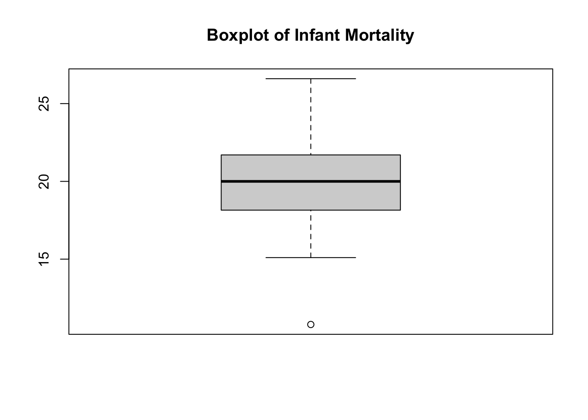
- What is the 1st quartile of infant mortality?
- What is the 3rd quartile of infant mortality?
- What is the IQR of infant mortality?
- The upper and lower whiskers in the box plot represent the boundaries for points considered to be outliers. Calculate the values of the upper and lower whiskers. Round your answers to four decimal places.
- The value of the lower whisker is
- The value of the upper whisker is
- How many outliers are in the infant mortality data?
#This is pseudocode
#To get the answers, copy and paste this code into R and fix the errors
#Load data
data(swiss)
#Save infant mortality data as a vector
infmort = swiss$Infant.Mortality
#Get five number summary
summary(infmort)
#Report 1st quartile, 3rd quartile, and IQR
#Calculate bounds by executing
lower.bound = Q1-1.5*IQR
uppper.bound = Q3+1.5*IQR
#The number of outliers is the number of observations that appear
#outside of the whiskers on the box plot. - The
mtcarsdataset contains data on ten automobile characteristics for 32 automobiles. One of those characteristics is how many forward gears a car has, which is stored in the column namedgear. Use thegearvariable to answer the following questions.
- Report the frequency of each value of the gear variable.
- The number of cars with three gears is:
- The number of cars with four gears is:
- The number of cars with five gears is:
- Report the relative frequency of each value of the gear variable. Round your answer to three decimal places.
- The relative frequency of cars with three gears is:
- The relative frequency of cars with four gears is:
- The relative frequency of cars with five gears is:
#Load data
data(mtcars)
#Save gear as a vector
gear = mtcars$gear
#Find totals for each value of gear
table(gear)## gear
## 3 4 5
## 15 12 5## gear
## 3 4 5
## 0.46875 0.37500 0.15625- Below are four histograms, each with a different amount of skew. Study the histograms, then answer the questions.
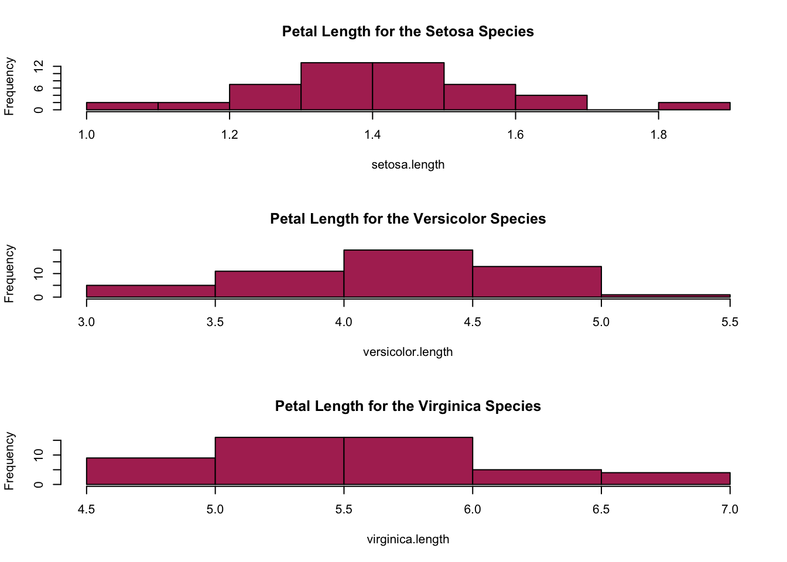
- What skew does plot A have?
- What skew does plot B have?
- What skew does plot C have?
- What skew does plot D have?
- The
irisdataset contains the sepal length and width and petal length and width, in centimeters, for 50 flowers from each species of iris flower. Use theirisdataset to answer the following questions.
- Subset the dataset such that you extract the petal length for the setosa species of iris. Report the standard deviation and IQR of petal length for the setosa species. Round your answers to four decimal places if needed.
- Setosa petal length IQR
- Setosa petal length standard deviation:
- Subset the dataset such that you extract the petal length for the versicolor species of iris. Report the standard deviation and IQR of petal length for the versicolor species. Round your answers to four decimal places if needed.
- Versicolor petal length IQR
- Versicolor petal length standard deviation:
- Subset the dataset such that you extract the petal length for the virginica species of iris. Report the standard deviation and IQR of petal length for the virginica species. Round your answers to four decimal places if needed.
- Virginica petal length IQR
- Virginica petal length standard deviation:
- Create a histogram of petal length for each of the three species of iris flower.
#This is a way of saying that you are going to make three plots,
#and you want them to be stacked on top of each other.
par(mfrow=c(3,1))
data(iris)
#For each species of iris flower, store the petal lengths as a vector
setosa.length = iris[iris$Species=="setosa","Petal.Length"]
versicolor.length = iris[iris$Species=="versicolor","Petal.Length"]
virginica.length = iris[iris$Species=="virginica","Petal.Length"]
#Create a histogram of petal length for each species
hist(setosa.length,
main="Petal Length for the Setosa Species",
col="maroon")
hist(versicolor.length,
main="Petal Length for the Versicolor Species",
col="maroon")
hist(virginica.length,
main="Petal Length for the Virginica Species",
col="maroon")
- According to the interquartile range, standard deviation, and histogram of petal length for each species, which species has the most variation in petal length?
- Below are four different datasets. Match each dataset with its respective histogram and box plot.
Data Set 1 Data Set 2 Data Set 3 Data Set 4 Mean: 52.32 Mean: 67.8 Mean: 49.4 Mean: 47.88 Median: 53 Median: 74 Median: 50 Median: 41 Std Dev: 38.297 Std Dev: 17.049 Std Dev: 20.265 Std Dev: 19.21
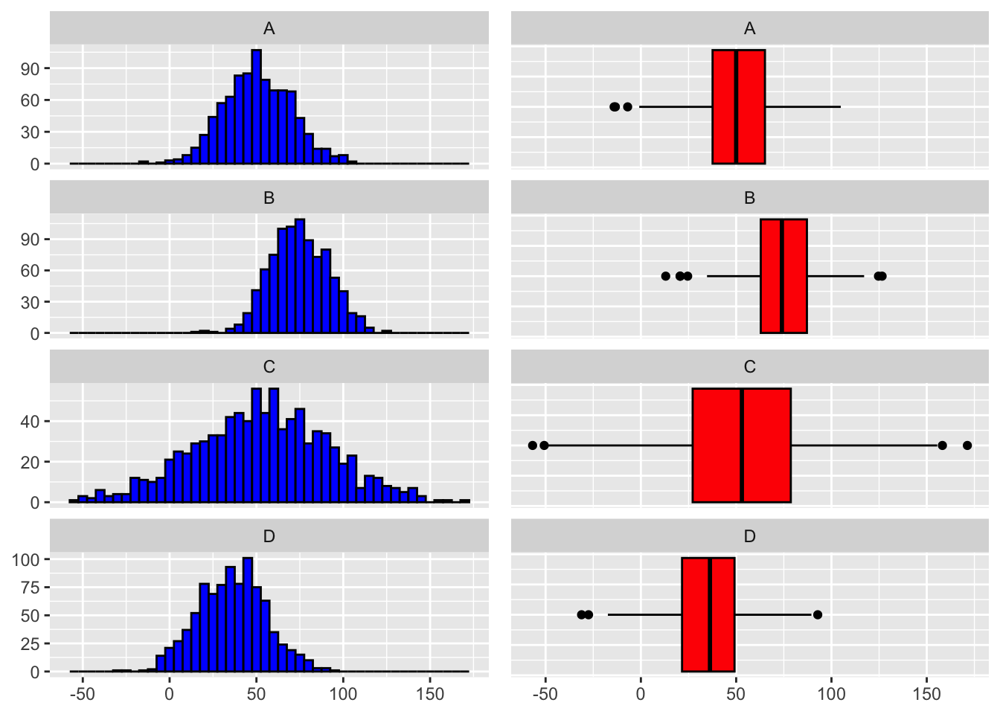
Dataset 1:
Dataset 2:
Dataset 3:
Dataset 4:
18.2 Probability
- Computer hard drives are manufactured in Phoenix, Arizona. The plant manager randomly selected three hard drives to test whether they meet quality control standards. To meet quality control standards, the hard drives must be within 0.05 ounces of the average manufactured hard drive weight of 26 ounces.
- Let M denote that a hard drive met quality control standards and F denote that a hard drive did not meet quality control standards. Select the correct sample space for the plant manager's experiment.
- Let \(M_i\) be the event that the \(i\)th hard drive met quality control standards, for \(i=1,2,3\). Are all \(M_i\)s mutually exclusive?
- Let B be the event that, of the three hard drives, an odd number of hard drives meet quality control standards (1 success or 3 successes). Let C be the event that an even number of hard drives meet quality control standards (2 successes). Which of the following best describes the intersection of events B and C, and the probability of the intersection occurring? The intersection of events B and C is denoted B∩C. Note: 0 is neither an even or an odd number.
- Let B be the event that, of the three hard drives, an odd number of hard drives meet quality control standards (1 success or 3 successes). Let C be the event that an even number of hard drives meet quality control standards (2 successes). Which of the following best describes the union of events B and C, and the probability of the union occurring? The union of events B and C is denoted B∪C. Note: 0 is neither an even or an odd number.
- Let Mi be the event that the ith hard drive meets quality control standards. Which of the following answer choices correctly uses set notation to write event C from parts b. and c. in terms of Mi.
Let \(M\) denote that a hard drive met quality control standards and F denote that a hard drive failed quality control standards. Then, the sample space is \(S=\{MFF, MMF, MMM, MFM, FFF, FMF, FMM, FFM\}\)
\(M_i\) occurs when the \(i\)th hard drive meets quality control standards for some value of \(i=1,2,3\). \(M_3\), for example, occurs when the third hard drive meets quality control standards. All of the hard drives can pass the quality control inspection at once, and therefore the \(M_i\)s are not mutually exclusive. In other words, the event \((M_1 \bigcap M_2 \bigcap M_3) \neq \emptyset\).
\(B\) is the event that, of the three hard drives, an odd number of hard drives meet quality control standards (1 success or 3 successes). \(C\) is the event that an even number of hard drives meet quality control standards (2 successes). \(B \bigcap C\) occurs when there is both an even number of successes and an odd number of successes. This cannot occur. Therefore, \(B \bigcap C = \emptyset\) and \(P(B \bigcap C)=0\).
\(B\) is the event that, of the three hard drives, an odd number of hard drives meet quality control standards (1 success or 3 successes). \(C\) is the event that an even number of hard drives meet quality control standards (2 successes). \(B \cup C\) occurs when there either an even number of successes and an odd number of successes. This occurs whenever the number of successes sums to 1, 2, or 3. In the sample space, \(S\), there are 7 outcomes in which the number of successes sums to 1, 2, or 3. Thus, \(P(B \cup C)=\frac{7}{8}\).
- A research study is conducted to investigate the relationship between exercise habits and heart health. The researchers collect data from a random sample of 500 people, and then categorized the study participants based on their exercise habits and their consumption of fruits on a typical day. Round your answers to four decimal places.
| Exercise Habits | Healthy Heart | Atrophied Heart | Total |
|---|---|---|---|
| Infrequent Exercise | 32 | 38 | 70 |
| Daily Exercise | 257 | 47 | 304 |
| Total | 289 | 85 | 374 |
Suppose we randomly select a study participant. Events H and E are defined as:
- Find \(P(H)\)
- Find \(P(H \bigcap E)\)
- Find \(P(E)\)
- Find \(P(H \mid E)\)
- Are H and E independent events?
\(P(H \mid E) = \frac{P(H \bigcap E )}{P(E)}\\\) \(P(H \mid E) = \frac{\frac{257}{374}}{\frac{304}{374}}\\\) \(P(H \mid E) = 0.8454\\\) \(P(H \mid E)=0.8454 \neq 0.7727 = P(H)\)
- Suppose two friends are playing with an unfair six-sided die and are trying to find the probability of landing on certain numbers. Since the die is unfair, each number does not have an equal chance of being rolled. The probabilities associated with the unfair die are in the table below. Use the probabilities to answer the following questions.
| Roll Result | Probability |
|---|---|
| 1 | 0.3 |
| 2 | 0.2 |
| 3 | 0.1 |
| 4 | 0.1 |
| 5 | 0.1 |
| 6 | 0.2 |
- The probability of rolling an even number is:
- The probability of rolling a number greater than 3 is:
- The probability of rolling an odd number is:
- The probability of rolling a number less than or equal to 3 is:
- The probability of rolling a 1 or a 6 is:
Probability Axiom 3 states that for any countable sequence of disjoint events \(E_1, E_2,...\), \(P(\bigcup\limits_{i=1}^{\infty} E_i) = \sum\limits_{i=1}^{\infty}P(E_i)\).
Each of the events above consist of the union of disjoint events. To find the probability of the union of disjoint events occuring, sum the probabilities of each individual event occurring.
For example, rolling an odd number consists of (rolling a 1 \(\cup\) rolling a 3 \(\cup\) rolling a 5). 1, 3, and 5 cannot be rolled at the same time, so the events are disjoint. The probability of rolling an odd number is \(P(\text{rolling a 1})+P(\text{rolling a 3})+P(\text{rolling a 5}) = 0.3+0.1+0.1 = 0.5\).
- Now suppose the friends from problem 3. find a new six-sided die. This die is a fair die, so there is an equal chance of landing on any number. Use the probabilities associated with each face of the unfair die, and the probabilities associated with each face of the fair six-sided die, to answer the following questions. Assume that the probability of the fair die landing on a particular number is independent of the probability of the unfair die landing on a particular number.
| Roll Result | Probability |
|---|---|
| 1 | 0.3 |
| 2 | 0.2 |
| 3 | 0.1 |
| 4 | 0.1 |
| 5 | 0.1 |
| 6 | 0.2 |
- The probability of rolling a 1 using the unfair die and a 1 using the fair die is:
- The probability of rolling a 6 using the unfair die and a 6 using the fair die is (round to four decimal places):
- The probability that rolling the unfair die results in a number less than 2 and rolling the fair die results in a number greater than or equal to 5 is:
- The probability that rolling the unfair die results in a number greater than 4 and rolling the fair die results in a 6 is:
- Probability that rolling the unfair die results in a 2 and rolling the fair die results in a number less than 3 is (round to four decimal places):
This problem requires the use of probability axiom 3 and an implication of independence.
Probability Axiom 3 states that for any countable sequence of disjoint events \(E_1, E_2,...\), \(P(\bigcup\limits_{i=1}^{\infty} E_i) = \sum\limits_{i=1}^{\infty}P(E_i)\).
An implication of independence is that, if \(A\) and \(B\) are independent, \(P(A \bigcap B)=P(A)*P(B)\).
Look at part d. Use axiom 3 to find the probability of rolling a value greater than 4 when using the unfair die. Since this requires finding the probability of the union of disjoint events, you can sum the probabilities of the individual events. The probability of rolling a value greater than 4 is \(P(\text{rolling a 5} \cup \text{rolling a 6})\). This is equal to \(P(\text{rolling a 5}) + P(\text{rolling a 6}) = 0.1 + 0.2 = 0.3\).
The probability of rolling a six using the fair die is \(\frac{1}{6}\).
Using the implication of independence:
\(P(\text{rolling a 6 using the fair die} \bigcap \text{rolling a number greater than 4 using the unfair die})\\\)
\(= P(\text{rolling a 6 using the fair die}) * P(\text{rolling a number greater than 4 using the unfair die})\)
\(= \frac{1}{6}*0.3 = 0.05\).
- The friends from questions 3. and 4. now want to calculate the probability of the roll from the unfair die and the roll from the fair die summing to different integer values (the probability of the fair die landing on a particular face is independent of the probability of the unfair die landing on a particular face). Use the probabilities associated with each face of the unfair die, and the probabilities associated with each face of the fair six-sided die, to answer the following questions.
| Roll Result | Probability |
|---|---|
| 1 | 0.3 |
| 2 | 0.2 |
| 3 | 0.1 |
| 4 | 0.1 |
| 5 | 0.1 |
| 6 | 0.2 |
- The probability of the unfair die roll and fair die roll summing to 0 is:
- The probability of the unfair die roll and fair die roll summing to 5 is (round your answer to four decimal places):
- The probability of the unfair die roll and fair die roll summing to 7 is (round your answer to four decimal places):
- The probability of the unfair die roll and fair die roll summing to 11 is:
- The probability of the unfair die roll and fair die roll summing to a value less than or equal to 3 is (round your answer to four decimal places):
Let \(X\) the random variable that represents the sum of the two die rolls. You can think of all of the possible sums of the two die rolls as the sample space for the friends' experiment. That is, \(S=\{1, 2, 3, 4, 5, 6, 7, 8, 9, 10, 11, 12\}\)
Then, you must use probability axiom 3 and the implication of independence to solve for the probability of one of the outcomes in the sample space occuring.
For example: \(P(X=11) = P((\text{Unfair Die} = 6 \bigcap \text{Fair Die} = 5) \cup (\text{Unfair Die} = 5 \bigcap \text{Fair Die} = 6))\)
By independence:
\(P(X=11) = P(\text{Unfair Die} = 6) * P(\text{Fair Die} = 5) \cup P(\text{Unfair Die} = 5) * P(\text{Fair Die} = 6)\)
By axiom 3:
\(P(X=11) = P(\text{Unfair Die} = 6) * P(\text{Fair Die} = 5) + P(\text{Unfair Die} = 5) * P(\text{Fair Die} = 6)\)
\(P(X=11) = .2*\frac{1}{6} + .1*\frac{1}{6}\)
\(P(X=11) = 0.05\)
- In college, there are two elective courses, the History of Rock and The Elements of Bowling. The probability that Sarah gets an A in her history course is 0.32. The probability that Sarah gets a B in her bowling course is 0.64. The probability that she gets an A in at least one of the courses is 0.46.
- The probability that she gets an A in both courses is
Let C be the event that Sarah gets an A in her history course and D be the event that Sarah gets an A in her bowling course. \(P(C \cup D) = P(C) + P(D) - P(C \bigcap D)\\\) \(P(C \bigcap D) = P(C) + P(D) - P(C\cup D)\\\)
- What is the probability she does not get an A in either course?
- What is the probability she gets an A in exactly one course?
Let C be the event that Sarah gets an A in her history course and D be the event that Sarah gets an A in her bowling course.
For Sarah to get an A in only one course, she can either earn an A in history and a B in bowling, or a B in history and an A in bowling.
That is, \((C \bigcap D^\prime) \cup (C^\prime \bigcap D)\)
Let the event in which Sarah gets an A in only one course be labeled E.
Using axiom 3:
\(P(E)=P(C \bigcap D^\prime) + P(C^\prime \bigcap D)\\\) \(P(E)=P(C)-P(C \bigcap D) + P(D) - P(C \bigcap D)\\\) \(P(E) = 0.32 - 0.22 + 0.36 - 0.22\\\) \(P(E) = 0.24\\\)
- What is the probability that she gets an A in history, given that she got an A in bowling? Round your answer to four decimal places
- Is the probability of Sarah earning an A in one course independent of whether she earns an A in the other course?
- Two national laboratories, Lab A and Lab B, are bidding for two different government contracts. The probability that Lab A is awarded a contract is 0.29, while the probability that Lab B is awarded a contract is 0.78. Since contract decisions are made independently by different government agencies, the outcomes of the bids are independent.
- What is the probability that both labs secure government contracts? Round your answer to four decimal places.
- What is the probability that at least one of the labs will secure a government contract? Round your answer to four decimal places.
- What is the probability that Lab B gets a government contract but Lab A does not? Round your answer to four decimal places.
- What is the probability that only one lab gets a government contract (only A or only B)? Round your answer to four decimal places.
- For the current to flow from the outlet (on the left of the screen) to the bulb (on the right of the screen), it must use two paths. Once a component fails on a path, that path is no longer operating. The reliability of component A is 0.85, the reliability of component B is 0.92, the reliability of component C is 0.6, the reliability of component D is 0.75, and the reliability of component E is 0.88. Reliability is the probability that the component or path is operating at any given time. Assume that each of the components and the top and bottom paths are independent.
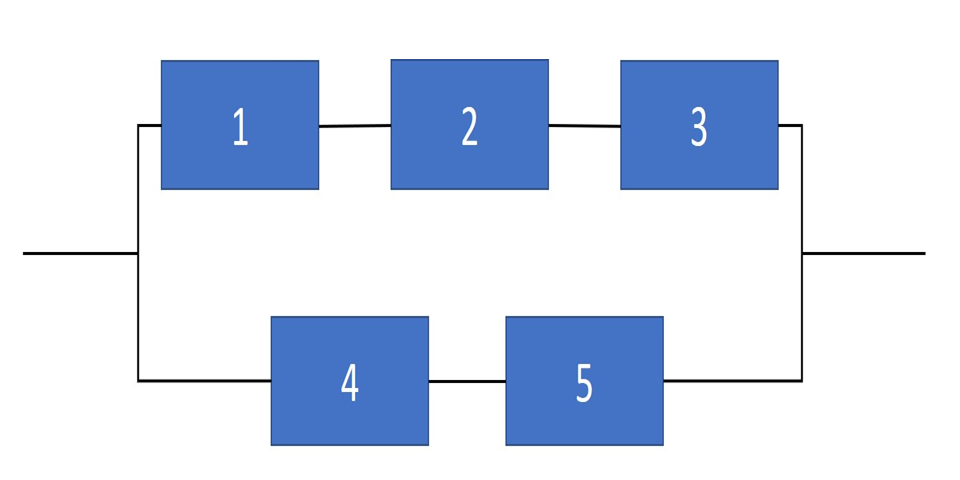
- What is the reliability of the upper path (i.e., the path that goes through component A, component B, and component C)? Use four decimal places
- What is the reliability of the lower path (i.e., the path that goes through component D and component E)?
- What is the reliability of the entire system (i.e., the probability that both paths are operating)? Use four decimals
- What is the probability that at least one of the paths is operating at any given time? Use four decimals
- Answer the following questions about combinations and permutations. Then, for each scenario, state whether a permutation or combination should be calculated.
- Which of the following best describes what a permutation is?
- Which of the following best describes what a combination is?
- A teacher is making a seating chart and wants to know how many different collections of kids can sit in the five seats at the front of the class. There are 25 kids in the class.
- A chemist is running an experiment in which three chemicals will be entered into a basic solution, one at a time. The product of the experiment is dependent on the order in which the chemicals enter the basic solution. The chemist wants to solve for the number of possible products.
- A statistician studying the characteristics of a certain fish wants to select a random sample of 24 fish from a population of 20000 fish. The statistician wants to know the number of unique samples of 24 fish that can be drawn.
- The Texas state lottery has two different games. In the first game, a representative of the lottery draws 5 numbers from a batch of numbers ranging from 1 to 30. If a participant has all five numbers on their lottery ticket, no matter the order, they win the lottery. In the second game, a representative of the lottery draws 6 numbers from a batch of numbers ranging from 1 to 15. If a participant's ticket has the six numbers in the same order that they were drawn, they win the lottery.
- How many possible collections of six numbers can the lottery representative draw in the first lottery game.
- A student at Texas A&M University is convinced that they are going to win the first lottery game because they purchased 500 entries. What is the probability that this student will win? Round your answer to four decimal places.
- How many possible permutations of six numbers can the lottery representative draw in the second lottery game?
- A student at Texas A&M University is not convinced that they are going to win the second lottery game because they only bought one ticket. What is the probability that this student will win? Round your answer to two decimal places. \(*10^{-7}\)
- In basketball, a team in the "double bonus" shoots two free throws for non-shooting fouls. Assume a basketball team is in the double bonus. The probability of a player on the team making their first free throw after getting a non-shooting foul is 43%. The probability of a player making their second free throw after getting a non-shooting foul is 32%. The probability of a player making both their first and second attempts, any time they are fouled while not shooting, is 21%.
- What is the probability of a player, on any non-shooting foul, making at least one of their two attempts?
- What is the probability of a player making their first free throw attempt, but missing their second free throw attempt? Use four decimals
- What is the probability of a player making only one free throw attempt?
- What is the probability of a player making 0 attempts?
- What is the probability of a player making their second free throw attempt, given that they made their first free throw attempt? Round your answer to four decimal places.
- Are the free throw attempts independent events?
- A company has 15 employees, consisting of 6 engineers, 5 lawyers, and 4 marketers. They are starting on a new project, and want to form a team of 5 workers.
- Imagine that the project manager does not require a certain number of employees from any department (i.e., there can be 5 lawyers and 0 engineers and marketers). How many different project teams can be formed?
- How many teams with 2 engineers and 3 lawyers are possible?
- If the teams are selected using the simple random sampling technique, what is the probability of selecting a team with 1 engineer, 1 lawyer, and 3 marketers? Round your answer to four decimal places.
- If the teams are selected using the simple random sampling technique, what is the probability of selecting a team with 2 engineers, 2 lawyers, and 1 marketer or a team with 3 engineers, 2 lawyers, and 0 marketers? Round your answer to four decimal places.
- In a laboratory, there are 12 chemical compounds. Suppose that a particle in the environment contaminated eight of the chemical compounds since their last inspection. A chemist enters the lab to begin the next inspection.
- How many different sets of three chemical compounds can the chemist select?
- What is the probability that all three chemical compounds selected are contaminated? Give your answer to four decimal places.
- What is the probability that all three chemical compounds selected are not contaminated? Give your answer to four decimal places.
- What is the probability that at least one of the chemical compounds is contaminated? Give your answer to four decimal places.
- In a military squadron, there are 13 fighter jets. Suppose that 5 of these fighter jets are equipped with advanced stealth technology. Find the probability of each of the following events.
- The squadron commander randomly selects five fighter jets for a mission, and none of the fighter jets are equipped with advanced stealth technology. Round your answer to four decimal places.
- The squadron commander randomly selects five fighter jets for a mission, and three of the fighter jets are equipped with advanced stealth technology. Round your answer to four decimal places.
- Four random fighter jets take off for a practice run. The first two fighter jets have stealth technology, and the last two fighter jets do not. Round your answer to four decimal places.
Four random fighter jets are taking off. The first two have stealth capabilities, and the last two do not.
There are \(\binom{5}{2}\) combinations of stealth fighter jets that can take off first.
There are \(\binom{8}{2}\) combinations of non-stealth fighter jets that can take off last.
This means there are a total of \(\binom{5}{2}*\binom{8}{2}\) combinations of four jets where the first two jets have stealth capabilities and the last two jets do not have stealth.
There are a total of \(\binom{13}{4}\) combinations of 4 jets.
So the probability of seeing two stealth jets take off followed by two non-stealth jets is \(\frac{\binom{5}{2}*\binom{8}{2}}{\binom{13}{4}}\)
- Four random fighter jets take off for a practice run. The first three fighter jets have stealth capabilities, while the fourth jet does not. Round your answer to four decimal places.
Four random fighter jets are taking off. The first three have stealth capabilities, and the last two do not.
There are \(\binom{5}{3}\) combinations of stealth fighter jets that can take off first.
There are \(\binom{8}{1}\) combinations of non-stealth fighter jets that can take off last.
This means there are a total of \(\binom{5}{3}*\binom{8}{1}\) combinations of four jets where the first three jets have stealth capabilities and the last two jets do not have stealth.
There are a total of \(\binom{13}{4}\) combinations of 4 jets.
So the probability of seeing three stealth jets take off followed by one non-stealth jets is \(\frac{\binom{5}{3}*\binom{8}{1}}{\binom{13}{4}}\)
- A college club wants to order a pizza for a meeting. The pizza can hold a total of five toppings (pepperoni, onions, green peppers, pineapple, and ham). Answer the following questions about the possible pizzas that the club can order.
- The club only wants two of the five toppings. The members pick the two different toppings at random. Use the
choosefunction inRto calculate the number of possible combinations of toppings the friends can choose.
- The club only wants two of the five toppings. The members pick the two different toppings at random. Use the
- Additionally, the pizza restaurant allows for the choice of five different sizes (x-small, small, medium, large, and x-large). How many different choices of pizza and toppings are available if the friends randomly select a size and two toppings?
- What is the probability that the friends randomly choose a medium pizza with pepperoni and ham? Give your answer to four decimal places.
- Suppose the club has 12 members. Five of the members get in line for pizza first. How many different ways can the five club members arrange themselves (hint, use the
factorialfunction)?
- Suppose the club has 12 members. Five of the members get in line for pizza first. How many different ways can the five club members arrange themselves (hint, use the
- Suppose you have a city with two types of schools: public schools and private schools. In this city, 10% of the students attend private schools, while the remaining 90% attend public schools. It's known that among students who attend private schools, 30% score exceptionally well on standardized tests. Among students who attend public schools, 20% score exceptionally well on standardized tests. Use this information to answer the following questions.
- A random student in the city is selected as part of a survey. This student performed exceptionally well on their standardized tests. What is the probability that this student goes to a private school? Round your answer to two decimal places.
- A random student in the city is selected as part of a survey. This student performed exceptionally well on their standardized tests. What is the probability that this student goes to a public school? Round your answer to two decimal places.
- A random student in the city is selected as part of a survey. This student did not perform exceptionally well on their standardized tests. What is the probability that this student goes to a public school? Round your answer to two decimal places.
- A random student in the city is selected as part of a survey. This student did not perform exceptionally well on their standardized tests. What is the probability that this student goes to a private school? Round your answer to two decimal places.
This problem requires the use of Bayes' Theorem.
The following is the solution to part a.
Let \(A\) be the event that a student performs exceptionally well on their standardized exams. Let \(E\) be the event that the student attends private school and \(S\) be the event that the student attends public school.
\(P(E|A) = \frac{P(E\bigcap A)}{P(A)}\\\) \(P(E|A) = \frac{P(A|E)*P(E)}{P(A|E)*P(E)+P(A|S)*P(S)}\\\) \(P(E|A) = \frac{0.30*.10}{(0.30*.10)+(0.20*0.90)}\\\) \(P(E|A) = \frac{0.30*0.10}{(0.30*0.10)+(0.20*0.90)}\\\) \(P(E|A) = 0.1429\)
Similar steps can be followed to solve parts b., c., and d.
- The National Oceanic and Atmospheric Administration has developed a new weather prediction model to forecast hurricanes. Based on extensive testing, the NOAA has determined that if a hurricane is going to make landfall on a particular day, there is a probability of 0.85 that the model will trigger a hurricane warning. However, if a hurricane will not make landfall, there is a 0.12 probability that the model will trigger a hurricane warning. A hurricane only makes landfall every 1 in 300 days.
- What is the probability that, on any given day, the model will trigger a hurricane warning? Give your answer to four decimal places.
- Given that the model triggers a hurricane warning on a particular day, what is the probability that a hurricane will actually make landfall? Give your answer to four decimal places.
- Given that the model triggers a hurricane warning on a particular day, what is the probability that a hurricane will not make landfall? Give your answer to four decimal places.
- A group of 200 students has been cross classified into the following two-way table that contains major and satisfaction. A student is to be randomly selected from the group. Round your answers to three decimal places.
Major Satisfied Not Satisfied Engineering 62 49 Business 16 73
- What is the probability the selected student is a business major?
- What is the probability the selected student is a business major and is not satisfied?
- What is the probability the selected student is an engineering major or is satisfied?
- What is the probability the selected student is neither an engineering major nor is satisfied?
- Given the selected student is not satisfied, what is the probability that the selected student is a business major?
- Is the following statement true or false? The event that the selected student is a business major is independent of the event that the selected student is not satisfied.
- In a survey about football team preferences in New York, the following information is collected: the ratio of people who prefer American football to those who prefer soccer is 5/7. Among those who prefer American football teams, 64% support the New York football team, while 36% support teams from other cities. Among those who prefer soccer, 74% support the New York soccer team, while 26% support teams from other cities.
- You run into a random New Yorker while on vacation. What is the probability that the New Yorker will support a New York football team? Round your answer to four decimal places.
Let B be the event that the New Yorker supports the New York football team, C be the event that the New Yorker supports the New York soccer team, F be the event that the New Yorker prefers American football over soccer, and S be the event that the New Yorker supports soccer over American football. This event will be called E.
\(P(B) = P(B|F)*P(F) + P(B|S)*P(S)\\\) \(P(B) = 0.64*\frac{5}{7} + 0*\frac{2}{7}\)
\(P(B) = 0.4571\)
- You run into a random New Yorker while on vacation. What is the probability that the New Yorker will support a New York team (either soccer or football)? Round your answer to four decimal places.
Let B be the event that the New Yorker supports the New York football team, C be the event that the New Yorker supports the New York soccer team, F be the event that the New Yorker prefers American football over soccer, and S be the event that the New Yorker supports soccer over American football. This event will be called E.
\(P(B) = P(B|F)*P(F) + P(B|S)*P(S)\\\) \(P(B) = 0.64*\frac{5}{7} + 0*\frac{2}{7}\) \(P(B) = 0.4571\)
\(P(C) = P(C|F)*P(F) + P(C|S)*P(S)\\\) \(P(C) = 0*\frac{5}{7} + 0.74*\frac{2}{7}\) \(P(C) = 0.2114\)
These events are mutually exclusive \(P(B \bigcup C) = 0.2114+0.4571 = 0.6685\)
- It is discovered that of the New Yorkers who support the local soccer team, 53% attend one game per season. Among the New Yorkers who support the local football team, 75% attend one game per season. New Yorkers who do not support local football or soccer teams do not attend any games. What is the probability that, while on vacation, you run into a New Yorker who will attend either a soccer or football game this season? Round your answer to four decimal places.
Let B be the event that the New Yorker supports a local football team, C be the event that the New Yorker supports a local soccer team, F be the event that the New Yorker prefers American football over soccer, and S be the event that the New Yorker supports soccer over American football. This event will be called E.
Then, let H be the event that the New Yorker attended a local game. The law of total probability will be used to answer this question.
\(P(H) = P(H \bigcap C) \bigcup P(H \bigcap B)\\\) \(P(H) = P(H|B)*P(B) + P(H|C)*P(C)\)
\(P(C)\) and \(P(B)\) were found in part b.
\(P(H)= 0.75*0.4571 + 0.53*0.2114\\\)
\(P(H)=0.4549\\\)
- You run into a random New Yorker who attended a game the day before. What is the probability that New Yorker is a soccer fan (i.e., prefers soccer to American football)? Round your answer to four decimal places.
Let B be the event that the New Yorker supports a local football team, C be the event that the New Yorker supports a local soccer team, F be the event that the New Yorker prefers American football over soccer, and S be the event that the New Yorker supports soccer over American football. This event will be called E.
Then, let H be the event that the New Yorker attended a local game. The law of total probability will be used to answer this question.
\(P(S|H)= \frac{P(S \bigcap H)}{P(H)}\)
New Yorkers who do not support local football or soccer teams do not attend any games. So the probability of going to a game given that you are a soccer fan is equal to the probability that you supporting the local team and going to the game, given that you are a soccer fan.
\(P(S \bigcap H)=P(H|S \bigcap C)*P(S \bigcap C)\)
\(P(S \bigcap H)=P(H|S \bigcap C)*P(C|S)*P(S)\)
\(P(S \bigcap H)=0.53*0.74*\frac{2}{7}\)
\(P(S \bigcap H)=0.53*0.74*\frac{2}{7}\)
\(P(S \bigcap H)=0.1121\)
Use this to solve for \(P(S|H)\)
\(P(S|H)= \frac{0.1121}{0.4549}\)
\(P(S|H)= 0.2464\)
- Two friends are playing with a fair six-sided die. One of the friends states that the probability of landing a two is not 1/6, but is actually greater. The other friend argues that the probability of landing a two is indeed 1/6. You, a statistician, are asked to solve this problem by running an experiment in
R
- Set your seed to 123 using the
set.seedfunction. Use aforloop and theplotfunction to make a plot of the long-run average proportion of die rolls that result in a two when using a fair six-sided die. Use 1500 rolls in your experiment. After you complete your plot, compare your plot to the correct plot below.
- Set your seed to 123 using the
# Set a seed for reproducibility
set.seed(123)
x <- c()
sum <- 0
y <- c()
for(i in 1:1500){
two <- sample(c(1, 2, 3, 4, 5, 6), size = 1, replace = TRUE)
if(two==2){
sum = sum+ 1
}
x[i] = i;
y[i] = sum/i
}
plot(x, y, xlab = "Number of Rolls", ylab = "Proportion of 2s Rolled", type = "b")
abline(0.5, 0, lty = 2, col = "grey")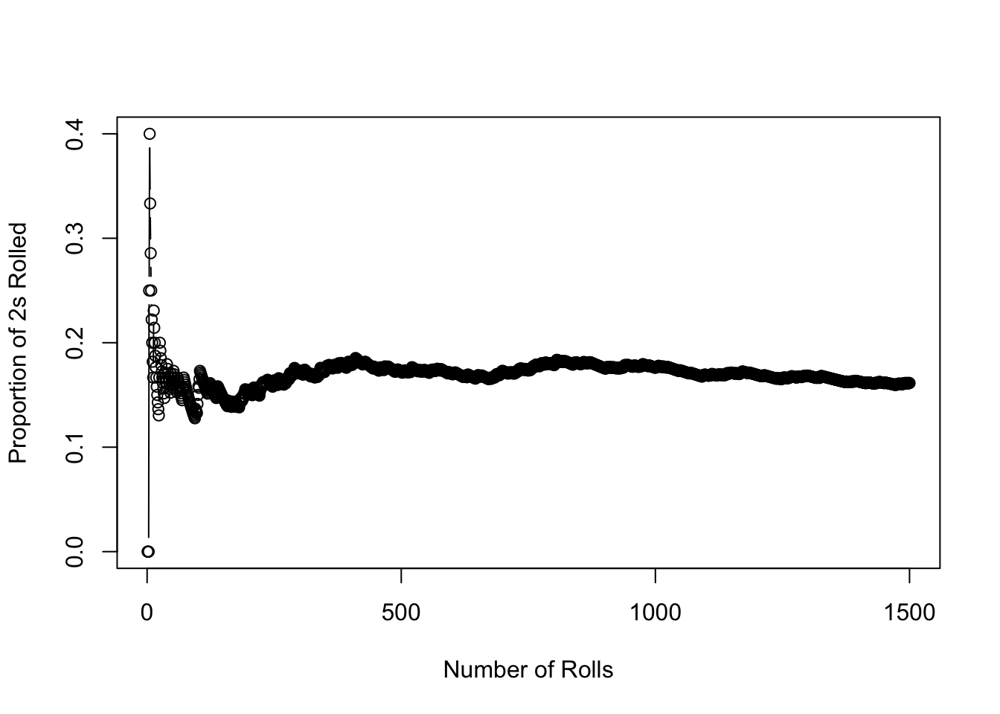
- Does your graph support or discredit the claim that the probability of rolling a two using a fair six-sided die is 1/6?
18.3 Random Variables and Probability Distributions
- A standard deck of cards has 52 cards. Of the 52 cards, 26 are red (13 hearts and 13 diamonds) and 26 are black (13 spades and 13 clubs). You pick 3 cards from a standard deck.
- You want to know the number of black cards there are among the three cards that you selected. Is the random variable you are interested in discrete or continuous?
- You want to know the number of black cards there are among the three cards that you selected. Which of the following answer choices best describes the random variable you are interested in?
- You want to know the number of black cards there are among the three cards that you selected. Let the random variable N represent the number of black cards there are among the three cards that you selected. What are the possible outcomes for each card and how do the outcomes impact N?
- Let the random variable \(N\) represent the number of black cards there are among the three cards that you selected. List each outcome in the sample space, \(S_n\), and the corresponding values of \(N\).
\[ \begin{equation} S_n = \left\{\begin{array}{lr} \text{{B, B, B}}, & N=3\\ \text{{B, B, R}}, & N=2\\ \text{{R, B, B}}, & N=2\\ \text{{B, R, B}}, & N=2\\ \text{{B, R, R}}, & N=1\\ \text{{R, B, R}}, & N=1\\ \text{{R, R, B}}, & N=1\\ \text{{R, R, R}}, & N=0\\ \end{array}\right. \end{equation}\]
- There are two manufacturers of specialized robot umpires for Major League Baseball. The first manufacturer can produce a maximum of 5 robot umpires per year, and the second manufacturer can produce a maximum of 7 robot umpires per year. Both manufacturers are capable of producing 0 robot umpires in a year. Give the possible values for each of the following random variables.
- \(T=\) the total number of robots produced in a year.
\(S_t=\{0,1,2,3,4,5,6,7,6,9,10,11,12\}\)
- \(D=\) the difference in the number of robots produced by manufacturer 1 and manufacturer 2 in a year.
\(S_d=\{-7,-6,-5,-4,-3,-2,-1,0,1,2,3,4,5\}\)
- \(M=\) the number of robots produced by the manufacturer that produces the most robots in a year. That is, if manufacturer 1 produces 2 robots and manufacturer 2 produces 5 robots in a given year, then manufacturer 2 produced more robots and \(m=5\).
\(S_m=\{0, 1, 2, 3, 4, 5, 6, 7\}\)
- \(N=\) the number of manufacturers that produce exactly 3 robots in a year.
\(S_n=\{0, 1, 2\}\)
- Two opponents, the home team and the visiting team, are about to face off in a football game. A group of football experts expect the home team to win by at least seven points. Let \(F\) represent the margin of victory for the home team (i.e., how many points they win by). The probability mass function for \(F\) is below. Assume \(P(F=f)=0\) for all values of \(f\) that are not listed in the table. Use this table to answer the following questions.
| F | P(F=f) |
|---|---|
| -14 | 0.05 |
| -7 | 0.10 |
| -3 | 0.33 |
| 2 | 0.01 |
| 3 | 0.17 |
| 7 | 0.25 |
| 14 | 0.05 |
| 17 | 0.04 |
- What type of random variable is F?
- What is the probability that the home team scores at most 3 more points than the away team.
- What is the probability that the home team loses.
- What is the probability that the home team loses or wins by more than 7 points.
- What is the probability that the home team either wins or loses by a field goal (3 points)
- What is the probability that the group of football experts is correct in their prediction?
The probabilty mass function for \(F\) is given in the table. We can assume that \(P(F=f)=0\) for all values of \(f\) that are not in the table.
To compute the probabilities above, we use probability axiom three.
Look at part f. The probability that the team wins by at least seven points is equal to \(P(F=7 \bigcup F=14 \bigcup F=17)\). The event \((F=7 \bigcap F=14 \bigcap F=17) = \emptyset\).
Therefore, \(P(F=7 \bigcup F=14 \bigcup F=17)\) is equal to:
\(P(F=7) + P(F=14) + P(F=17)\)
The probability of the home team winning the game by at least 7 points is \(0.25+.05+.04=0.34\).
- Below is a table showing the probability mass function for two discrete random variables: \(X\) and \(Y\). State whether the probability mass function for each discrete random variable is valid or invalid.
| x | 0 | 1 | 2 | 3 | 4 | All other Values |
|---|---|---|---|---|---|---|
| f(x) | 0.15 | 0.01 | 0.57 | 0.12 | 0.08 | 0 |
| y | 0 | 1 | 2 | 3 | 4 | All other values |
|---|---|---|---|---|---|---|
| f(y) | 0.24 | 0.05 | 0.05 | 0.15 | 0.51 | 0 |
- The probability mass function for the discrete random variable X is:
- The probability mass function for the discrete random variable Y is:
- The following shows the probability mass function for a discrete random variable \(Z\). Find the value of \(h\) such that the \(p(z)\) is a valid probability mass function.
- The value of \(h\) is (round your answer to four decimal places):
z 0 1 2 3 4 5 All other values f(z) 0.15*h 0.25*h 0.30*h 0.05*h 0.10*h 0.04*h 0
- The following shows the probability mass function for a discrete random variable \(Z\). Find the value of \(h\) such that the \(p(z)\) is a valid probability mass function.
- An airplane producer makes five different types of airplanes, and has contracts with various airlines and governments around the globe. The producer is currently under contract to produce 5 planes, each for a different customer, during the next business year. Each year, the producer either meets, exceeds, or fails to meet its expectations. The PMF for the actual number of airplanes the producer will complete in the next year, \(X\), is below. Assume that \(P(X=x)=0\) for all values of \(x\) not displayed.
| x | 0 | 1 | 2 | 3 | 4 | 5 | 6 |
|---|---|---|---|---|---|---|---|
| f(x) | 0.05 | 0.15 | 0.17 | 0.12 | 0.15 | 0.33 | 0.03 |
- Construct the CDF, \(F_X(x)\).
\[F_X(x) = \left\{\begin{array}{lr} 0, & \ x < \ 0 \\ 0.05, & 0 \le x < 1\\ 0.20, & 1 \le x < 2\\ 0.37, & 2 \le x < 3\\ 0.49, & 3 \le x < 4\\ 0.64, & 4 \le x < 5\\ 0.97, & 5 \le x < 6\\ 1, & \ x \ge 6 \end{array}\right.\]
- Use paper or
Rto plot the CDF, \(F_X(x)\).
- Use paper or
#Create a vector of x values
x <- c(0, 1, 2, 3, 4, 5, 6)
#Create a vector of CDF values
cdf <- c(0.05, 0.20, 0.37, 0.49, 0.64, 0.97, 1)
#CDF Plot
plot(x,
cdf,
type = "s",
main = "CDF of X",
xlab = "Planes",
ylab = "Cumulative Probability", col = "blue",
lwd = 2)
grid() #Makes plot easier to see and understand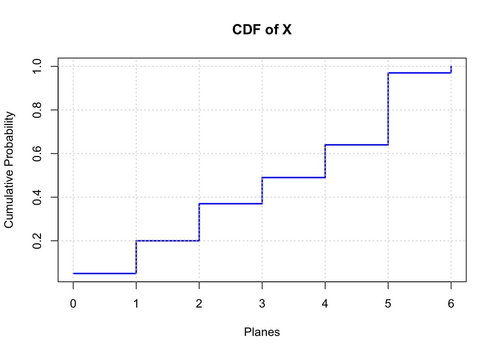
- Using the CDF that you constructed, what is the probability that the airplane producer fails to meet expectations during the next business year?
- Using the CDF that you constructed, what is the probability that the airplane producer produces between 2 and 4 planes (inclusive) during the next business year?
- Using the CDF that you constructed, what is the probability that the airplane producer produces less than 3 planes during the next business year?
- A student at Texas A&M decides to play a unique basketball game with his/her friends. In this game, each friend takes five shots: 3 shots from anywhere on the court and 2 shots from the free throw line. The three shots from anywhere count for two points each, and the free throw shots count for one point each. The shots can be taken in any order. The student makes 40% of his/her shots. Let \(Z\) be the number of points the student scores during the game. Answer the following questions.
- These calculations will help you construct the pdf of \(Z\). Type in the number of different ways that the student can score the given number of points.
- 0 points:
- 1 point:
- 2 points:
- 3 points:
- 4 points:
- 5 points:
- 6 points:
- 7 points:
- 8 points:
There are 3 two-point shots and 2 one-point shots (free throws) taken during the game.
Use the combination formula, \(\binom{n}{x}\), and the multiplication rule to calculate the number of ways that the student can score each number of points.
To score zero points, the player must miss all two pointers and all free throws. There is only 1 way to do this (miss all of the shots).
To score one point, the player must make one of the free throws and miss all of the two pointers. There are \(\binom{2}{1} * \binom{3}{0} = 2\) ways to do this.
To score two points, the player can either make two free throws and miss all two pointers, or make one two pointer and miss the rest of the two-pointers and free throws. There are \(\binom{2}{2} * \binom{3}{0} + \binom{2}{0} * \binom{3}{1}=4\) ways to do this.
A similar logic applies to the rest of the points.
You should find that there are 6 ways to make 3 points, 6 ways to make 4 points, 6 ways to make 5 points, 4 ways to make 6 points, 2 ways to make 7 points, and 1 way to make 8 points.
- What is the PMF of \(Z\), \(P_Z(z)\)? Round your answers to four decimal places.
- \(P(Z=0)=\)
- \(P(Z=1)=\)
- \(P(Z=2)=\)
- \(P(Z=3)=\)
- \(P(Z=4)=\)
- \(P(Z=5)=\)
- \(P(Z=6)=\)
- \(P(Z=7)=\)
- \(P(Z=8)=\)
- \(P(Z=z) \text{ for all other values of z}=\)
To solve for the probability of the student making a certain number of points, you must use the implication of independence.
Let's solve for the probability that the student scores 4 points.
The student can score 4 points by making 2 two-pointers. The student can score 2 two-pointers in \(\binom{3}{2}* \binom{2}{0}=3\) different ways. Thus, the probability of the student scoring 2 two-pointers is \(3*(0.4)^2*(0.6)^3\).
The student can also score 4 points by making 1 two-pointer and 2 free throws. The student can do this in \(\binom{3}{1}* \binom{2}{2}=3\) different ways. The probability of the student scoring 1 two-pointer and 2 free throws is therefore \(3*(0.4)^3*(0.6)^2\).
To get the probability of the student scoring 4 points, you can add the probabilities of these two events since they are mutually exclusive.
Therefore, the probability that the student scores 4 points is \((3*(0.4)^2*(0.6)^3)+(3*(0.4)^3*(0.6)^2)=0.1728\).
The same logic can be applied to the rest of the points.
The final PMF is:
\[ f_Z(z) = \left\{\begin{array}{lr} 0.0778 , & x =0 \\ 0.1037, & x=1 \\ 0.1901, & x=2\\ 0.2074, & x=3\\ 0.1728, & x=4\\ 0.1382, & x=5\\ 0.0691, & x=6\\ 0.0307, & x=7\\ 0.0102, & x=8\\ 0, & otherwise \end{array}\right. \]
- Use the PMF of \(Z\), \(p_Z(z)\), to compute the probabilities below. These probabilities will comprise the CDF of \(Z\), \(F_Z(z)\).Round your answers to four decimal places when possible.
- \(P(Z < 0)=\)
- \(P(0 \le Z < 1)=\)
- \(P(1 \le Z < 2)=\)
- \(P(2 \le Z < 3)=\)
- \(P(3 \le Z < 4)=\)
- \(P(4 \le Z < 5)=\)
- \(P(5 \le Z < 6)=\)
- \(P(6 \le Z < 7)=\)
- \(P(7 \le Z < 8)=\)
- \(P(Z \le 8)=\)
\(F_Z(z)\) is defined to be the cumulative probability for the nearest possible value of the rv \(Z\) that is to the left of \(z\).
\(P(3 \le Z < 4)=P(Z \le 3)\)
\(P(3 \le Z < 4)=P(Z=0)+P(Z=1)+P(Z=2)+P(Z=3)\)
\(P(3 \le Z < 4)=0.0778+0.1037+0.1901+0.2074\)
\(P(3 \le Z < 4)=0.579\)
\[F_Z(z) = \left\{\begin{array}{lr} 0, & \ z < \ 0 \\ 0.0778, & 0 \le z < 1\\ 0.1815, & 1 \le z < 2\\ 0.3716, & 2 \le z < 3\\ 0.579, & 3 \le z < 4\\ 0.7518, & 4 \le z < 5\\ 0.89, & 5 \le z < 6\\ 0.9591, & 6 \le z < 7\\ 0.9898, & 7 \le z < 8\\ 1, & \ 8 \le z \end{array}\right.\]
- Plot the CDF, \(F_Z(z)\)
#Create a vector of x values
z <- c(0, 1, 2, 3, 4, 5, 6, 7, 8)
#Create a vector of CDF values
cdf <- c(0.0778, 0.1815, 0.3716, 0.579
, 0.7518, 0.89, 0.9591
, 0.9898
, 1)
#CDF Plot
plot(z,
cdf,
type = "s",
main = "CDF of Z",
xlab = "Points Scored",
ylab = "Cumulative Probability", col = "blue",
lwd = 2)
grid() #Makes plot easier to see and understand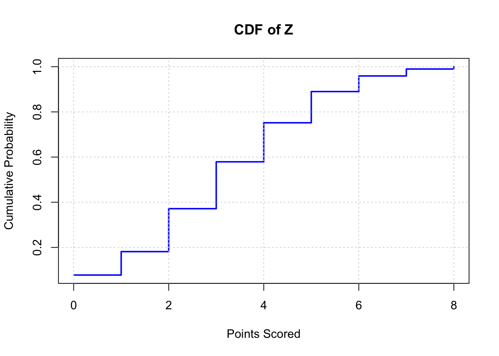
- Using the CDF that you constructed, find \(P(2\le Z < 6)\). Round your answer to four decimal places.
- A quality control team at a tech company in Austin, Texas, inspects electronic components. They record the number of critical defects in each component. Let \(Y\) represent the number of critical defects in a randomly selected electronic component. The cumulative distribution function (CDF) of \(Y\) is as follows:
\[F_Y(y) = \left\{\begin{array}{lr} 0, & \ y < \ 0 \\ 0.1, & 0 \le y < 1\\ 0.4, & 1 \le y < 2\\ 0.7, & 2 \le y < 3\\ 0.9, & 3 \le y < 4\\ 1, & \ 4 \le y \end{array}\right.\]
Calculate the following probabilities from the given CDF, \(F_Y(y)\).
- \(P(Y=2)\)
- \(P(Y > 2)\)
- \(P(1 \le Y \le 3)\)
- \(P(2 < Y < 4)\)
- Sarah is a financial advisor who manages investments for her clients. When a client invests in a particular stock or asset, there's a chance that the investment will yield a positive return (profit), and there's also a chance that the investment will yield a negative return (loss). The probability of different investment returns is given in the following table:
Investment Return -10% -5% 0% 5% 10% Probability 0.23 0.15 0.1 0.15 0.37
- What is the probability that Sarah will earn less than a 5% return on her next investment?
- Imagine that a fast-food restaurant is running a promotion to advertise their loyalty program. In this promotion, customers can purchase a $20 special meal deal that includes a burger, fries, a drink, and a subscription to the loyalty program. If they purchase the meal, they will also receive a raffle ticket that gives them the chance to win various cash prizes. The probabilities of winning the cash prizes are shown below. Use the probabilities to answer the following questions.
Prize Probability Grand Prize- $10,000 1/100,000 Second Prize- $1,000 1/10,000 Third Prize- $50 1/1000 Fourth Prize- $25 1/100 Fifth Prize- $5 1/50
| Prize | Probability |
|---|---|
| Grand Prize- $10,000 | 1/100,000 |
| Second Prize- $1,000 | 1/10,000 |
| Third Prize- $50 | 1/1000 |
| Fourth Prize- $25 | 1/100 |
| Fifth Prize- $5 | 1/50 |
- What is the probability of a customer making a positive amount of money from their purchase (i.e., winning more through the promotion than they paid for the meal)? Round your answer to four decimal places.
- Let \(X\) be the random variable that represents the amount of money a customer wins after purchasing the meal. What must \(P(X=0)\) be for \(X\) to have a valid probability density function? Round your answer to four decimal places.
- \(P(X=0)=\)
- A property management company offers insurance coverage to students to cover damages that may occur in student apartments. Let \(Y\) be the cost of damages (in $) incurred in a student apartment by a student during a given school year. The possible values of \(Y\) are 0, 500, 1000, and 2000, with probabilities 0.7, 0.1, 0.15, and 0.05, respectively. The property management company offers a $200 deductible policy for student housing.
- What is the expected value of damage incurred in a student apartment by a student during a given school year?
- What is the standard deviation of the amount of damage incurred in a student apartment by a student during a given school year? Round your answer to four decimal places.
- What is the expected amount of damages that the insurance company will have to pay for each student they insure?
The insurance company has to pay the damages that the deductible does not cover.
The expected cost of damages is 300 dollars. The deductible is 200 dollars. This means that the insurance company should expect to pay 100 dollars in damages for each student they insure.
- If the company wants its expected profit to be $175 per student, what premium should it charge at the beginning of the school year?
If the insurance company wants to make 175 dollars in profit per student, and they expect to pay 100 dollars in damages per student, then they should charge a 275 dollar premium to the student at the beginning of the year.
- A sporting goods store offers two types of baseball bats: wooden bats and composite bats. At this store, 82% of customers prefer composite bats. Assume that the customers are unaware of each others preferences (i.e., their preferences are independent, or not related, to each other).
- Six people are shopping in the baseball section of the sporting goods store. Which of the following discrete probability distributions can be used to describe the random variable that represents the number of people in this group of six that want a composite bat?
- Let \(W\) be the random variable that represents the number of people, out of the six people in the baseball section, that want composite bats. What is the probability that at least three people want a composite bat \(P(W\ge 3)\)? Give your answer to four decimal places.
Use probability mass function for the binomial distribution.
\(P(W\ge 3) = 1-P(W<3)\)
\(P(W\ge 3) = 1-(P(W=0)+P(W=1)+P(W=2))\) where:
\(P(W=0)=\binom{6}{0} 0.82^0 0.18^6\)
\(P(W=1)=\binom{6}{1} 0.82^1 0.18^5\)
\(P(W=2)=\binom{6}{2} 0.82^2 0.18^4\)
- Let \(W\) be the random variable that represents the number of people, out of the six people in the baseball section, that want composite bats. What is the mean, variance, and standard deviation of \(W\)? Round your answers to four decimal places when possible.
- \(E(W)=\)
- \(\sigma^2_W=\)
- \(\sigma_W=\)
\(E(W)=n*p=6*0.82=4.92\)
\(\sigma^2_W=n*p*(1-p)=6(0.82)(0.18)=0.8856\)
\(\sigma_W=\sqrt{0.8856}=0.9411\)
- The store currently has 4 wooden bats and 2 composite bats in stock. What is the probability that this combination of bats will meet the preferences of the six people in the baseball section (i.e., what is the probability that 2 of the 6 customers will want a composite bat)? Round your answer to four decimal places.
- A college student is taking a multiple choice exam consisting of 20 questions, each with four answer choices (A, B, C, and D). The student has not studied and decides to randomly pick an answer for each question. Let \(Y\) be the number of questions that the student answers correctly on the exam.
- How many questions should the student expect to get right?
- Calculate \(\sigma_Y^2\) and \(\sigma_Y\).
- \(\sigma_Y^2=\)
- \(\sigma_Y=\) (round your answer to four decimal places)
- What is the probability that the student will get exactly 8 questions correct? Round your answer to four decimal places.
- What is the probability that the student will correctly answer at least 3 questions? Give your answer to four decimal places.
- Let the random variable Z represent the number of questions that the college student gets wrong on the exam. Which of the following gives the of Z in terms of Y?
- Calculate the probability that \(12\le Z \le 16\). Round your answer to four decimal places.
- \(P(12\le Z \le 16)=\)
- Calculate the probability that \(12\le Z \le 16\). Round your answer to four decimal places.
- Pear Electronics is a major designer and manufacturer of portable electronic devices. A statistician at Pear uses five different probability distributions-- binomial, hypergeometric, negative binomial, geometric, and poisson--to solve problems that arise at the company. For each of the problems below, choose the distribution that the statistician should use to find a solution.
- Each phone has a 1/500 chance of being defective and whether one phone is defective has no impact on whether other phones are defective. The statistician is asked to solve for the number of phones that must be sold before the first defective phone is sold.
- Each customer that walks into the Pear Electronics store has a 1/10 probability of purchasing a new phone. Customers make their purchasing decisions without regard to the purchasing decisions of other customers. The statistician wants to know the number of customers in the next 100 customers that will purchase a phone.
- The head of quality control at Pair takes a batch of 100 phones, 20 of which are defective. He/she takes a sample of 10 phones from the 100, and asks the statistician to solve for the probability that 3 of the 10 phones will be defective.
- For each phone produced at Pear, there is a 10% chance that the phone screen is cracked. A phone screen cracking during the manufacturing process does not change the probability of other phone screens cracking during the manufacturing process. The statistician must calculate the number of phones that must be made in a day before 20 phones are found to have cracked screens.
- Suppose Pear makes an average of 10,523 phones per day. The statistician must calculate the probability that Pear will make exactly 10,600 phones tomorrow.
- A hospital is implementing an infection control program to reduce the spread of a bacterial infection within its surgical ward. The hospital's infection control team has determined that, on average, one infection occurs every six surgeries and that the probability of a patient getting infected does change when other patients get infected. Let \(Z\) be the random variable that represents the number of surgeries that take place before the 2nd infection.
- \(Z\) has which of the following distributions?
- Write the probability mass function of \(Z\).
\[ \begin{equation} P(Z=z) = \left\{\begin{array}{lr} {z-1 \choose 2-1}\frac{1}{6}^2(1-\frac{1}{6})^{z-2},& z = 2, 3, 4, ...\\ 0, & otherwise \end{array}\right. \end{equation} \]
- What is the probability eight surgeries are performed before two infections take place? Round your answer to four decimal places.
- How many surgeries should the hospital infection control team expect to take place before the second infection occurs?
- Calculate the variance and standard deviation of \(Z\).
- \(Var(Z)=\)
- \(Sd(Z)=\) (round your answer to four decimal places)
- Interstate 10, a major highway that stretches from California to Florida, has a particularly high rate of accidents along its Louisiana corridor. A group of engineers assessed accident data along the corridor and found that, on average, there are 2 accidents along the corridor every day. Let \(X\) denote the number of accidents that occur along the Louisiana corridor in a given day.
- \(X\) has which of the following distributions?
- What does the poisson distribution's parameter, λ (lambda), represent?
- How many accidents should the engineers expect to take place along the Louisiana corridor of I-10 in a single day?
- What is the probability mass function of \(X\)?
\[ \begin{equation} P(X=x) = \left\{\begin{array}{lr} \frac{e^{-2} 2^x}{x!},& x=0, 1, 2, ...\\ 0, & otherwise \end{array}\right. \end{equation} \]
- Calculate \(P(3\le X <5)\) Give your answer to four decimal places.
- In a high-profile legal case, a jury of 12 individuals must be selected from a pool of 500 potential jurors. The pool consists of 300 men and 200 women. The case is highly sensitive and involves issues related to gender bias. The legal team is concerned about ensuring a jury composition that reflects the demographics of the local area. Let \(M\) be the random variable that represents the number of men selected in the jury. 12 people will be selected for the jury.
- \(M\) has which of the following distributions?
- What is the probability mass function of \(M\)?
\[ \begin{equation} P(M=m) = \left\{\begin{array}{lr} \frac{\binom{300}{m}\binom{200}{12-m}}{\binom{500}{12}}, & \text{max}(0,12-500+300) \le m \le \text{min}(12,300) \\ 0, & otherwise \end{array}\right. \end{equation} \]
- How many males should the legal team expect to be on the jury?
- What is the variance of \(M\)? Round your answer to four decimal places.
- What is the probability that a randomly selected jury of 12 consists of 8 men and 4 women? Give your answer to four decimal places.
- What is the probability of having an all-male jury? Give your answer to four decimal places.
- The blooming of Gold Poppies in the Franklin Mountains is a popular sight for tourists in Texas. The plant's ability to produce the famous bright orange color is controlled by a single gene with two alleles - one for bright orange (O) and one for green (o). A survey of the population of flowering poppies in the Franklin Mountains found that the proportion of poppies carrying the dominant allele that results in the bright orange pigment, O, is 0.79. Assume the color of one poppy is independent of the color of other poppies. Round your answers to four decimal places.
- Use the
dbinomfunction to find the probability that, of a random sample of 10 plants, exactly 7 will be orange.
- Use the
- Use the
pbinomfunction to find the probability that, of a random sample of 10 plants, at least 8 will be orange. Give your answer to four decimal places.
- Use the
- The park service wants to estimate the number of poppies that will be gold, not green, next year. They expect 1000 poppies to bloom. In
R, Use theset.seedfunction to set your seed to 123. Then, conduct a simulation of next year's blooming season using therbinomfunction. There should be 10000 runs and 1000 trials (poppies). Report the average number of poppies that are gold, not green. Round your answer to four decimal places.
- The park service wants to estimate the number of poppies that will be gold, not green, next year. They expect 1000 poppies to bloom. In
You do not need to use a for loop. The simulation can be done in one line using the rbinom function.
#Set seed
set.seed(123)
#Perform simulation
x <- rbinom(n=10000, #10000 runs
size=1000, #1000 trials per run (1000 flowers)
p=0.79) #prob of having a gold poppy
y <- mean(x)
y## [1] 789.9142- A quality control engineer at a medical device factory believes that an average of three faulty devices are made per six hours in the factory. Round your answers to four decimal places if possible.
- The engineer wants to use a probability distribution to model the production of faulty devices in the factory. Which distribution should he/she use?
- Use the
dpoisfunction to find the probability that 5 faulty devices will be produced within the next six hours. Give your answer to four decimal places.
- Use the
- Use the
ppoisfunction to find the probability that more than 2 faulty devices will be produced within the next six hours. Give your answer to four decimal places.
- Use the
- In
R, Use theset.seedfunction to set your seed to 123. Then, userpoisto simulate 200 six hour time periods. How many times does the number of defective devices produced within 6 hours equal 5?
- In
#Set seed
set.seed(123)
#Perform simulation
x <- rpois(n=200, #Number of runs
lambda=3) #Define lambda
y <- sum(x==5) #Sum number of 5s
y## [1] 20- A high school counselor wants to perform a study to measure laptop accessibility among seniors in his/her school. There are 32 high school seniors and 20 of them own a laptop. The counselor is going to sample 11 of these students, without replacement, to perform the study.
- Answer the following questions by using the
choosefunction in R.
- Calculate the number of ways to choose 11 students out of 32.
- Calculate the number of ways to choose 6 students out of the 20 seniors who own a laptop.
- Calculate the number of ways to choose 5 students out of the 12 seniors that do not own a laptop.
- Answer the following questions by using the
## [1] 129024480## [1] 38760## [1] 792- What is the probability that there are 6 students with laptops in the sample of 11 seniors. Round your answer to four decimal places.
- Use the
dhyperfunction in R to calculate the probability that there are 6 students with laptops in the sample of 11 seniors.
- The probability is (round your answer to four decimal places):
- Does this match the probability you calculated in part b?
- Use the
- A hockey player makes 15\(\%\) of his/her shot on goal attempts. Answer the following questions using the
dnbinom,pnbinom, andrnbinomfunctions in R.
- Calculate the probability of it taking the hockey player 8 attempts to make 3 shots. Give your answer to four decimal places.
## [1] 0.03144761- Calculate the probability of it taking less than 8 attempts to make 3 shots. Give your answer to four decimal places.
#Probability of it taking less than eight attempts
#to make three shots is the same as
#the probability of there being at most 4 #failures
pnbinom(q=4, #Number of failures
size=3, #Number of successes
p=0.15) #Probability of success## [1] 0.07376516- In
R, Use theset.seedfunction to set your seed to 123. Then, run a simulation by using thernbinomfunction to generate a random sample of the number of attempts required until the hockey player makes three attempts. Repeat this process 1000 times. Calculate the empirical probability of it taking 8 attempts to make 3 shots. Round your answer to three decimal places.
- In
18.4 Expected Values
- Reference question 8 from Chapter 4. Answer the following questions within the same context.
- How much return can Sarah expect to earn on her next investment? \(\%\)
- What is the variance of investment returns? Round your answer to four decimal places.
- \(\sigma^2\):
\(Var(X)=\sum_{x \in S_x}(x-\mu)^2*p(x)\\\) \(Var(X)=(-10-1.4)^2(0.23)+(-5-1.4)^2(.15)+(0-1.4)^2(.1)+\\(5-1.4)^2(0.15)+(10-1.4)^2(0.37)\\\) \(Var(X)=65.54\)
- What is the standard deviation of investment returns? Round your answer to four decimal places.
- \(\sigma\):
- Reference question 9 from Chapter 4. Answer the following questions within the same context.
- How much money should a customer who purchases the meal expect to win?
- Based on the expected value of the winnings and the cost of the meal, is it worth it to buy the special meal?
- Let \(X\) be the random variable that represents the amount of money a customer wins after purchasing the meal. Calculate the variance and standard deviation of \(X\).
- \(\sigma_x^2=\) (round your answer to two decimal places)
- \(\sigma_x=\) (round your answer to one decimal place)
- An appliance store sells three different models of washing machines, each with a different load capacity: 5 kg, 7 kg, and 9 kg. Let W represent the load capacity, in kilograms, of the next washing machine purchased. The probability distribution of W is shown below.
| W | 5 kg | 7 kg | 9 kg |
|---|---|---|---|
| P(W=w) | 0.3 | 0.5 | 0.2 |
- Compute \(E(W)\), \(E(W^2)\), and \(Var(W)\). Round your answers to two decimal places.
- \(E(W)=\)
- \(E(W^2)=\)
- \(Var(W)=\)
- The price of a washer is a function of the washer's load capacity. Given a washer's load capacity, the price of a washer is: \(72.2W + 10.2\). What is the expected price of a washer at the appliance store? Give your answer to two decimal places.
#You can use R to find the expected value
#Define w
w <- c(5, 7, 9)
#Define pmf
p_w <- c(0.3, 0.5, 0.2)
#Define function
h <- function(w) { 72.2 * w + 10.2 }
#Apply function
h_w <- h(w)
#Calculate expected value
sum(h_w * p_w)## [1] 501.16- What is the variance of the price paid for a washer at the appliance store? Round your answer to two decimal places.
#You can use R to find the variance
#Define w
w <- c(5, 7, 9)
#Define pmf
p_w <- c(0.3, 0.5, 0.2)
#Define function
h <- function(w) { 72.2 * w + 10.2 }
#Apply function
h_w <- h(w)
#Calculate expected value
expectedvalue = sum(h_w * p_w)
#Calculate variance
sum(((h_w-expectedvalue)**2)*p_w)## [1] 10217.17- The sticker on a washer gives the official estimate of a washer's load capacity, but there is some error in the devices used in the estimation process. A washer's actual load capacity is a function of the stated load capacity, and is given by \(W+0.0142W^2\). What is the expected actual load capacity of a washer sold at the appliance store? Give your answer to four decimal places.
#You can use R to find the expected value
#Define w
w <- c(5, 7, 9)
#Define pmf
p_w <- c(0.3, 0.5, 0.2)
#Define function
h <- function(w) { w +0.0142*w^2 }
#Apply function
h_w <- h(w)
#Calculate expected value
sum(h_w * p_w)## [1] 7.48444- Answer the following multiple choice questions about continuous random variables.
- What is the difference between a discrete random variable and a continuous random variable?
- Let f(x) be the probability density function of the continuous random variable X. What two conditions must f(x) satisfy to be a valid PDF?
- Let f(x) be the probability density function of the continuous random variable X. How is f(x) related to the probability of X taking on different values in its range of support?
- Let f(x) be the probability density function of the continuous random variable X. How are the PDF, f(x), and the CDF, F(X), related?
- The amount of time it takes for a human to comprehend speech, in seconds, is given by the random variable \(T\). The probability density function for \(T\) is:
\[ \begin{equation} f_T(t) = \left\{\begin{array}{lr} 3t^2, & 0\le t \le 1 \\ 0, & otherwise \end{array}\right. \end{equation}\]
- Graph the probability density function.
#Set t values
t <- seq(0,1,0.01)
#Set pdf values
pdf <- 3*(t**2)
#Plot pdf
plot(x=t,
y=pdf,
type="l",
ylab="f(t)",
main="PDF of T")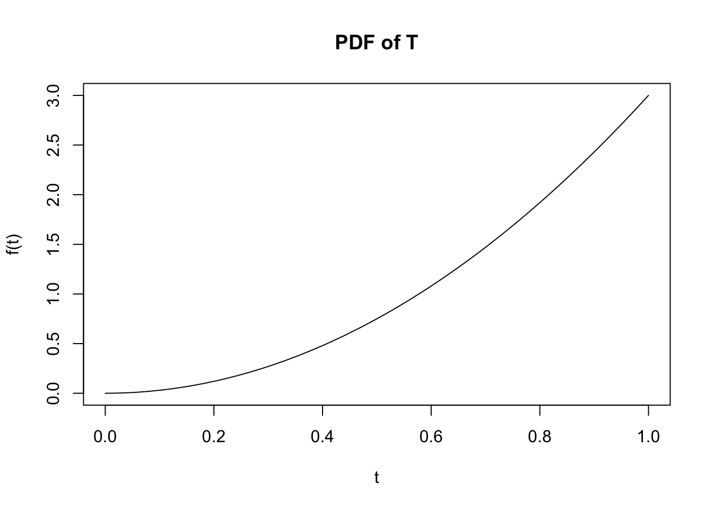
- Is the total area under the density curve equal to 1?
- Calculate the probability that \(T\le0.75\). Round your answer to four decimal places.
- Is this probability the same as \(P(T<0.75)\)?
- Calculate \(P(0.25\le T \le 0.45)\). Round your answer to four decimal places.
To get the solution to part d, you must take the integral of \(f_T(t)\) from 0.25 to 0.45. This is the equivalent of "summing" the probabilities over this region.
\(\int_{0.25}^{0.45} 3t^2 \, dt \\\) \(=t^3|_{0.25}^{0.45} \\\) \(=0.0755\\\)
- A GPS system has a margin of error of 3 meters. This means that the GPS can mark you as 3 meters lower or higher than your actual location. Let \(E\) be the random variable that represents the actual error associated with a given GPS measurement. The pdf of \(E\) is given below:
\[ \begin{equation} f_E(e) = \left\{\begin{array}{lr} \frac{3}{32}(4-e^2), & -2\le e \le 2 \\ 0, & otherwise \end{array}\right. \end{equation} \]
- Graph the probability density function using
R.
- Graph the probability density function using
#Create range of e values
e <- seq(-2,2,0.1)
#Get pdf values
pdf <- (3/32)*(4-(e**2))
#Plot pdf
plot(e,
pdf,
type="l", #Produces a line graph
ylab="f(e)",
main="PDF of E")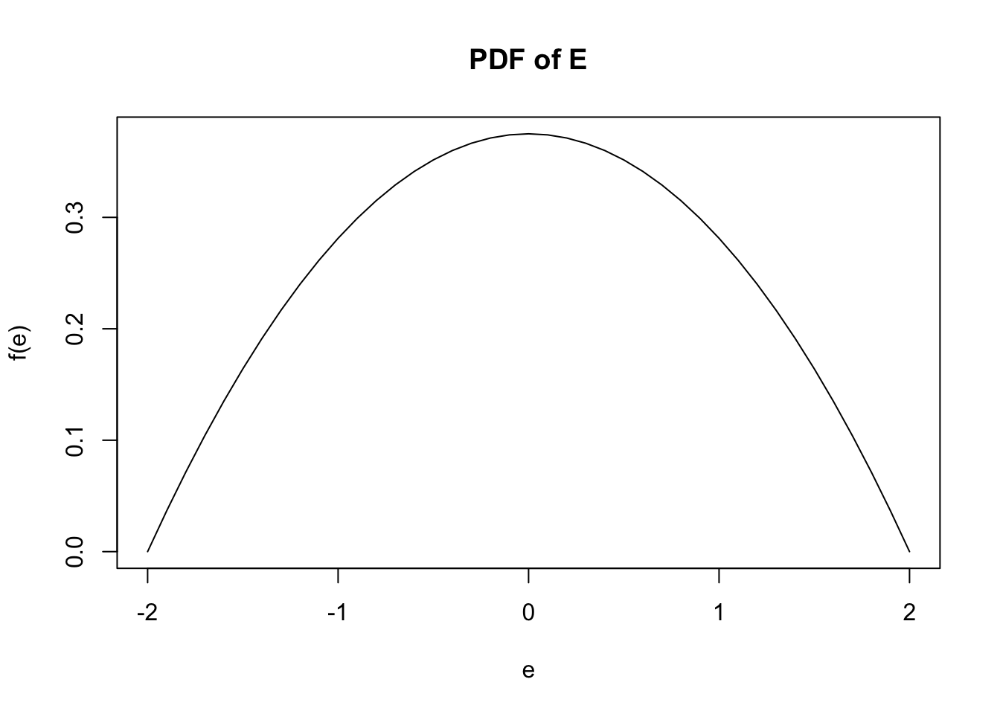
- Is the total area under the density curve equal to 1?
To see if the area under the density curve is equal to 1, you must integrate the probability density function over all possible values of the random variable \(E\).
\(\int_{-2}^{2} \frac{3}{32}(4-e^2) \, de \\\) \(=\int_{-2}^{2} \frac{3}{8}-\frac{3e^2}{32} \, de \\\) \(=\frac{3}{8}e-\frac{3e^3}{96} |_{-2}^{2}\\\) \(=1\)
- What is \(P(E>0)\)?
- What is \(P(-1.5 < E < 1.5)\)? Round your answer to four decimal places.
- What is \(P(\{E<-1.4\} \cup \{E>1.2\})\)? Round your answer to four decimal places.
The probability of the union of two disjoint events is the sum of the probabilities of the two events.
\(P(\{E<-1.4\} \cup \{E>1.2\})\\\) \(=\int_{-2}^{-1.4} \frac{3}{32}(4-e^2) \, de + \int_{1.2}^{2} \frac{3}{32}(4-e^2) \, de\\\) \(=0.06075+0.104\\\) \(=0.1648\)
- A grocery store has a digital scale that customers use to weigh fruit and vegetables. The scale can only weigh items that are between 1 and 3 pounds. The random variable \(W\) represents the weight of produce placed on the digital scale, in pounds. The pdf of \(W\) is given below:
\[ \begin{equation} f(w) = \left\{\begin{array}{lr} c(1-(w-2)^2), & 1\le w \le 3 \\ 0, & otherwise \end{array}\right. \end{equation}\]
- What is the value of c that makes this a valid probability density function?
\(\int_{1}^{3} c(1-(w-2)^2) \, dw \\\) \(=\int_{1}^{3} c-c(w-2)^2 \, dw \\\) \(=\int_{1}^{3} -cw^2+4cw-3c \, dw \\\) \(=[\frac{-cw^3}{3}+2cw^2-3cw] |_{1}^{3}\\\) \(=\frac{-26}{3}c+10c\\\)
Set this result equal to 1 and solve for \(c\). Your final answer should be \(c=0.75\).
- Graph the probability density function using
R.
- Graph the probability density function using
w <- seq(1,3,0.1)
pdf <- (3/4)*(1-(w-2)**2)
plot(w,
pdf,type="l", #Produces a line graph
ylab="f(w)",
main="PDF of W")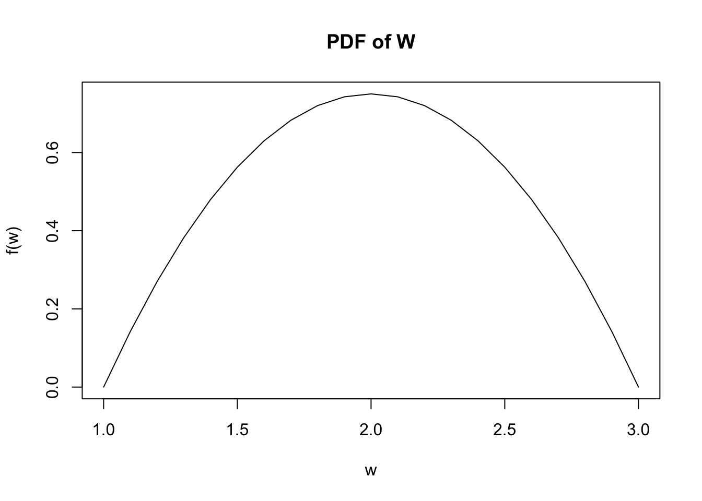
- The grocery store applies a special charge to any produce over 2 pounds. What is the probability that the next produce item weighed at this scale will be eligible for this charge?
- A customer places 1.75 pounds of produce on the scale. What is the probability that the scale will return a weight within 0.05 pounds of the item's true weight? Give your answer to four decimal places.
- The manager of an emergency services provider is trying to model the time it takes for first responders to arrive at medical emergencies. The manager wants to model the response time, in minutes, using the random variable \(Y\) with the PDF given below. Use the PDF to answer the following questions. \[ \begin{equation} f(y) = \left\{\begin{array}{lr} \frac{k}{3}, & 0 \le y \le 5\\ 0, & otherwise \end{array}\right. \end{equation} \]
- What value of \(k\) makes \(f(y)\) a valid probability density function? Round your answer to one decimal place.
- Find the probability that it takes less than 2 minutes for emergency responders to arrive. Round your answer to one decimal place.
- Find the probability that it takes first responders between 3.5 and 4.5 minutes to arrive at a medical emergency. Round your answer to one decimal place.
- An epidemiologist is trying to model the percentage of the population that is sick with the flu during the summer (May through September). The epidemiologist knows that there is always at least one person in the population that is sick with the flu during the summer, and that the percentage of the population sick with the flu never exceeds 3\(\%\). Let \(X\) be the random variable that represents the percentage of the population that is sick with the flu during the summer. The PDF of \(X\) is below. \[ \begin{equation} f(x) = \left\{\begin{array}{lr} \frac{1}{44.1}(x-2)^2(x+3)^2, & 0 \le x \le 3\\ 0, & otherwise \end{array}\right. \end{equation} \]
- Derive the cumulative distribution function, \(F_X(x)\), for \(X\).
\[ \begin{equation} F_X(x) = \left\{\begin{array}{lr} 0, & x<0\\ \frac{1}{44.1}(\frac{x^5}{5}+\frac{x^4}{2}-\frac{11x^3}{3}-6x^2+36x), & 0 \le x \le 3\\ 1, & x>3 \end{array}\right. \end{equation} \]
- What is the probability that the percentage of the population infected with the flu during the summer is less than 2? Round your answer to four decimal places.
- What is the probability that the percentage of the population infected with the flu during the summer is greater than 0.5? Round your answer to four decimal places.
- A statistician working for a minor league baseball team in El Paso, Texas, wants to model the time, in seconds, that it takes for the team's second baseman to throw the ball to first base. Let the random variable \(S\) represent the second baseman's delivery time. \(S\) has the following pdf: \[ \begin{equation} f(s) = \left\{\begin{array}{lr} -\frac{3}{4}(1-s^2), & 1 \le s \le 2\\ 0, & otherwise \end{array}\right. \end{equation} \]
- Derive the CDF for \(S\).
\[ \begin{equation} F_S(s) = \left\{\begin{array}{lr} 0, & s<1 \\ \frac{s^3-3s+2}{4},& 1 \le s \le 2\\ 1, & s>2 \end{array}\right. \end{equation} \]
- Graph the CDF of \(S\).
#Define support of S
s <- seq(1,2,0.05)
#Define CDF
cdf <- (s**3 - 3*s +2)/4
#Plot CDF
plot(s,
cdf,
type="l", #Produces a line graph
ylab="F(s)",
main="CDF of S")
- What is the median of \(S\), \(\tilde{\mu}\)? Round your answer to four decimal places.
- Is the distribution of \(S\) symmetric?
- What is the probability that, on the next play, the second baseman takes less than 1.3 seconds to throw the ball to first base? Give your answer to four decimal places.
- The northern red snapper is a species of fish that lives in the Gulf of Mexico. A marine biologist in Florida wants to know the depth at which the northern red snapper typically swims. After a thorough literature review, the marine biologist decided to use the random variable \(X\) to model the depth, in meters, at which northern red snapper fish swim. This model assumes that northern red snapper fish do not swim at depths of more than 2 meters below the surface.
\[ \begin{equation} F_X(x) = \left\{\begin{array}{lr} 0, & x<0 \\ \frac{x^4}{16},& 0 \le x \le 2\\ 1, & x>2 \end{array}\right. \end{equation}\]
- Find the PDF of \(X\), \(f_X(x)\)
\[ \begin{equation} f(x) = \left\{\begin{array}{lr} \frac{x^3}{4},& 0 \le x \le 2\\ 0, & otherwise \end{array}\right. \end{equation} \]
- Using the CDF given above, find the probability that \(X\) lies between 0.25 and 0.75. Round your answer to four decimal places.
- How far below the surface would you expect a random northern red snapper fish to swim (\(E(X)\))?
- What is the expected value of \(X^2\)? Round your answer to four decimal places.
- What is the variance and standard deviation of the depth at which northern red snapper fish swim?
- \(\sigma_X^2=\)
- \(\sigma_X=\)
\(Var(X)=E(X^2)-E(X)^2\\\) \(Var(X)=2.6667-1.6^2\\\) \(Var(X)=0.1067\\\)
- In a busy office building, elevators are the primary means of vertical transportation. The probability density function for the time people spend waiting for an elevator in seconds, \(Z\), follows the piecewise uniform distribution seen below. Use
Rto answer the following questions. \[ \begin{equation} f_Z(z) = \left\{\begin{array}{lr} 0.2, & 0 \le z \le 3 \\ \frac{0.2}{2},& 3 < z \le 6\\ \frac{0.2}{10},& 6 < z \le 11\\ 0, & otherwise \end{array}\right. \end{equation} \]
- Let \(g_Z(z)= z*f(z)\). Define \(g_Z(z)\) as a function in
Rusing thefunctioncommand. \(g_Z(z)\) should be defined over three intervals as \(f_Z(z)\) is.
- Let \(g_Z(z)= z*f(z)\). Define \(g_Z(z)\) as a function in
- Use the
integratefunction to find the expected value of \(Z\). Round your answer to one decimal place.
- Use the
#Integrate g over its three intervals
#Integrate g over the first interval
int1=integrate(g1,
lower=0,
upper=3)
#Integrate g over the second interval
int2 = integrate(g2,
lower=3,
upper=6)
#Integrate g over the third interval
int3 = integrate(g3,
lower=6,
upper=11)
#Extract the integral values using $value
#Add the integrals to get the mean
mean = int1$value+
int2$value+
int3$value
mean## [1] 3.1- Let \(h_Z(z)=z^2*f(z)\). Define \(h_Z(z)\) as a function in
Rusing thefunctioncommand. \(h_Z(z)\) should be defined over three intervals as \(f_Z(z)\) is.
- Let \(h_Z(z)=z^2*f(z)\). Define \(h_Z(z)\) as a function in
- Use the
integratefunction to find the expected value of \(Z^2\). Round your answer to four decimal places.
- Use the
#Integrate h over its three intervals
#Integrate h over the first interval
int1=integrate(h1,
lower=0,
upper=3)
#Integrate h over the second interval
int2 = integrate(h2,
lower=3,
upper=6)
#Integrate h over the third interval
int3 = integrate(h3,
lower=6,
upper=11)
#Extract the integral values using $value
#Add the integrals to get the mean
meanz2 = int1$value+
int2$value+
int3$value
meanz2## [1] 15.53333- Use the values you found in part d. and part b. to find the variance and standard deviation of \(Z\). Give your answer to four decimal places.
- \(\sigma_Z^2=\)
- \(\sigma_Z=\)
- A team of civil engineers in Dallas, Texas, is tasked with redesigning the traffic lights at a busy downtown intersection. In preparation for the redesign, the engineers decided to study the operation of traffic lights across the city. Let \(X\) represent the number of minutes that a typical traffic light in Dallas stays red before turning green. Use the CDF of \(X\), \(F_X(x)\), to answer the questions below.
\[ \begin{equation} F_X(x) = \left\{\begin{array}{lr} 0, & x < 0 \\ \frac{x^3}{125},& 0 \le x \le 5\\ 1, & x>5 \end{array}\right. \end{equation} \]
- What is the median number of minutes that a typical traffic light in Dallas is red before turning green? Round your answer to four decimal places.
- \(\tilde{\mu}=\)
The median of \(X\), \(\tilde{\mu}\), is the value of \(x\) at which \(F_X(x)=0.5\).
\(0.5= \frac{x^3}{125}\\\) \((125*0.5)^{\frac{1}{3}}=x\\\) \(3.9685=x\\\)
The value of \(x\) for which \(F_X(x)=0.5\) is \(3.9685\). Therefore, \(\tilde{\mu}=3.9685\).
- Answer the following questions to solve for the interquartile range of \(X\). Round your answers to four decimal places when possible.
- What is the first quartile of \(X\), \(Q(0.25)\)?
- What is the third quartile of \(X\), \(Q(0.75)\)?
- What is the IQR, \(Q(0.75)-Q(0.25)\)?
- Calculate the number of minutes that a random driver in Dallas should expect their traffic light to stay red. Give your answer to two decimal places.
- Calculate the number of minutes that a random driver in Dallas should expect their traffic light to stay red. Give your answer to two decimal places.
Start with the definition of \(E(X)\) \(E(X)=\int x*f_X(x) dx\\\)
To find the PDF of \(X\), take the derivative of the CDF, \(F_X(x)\).
\(f_X(x)=F_X^{\prime}=\frac{3x^2}{125}\\\)
Now, use the PDF to solve for \(E(X)\).
\(E(X)=\int_{0}^{5} x*f_X(x) dx\\\) \(E(X)=\int_{0}^{5} \frac{3x^3}{125} dx\\\) \(E(X)=\frac{3x^4}{125*4}|_{0}^{5} \\\) \(E(X)=3.75\)
- Calculate \(\sigma_x^2\) and \(\sigma_x\). Round your answer to four decimal places.
- \(\sigma_x^2 =\)
- \(\sigma_x =\)
- A windshield manufacturer is studying the distribution of raindrops that fall on a special water-resistant windshield. The manager believes that the number of raindrops on the surface of the special windshield, \(R\), follows a uniform distribution on the interval (30, 200).
- What is the mean number of raindrops on the surface of the special windshield?
- What is the variance and standard deviation of the number of raindrops on the surface of the special windshield? Round your answers to four decimal places.
- \(\sigma_R^2=\)
- \(\sigma_R=\)
Start with the definition of the variance of \(R\).
\(Var(R)=E(R^2)-E(R)^2\)
From part a., it is known that \(E(R)=115\).
Solve for \(E(R^2)\): \(E(R^2)=\int r^2*f_R(r) dr\\\) \(E(R^2)=\int_{30}^{200} \frac{r^2}{200-30} dr\\\) \(E(R^2)=\frac{r^3}{3*170}|_{30}^{200} \\\) \(E(R^2)=15633.3333\)
Now, solve for \(Var(R)\).
\(Var(R)=E(R^2)-E(R)^2\\\) \(Var(R)=15633.3333-115^2\\\) \(Var(R)=2408.3333\\\) \(\sigma_R=\sqrt{2408.3333}=49.0748\)
- What is the cdf of \(R\)?
\[ \begin{equation} F_R(r) = \left\{\begin{array}{lr} 0, & r<30 \\ \frac{r-30}{200-30},& 30 \le r \le 200\\ 1, & r>200 \end{array}\right. \end{equation} \]
- What is the probability that the observed number of raindrops on the special windshield is within 1 standard deviation of the mean? Round your answer to four decimal places.
- A sugar producer supplies sugar to multiple packaged food producers. The amount of sugar that the producer sells to food producers in a given week, in 100s of gallons, is modeled by the random variable \(Y\). The pdf of \(Y\) is:
\[ \begin{equation} f(y) = \left\{\begin{array}{lr} 3(0.5-\frac{1}{y^2}),& 2 \le y \le 3\\ 0, & otherwise \end{array}\right. \end{equation} \]
- What is the CDF of \(Y\)?
\[ \begin{equation} F_Y(y) = \left\{\begin{array}{lr} 0, & y<2 \\ 3(0.5y + \frac{1}{y}-1.5),& 2 \le y \le 3\\ 1, & y>3 \end{array}\right. \end{equation} \]
- Now we are going to use the
integratefunction inRto compute \(E(Y)\) and \(Var(Y)\). First, enter \(f_Y(y)\), \(y*f_Y(y)\), and \(y^2*f_Y(y)\) as functions inRusing thefunctioncommand.
- Now we are going to use the
- Compute the expected value of \(Y\) by integrating \(y*f_Y(y)\) from \(y=2\) to \(y=3\) in
R. Round your answer to four decimal places.
- Compute the expected value of \(Y\) by integrating \(y*f_Y(y)\) from \(y=2\) to \(y=3\) in
- Compute the expected value of \(Y^2\) by integrating \(y^2*f_Y(y)\) from \(y=2\) to \(y=3\) in
R. Round your answer to one decimal place.
- Compute the expected value of \(Y^2\) by integrating \(y^2*f_Y(y)\) from \(y=2\) to \(y=3\) in
- Report the variance and standard deviation of \(Y\). Round your answers to four decimal places.
- \(\sigma^2_Y=\)
- \(\sigma_Y=\)
- Suppose you are studying the concentration of a specific pollutant in a river. Let the continuous random variable \(Y\) represent the concentration of pollutant in the river. Prior research suggests the \(Y\) is normally distributed with \(\mu=10\) and \(\sigma^2=4\).
- Let \(Z\) be a random variable that is normally distributed with \(\mu=0\) and \(\sigma^2=1\) (i.e., the standard normal distribution). What value of \(Z\) corresponds to the value \(Y=13.8\)? Round your answer to one decimal place.
To find the z-score for \(Y=13.8\), you must subtract the mean then divide by the standard deviation. Note that \(\sigma = \sqrt{\sigma^2} = \sqrt{4} = 2\).
z-score\(=\frac{13.8-10}{2}\\\)
z-score=\(1.9\)
- Use the
pnormfunction inRand the z-score you calculated in part a. to find the probability that a random sample from the river will have a pollutant concentration greater than 13.8. Round your answer to four decimal places.
- Use the
- What is the 13th percentile of the standard normal distribution? Use the
qnormfunction inRand round your answer to four decimal places
- \(z_{0.13}=\)
- Use \(z_{0.13}\) to calculate the 13th percentile of pollutant concentration.
- What is the 13th percentile of the standard normal distribution? Use the
## [1] -1.126391The 13th percentile of \(Z\), rounded to four decimal places, is -1.1264.
Convert this value to \(Y\) by multiplying by the standard deviation of \(Y\) and then adding the mean.
The 13th percentile of \(Y\) is \((-1.1264*2)+10=7.7472\).
- Use the
pnormfunction in R to find the probability that the concentration of pollutant in a random sample of river water is between 7 and 8. Give your answer to four decimal places.
- Use the
- The pitch speed for Major League Baseball pitchers is normally distributed with \(\mu=93\) and \(\sigma=2.3\). Use the
qnormandpnormfunctions inRas needed.
- What is the median Major League Baseball pitch speed?
- What is the 25th percentile of Major League Baseball pitch speeds? Round your answer to four decimal places.
- What value of \(d\) will make it such that the interval (93-\(d\), 93+\(d\)) includes 95% of all pitch speeds? Assume that \(z_{0.025}=-1.96\) and round your answer to three decimal places.
- What value of \(d\) will make it such that the interval (93-\(d\), 93+\(d\)) includes 95% of all pitch speeds? Assume that \(z_{0.025}=-1.96\) and round your answer to three decimal places.
\(P(93-d<Y<93+d)=0.95\\\) \(P(\frac{93-d-93}{2.3}<Z<\frac{93+d-93}{2.3})=0.95\\\)
Use symmetry to get the following result: \(1-2P(Z>\frac{d}{2.3})=0.95\\\) \(-2P(Z>\frac{d}{2.3})=-0.05\\\) \(P(Z>\frac{d}{2.3})=0.025\\\)
Know that \(z_{0.025}=-1.96\), so \(z_{0.975}=1.96\).
\(1.96=\frac{d}{2.3}\\\) \(d=4.508\)
- Using the value for \(d\) you found above, find the interval that includes 95% of all pitch speeds (that is, substitute the value for d into the interval). Round your answers to three decimal places.
Lower bound:
Upper bound:
- Using the value for \(d\) you found above, find the interval that includes 95% of all pitch speeds (that is, substitute the value for d into the interval). Round your answers to three decimal places.
- Server processing time is the time (in hours) it takes for a computer server to process a task. The processing time for a server at Texas A&M University can be modeled with an exponential distribution with a rate parameter (\(\lambda\)) of 0.1. Let \(P\) be the random variable that represents this server's processing time. Use the PDF of \(P\) to answer the following questions. Round your answer to four decimal places.
\[ \begin{equation} f(p) = \left\{\begin{array}{lr} 0.1e^{-0.1p}, & p \ge 0 \\ 0, & otherwise \end{array}\right. \end{equation} \]
- Derive the CDF of \(P\).
\[ \begin{equation} F_P(p) = \left\{\begin{array}{lr} 0, & p<0 \\ 1-e^{-0.1p}, & p \ge 0 \\ \end{array}\right. \end{equation} \]
- Calculate the median of the distribution. That is, the value of \(p\) such that \(F(p)\) = 0.5.
- What is the probability that it takes the server more than 9 hours to process the next task?
- Report the mean, variance, and standard deviation of \(P\).
- \(\mu_P=\)
- \(\sigma_P^2=\)
- \(\sigma_P=\)
- A light bulb manufacturer has asked you to analyze data on the lifespan of its bulbs. After analyzing a simple random sample of 1000 bulbs from the production line, you estimate that the average lifespan of their light bulbs is 2,000 hours. Suppose that the lifespan of the manufacturer's light bulbs follows an exponential distribution. Use
pexpandqexpinRto answer the following questions. Round your answers to four decimal places when possible.
- You randomly select a new light bulb off of the production line. What is the probability that the light bulb will last for more than 500 hours? Give your answer to four decimal places.
#The average lifespan is 2000 hours
#The rate of the exponential distribution
#is 1/mean
#Therefore, λ=1/2000
1-pexp(q=500,
rate=1/2000)## [1] 0.7788008- What is the standard deviation of the lifespan of the manufacturer's light bulbs?
The mean and standard deviation of a random variable with an exponential distribution are equal.
- Suppose you find a light bulb that has burned for 1200 hours. What is the probability that the light bulb will burn an additional 600 hours?
The exponential distribution's memoryless property makes it such that \(P(X>a+b|X>b)=P(X>a)\).
Therefore, to solve this problem we only need to find the probability that the light bulb will burn for more than 600 hours.
## [1] 0.7408182- Suppose you find a light bulb that has burned for 1200 hours. How much longer is the bulb expected to last? That is, what is the expected value of the remaining time that the light bulb will burn?
The exponential distribution's memoryless property makes it such that the distribution of remaining time is the same as the original distribution.
Therefore, the expected value of remaining time is 2000 hours.
- A golf ball manufacturing company produces one type of golf ball, but markets them in three different ways depending on their performance during testing. The golf balls have a carrying distance (i.e., how long the balls travel in the air) that is normally distributed with \(\mu=225\) and \(\sigma=12\). The company tests each ball to see if it should be marketed as a premium ball, an average ball, or a budget ball. The premium golf balls must have a carrying distance of at least 240 yards during testing. If a golf ball's carrying distance during testing is less than 215 yards, it is marketed as a budget ball. If a golf ball's carrying distance during testing is between 215 and 240 yards, the golf ball is marketed as an average ball. Round your answers to four decimal places when possible. Use the
pnormandqnormfunctions inRas needed.
- What is the probability that a golf ball randomly selected from the production line will be sold as a premium ball?
- What is the probability that a golf ball randomly selected from the production line will be sold as a budget brand golf ball?
- What is the probability that a golf ball randomly selected from the production line will be sold as an average ball?
- In
R, set your seed to 123. Then, use thernormfunction to simulate a batch of 1000 golf balls from the manufacturer's production line. Report the proportion of 1000 simulated golf balls that would be marketed as premium, average, and budget balls. These results should be close, but not exactly equal, to the theoretical results you provided in parts a. through c.
- Proportion marketed as premium balls:
- Proportion marketed as average balls:
- Proportion marketed as budget balls:
- In
- The Brazos Valley Bombers are a baseball team located in Bryan-College Station, Texas. Let \(X\) represent the number of bases the team steals in their next game. Let \(Y\) represents the number of home runs the team hits in their next game. Use the joint PMF of \(X\) and \(Y\) below to answer the following questions.
| (Y,X) | 1 | 2 | 3 |
|---|---|---|---|
| 1 | 0.17 | 0.02 | 0.02 |
| 2 | 0.20 | 0.27 | 0.04 |
| 3 | 0.09 | 0.13 | 0.06 |
- Is \(p(x,y)\) a valid joint probability mass function?
- Calculate the probabilities below.
\(P(X=2, Y=3)=\)
\(P(X\ge2, Y>2)=\)
\(P(X > 1 \cup Y > 2)=\)
\(P(X>1, Y>1)=\)
- What is the marginal PMF of \(X\), \(P_X(x)\)?
\[ \begin{equation} P(X=x) = \left\{\begin{array}{lr} 0.46 ,& x=1 \\ 0.42 ,& x=2 \\ 0.12 ,& x=3 \\ 0, & otherwise \end{array}\right. \end{equation} \]
- What is the marginal PMF of \(Y\), \(P_Y(y)\)?
\[ \begin{equation} P(Y=y) = \left\{\begin{array}{lr} 0.21 ,& y=1 \\ 0.51 ,& y=2 \\ 0.28 ,& y=3 \\ 0, & otherwise \end{array}\right. \end{equation} \]
- A retail store has a staff of 4 sales associates and 3 cashiers who work on rotating shifts. The store requires 3 sales associates and 2 cashiers to be properly staffed. The joint probability function for the number of sales associates (\(X\)) and cashiers (\(Y\)) that show up on any given day is given below. Use \(p(x,y)\) to answer the following questions.
| (Y,X) | 1 | 2 | 3 | 4 |
|---|---|---|---|---|
| 1 | 0.02 | 0.15 | 0.05 | 0.01 |
| 2 | 0.22 | 0.08 | 0.03 | 0.09 |
| 3 | 0.12 | Z | 0.02 | 0.12 |
- What value of \(Z\) makes \(p(x,y)\) a valid probability mass function?
\(Z=1-(0.02+0.15+0.05+0.01+.22+.08+.03+.09+.12+.02+.12)\\\) \(Z=0.09\)
- What is the probability that at least two sales associates and at least two cashiers show up on a given day?
\(P(X \ge 2, Y \ge 2)\\\) \(=[P(X=2,Y=2)+P(X=3,Y=2)+P(X=4,Y=2)\\\) \(+P(X=2,Y=3)+P(X=3,Y=3)+P(X=4,Y=3)]\\\) \(=0.08+0.03+0.09+0.09+0.02+0.12\\\) \(=0.43\)
Therefore, \(P(X \ge 2, Y \ge 2)=0.43\)
- What is the probability that more sales associates show up to work than cashiers?
\(P(X>Y)\\\) \(=P(X=2,Y=1)+P(X=3,Y=1)+P(X=3,Y=2)\\+P(X=4,Y=1)+P(X=4,Y=2)+P(X=4,Y=3)\\\) \(=.15+.03+.05+.12+.09+.01\\\) \(=0.45\\\)
Therefore, \(P(X>Y)=0.45\)
- What is the probability that more than two workers total will show up to work?
- What is the total number of workers that the retail store manager should expect to show up tomorrow?
\(E(g(X,Y))=\sum_{x} \sum_{y} g(x,y)*p(x,y)\)
We want to know the expected number of workers that will show up to work tomorrow. The total number of workers that show up to work is \(X+Y\). So \(g(X,Y)=X+Y\).
\(E(X+Y)= \sum_{x} \sum_{y} (x+y)*p(x,y)\\\) \(E(X+Y)= 2(.02)+3(.15+.22)+4(.08+.12+.05)+5(.09+.03+.01)\\+6(.09+.02)+7(.12)\\\) \(E(X+Y)= 4.3\\\)
- Find the following probabilities, then decide whether \(X\) and \(Y\) are independent.
What is the probability that three cashiers show up to work on a given day?
What is the probability that only one sales associate shows up on a given day?
What is the probability that exactly one sales associate and three cashiers show up to work on a given day?
From the probabilities found in parts f., g., and h., are \(X\) and \(Y\) independent?
If \(X\) and \(Y\) are independent, then \(P(x,y)=P_X(x)*P_Y(y)\) for all pairs of \(x\) and \(y\).
\(P(Y=3)=0.35\).
\(P(X=1)=0.36\).
\(P(X=1)*P(Y=3)=0.35*0.36=0.126\)
\(P(X=1,Y=3)=0.12\).
\(P(X=1,Y=3) \neq P(X=1)*P(Y=3)\)
Therefore, \(X\) and \(Y\) are not independent.
- An economist in El Paso, Texas, is looking to forecast two economic indicators for the next business year. The first indicator, \(X\), is the growth rate of GDP. The second indicator, \(Y\), is the unemployment rate. The economist wants to study the joint probability mass function of these indicators, shown below. \(X\) and \(Y\) are both discrete random variables.
(Y,X) -2% -1% 0% 1% 2% 2% 0.02 0.13 0.05 0.01 0.03 3% 0.08 0.08 0.03 0.02 0.05 4% 0.06 0.09 0.01 0.02 0.04 5% 0.07 0.03 0.02 0.10 0.06
- What is the marginal PMF of X and Y?
\[ \begin{equation} P(X=x) = \left\{\begin{array}{lr} 0.23 ,& x=-2 \\ 0.33 ,& x=-1 \\ 0.11 ,& x=0 \\ 0.15 ,& x=1 \\ 0.18 ,& x=2 \\ 0, & otherwise \end{array}\right. \end{equation} \]
\[ \begin{equation} P(Y=y) = \left\{\begin{array}{lr} 0.24 ,& y=2 \\ 0.26 ,& y=3 \\ 0.22 ,& y=4 \\ 0.28 ,& y=5 \\ 0, & otherwise \end{array}\right. \end{equation} \]
- What is the probability that the economy will enter into a recession next year (classified as unemployment greater than 3% and negative GDP growth)?
- Give that the economy grows at a rate of -2% next year, what is the probability that the unemployment rate is less than or equal to 3%?
This is a conditional probability, so divide the joint probability by the marginal probability of the conditioning event.
\(P(Y \le 3 | X=-2)=\frac{P(X=-2, Y \le 3)}{P(X=-2)}\\\) \(=\frac{0.10}{0.23}\\\) \(=0.4348\)
- What is the probability that the growth rate of GDP is 1 percentage point less than the unemployment rate next year?
The probability that the growth rate of GDP is 1 percentage point less than the unemployment rate year is:
\(P(Y-X=1)\\\) \(=P(Y=2,X=1)+P(Y=3,X=2)\\\) \(=0.01+0.05\\\) \(=0.06\)
- Consider a fast-food restaurant chain that operates physical locations (dine-in and drive-thru) and a mobile app for online orders. Let \(Z\) be the random variable representing the quarterly performance of their physical locations, and \(D\) be the random variable representing the quarterly performance of their online app. The possible values of \(Z\) and \(D\) are as follows:
- 1: Number of orders is below market expectations.
- 2: Number of orders meets market expectations.
- 3: Number of orders surpasses market expectations.
| (D,Z) | 1 | 2 | 3 |
|---|---|---|---|
| 1 | 0.05 | 0.17 | 0.06 |
| 2 | 0.07 | 0.33 | 0.10 |
| 3 | 0.04 | 0.06 | 0.12 |
- What is the marginal PMF of \(Z\), \(p_Z(z)\):
\[ \begin{equation} P(Z=z) = \left\{\begin{array}{lr} 0.16 ,& z=1 \\ 0.56 ,& z=2 \\ 0.28 ,& z=3 \\ 0, & otherwise \end{array}\right. \end{equation} \]
- What is the marginal PMF of \(D\), \(p_D(d)\):
\[ \begin{equation} P(D=d) = \left\{\begin{array}{lr} 0.28 ,& d=1 \\ 0.50 ,& d=2 \\ 0.22 ,& d=3 \\ 0, & otherwise \end{array}\right. \end{equation} \]
- Compute the conditional PMF of \(Z\), \(p_{Z|D=d}(z)\) for \(d = 1, 2, 3\).
\[ \begin{equation} p_{Z|D=d}(z) = \left\{\begin{array}{lr} p_{Z|D=1}(1) = \frac{0.05}{0.28} = 0.1786 \\ p_{Z|D=2}(1) = \frac{0.07}{0.50} = 0.14 \\ p_{Z|D=3}(1) = \frac{0.04}{0.22} = 0.1818 \\ \\ p_{Z|D=1}(2) = \frac{0.17}{0.28} = 0.6071 \\ p_{Z|D=2}(2) = \frac{0.33}{0.50} = 0.66 \\ p_{Z|D=3}(2) = \frac{0.06}{0.22} = 0.2727 \\ \\ p_{Z|D=1}(3) = \frac{0.06}{0.28} = 0.2143 \\ p_{Z|D=2}(3) = \frac{0.10}{0.50} = 0.2 \\ p_{Z|D=3}(3) = \frac{0.12}{0.22} = 0.5454 \\ \\ 0, & otherwise \end{array}\right. \end{equation} \]
- Compute the conditional PMF of \(D\), \(p_{D|Z=z}(d)\) for \(z = 1, 2, 3\).
\[ \begin{equation} p_{D|Z=z}(d) = \left\{\begin{array}{lr} p_{D|Z=1}(1) = \frac{0.05}{0.16} = 0.3125 \\ p_{D|Z=2}(1) = \frac{0.17}{0.56} = 0.3036 \\ p_{D|Z=3}(1) = \frac{0.06}{0.28} = 0.2143 \\ \\ p_{D|Z=1}(2) = \frac{0.07}{0.16} = 0.4375 \\ p_{D|Z=2}(2) = \frac{0.33}{0.56} = 0.5893 \\ p_{D|Z=3}(2) = \frac{0.10}{0.28} = 0.3571 \\ \\ p_{D|Z=1}(3) = \frac{0.04}{0.16} = 0.25 \\ p_{D|Z=2}(3) = \frac{0.06}{0.56} = 0.1071 \\ p_{D|Z=3}(3) = \frac{0.12}{0.28} = 0.4286 \\ \\ 0, & otherwise \end{array}\right. \end{equation} \]
- Analyze the PMF and conditional PMF of \(Z\) and \(D\). Are \(Z\) and \(D\) independent?
- Compute the conditional expectation of \(Z\) given \(D = 1\). That is, \(E[Z | D =1]\). Round your answer to four decimal places
\(E[Z | D =1]=\sum_{z=1}^{3} z*p(z|D=1)\)
\(E[Z | D=1] = (1*0.1786)+(2*.6071)+(3*.2143)\)
\(E[Z | D=1] = 2.0357\)
- A college success council at a major university is looking at data related to college majors and academic success rates. Let \(X\) represent a student's choice of major and \(Y\) represent whether a student graduates on time.
\[ \begin{equation} X = \left\{\begin{array}{lr} 1 , & \text{student majors in engineering} \\ 2 ,& \text{student majors in business} \\ 3 ,& \text{student majors in the sciences} \\ 4, & \text{student majors in the humanitites}\\ \end{array}\right. \end{equation} \]
\[ \begin{equation} Y = \left\{\begin{array}{lr} 0 , & \text{student does not graduate on time} \\ 1 ,& \text{student graduates on time} \\ \end{array}\right. \end{equation} \]
The conditional PMF of \(X\) given \(Y=y\) is:
| P(X|Y=y), X | 1 | 2 | 3 | 4 |
|---|---|---|---|---|
| PX|Y=0(x) | 0.33 | 0.15 | 0.42 | 0.10 |
| PX|Y=1(x) | 0.20 | 0.34 | 0.17 | 0.29 |
| Y | 0 | 1 |
|---|---|---|
| P(y) | 0.22 | 0.78 |
- Calculate the following probabilities. Round your answers to four decimal places when possible.
- \(P(X=2, Y=0)=\)
- \(P(X=2)=\)
- \(P(X=4,Y=1)=\)
- \(P(X \le 2)=\)
- After analyzing the conditional PMF of \(X\) given \(Y=y\), are \(X\) and \(Y\) independent?
- Construct a table for the joint PMF of (\(X\), \(Y\)), \(f(x,y)\).
| P(X,Y) | 1 | 2 | 3 | 4 | P(Y) |
|---|---|---|---|---|---|
| 0 | 0.0726 | 0.0330 | 0.0924 | 0.0220 | 0.22 |
| 1 | 0.1560 | 0.2652 | 0.1326 | 0.2262 | 0.78 |
| P(X) | 0.2286 | 0.2982 | 0.2250 | 0.2482 | 1.00 |
- The manager of a video streaming service is interested in the amount of bandwidth required to stream videos at different resolutions. Let \(X\) represent the resolution of a video (measured in pixels) and \(Y\) represent the length of the video (in minutes). The following shows the joint PMF for \(Y\), \(X\):
The total bandwidth, \(Z\), is defined as \(Z = 1.14XY\)P(Y,X) 360p 480p 720p 1080p 5 min 0.02 0.12 0.11 0.10 10 min 0.12 0.04 0.16 0.04 30 min 0.09 0.07 0.02 0.11
- Find the expected value of \(X\) and \(Y\).
- \(E[X]=\)
- \(E[Y]=\) (round to two decimal places)
- Calculate the variance of \(X\) and \(Y\).
- \(Var(X)=\)
- \(Var(Y)=\) (round your answer to four decimal places)
- Calculate the covariance between \(X\) and \(Y\). That is, \(Cov(X,Y)\). Round your answer to two decimal places.
- \(Cov(X,Y)=\)
- Calculate the correlation between \(X\) and \(Y\). \(\rho_{X,Y}=\) \(*10^{-4}\)
\(\rho_{X,Y}=\frac{Cov(X,Y)}{\sigma_X*\sigma_Y}\)
\(\rho_{X,Y}=\frac{2.4}{\sqrt{73152}*\sqrt{108.3475}}\)
\(\rho_{X,Y}=8.5249*10^{-4}\)
- Consider the following three random variables. Assume the three variables are independent.
\(Y_1 \sim N(\mu=2, \sigma^2=6)\\\),
\(Y_2 \sim N(\mu=1, \sigma^2=2)\\\),
\(Y_3 \sim N(\mu=6, \sigma^2=12)\\\),
\(Z=2Y_1-Y_2+3Y_3\\\)
- Find \(E(Z)\)
\(E[Z] = E[2Y_1-Y_2+3Y_3]\)
The expected value of a sum is the sum of expected values.
\(E[Z] = 2*E[Y_1]-E[Y_2]+3E[Y_3]\\\) \(E[Z] = 2*2 -1 +3*6\\\) \(E[Z] = 4-1+18\\\) \(E[Z] = 21\)
- Find \(\sigma_Z^2\)
\(Var(Z) = Var(2Y_1-Y_2+3Y_3)\\\)
When variables are independent, the variance of the sum is the sum of the variances, except that constants are squared.
\(Var(Z) = 4*Var(Y_1)+Var(Y_2)+9*Var(Y_3)\\\) \(Var(Z) = 4*6+2+9*12\\\) \(Var(Z) = 134\)
- A weather station in Bryan, Texas, houses a thermometer--used for measuring air temperature--and a hygrometer--used for measuring the humidity of air. The thermometer can only capture temperatures between 30 and 100 degrees Fahrenheit. The hygrometer can only capture humidity levels between 50 and 90 percent. Let \(X\) be the random variable that represents the temperature displayed on the thermometer at any given time. Let \(Y\) be the random variable that represents the humidity level displayed on the hygrometer at any given time. The joint probability density function, \(f(x,y)\), is below.
\[ f(x, y) = \begin{cases} d(x+y)& \text{if } 30 \leq x \leq 100,&50\le y \le 90 \\ 0 & \text{otherwise} \end{cases} \]
- Find the value of \(d\) that makes this a valid joint probability density function. Round your answer to four decimal places. \(*10^{-6}\)
For the joint PDF to be valid, the integral of \(f(x,y)\) over all values of \(X\) and \(Y\) should equal 1.
\(1=\int_{30}^{100} \int_{50}^{90} d(x+y) dy dx\)
\(1=d[\int_{30}^{100} \int_{50}^{90} (x+y) dy dx]\)
\(1=d[\int_{30}^{100} [xy+\frac{y^2}{2}]|_{50}^{90}] dx\)
\(1=d[\int_{30}^{100} 40x+2800 dx\)
\(1=d[20x^2+2800x |_{30}^{100}\)
\(1=d[20x^2+2800x |_{30}^{100}\)
\(1 = d[378000]\)
\(d=\frac{1}{378000} = 2.6455*10^{-6}\)
- What is the marginal PDF of \(X\)?
To get the marginal PDF of \(X\), integrate out all values of \(Y\).
\[ f(x) = \begin{cases} \frac{1}{378000}(40x+2800) & \text{if } 30 \leq x \leq 100 \\ 0 & \text{otherwise} \end{cases} \]
- What is the marginal pdf of \(Y\)?
To get the marginal PDF of \(Y\), integrate out all values of \(X\).
\[ f(y) = \begin{cases} \frac{1}{378000}(70y+4550) & \text{if } 50 \leq y \leq 90 \\ 0 & \text{otherwise} \end{cases} \]
- Use the joint PDF, \(f(x,y)\), to calculate the probability that \(X<70\) and \(Y<60\). Round your answer to four decimal places.
- \(P(X<70,Y<60)=\)
Start by integrating: \(\int_{30}^{70} \int_{50}^{60} \frac{1}{378000}(x+y) dy dx\)
- Use \(f_X(x)\) to calculate the probability that \(X<70\). Round your answer to four decimal places.
- \(P(X<70)=\)
- Use \(f_Y(y)\) to calculate the probability that \(Y<60\). Round your answer to four decimal places.
- \(P(Y<60)=\)
- A small factory in Dallas, Texas, produces two types of products. The factory can make between 0 and 4 pounds of product X per day. The factory can make between 0 and 2 pounds of product Y per day. Let \(X\) be the random variable that represents the amount of product X produced in a given day and \(Y\) be the random variable that represents the amount of product Y produced in a given day. Due to limitations on inventory storage, the production of product X and Y must satisfy \(\frac{1}{2}X + Y \le 2\).
\[ \begin{equation} f(x,y) = \left\{\begin{array}{lr} \frac{3}{8}xy, & \text{for } 0 \le x \le 4, 0 \le y \le 2, \frac{1}{2}x+y \le 2 \\ 0, & \text{otherwise} \end{array}\right. \end{equation} \]
- Graph the support of the joint PDF (i.e., the region over which the joint PDF is defined).
#Limits of x and y
xlim <- c(0, 4)
ylim <- c(0, 2)
#Create sequence of x values
x <- seq(0, 4, length.out = 100)
#Define the boundary
boundary= 2-0.5*x
# Plot the area
plot(NA,
xlim = xlim,
ylim = ylim,
xlab = "x",
ylab = "y",
main = "Support of the Joint PDF f(x, y)")
#Use polygon to shade in the support
polygon(c(0, x, 4),
c(0, boundary, 0),
col = "maroon",
border = NA,
density = 20)
#Add boundary
lines(x, boundary, col = "black")
# Add labels
title("Support of the Joint PDF f(x, y)")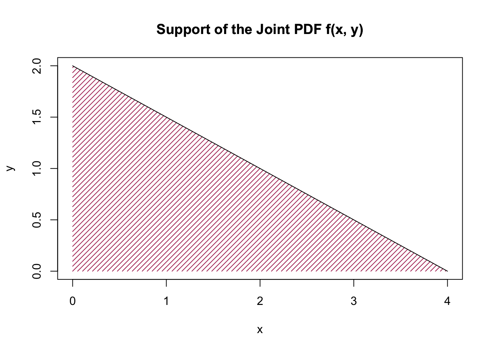
- Find the marginal distribution of \(X\), \(f_X(x)\)
\[ \begin{equation} f_X(x) = \left\{\begin{array}{lr} \frac{3x}{4}-\frac{3x^2}{8}+\frac{3x^3}{64}, & 0\le x \le 4. \end{array}\right. \end{equation} \]
- Find the marginal distribution of \(Y\), \(f_Y(y)\)
\[ \begin{equation} f_Y(y) = \left\{\begin{array}{lr} 3y-3y^2+\frac{3}{4}y^3, & 0\le y \le 2. \end{array}\right. \end{equation} \]
- What is the probability that less than one pound of product \(Y\) will be made? Round your answer to four decimal places.
- What is the probability that more than three pounds of product \(X\) will be made? Round your answer to four decimal places.
- Use \(f(x,y)\) to calculate the probability that more than 3 pounds of product \(X\) will be made and less than 1 pound of product \(Y\) will be made in a day.
\(\int_{3}^{4}\int_{0}^{2-\frac{x}{2}} [\frac{3}{8}xy] \text{ }dy dx\)
- Are \(X\) and \(Y\) independent?
- A corporation owns two hospitals. The head of operations at the corporation wants to model the emergency room wait times for both hospitals. Let \(X\) represent the emergency room wait time for hospital one and \(Y\) represent the emergency room wait time for hospital 2. Use the joint PDF of \(X\) and \(Y\), \(f(x,y)\), to answer the questions below.
\[ \begin{equation} f(x,y) = \left\{\begin{array}{lr} e^{-x-y}, & x \ge 0, y \ge 0 \\ 0, & \text{otherwise} \end{array}\right. \end{equation} \]
- Find the marginal distribution of \(X\), \(f_X(x)\).
\(f_X(x)=\int_{0}^{\infty} e^{-x-y}dy\)
\(f_X(x)=e^{-x}\int_{0}^{\infty} e^{-y}dy\)
\(f_X(x)=e^{-x}[-e^{-y}]|_{0}^{\infty}\)
\(f_X(x)=e^{-x}[0+1]\)
\(f_X(x)=e^{-x}\) for \(x \ge 0\)
- Compute the marginal distribution of \(Y\), \(f_Y(y)\).
\(f_Y(y)=\int_{0}^{\infty} e^{-x-y}dx\)
\(f_Y(y)=e^{-y}\int_{0}^{\infty} e^{-x}dx\)
\(f_Y(y)=e^{-y}[-e^{-x}]|_{0}^{\infty}\)
\(f_Y(y)=e^{-y}[0+1]\)
\(f_Y(y)=e^{-y}\) for \(y \ge 0\)
- Compute the conditional PDF of \(X\) given \(Y=y\). That is, \(f_{X|Y}(x|y)\).
\(f_{X|Y}(x|y)= \frac{f(x,y)}{f(y)}\)
\(f_{X|Y}(x|y)= \frac{e^{-x-y}}{e^{-y}}\)
\(f_{X|Y}(x|y)= e^{-x}\) for \(x \ge 0\)
- Compute the conditional PDF of \(Y\) given \(X=x\). That is, \(f_{Y|X}(y|x)\).
\(f_{Y|X}(y|x)= \frac{f(x,y)}{f(x)}\)
\(f_{Y|X}(y|x)= \frac{e^{-x-y}}{e^{-x}}\)
\(f_{Y|X}(y|x)= e^{-y}\) for \(y \ge 0\)
- Are the emergency room wait times at hospital 1 and hospital 2 independent?
- In the problem above (problem 10.) you used the joint PDF \(X\) and \(Y\) (shown below) to find the marginal distribution of ER wait times at both hospitals. You then saw that the ER wait time at hospital 1 is independent of the ER wait time at hospital 2. Now, you will use
Rto test your theoretical results.
\[ \begin{equation} f(x,y) = \left\{\begin{array}{lr} e^{-x-y} & x \ge 0, Y \ge 0 \end{array}\right. \end{equation} \]
- The marginal distributions of \(X\) and \(Y\) are exponential distributions with \(\lambda=1\). Use the
rexpfunction inRto simulate 1000 wait times for both hospitals. Make sure to set your seed to 123.
- The marginal distributions of \(X\) and \(Y\) are exponential distributions with \(\lambda=1\). Use the
- Report the correlation coefficient between the simulated wait times. Round your answer to four decimal places.
- \(\hat{\rho}_{X,Y}=\)
- Given that you found that \(X\) and \(Y\) are independent, what would you expect \(\hat{\rho}_{X,Y}\) to be?
## [1] 0.00629818- Use the wait times you simulated to calculate the following proportions.
- Report the proportion of wait times at hospital 1 that are less than .50 (half an hour).
- Report the proportion of wait times at hospital 2 that are less than .50 (half an hour).
- Report the proportion of times that both hospital 1 and hospital 2 had wait times less than .50 (half an hour).
## [1] 0.376## [1] 0.414#Proportion of times that both hospital 1
#and hospital 2
#had wait times that are less than 0.50 (half-hour)
sum(hospital1<.50 & hospital2<.50)/1000## [1] 0.162- A software startup has just completed the development of its new operating system. The operating system consists of 45 different segments of code. The runtime of each segment of code, \(R\), follows a continuous uniform distribution over the interval (0.25, 2.3). The segments have independent runtimes.
- A randomly selected segment of code is chosen for testing purposes. Find the expected value and variance of the runtime of this segment of code. Round your answers to four decimal places when possible.
- \(E[R]=\)
- \(\sigma_R^2=\)
- During the final stage of testing, the lead software engineer wants to run the entire operating system (all 45 segments) at once. What is the expected value and variance of the total runtime, \(T\), of the operating system? Round your answers to three decimal places when possible.
- \(E[T]=\);
- \(\sigma_T^2=\)
- During the final stage of testing, the lead software engineer wants to run the entire operating system (all 45 segments) at once. What is the expected value and variance of the total runtime, \(T\), of the operating system? Round your answers to three decimal places when possible.
\(E[T] = E[\sum_{i=1}^{45} R_i]\) \(E[T] = \sum_{i=1}^{45} E[R_i]\)
All \(R_i\)s are uniformly distributed over the interval (0.25, 2.3).
\(E[T] = \sum_{i=1}^{45} 1.275\\\) \(E[T] = 45*1.275\\\) \(E[T]=57.375\\\)
When random variables are independent, the variance of a sum is the sum of the variances, with constants squared.
\(Var(T)= Var(\sum_{i=1}^{45} R_i)\\\) \(Var(T) = \sum_{i=1}^{45} Var(R_i)\\\) \(Var(T) = \sum_{i=1}^{45} 0.3502 \\\) \(Var(T) = 45*0.3502\\\) \(Var(T) = 15.759\\\)
- A rival software development company created a similar operating system with 45 different segments. The 45 segments in the rival operating system have a runtime distribution of \(U_i \sim (0.25,2.3)\) for \(i=1,...,45\). This is the same distribution as the segments in the software startup's operating system. Let \(S\) be the random variable that represents the total runtime of the rival company's operating system. Find the expected value and the variance of the difference in total run time between the two rival operating systems, \(D=T-S\). Assume that \(T\) and \(S\) are not independent, and that the covariance between the two is 10.
- \(E[D]=\)
- \(\sigma_D^2=\) (round your answer to three decimal places)
Let T be the total operating system runtime for the startup, and C be the total operating system runtime for the competitor.
\(D\), the difference in total operating time between the two operating systems, is \(T-C\).
Both \(T\) and \(C\) have the same distributions. Therefore, they have the same mean and variance.
\(E[D] = E[T-C]\\\) \(E[D] = E[T]-E[C]\\\) \(E[D] = E[T]-E[C]\\\) \(E[D] = 57.375-57.375\\\) \(E[D] = 0\)
Next, find the variance.
\(Var(D)=Var(T-C)\\\) \(Var(D)=Var(T)+Var(C)-2Cov(T,C)\\\) \(Var(D)=15.759+15.759-2*10\\\) \(Var(D)=11.518\)
- Suppose that a food truck owner is deciding where to park around a stadium to maximize his/her profit. At a typical game, the number of people that eat at the food truck in lot 1, \(L_1\), follows a discrete uniform distribution over the interval (50, 250). The number of people that eat at the food truck in lot 2, \(L_2\), follows a poisson distribution with \(\lambda=132\). The amount of money that each customer spends in lot 1, \(P_1\), is normally distributed with a \(\mu=11\), \(\sigma=3\). The amount of money that each customer spends in lot 2, \(P_2\), is normally distributed with \(\mu=14\), \(\sigma=2\). Assume that the amount of money each customer spends is independent of the total number of customers.
- How much revenue should the owner expect to make if he parks in lot 1 next week?
The owner's revenue is equal to the number of customers times the amount that each customer spends.
Let \(R\) be the random variable that represents the owner's revenue.
For lot 1, the expected revenue is: \(E[R]=E[L_1 * P_1]\\\) By independence:
\(E[R]=E[L_1] * E[P_1]\\\) \(E[R]=150 * 11\\\) \(E[R]=1650\)
- How much revenue should the owner expect to make if he parks in lot 2 next week?
The owner's revenue is equal to the number of customers times the amount that each customer spends.
Let \(R\) be the random variable that represents the owner's revenue.
For lot 2, the expected revenue is: \(E[R]=E[L_2 * P_2]\\\) By independence:
\(E[R]=E[L_2] * E[P_2]\\\) \(E[R]=132* 14\\\) \(E[R]=1848\)
- Based on your expected value calculations, which spot should the owner choose?
- The owner of the food truck plans on parking in lot 1 for the first game and lot 2 for the second game. How much revenue should the owner expect to make over these two weeks?
Let \(R_3\) be the total revenue made over the two weeks, \(R_2\) be the revenue made in the second lot, and \(R_1\) be the revenue made in the first lot.
The expected value of the total revenue made is equal to the expected value of revenue made in the first week plus the expected value of revenue made in the second week. Since the owner parked in lot 1 in the first week and lot 2 in the second week, we have:
\(E[R_3]=E[R_1+R_2]\\\) \(E[R_3]=E[R_1]+E[R_2]\\\) \(E[R_3]=1650+1848\\\) \(E[R_3]=3498\)
- Let \(X\), \(Y\), and \(Z\) be independent random variables. \(X\) and \(Y\) follow the continuous uniform distribution over the interval (1,2) and \(Z\) follows a normal distribution with \(\mu=3\), \(\sigma_Z^2=3.2\). Let \(D\) be defined as \(D=X+Z\) and \(G\) be defined as \(G=3Y+Z\)
- Find the variance of \(D\). Round your answer to four decimal places. \(\sigma^2_D\)=
- Find the variance of \(G\). Round your answer to two decimal places. \(\sigma^2_G\) =
- Find the covariance of \(D\) and \(G\). \(Cov(D,G)=\)
\(Cov(D,G)=Cov(X+Z,3Y+Z)\\\) \(Cov(D,G)=3*Cov(X,Y)+Cov(X,Z)+3*Cov(Z,Y)+Cov(Z,Z)\)
X, Y, and Z are independent, so their covariances are 0. Furthermore, \(Cov(Z,Z)=Var(Z)\)
\(Cov(D,G)=Var(Z)\\\) \(Cov(D,G)=3.2\)
- Compute the correlation coefficient of \(D\) and \(G\). Round your answer to four decimal places.
- \(\rho_{D,G}=\)
\(\rho_{D,G}=\frac{Cov(D,G)}{\sigma_D * \sigma_G}\)
\(\rho_{D,G}=\frac{3.2}{\sqrt{3.2833} * \sqrt{3.95}}\)
\(\rho_{D,G}=0.8886\)
- Find Var(\(D + G\)). Give your answer to four decimal places.
\(Var(aX+bY)=Var(X)+Var(Y)+2abCov(X,Y)\)
- Find Var(\(D\)-\(G\)). Give your answer to four decimal places.
- A little league baseball team had a season consisting of six games. The first three games were played on their home field, and the last three games were played at their opponents' fields. Let \(W_1, W_2, W_3\) be the number of runs that the team scored during each of the first three games, and let \(E_1, E_2, E_3\) be the number of runs that the team scored during each of the last three games. The variance of each \(W_i\) is \(\sigma_W^2=4\), the variance of each \(E_i\) is \(\sigma_E^2=2\). The \(W_i\)s are independent, the \(E_i\)s are independent, \(Cov(W_i,E_i)=6\) for \(i=1,2,3\), and \(Cov(W_i,E_i)=0\) for all \(i \neq j\).
- Let \(\bar{W}= \frac{1}{n} \sum_{i=1}^{n} w_i\). What is the variance of \(\bar{W}\)? Round your answer to four decimal places.
\(Var(\bar{W})=Var(\frac{1}{n} \sum_{i=1}^{n} w_i)\)
\(Var(\bar{W})= \frac{1}{n^2} \sum_{i=1}^{n} var(w_i)\)
\(Var(\bar{W})= \frac{n*4}{n^2}\)
\(n=3\)
Therefore, \(Var(\bar{W})= \frac{4}{3}=1.3333\)
- Let \(\bar{E}= \frac{1}{n} \sum_{i=1}^{n} e_i\) (i.e., the sample average). What is the variance of \(\bar{E}\)? Round your answer to four decimal places.
- Use the definition of \(\bar{W}\) and \(\bar{E}\) to find \(Cov(\bar{E}, \bar{W})\).
\(Cov(\bar{E}, \bar{W})\\\) \(=Cov(\frac{1}{n}\sum_{i=1}^{n}W_i, \frac{1}{n}\sum_{i=1}^{n}E_i)\\\)
Use the properties of covariance and remember that \(Cov(W_i,E_i)=6\) for \(i=1,2,3\), and \(Cov(W_i,E_i)=0\) for all \(i \neq j\).
\(Cov(\bar{E},\bar{W})=\frac{1}{n^2}Cov(W_1,E_1)+\frac{1}{n^2}Cov(W_2,E_2)+\frac{1}{n^2}Cov(W_3,E_3)\\\)
\(=\frac{18}{9}\)
Therefore, \(Cov(\bar{E}, \bar{W})=2\)
- Using your answers to parts a. through c., find Var\((\bar{E} + \bar{W})\). Round your answer to the nearest whole number.
- Below are plots of pairs of random variables. Match each plot with the correlation between the random variables.
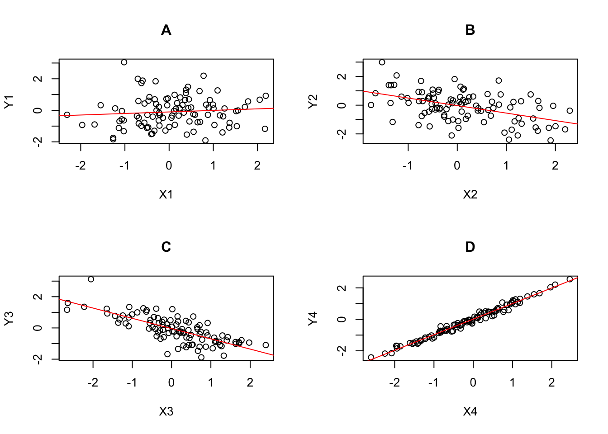
- The correlation between \(X_1\) and \(Y_1\) in plot A is:
- The correlation between \(X_2\) and \(Y_2\) in plot B is:
- The correlation between \(X_3\) and \(Y_3\) in plot C is:
- The correlation between \(X_4\) and \(Y_4\) in plot D is:
- An advertising manager is trying to measure the relationship between monthly advertising spending and monthly revenue. The manager decides to take a sample consisting of spending and revenue from the past year. Monthly advertising spending (in thousands of dollars), \(A\), and monthly revenue (in thousands of dollars), \(B\), for the last year are shown below. Use these values, along with
R, to answer the following questions. Round your answers to four decimal places when possible.A B 67 82 56 72 23 56 82 76 92 82 13 43 23 65 89 100 46 45 19 33 23 24 49 67
- Use the
varfunction inRto compute the sample variance of \(A\), \(S_A^2\).
- Use the
#Define A
A = c(67,
56,
23,
82,
92,
13,
23,
89,
46,
19,
23,
49)
#Compute sample variance of A
vara = var(A)
vara## [1] 831- Use the
varfunction inRto compute the sample variance of \(B\), \(S_B^2\).
- Use the
#Define B
B = c(82,
72,
56,
76,
82,
43,
65,
100,
45,
33,
24,
67)
#Compute sample variance of B
varb = var(B)
varb## [1] 504.0833- Use the
covfunction inRto compute the sample covariance between \(A\) and \(B\), \(S_{A,B}\).
- Use the
- Use the
corfunction inRto compute the correlation coefficient of \(A\) and \(B\), \(\rho_{A,B}\). Round your answer to four decimal places.
- Use the
- Why is the correlation coefficient often preferred to covariance when trying to describe the linear relationship between two variables?
- In problem 9., you read about a small factory in Dallas, Texas, that produces two types of products. The factory can make between 0 and 4 pounds of product X per day. The factory can make between 0 and 2 pounds of product Y per day. You used the joint PDF given below to find the marginal PDFs, \(f_X(x)\) and \(f_Y(y)\). Now, you will compute the covariance between \(X\) and \(Y\).
\[ f(x,y) = \left\{\begin{array}{lr} \frac{3}{8}xy, & \text{for} & 0 \le x \le 4, 0 \le Y \le 2, \frac{1}{2}x+y \le 2 \end{array}\right. \]
- Compute the expected value of \(X\), \(E[X]\).
- \(E[X]=\)
To find \(E[X]\), use the marginal PDF of \(X\) you found in question 9.
\(E[X]\int_{0}^{4} x f(x) dx\)
\(E[X] = \int_{0}^{4} x (\frac{6x}{8}-\frac{3x^2}{8}+\frac{3x^3}{64}) dx\)
\(E[X] = \int_{0}^{4} \frac{6x^2}{8}-\frac{3x^3}{8}+\frac{3x^4}{64} dx\)
\(E[X] = [\frac{6x^3}{24}-\frac{3x^4}{32}+\frac{3x^5}{320}]|_{0}^{4}\)
\(E[X]=1.6\)
- Compute the expected value of \(Y\), \(E[Y]\).
- \(E[Y]=\)
To find \(E[Y]\), use the marginal PDF of \(Y\) you found in question 9.
\(E[Y] \int_{0}^{2} y f(y) dy\)
\(E[Y] = \int_{0}^{2} y(3y-3y^2+\frac{3}{4}y^3) dy\)
\(E[Y] = \int_{0}^{2} 3y^2-3y^3+\frac{3}{4}y^4 dy\)
\(E[Y] = [y^3-\frac{3y^4}{4}+\frac{3y^5}{20}]|_{0}^{2}\)
\(E[Y]=0.8\)
- Compute the expected value of \(XY\), \(E[XY]\). Round your answer to four decimal places.
- \(E[XY]=\)
To find \(E[XY]\), use the joint PDF provided above
\(E[XY]= \int_{0}^{4} \int_{0}^{2-\frac{x}{2}} (\frac{3}{8}xy)xy dy dx\)
After solving, you will find that \(E[XY]=\frac{16}{15}=1.0667\).
- Compute the covariance between \(X\) and \(Y\), \(Cov(X,Y)\). Round your answer to four decimal places.
- \(Cov(X,Y)=\)
\(Cov(X,Y)=E[XY]-E[X]E[Y]\)
- A major coffee company wants to study the coffee consumption habits of its customers. Assume that their customers' coffee consumption is normally distributed with a mean of 3 cups and a standard deviation of 0.25 cups. Use the
pnormfunction inRto answer the following questions. Answer each question to at least 3 decimals.
- What is the probability that a randomly selected customer drinks more than 3.5 cups of coffee per day?
- What is the probability that a randomly selected customer drinks less than 2.41 cups of coffee per day?
- What is the probability that a randomly selected customer drinks between 2.82 and 3.1 cups of coffee per day?
- You are trying to calculate the probability that a randomly selected customer drinks less than 2.78 cups of coffee per day. What is the Z-Score you will use in your calculation?
#To find the Z-score, you must standardize
##To standardize, subtract the mean and divide
##by the standard deviation
x=2.78
mean=3
sd=0.25
(x-mean)/sd## [1] -0.88- A doctor is studying the probability distribution of adult height. The doctor knows that adult height follows a normal distribution. For men, the heights are approximately normally distributed with a mean of 70 inches and a standard deviation of 3 inches. For women, the heights follow a normal distribution with a mean of 65 inches and a standard deviation of 2.5 inches. Use
Rto answer the following questions.
- The doctor wants to know the probability of a randomly selected man being shorter than 63 inches. What is the Z-Score the doctor should use in his/her calculation? Round your answer to two decimal places.
- What is the probability that a randomly selected man is less than 63 inches tall? Round your answer to four decimal places.
- The doctor wants to know the probability of a randomly selected woman being taller than 68 inches. What is the Z-Score the doctor should use in his/her calculation? Round your answer to one decimal place.
- What is the probability that a randomly selected woman is taller than 68 inches? Round your answer to four decimal places.
- Each year, students across America take a standardized mathematics exam. It is known that the scores from last year's exam are normally distributed with a mean of 72 and a standard deviation of 10, but the individual scores will not be released until tomorrow. Those who scored below a 60 will be deemed unsatisfactory students, while those who scored 60 or above will be deemed satisfactory students. Use
Rto answer the following questions.
- What percentage of students in the US will be deemed unsatisfactory? Round your answer to four decimal places
- A student who scored above a 90 is a commended student. What percentage of students will be commended? Round your answer to four decimal places.
- What percentage of students in the US will be neither unsatisfactory nor commended? Round your answer to three decimal places.
- A high school student is selected for a scholarship based on their performance on last year's exam. Only 10% of students nationwide scored higher than this student on their exam. Use the
qnormfunction inRto calculate the student's score on last year's exam. Round your answer to four decimal places.
- A high school student is selected for a scholarship based on their performance on last year's exam. Only 10% of students nationwide scored higher than this student on their exam. Use the
- Harvard will only accept students who scored in the top 1% of all test takers last year. What is the minimum score that a student needed to get last year to be accepted into Harvard this year? Round your answer to four decimal places.
## [1] 95.26348- Match each standard normal distribution with the situation that corresponds with it.
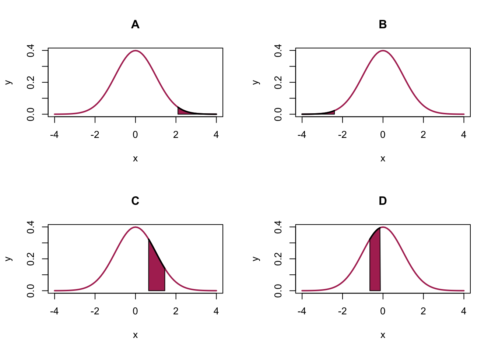
- BMI scores for a population follow a normal distribution with a mean of 25 and a standard deviation of 3. Those with a BMI over 35 are considered to be extremely overweight. A doctor wants to calculate the probability that the next patient he sees from the population is extremely overweight.
- The weights of packaged bags of dog food at a pet food store follow a normal distribution with a mean of 60 pounds and a standard deviation of 0.72 pounds. Calculate the probability that the next bag of dog food weighs between 61 and 60.5 pounds.
- A financial analyst is studying the daily returns of the stock market. The returns follow a normal distribution with a mean of 0.68% and a standard deviation of 2%. The analyst is specifically interested in stock market crashes, which occur when the market's daily return is less than -4.12%. Calculate the probability that the stock market will crash tomorrow.
- The speeds of race horses follow a normal distribution with a mean of 30 miles per hour and a standard deviation of 5 miles per hour. A horse trainer is trying to pick a horse that will win the Kentucky Derby. What is the probability that a randomly selected horse will run between 26.75 and 29.35 miles per hour?
The number of minutes it takes for the Texas A&M football team to score their first points of the game, \(T\), is normally distributed with \(\mu_T=5.2\) and \(\sigma^2_T=1.69\). Use
Rto answer the following questions.- What is the 72nd percentile of the time it takes for the football team to score their first points in a game? Round your answer to four decimal places.
- In their first game last season, it took the team 2.5 minutes to score their first points of the game. What percentage of the time does the football team score their first points this fast or faster? Round your answer to four decimal places.
- What two times mark the middle 90% of times that it takes the football team to score their first points in a game? Round your answers to four decimal places.
- Lower value:
- Upper value:
To find the two times that mark the middle 90% of times that it takes the football team to score their first points in a game, you must find the 95th percentile (this will be the upper value) and the 5th percentile (this will be the lower value).
## [1] 3.06169## [1] 7.33831- A basketball brand states that their basketballs have a weight that is normally distributed with a mean of 1.5 pounds and a standard deviation of 0.3 pounds. Let the random variable \(X\) represent the weight of a random basketball manufactured by the brand. A quality control firm wants to test the brand's claims by sampling 60 basketballs. Assume the individual basketball weights are independent.
- Assuming that the company's claims are true, what is the expected value of the average weight of basketballs in the sample?
Let \(X_i\) be the random variable that represents the weight of the \(i\)th sampled basketball, and let \(\bar{X}\) be the average weight of basketballs in the sample.
\(E[\bar{X}]=E[\frac{1}{60}\sum_{n=1}^{60} X_i]\)
\(E[\bar{X}]=\frac{1}{60}E[\sum_{n=1}^{60} X_i]\)
\(E[\bar{X}]=\frac{1}{60}\sum_{n=1}^{60} E[X_i]\)
\(E[\bar{X}]=\frac{60*1.5}{60}\)
\(E[\bar{X}]=1.5\)
- What is the standard error of the average weight of the basketballs in the sample? Give your answer to four decimal places
Let \(X_i\) be the random variable that represents the weight of the \(i\)th sampled basketball, and let \(\bar{X}\) be the average weight of basketballs in the sample.
\(Var[\bar{X}]=Var[\frac{1}{60}\sum_{n=1}^{60} X_i]\)
\(Var[\bar{X}]=\frac{1}{60^2}Var[\sum_{n=1}^{60} X_i]\)
The \(X_i\)s are independent, so the variance of the sum is the sum of the individual variances.
\(Var[\bar{X}]=\frac{1}{60^2}\sum_{n=1}^{60} Var[X_i]\)
\(Var[\bar{X}]=\frac{60*0.3^2}{60^2}\)
\(Var[\bar{X}]=\frac{0.3^2}{60}\)
\(Var[\bar{X}]=0.0015\)
\(\sigma_{\bar{X}}=\sqrt{0.0015}=0.0387\)
- What is the probability that the sample mean weight of basketballs will be greater than 1.55? Use the
pnormfunction inRand round your answer to four decimal places.
- \(P(\bar{X}>1.55)=\)
- What is the probability that the sample mean weight of basketballs will be greater than 1.55? Use the
#Define sample mean and variance
sample.mean = 1.5
sample.sd = 0.0387
#Calculate probability and round to 4 decimals
round(1-pnorm(q=1.55,
mean=sample.mean,
sd=sample.sd),
4)## [1] 0.0982- The quality control firm will only give the basketball brand a passing grade if the total weight of the 60 basketballs in the sample is greater than 94 pounds. Let \(T\) be the random variable that represents the total weight of the 60 basketballs in the firm's sample.
- What is the expected value of \(T\), \(E[T]\)?
- What is the variance of \(T\), \(Var[T]\)?
- Use the
pnormfunction inRto solve for the probability that the quality control firm will give the basketball brand a passing grade. Round your answer to four decimal places
#Find mean and variance of T
##E[T] = n*μ
t.mean = 60*1.5
##Var[T] = n*Var(X)
t.var = 60*(.3^2)
#Compute probability
round(1-pnorm(q=94,
mean=t.mean,
sd=sqrt(t.var)),
4)## [1] 0.0426- Let \(Y\) be the random variable that represents how far professional golfers can hit their golf ball off of the tee. A plot of the PDF of \(Y\) is shown below. Use this plot and the distribution of \(Y\) to answer the following questions.
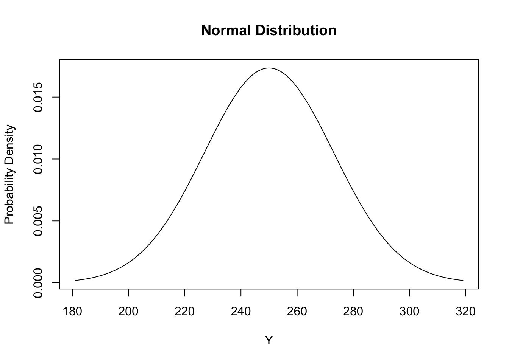
- Which distribution best describes the distribution of Y?
The empirical rule states that 99.7% of the observations from a normally distributed random variable will fall within three standard deviations of its mean.
In this case, the mean is 250 because the PDF is symmetric about 250.
Furthermore, it appears that close to 99% of the observations fall between \((250-23*3)\) and \((250+23*3)\), which is 181 and 319.
- A random sample of 25 pro golfers is taken from the population of pro golfers and their driving distance is recorded. What distribution will the sample mean of these pro golfers follow?
- Solve for the expected value and standard error of \(\bar{X}\) when \(n=25\).
- \(E[\bar{X}]=\)
- \(\sigma_{\bar{X}}=\)
\(E[\bar{X}]=\mu_X=250\)
\(\sigma_{\bar{X}}=\frac{23}{\sqrt{25}}=4.6\)
- Use the mean and standard error of \(\bar{X}\) you found in part c. to solve for the probability that the sample mean driving distance for a random sample of 25 professional golfers is greater than 256. Use
Rwhen possible and round your answer to four decimal places.
- \(P(\bar{X}>256)=\)
- Use the mean and standard error of \(\bar{X}\) you found in part c. to solve for the probability that the sample mean driving distance for a random sample of 25 professional golfers is greater than 256. Use
- A software engineer at a major audio streaming platform is studying the loading time of the company's software. The engineer knows that it takes an average of 0.25 seconds for the next song in the queue to load, with a standard deviation of 0.03. The engineer does not know the exact distribution of loading times.
- The software engineer takes a random sample of 81 songs and records their loading time. Is this sample size large enough for the engineer to assume that the sample average of loading times is normally distributed?
- What is the mean and standard error of the sample mean loading times when \(n=81\)? Round your answers to four decimal places when possible.
- Mean:
- Standard error (round your answer to four decimal places):
- The software engineer takes a random sample of 16 songs and records their loading time. Is this sample size large enough for the engineer to assume the sample average of loading times is normally distributed?
- If it is unknown whether the population distribution is normally distributed, how many samples must one take to be able to assume that the sample mean follows a normal distribution?
- A quality control specialist for a large smartphone producer is studying how long it takes for applications to launch once pressed. The specialist knows that the distribution of the time it takes for any app to launch on the smartphone is right skewed with a mean of 0.10 seconds and a standard deviation of 0.02 seconds.
- The specialist takes a random sample of 50 smartphones and records how long it takes for each smartphone to launch an app once prompted. Can the specialist assume that the mean app launch time for the 50 smartphones is normally distributed?
- What is the mean and standard error of the sample mean of launch times for 50 randomly selected smartphones? Round your answers to four decimal places when possible.
- Mean:
- Standard error:
- Use
Rto find the probability that the average app launch time for 50 randomly selected smartphones is greater than 0.105? Round your answer to four decimal places.
- Use
- The quality control specialist wants the sampling distribution of the sample mean to have a standard deviation of 0.0018. Approximately how many smartphones should the specialist sample?
Let \(\bar{X}\) be the sample average app launch time and \(X\) be the random variable that represents the distribution of launch times for all phones.
\(\sigma_{\bar{X}}=\frac{\sigma_X}{\sqrt{n}}\)
\(0.0018=\frac{0.02}{\sqrt{n}}\)
\(n=(\frac{0.02}{0.0018})^2\)
\(n=123.457\)
Since your sample must be a whole number, round up so that the standard deviation is not greater than what is needed.
\(n=124\)
- The amount of time it takes the customer service team at an apartment complex in College Station, Texas, to respond to a maintenance request follows a normal distribution with a mean of 45 minutes and a standard deviation of 10 minutes.
- A random sample of 8 employees is selected to study the customer service team's response time. What is the mean and standard error of the sampling distribution of the sample mean? Round your answers to four decimal places when possible.
- Mean:
- Standard error:
- Calculate the probability that the sample average amount of time spent responding to maintenance requests is less than 38 minutes when \(n=8\). Round your answer to four decimal places.
- A random sample of 32 employees is selected to study the customer service team's response time. What is the mean and standard error of the sampling distribution of the sample mean? Round your answers to four decimal places when possible.
- Mean:
- Standard error:
Standard error = \(\frac{10}{\sqrt{32}}\)
Standard error = 1.7678
- Calculate the probability that the sample average amount of time spent responding to maintenance requests is less than 38 minutes when \(n=32\). Round your answer to four decimal places. \(*10^{-5}\)
- As n increases, what happens to the sampling distribution of the sample mean?
- Why is a larger sample size preferred to a smaller sample size when calculating a sample mean?
- A basketball team depends on their two star players, Larry and Magic, to win basketball games. Larry takes 22 shots per game, with a success rate of 0.61. Magic takes 31 shots per game, with a success rate of 0.43. The number of shots Larry makes during a game and the number of shots Magic makes during a game are independent.
- According to the Central Limit Theorem, for a large enough n, a random varible X with a Binomial(n,p) distribution can be approximated with which of the following distributions? (Here, the normal distribution is written using the \(N(\mu, \sigma^2)\) convention, so the second argument is the variance.)
- Using the Central Limit Theorem, what is the approximate distribution of the number of shots Larry makes during a game?
- Distribution:
- \(\mu=\) ,
- \(\sigma^2=\) (round your answer to four decimal places)
- Using the Central Limit Theorem, what is the approximate distribution of the number of shots Magic makes during a game?
- Distribution:
- \(\mu=\) ,
- \(\sigma^2=\) (round your answer to four decimal places)
- Let \(L\) be the number of shots that Larry makes during a game and \(M\) be the number of shots that Magic makes during a game. Use the
pnormfunction inRto answer the following questions regarding \(L\) and \(M\).
What is the probability that Larry will make more than 20 shots in his next game? Round your answer to three decimal places.
What is the probability that Magic will make less than 10 shots in his next game? Give your answer to four decimal places
- Let \(L\) be the number of shots that Larry makes during a game and \(M\) be the number of shots that Magic makes during a game. Use the
## [1] 0.002## [1] 0.1135- Let \(C=L+M\) be the random variable that represents the number of combined shots that Larry and Magic make in a game. Let \(D=L-M\) be the random variable that represents the difference between the number of shots that Larry makes and the number of shots that Magic makes in a game.
What is the probability that the number of shots Larry makes is larger than the number of shots Magic makes during their next game? That is, \(P(D>0\)). Round your answer to two decimal places
What is the probability that Magic and Larry both combine to make more than 30 shots in their next game? That is, \(P(C>30)\). Round your answer to four decimal places
\(L\) and \(M\) are both normally distributed random variables. They are also independent.
A random variable comprised of a linear combination of normal random variables is normally distributed. Therefore, \(C\) and \(D\) are both normally distributed.
The mean of \(C\) is
\(E[C]\\=E[L+M]\\= E[L]+E[M] \\= 13.42+13.33 \\= 26.75\)
The standard deviation of \(C\) is
\(\sigma_C\\=\sqrt{Var(L)+Var(M)}\\=\sqrt{5.2338+7.5981}\\=\sqrt{12.8319}\\=3.5822\)
The mean of \(D\) is
\(E[D]\\=E[L-M]\\= E[L]-E[M] \\= 13.42-13.33 \\= 0.09\)
The standard deviation of \(D\) is
\(\sigma_D\\=\sqrt{Var(L)+Var(M)}\\=\sqrt{5.2338+7.5981}\\=\sqrt{12.8319}\\=3.5822\)
Therefore, \(C \sim N(26.75,12.8319)\) and \(D \sim N(0.09,12.8319)\)
Now, use the pnorm function in R to calculate the probabilities.
## [1] 0.51## [1] 0.1821- Suppose you are conducting a chemistry experiment where you need to measure the time it takes for an enzyme to catalyze a reaction. Due to limitations in your equipment, you can only measure time to the nearest second. As a result, the round-off error in your time measurement, denoted as \(E\), is uniformly distributed between -0.82 and 0.14 seconds. In your next experiment, you will run the reaction 72 times and calculate the average round-off error in the sample, \(\bar{E}\).
- What is the distribution of \(\bar{E}\)?
- Distribution:
- \(\mu\)=
- \(\sigma\)= (round your answer to four decimal places)
\(E\sim U(-0.82,0.14)\)
\(E[E]=\frac{-0.82+.14}{2}=-0.34\)
\(\sigma_E=\sqrt{Var(E)}\\=\sqrt{\frac{(.14-(-0.82))^2}{12}}\\=\sqrt{0.0768}\\=0.2771\)
According to the Central Limit Theorem, since \(n\ge30\), \(\bar{E}\sim N(\mu_E,\frac{\sigma_E^2}{n})\)
Therefore, \(\bar{E}\sim N(-0.34,\frac{0.0768}{72})\)
- What is the probability that \(\bar{E}\) is greater than -0.25? Round your answer to four decimal places.
- What is the probability that \(\bar{E}\) of the 72 samples is between -0.43 and -0.23? Give your answer to four decimal places.
- An American stock market exchange trades 500 companies. Each company has an average return of 7% and a standard deviation of 2.7%. A financial professional took a random sample of 36 companies traded on the exchange and calculated their average annual return. Assume that the annual returns for each of the 500 companies in the stock exchange are independent.
- What is the approximate distribution of the average annual return of the 36 companies in the financial professional's sample?
- Distribution:
- \(\mu\)=%
- \(\sigma\)= %
- What is the probability that the average annual return of the 36 companies in the financial professional's sample is greater than 8.2%? Round your answer to four decimal places.
#Calculate the probability that the sample
#average annual return will be greater than
#8.2; round to four decimal places
round(1-pnorm(q=8.2,
mean=7,
sd=0.45),
4)## [1] 0.0038- What is the probability that the average annual return of the 36 companies in the financial professional's sample is less than 6.5%? Give your answer to four decimal places.
#Calculate the probability that the sample
#average annual return will be less than
#6.5; round to four decimal places
round(pnorm(q=6.5,
mean=7,
sd=0.45),
4)## [1] 0.1333- How many stocks should the financial professional sample from the stock exchange for the standard error of the sample's annual return to be 0.05?
Let \(X\) be the random variable that represents the return of a randomly selected stock from the stock exchange. Let \(\bar{X}\) be the sample's annual return.
\(\sigma_{\bar{X}}=\frac{\sigma_X}{\sqrt{n}}\)
\(0.05=\frac{2.7}{\sqrt{n}}\)
\(n=(\frac{2.7}{0.05})^2\)
\(n=2916\)
- A shelf in a warehouse can hold a maximum weight of 700 pounds. The weight of each box in the warehouse follows a normal distribution with a mean of 60 pounds and a variance of 100. Tomorrow at 3:00 pm, 11 boxes from the warehouse will be placed on the shelf. A statistician is hired at 2:50 pm to determine the probability that the shelf will collapse with 11 boxes on it.
- What is the probability that the shelf will collapse with 11 boxes on it? Round your answer to four decimal places.
Let \(X\) be the random variable that represents the weight of a random box. Let \(\bar{X}\) be the random variable that represents the sample average weight of 11 boxes.
\(\bar{X} \sim N\left(60,\left(\frac{10}{\sqrt{11}}\right)^2\right)\)
For the shelf to collapse, the average weight of the boxes must be \(\frac{700}{11}=63.6364\).
Therefore, the probability of the shelf collapsing is \(P(\bar{X}>63.6364)\).
Use R to calculate the probability.
## [1] 0.1139- The next day, the statistician runs late and does not make the probability calculation until 6:13 pm. At 6:13 pm, what is the probability that the shelf collapsed at 6:00 pm?
- The statistician arrives on time the next day and finds that the shelf is still standing, with the 11 boxes on the shelf weighing 615 pounds. The warehouse manager forgets that there is another box that needs to be placed on the shelf. What is the probability that the next box will break the shelf? Round your answer to four decimal places.
The probability that the shelf will collapse when the next box is placed on it is equal to the probability that the next box weighs more than \(700-615=85\) pounds. Use the pnorm function in R to calculate this probability.
## [1] 0.006218.7 Principles of Statistical Inference
- A new concrete was recently introduced into the market. An engineer is interested in \(p\), the proportion of potholes that the concrete correctly fills. The engineer runs an experiment in which 26 potholes are filled with the new concrete. 11 of the 26 potholes were correctly filled.
- Calculate the point estimate of \(p\), \(\hat{p}\). Round your answer to four decimal places.
Let \(X\) be a binomial random variable that represents the number of potholes in the sample that are successfully filled.
\(x\) is a realization of \(X\).
\(\hat{p}=\frac{X}{n}\)
We know that \(x=11\) and \(n=26\).
Therefore, \(\hat{p}=\frac{11}{26}=0.4231\)
- Calculate the estimate of the standard error of \(\hat{p}\), \(S_{\hat{p}}\). (It is an estimate because we are not given \(p\), and must use \(\hat{p}\) in our calculations). Round your answer to four decimal places.
\(S_{\hat{p}}=\sqrt{\frac{(\hat{p})(1-\hat{p})}{n}}\)
\(S_{\hat{p}}=\sqrt{\frac{(11/26)(1-11/26)}{26}}\)
\(S_{\hat{p}}= 0.0969\)
- What happens to the accuracy of the point estimate, p̂, as the sample size, n increases?
- Is p̂ an unbiased estimate of p?
For a point estimate \(\hat{\theta}\) to be an unbiased estimate of \(\theta\), it must be the case that \(E[\hat{\theta}]=\theta\).
Let \(X\) be the random variable that represents the number of potholes successfully filled in an experiment. This means that \(X\) follows a binomial distribution and that \(E[X]=n*p\).
\(E[\hat{p}]=E[\frac{X}{n}]\)
\(E[\hat{p}]=\frac{E[X]}{n}\)
\(E[\hat{p}]=\frac{n*p}{n}\)
\(E[\hat{p}]=p\)
Therefore, \(\hat{p}\) is an unbiased estimate of \(p\).
- An ecologist in west Texas is studying the height of Ocotillo plants. The ecologist takes a sample of 92 Ocotillo plants and finds that the average height is 76 inches. The ecologist knows that the variance of Ocotillo plant height across the entire desert southwest is 3.7 inches\(^2\). Let \(\bar{X}\) denote the mean and \(S^2\) denote the variance of the sample that the ecologist takes.
- Calculate the standard error of \(\bar{X}\). Round your answer to four decimal places.
- Now assume that the ecologist does not know that the variance of Ocotillo plant height across the entire desert southwest is 3.7 inches\(^2\). Instead, it is only known that the sample variance, \(S^2\), is 4.1 inches\(^2\). Calculate the estimate of the standard error of \(\bar{X}\).
The estimate of the standard error of \(\bar{X}\), \(S_{\bar{X}}\), is:
\(S_{\bar{X}} = \sqrt{\frac{S^2}{n}}\)
\(S_{\bar{X}} = \sqrt{\frac{4.1}{92}}\)
- Is the sample average height of Ocotillo plants an unbiased estimator of the average height of Ocotillo plants across the entire desert southwest?
Let \(X\) be the random variable that represents the height of a randomly selected Ocotillo plant.
\(E[\bar{X}]=E[\frac{\sum{X}}{n}]\)
\(E[\bar{X}]=\frac{\sum{E[X]}}{n}\)
\(E[\bar{X}]=\frac{n*\mu_X}{n}\)
\(E[\bar{X}]=\mu_X\)
Therefore, \(\bar{X}\) is an unbiased estimator of \(\mu_X\).
- A football statistician is compiling a scouting report for next week's game. He wants to know the combined amount of points scored by the opposing team in the first quarter and the third quarter of their games. The statistician took a sample of 44 games from the opposing team's entire playing history and computed \(\bar{X_1}\), the average number of points that the opposing team scored in the first quarter, and \(\bar{X_2}\), the average number of points that the opposing team scored in the third quarter.
- Show that the \(\bar{X_1} + \bar{X_2}\) is an unbiased estimator of the true sum of averages, \(\mu_1 + \mu_2\).
By the linearity of expectation,
\(E(\bar{X_1} + \bar{X_2}) = E(\bar{X_1}) + E(\bar{X_2}) = \mu_1 + \mu_2\)
Therefore, \(\bar{X_1} + \bar{X_2}\) is an unbiased estimator of \(\mu_1 + \mu_2\).
- What are the formulas for the standard error and estimated standard error of \(\bar{X_1} + \bar{X_2}\), assuming the samples are independent.
If the population variance for both random variables is known (\(\sigma_{X_1}^2\) and \(\sigma_{X_2}^2\)), then the standard error of \(\bar{X_1} + \bar{X_2}\) is:
\(\sigma_{\bar{X_1} + \bar{X_2}} = \sqrt{\frac{\sigma_1^2}{n_1} + \frac{\sigma_2^2}{n_2}}\)
If the population variance for both random variables is not known, but the sample variances can be calculated (\(S^2_{X_1}\) and \(S^2_{X_2}\)), then the estimated standard error of \(\bar{X_1} + \bar{X_2}\) is:
\(S_{\bar{X_1} + \bar{X_2}} = \sqrt{\frac{S_1^2}{n_1} + \frac{S_2^2}{n_2}}\)
- The statistician computes the sample averages and finds that \(\bar{X_1} = 7.9\) and \(\bar{X_2} = 17.2\). Calculate the point estimate of \(\mu_1+\mu_2\).
- \(\bar{X_1}+\bar{X_2}=\)
- The statistician computes the sample averages and finds that \(\bar{X_1} = 7.9\) and \(\bar{X_2} = 17.2\). The statistician knows that the variance points scored in the first quarter for the team's entire playing history is \(10.24\), and that the variance of points scored in the third quarter for the team's entire playing history is \(28.09\). Calculate the standard error of \(\bar{X_1} + \bar{X_2}\). Round your answer to four decimal places. \(\sigma_{\bar{X_1} + \bar{X_2}} =\)
The population variance of \(X_1\) and \(X_2\) are given in the problem.
Therefore, \(\sigma_{\bar{X_1} + \bar{X_2}} = \sqrt{\frac{10.24}{44} + \frac{28.09}{44}}\)
\(\sigma_{\bar{X_1} + \bar{X_2}}= 0.9333\)
- The statistician finds out that the population variances are actually incorrect. He computes the sample variances to estimate the population variances. He finds that \(S_1^2 = 9.2\) and \(S_2^2 = 33.6\). Calculate the estimate of the standard error of \(\bar{X_1} + \bar{X_2}\). Round your answer to four decimal places. \(S_{\bar{X_1} + \bar{X_2}} =\)
The population variances are now unknown. We must estimate the standard error using the sample variances.
\(S_{\bar{X_1} + \bar{X_2}} = \sqrt{\frac{9.2}{44} + \frac{33.6}{44}}\)
\(S_{\bar{X_1} + \bar{X_2}} = 0.9863\)
- A loan officer at a local credit union is investigating the proportion of clients that missed their loan payment last month. The officer took a random sample of 126 of the credit union's clients and found that 27 of them missed their loan payment.
- What population parameter is the loan officer interested in?
- What is the point estimator of this population parameter?
- Calculate the point estimate of the population parameter. Round your answer to four decimal places.
- Calculate an estimate of the standard error of the estimator. Give your answer to four decimal places.
\(S_{\hat{p}}=\sqrt{\frac{(27/126)(1-27/126)}{126}}\)
\(S_{\hat{p}}=0.0366\)
- The amount of time that students at Texas A&M University spend on their phone per day, \(T\), is normally distributed with a mean of 180 minutes and a standard deviation of 30 minutes. You will perform a simulation study in
Rto see how the accuracy of \(\bar{T}\) changes as \(n\) increases. OpenRand set your seed to 123, then answer the questions below.
- Use the
rnormfunction to take a random sample of size 20 from the population of students at Texas A&M University. Take the mean of the sample. Repeat this 100 times. Use thesdfunction to calculate the standard error of the 100 sample means. Round your answer to 4 decimal places.
- Use the
set.seed(123) #Set your seed
#Create an empty vector to store your
#sample means
sample.mean = c()
for(i in 1:100){
#Concatenate the current vector
#and the new sample average
mean.1 = mean(rnorm(20,180,30))
sample.mean = c(sample.mean,mean.1)
}
#Calculate the standard error
sd(sample.mean)## [1] 5.936565- Repeat part a., except this time increase your sample size to 40. Use the
sdfunction to calculate the standard error of the 100 sample means. Round your answer to 4 decimal places.
- Repeat part a., except this time increase your sample size to 40. Use the
set.seed(123) #Set your seed
#Create an empty vector to store your
#sample means
sample.mean = c()
for(i in 1:100){
#Concatenate the current vector
#and the new sample average
mean.1 = mean(rnorm(40,180,30))
sample.mean = c(sample.mean,mean.1)
}
#Calculate the standard error
sd(sample.mean)## [1] 4.741674- Repeat part a., except this time increase your sample size to 200. Use the
sdfunction to calculate the standard error of the 100 sample means. Round your answer to 4 decimal places.
- Repeat part a., except this time increase your sample size to 200. Use the
set.seed(123) #Set your seed
#Create an empty vector to store your
#sample means
sample.mean = c()
for(i in 1:100){
#Concatenate the current vector
#and the new sample average
mean.1 = mean(rnorm(200,180,30))
sample.mean = c(sample.mean,mean.1)
}
#Calculate the standard error
sd(sample.mean)## [1] 2.021134- What happens to the standard error of the 100 sample means as the sample size grows?
- The random variable \(X\) has a mean of 10. A statistician took a random sample of 100 observations from a population with the same probability distribution as \(X\). The statistician is using four different estimators of \(\mu_X\). Each of the plots below correspond to one of the estimators. The red lines represents the true mean, and the green lines represents the expected value of the estimator. For each plot, state whether the estimator used is unbiased, positively biased, or negatively biased.
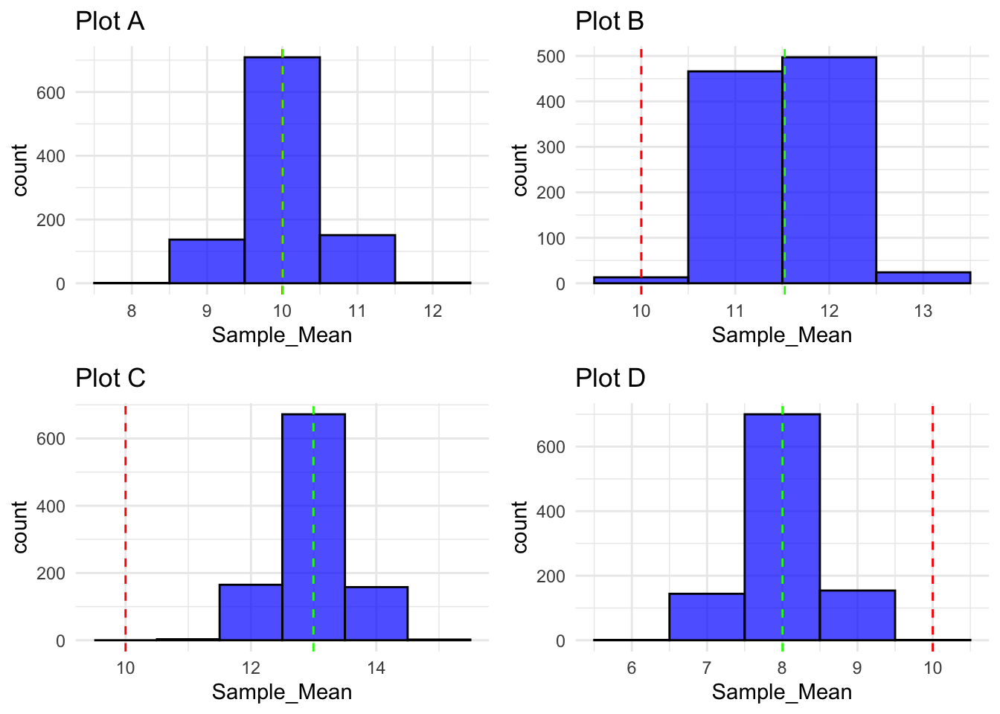
- The estimator in Plot A is:
- The estimator in Plot B is:
- The estimator in Plot C is:
- The estimator in Plot D is:
18.8 Confidence Intervals
- The Chief Technology Officer at a large oil and gas discovery firm is given four confidence intervals by the firm's statistician to help estimate average daily oil production, in tons, for the firm's top performing rigs. The CTO does not know much about statistics, and needs your help interpreting the intervals. For each of the four confidence intervals below, give the confidence level used by the statistician, the sample mean of the sample used for creating the confidence interval, the standard deviation of the population for which we are estimating the mean, and the sample size used to create the confidence interval.
- \(10.2 \pm 1.6449 \frac{2.7}{\sqrt{33}}\)
- \(\bar{x}=\)
- Confidence level (Use
pnormand round to the nearest whole number) = \(\%\) - \(\sigma=\)
- \(n=\)
The \(100*(1-\alpha)%\) confidence interval for \(\mu\) given that \(\sigma\) is known is:
\(\bar{X} \pm z_{\frac{\alpha}{2}} \frac{\sigma}{\sqrt{n}}\)
From the formula given, it is evident that: \(\bar{X}=10.2\) \(\sigma=2.7\) \(n=33\)
To calculate the confidence level given \(z_{\frac{\alpha}{2}}\), use R.
The R calculation yields that \(\alpha=0.099\), which is approximately 0.1. This means that \(1-\alpha=0.9\). Therefore, the confidence level is \(90\%\).
- \(4.7 \pm 2.5758 \frac{0.50}{\sqrt{200}}\)
- \(\bar{x}=\)
- Confidence level (Use
pnormand round to the nearest whole number) = \(\%\) - \(\sigma=\)
- \(n=\)
- \(12.2 \pm 1.9599 \frac{6.2}{\sqrt{32}}\)
- \(\bar{x}=\)
- Confidence level (Use
pnormand round to the nearest whole number) = \(\%\) - \(\sigma=\)
- \(n=\)
- \(2.561 \pm 1.2816 \frac{1.9}{\sqrt{45}}\)
- \(\bar{x}=\)
- Confidence level (Use
pnormand round to the nearest whole number) = \(\%\) - \(\sigma=\)
- \(n=\)
- The CTO wants to know the values of \(z_{\frac{\alpha}{2}}\) for a confidence level of 99.5% and a confidence level of 75%. Use the
qnormfunction inR.
- \(z_{\frac{\alpha}{2}}\) for 99.5% confidence is (round your answer to three decimal places):
- \(z_{\frac{\alpha}{2}}\) for 75% confidence is (round your answer to two decimal places):
- The CTO wants to know the values of \(z_{\frac{\alpha}{2}}\) for a confidence level of 99.5% and a confidence level of 75%. Use the
## [1] 2.807034## [1] 1.150349- The following six plots show the long run proportion of confidence intervals that capture the true population parameter, \(\mu\), in an industrial experiment. Each of the six plots correspond to confidence intervals calculated using a unique significance level. Match each plot with the significance level used in the construction of the plot's confidence intervals.
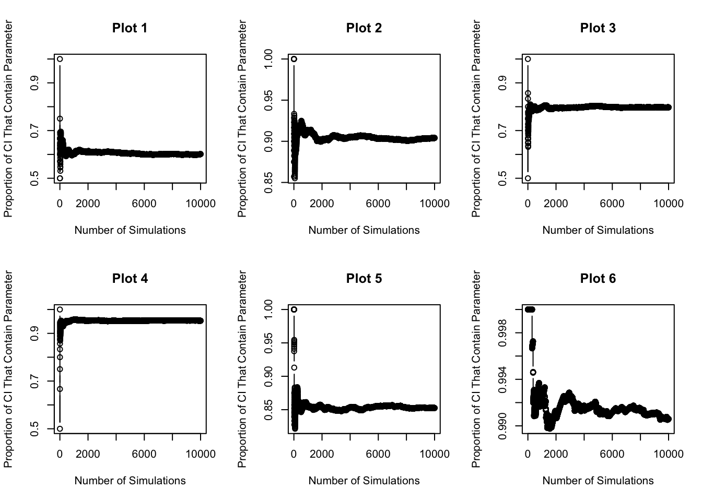
- Plot 1 shows the long run coverage proportion for confidence intervals created with \(\alpha=\)
- Plot 2 shows the long run coverage proportion for confidence intervals created with \(\alpha=\)
- Plot 3 shows the long run coverage proportion for confidence intervals created with \(\alpha=\)
- Plot 4 shows the long run coverage proportion for confidence intervals created with \(\alpha=\)
- Plot 5 shows the long run coverage proportion for confidence intervals created with \(\alpha=\)
- Plot 6 shows the long run coverage proportion for confidence intervals created with \(\alpha=\)
The long run proportion of confidence intervals that capture the population parameter is equivalent to the confidence we have in the confidence interval building process.
In plot 1, approximately 60% of confidence intervals capture the true population parameter. Therefore, our confidence level is 60%.
\(60\% = 100\%*(1-\alpha)\)
\(\alpha=1-.6\)
\(\alpha=0.4\)
Therefore, the significance level used to construct the confidence intervals in plot 1 is 0.4.
- What is the best interpretation of the long run proportion of confidence intervals that capture the true population parameter, μ?
- A steel manufacturing company called SteelStrength Solutions in Gary, Indiana, is bidding for a contract with the Indiana state government. The state government wants to build highway structures that require high tensile strength. In their proposal, the steel manufacturing company stated with 95% confidence that the average tensile strength of steel bars manufactured at their facility is between 480 and 560 MPa (megapascals). Decide whether each of the following statements about the confidence interval is valid or invalid.
- The probability that the true average tensile strength of steel bars manufactured by SteelStrength Solutions is between 480 and 560 MPa is 0.95.
- The Indiana state government can be 95% confident that the true average tensile strength of steel bars manufactured by SteelStrength Solutions is between 480 and 560 MPa.
- The average tensile strength of steel bars produced by SteelStrength Solutions is between 480 and 560 MPa with 95% confidence.
- If SteelStrength Solutions performed the procedure for creating this confidence interval many more times, they would find that 95% of confidence intervals are (480 MPa, 560 MPa).
- The Indiana state government can be 85% confident that the next steel bar manufactured by SteelStrength Solutions will have a tensile strength between 480 MPa and 560 MPa.
- The probability that the true average tensile strength of steel bars manufactured by SteelStrength Solutions is between 480 and 560 MPa is either 0 or 1, since the interval is not random once is it made.
- A first grade teacher in Ruidoso, New Mexico, wanted to test how students reacted to the first snow of the winter. When the first snow occurred, the teacher let students run to the playground. The teacher measured the average amount of time the students played outside before coming back to class. The teacher calculated a 95% confidence interval for the average amount of time (in minutes) that first graders spend playing outside during the first snow of the winter, and found it to be (10.57, 24.78). Decide whether each of the following statements about the confidence interval is valid or invalid.
- Using a method that correctly captures the true mean 95% of the time, the teacher can say that the true mean number of minutes that students play outside is between 10.57 and 24.78.
- If the teacher repeated the procedure for creating the confidence interval many times, the teacher would find that the confidence interval is (10.57, 24.78) 95% of the time.
- The teacher can be 95% confident that the true average amount of time that first grade students spend outside during the first snow of the winter is between 10.57 and 24.78.
- The teacher can be 95% confident that the next student to run outside in the snow will spend between 10.57 and 24.78 minutes outside.
- The probability that the true average amount of time that first grade students spend outside during the first snow of the winter is between 10.57 and 24.78 is 0.95.
- If the teacher performed the same study next year, we would expect that 95% of students would spend between 10.57 and 24.78 minutes outside.
- The dean of the College of Arts and Sciences at Texas A&M University wants to estimate the proportion of statistics majors that took AP Statistics in high school. A data scientist for the university calculates an 87% confidence interval for the proportion of statistics majors that took AP Statistics in high school. The calculated confidence interval is (0.607, 0.812). Decide whether each of the following statements about the confidence interval is valid or invalid.
- Using a method that correctly captures the true population proportion 87% of the time, we can estimate that the true proportion of statistics majors that took AP Statistics in high school is between 0.607 and 0.812.
- The probability that the true proportion of statistics majors that took AP statistics in high school is between 0.607 and 0.812 is 0.87.
- If the data scientist were to repeat this procedure many times (draw samples and reconstruct the confidence interval), the data scientist should expect that 87% of the confidence intervals will be (0.607, 0.812).
- The dean can be 87% confident that the true proportion of statistics majors that took AP statistics in high school is between 0.607 and 0.812.
- If the data scientist were to analyze the entire proportion of students, the probability that any one of those students took AP statistics in high school would be between 0.607 and 0.812.
- If the data scientist were to repeat this procedure many times (draw samples and reconstruct the confidence interval), the data scientist should expect around 87% of constructed confidence intervals to include the true proportion.
- The board of directors of a major hospital in Houston, Texas, wants to estimate the true average wait time for patients in the emergency room. The hospital selected 75 patients at random over one month and recorded their wait time in the ER. The hospital's statistician used the sample to compute a 90% confidence interval for the population average ER wait time, in minutes. The CI is (74.7, 127.7). The data scientist assumed that the wait time data is normally distributed with \(\sigma=\) 30.2.
- The board of directors asks the statistician to create another confidence interval for mean ER wait time. This time, however, the board of directors wants a 95% confidence interval. What can be said of the new confidence interval?
- The board of directors asks the statistician to interpret the 90% confidence interval. Which of the following is the correct interpretation?
- The board of directors tells the statistician that they want to use a narrower confidence interval for making a decision. They believe that a narrower confidence interval will give them a better idea of what the true mean ER wait time is. What is the flaw in their reasoning?
- A sports psychologist working for the National Football League is interested in estimating the average heart rate of NFL kickers before they kick a field goal greater than 50 yards long. The sports psychologist selected 16 NFL kickers at random and had them wear a heart rate monitor before they attempted their next field goal longer than 50 yards. The sports psychologist knows that the distribution of heart rates among NFL kickers is normal.
- The psychologist creates a 95% confidence interval and finds that it is (122.6954, 166.3046). What can the psychologist conclude from this confidence interval?
- The psychologist finds a dataset that contains heart rates for kickers for the past 50 NFL seasons. The psychologist manipulates the data such that only kicks longer than 50 yards are included. A random sample of 200 heart rates are taken and a new 95% confidence interval is calculated. Assuming the sample mean and population standard deviation is the same, which of the following is likely to be the new confidence interval and why?
- The psychologist decides to use the original data he collected (16 observations) but wants to construct a 99% confidence interval. All else equal, which of the following is likely to be the new confidence interval and why?
- The psychologist realizes that the standard deviation he used for the population distribution is actually incorrect, and that the true standard deviation is much lower. The psychologist uses the correct standard deviation to construct a new 95% confidence interval. All else equal, how will this new confidence interval compare to the confidence interval the psychologist calculated in part a.?
- A statistician at the U.S. National Park Service is conducting a yearly examination of the height of redwood trees in Redwood National Park. The statistician knows that the underlying population of heights is normally distributed and that the population standard deviation is 6.2 feet. The statistician wants to construct a 99% confidence interval for the true average height of redwood trees in the park with the following formula: \(\bar{x} \pm z_{\frac{\alpha}{2}}\frac{\sigma}{\sqrt{n}}\)
- Which of the following three factors directly affects the precision of the statistician's confidence interval, making it narrower or wider (all else equal)?
- The statistician sampled 45 trees and calculated a confidence interval of (224.6193, 229.3807). The statistician's boss wants a narrower confidence interval but the same confidence level. What should the statistician change?
- The statistician sampled 45 trees and calculated a confidence interval of (224.6193, 229.3807). The statistician's boss wants the significance level, α to increase from 0.01 to 0.05. How would this affect the confidence level and the confidence interval?
- The statistician sampled 45 trees and calculated a confidence interval of (224.6193, 229.3807). The statistician's boss reveals that there was a typo in the data dictionary and that the population standard deviation, σ, is incorrect. The statistician calculates the sample standard deviation and finds that S=6.2. How will using S instead of σ change the confidence interval?
When \(\sigma\) is unknown, \(S\) is used to estimate \(\sigma\). A \(t\)-statistic is then used instead of a \(z\)-statistic. The \(t\)-statistic comes from a \(t\) distribution, which has wider tails than a standard normal distribution. This means that, for a given \(\alpha\), the \(t\)-statistic will be larger than the \(z\)-statistic. Therefore, the confidence intervals will be wider.
This makes sense given that we must account for the increased uncertainty introduced by estimating \(\sigma\) using \(S\).
- If \(\bar{x}=227\), \(S=6.2\), and \(\alpha=0.05\), \(n=45\) calculate the confidence interval for \(\mu\). Round your answers to four decimal places and use the
qtfunction inRto aid in your calculations.
- Lower Bound:
- Upper Bound:
- If \(\bar{x}=227\), \(S=6.2\), and \(\alpha=0.05\), \(n=45\) calculate the confidence interval for \(\mu\). Round your answers to four decimal places and use the
#First, let's calculate the t-statistic
##Degrees of freedom = n-1 = 44
##α/2=0.025
t.stat = qt(.025,
df=44,
lower.tail=F)
#Calculate the lower bound:
227-t.stat*(6.2/sqrt(45))## [1] 225.1373## [1] 228.8627- A data scientist working for an energy supplier in Rapid City, South Dakota, wants to estimate the mean amount of power consumption in Keystone, South Dakota (near Mount Rushmore), on July 4th. The data scientist took a random sample of 30 years from the past 100 years of data, shown below. Assume the distribution of July 4th energy usage in Keystone is normally distributed with \(\sigma =578\). All data is in kWh. Use the sample data to answer the following questions in
R.
## [1] 24676.05 24866.96 25900.93 25040.75 25074.73 25991.31 25266.41 24268.79
## [9] 24603.00 24742.41 25707.52 25207.97 25231.65 25063.97 24678.72 26032.84
## [17] 25287.76 23863.30 25405.38 24726.73 24382.80 24874.01 24406.97 24578.70
## [25] 24638.73 24025.09 25484.24 25088.65 24342.16 25724.71- Report the mean, margin of error, and confidence interval for the true mean amount of power consumption in Keystone, South Dakota, on July 4th. Use a level of significance, \(\alpha\), of 0.05. (Hint: margin of error = \(z_{\frac{\alpha}{2}}\frac{\sigma}{\sqrt{n}}\)).
- \(\bar{x}=\) (round to two decimal places)
- MOE: (round to four decimal places)
- 95% CI Lower Bound: (round to two decimal places)
- 95% CI Upper Bound: (round to two decimal places)
#Create vector of sample data
energy = c(24676.05,
24866.96,
25900.93,
25040.75,
25074.73,
25991.31,
25266.41,
24268.79,
24603.00,
24742.41,
25707.52,
25207.97,
25231.65,
25063.97,
24678.72,
26032.84,
25287.76,
23863.30,
25405.38,
24726.73,
24382.80,
24874.01,
24406.97,
24578.70,
24638.73,
24025.09,
25484.24,
25088.65,
24342.16,
25724.71)
#Calculate sample average
avg = mean(energy)
avg## [1] 24972.77#Calculate margin of error
alphaovertwo = 0.05/2
sigma=578
n=30
moe = qnorm(alphaovertwo,
lower.tail=F)*(sigma/sqrt(n))
moe ## [1] 206.8308## [1] 24765.94## [1] 25179.61- The data scientist's boss was just informed that the true mean amount of power consumption in Keystone, South Dakota, on July 4th is 25000 kWh. The boss wants to know whether the data scientist's procedure for creating confidence intervals will result in 95% coverage of the true mean over the long run. Run a simulation in which you generate 1000 samples of \(n=30\) and create a confidence interval for each sample using
R. Set your seed to 123.
- The proportion of the 1000 95% confidence intervals that contain the true mean is . Round your answer to three decimal places.
- The data scientist's boss was just informed that the true mean amount of power consumption in Keystone, South Dakota, on July 4th is 25000 kWh. The boss wants to know whether the data scientist's procedure for creating confidence intervals will result in 95% coverage of the true mean over the long run. Run a simulation in which you generate 1000 samples of \(n=30\) and create a confidence interval for each sample using
set.seed(123) #Set seed
count = 0 #Counts the number of simulations
contained = 0 #Counts the number of CI's
#that contain the true mean
#1000 simulations
for(i in 1:1000){
x <- rnorm(30, 25000,578) #Sample
lb <- mean(x) - 206.8308 #Lower Bound
ub <- mean(x) + 206.8308 #Upper Bound
#If the CI contains the true mean,
#Add 1 to contained
if(25000 >= lb & 25000 <= ub){
contained = contained + 1
}
count = count + 1 #+1 simulation
}
#Divide the total number of CIs that captured
#the true mean divided by the total number
#of CIs made.
long.run = contained/count
long.run ## [1] 0.967- Perform the simulation in part b. again, except this time with 10000 95% confidence intervals. Set your seed to 123.
- The proportion of the 10000 95% confidence intervals that contain the true mean is . Round your answer to four decimal places.
- Perform the simulation in part b. again, except this time with 10000 95% confidence intervals. Set your seed to 123.
set.seed(123) #Set seed
count = 0 #Counts the number of simulations
contained = 0 #Counts the number of CI's
#that contain the true mean
#10000 simulations
for(i in 1:10000){
x <- rnorm(30, 25000,578) #Sample
lb <- mean(x) - 206.8308 #Lower Bound
ub <- mean(x) + 206.8308 #Upper Bound
#If the CI contains the true mean,
#Add 1 to contained
if(25000 >= lb & 25000 <= ub){
contained = contained + 1
}
count = count + 1 #+1 simulation
}
#Divide the total number of CIs that captured
#the true mean divided by the total number
#of CIs made.
long.run = contained/count
long.run ## [1] 0.9547- Use the
plotfunction to show the percentage of confidence intervals that cover the true population mean as the number of intervals created grows to 10000. The steps to this problem are similar to those in exercise 18 of the Probability chapter.
- Use the
#Set seed
set.seed(123)
#This vector will store your x values
x <- c()
#This vector will store your y values
y <- c()
#Number of CIs that contain the true parameter
contained = 0
#10000 simulations
for(i in 1:10000){
sample <- rnorm(30, 25000,578) #Sample
lb <- mean(sample) - 206.8308 #Lower Bound
ub <- mean(sample) + 206.8308 #Upper Bound
#Check if CI contains true parameter
if(25000 >= lb & 25000 <= ub){
contained = contained + 1
}
#y[i] is the number of simulations performed
#so far
x[i] = i;
#y[i] is the proportion of CIs that
#contain the true parameter
y[i] = contained/i
}
#Plot x,y
plot(x, y, xlab = "Number of Confidence Intervals", ylab = "Fraction of Confidence Intervals Containing μ",type = "b")
abline(h=0.95, lty = 2, col = "maroon")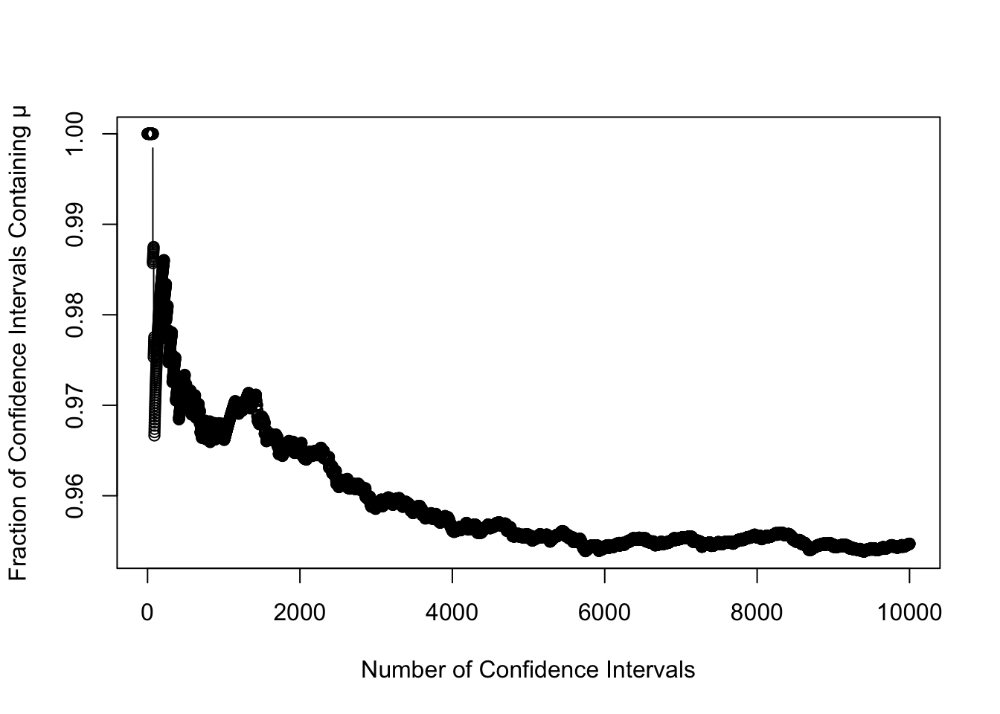
- The boss states that the confidence interval simulation the data scientist conducted is proof that the data scientist is incorrect in having 95% confidence in his/her original confidence interval, since the actual coverage is not exactly equal to 95%. What should the data scientist's response be?
- Suppose you are interested in estimating the true average running speed (in miles per hour) of Weimaraner dogs. You measure the running speed of randomly selected Weimaraners using a radar gun in a controlled environment (empty dog park). Assume that the running speed follows a normal distribution with a known standard deviation of 2.73 miles per hour. Compute the confidence intervals below. Round all answers to four decimal places and use the
qnormfunction as necessary.
- Create a 95% confidence interval for \(\mu\) if \(n=15\) and \(\bar{x}=33.7\): (, )
avg = 33.7
z = qnorm(.025,lower.tail=F)
sigma = 2.73
n=15
lower.bound = avg -z*sigma/sqrt(n)
lower.bound## [1] 32.31845## [1] 35.08155- Create a 95% confidence interval for \(\mu\) if \(n=68\) and \(\bar{x}=33.7\): (, )
- Create a 99% confidence interval for \(\mu\) if \(n=20\) and \(\bar{x}=31.2\): (, )
- Create an 86% confidence interval for \(\mu\) if \(n=45\) and \(\bar{x}=29.9\): (, )
- If you want the width of your interval in part c to be 0.40 at the most, what sample size, \(n\), should you use? Report a whole number.
Let \(a\) be the lower bound of the confidence interval and \(b\) be the upper bound of the confidence interval.
To have a confidence interval with a width of 0.4, it must be the case that \(b-a=0.4\).
\(b-a=0.4\)
\(\bar{x}+z_{.005}*\frac{\sigma}{\sqrt{n}}-(\bar{x}-z_{.005}*\frac{\sigma}{\sqrt{n}})=0.4\)
\(z_{.005}*\frac{\sigma}{\sqrt{n}}+z_{.005}*\frac{\sigma}{\sqrt{n}}=0.4\)
\(2*z_{.005}*\frac{\sigma}{\sqrt{n}}=0.4\)
\(z_{.005}*\frac{\sigma}{\sqrt{n}}=0.2\)
\(\sqrt{n}=\frac{z_{.005}*\sigma}{0.2}\)
\(n=(\frac{z_{.005}*2.73}{0.2})^2\)
\(n=1236.231\)
Round up since your sample must be a whole number and you want your width to be 0.4 at the most.
\(n=1237\)
- The head of strength and conditioning at a major university wants to estimate the true average bench press strength (in pounds) of division 1 college football players. The head of S&C conducts a study where randomly selected football players perform a single bench press rep with maximum weight. The head of S&C knows that the distribution of maximum bench press strength is normally distributed, but does not know the population standard deviation. Round all answers to four decimal places and use the
qtfunction as necessary.
- Create a 95% confidence interval for \(\mu\) if \(n=18\), \(\bar{x}=257\), and \(S=12.2\): (, )
avg = 257
dof = 18-1 #Degrees of freedom
t = qt(.025,
df=dof,
lower.tail=F)
s = 12.2
n=18
lower.bound = avg -t*s/sqrt(n)
lower.bound## [1] 250.9331## [1] 263.0669- Create a 95% confidence interval for \(\mu\) if \(n=72\), \(\bar{x}=257\), and \(S=12.2\): (, )
- Create a 99% confidence interval for \(\mu\) if \(n=18\), \(\bar{x}=257\), and \(S=12.2\): (, )
- Create a 99% confidence interval for \(\mu\) if \(n=72\), \(\bar{x}=257\), and \(S=27.8\): (, )
- The Federal Communications Commission regulates and oversees transmitters and communications facilities across the United States. Transmitters and facilities must be regularly tested to ensure that the strength of radiofrequency waves and microwave radiation emitted from these devices is not dangerous to humans. A statistician for the FCC wants to create confidence intervals for the proportion of communications devices in Los Angeles, California, whose radiofrequency wave strength exceeds that of FCC standards. To do this, the statistician takes a random sample of FCC regulated communications devices in Los Angeles and records the sample proportion of devices that are dangerous. Round your answers to four decimal places. Use the
qnormfunction as necessary.
- Create a 99% confidence interval for \(p\) if \(\hat{p}=0.11\) and \(n=124\). (, )
#Sample proportion
p.hat = .11
#Sample size
n=124
#Standard error
se = sqrt((p.hat*(1-p.hat))/n)
#z-statistic
z = qnorm(.005,
lower.tail=F)
#Lower bound
lower.bound = p.hat - z*se
lower.bound## [1] 0.0376235## [1] 0.1823765- Create a 99% confidence interval for \(p\) if \(\hat{p}=0.18\) and \(n=256\). (, )
- Create a 95% confidence interval for \(p\) if \(\hat{p}=0.11\) and \(n=124\). (, )
- Create a 95% confidence interval for \(p\) if \(\hat{p}=0.18\) and \(n=256\). (, )
- The statistician wants the width of the confidence interval made in part d. to be 0.01 at the most. What sample size, \(n\), is necessary?
Let \(a\) be the lower bound of the confidence interval and \(b\) be the upper bound of the confidence interval.
To have a confidence interval with a width of 0.01, it must be the case that \(b-a=0.01\).
\(b-a=0.01\)
\(\hat{p}+z_{.025}*\sqrt{\frac{\hat{p}(1-\hat{p})}{n}}-(\hat{p}-z_{.025}*\sqrt{\frac{\hat{p}(1-\hat{p})}{n}})=0.01\)
\(z_{.025}*\sqrt{\frac{\hat{p}(1-\hat{p})}{n}}+z_{.025}*\sqrt{\frac{\hat{p}(1-\hat{p})}{n}}=0.01\)
\(2*z_{.025}*\sqrt{\frac{\hat{p}(1-\hat{p})}{n}}=0.01\)
\(z_{.025}*\sqrt{\frac{\hat{p}(1-\hat{p})}{n}}=0.005\)
\(\frac{\hat{p}(1-\hat{p})}{n}=(\frac{.005}{z_{.025}})^2\)
\(n=\frac{\hat{p}(1-\hat{p})}{(\frac{.005}{z_{.025}})^2}\)
## [1] 22679.97\(n=22679.97\)
Round up since your sample must be a whole number and you want your width to be 0.01 at the most.
\(n=22680\)
- Suppose you are interested in estimating the true average thickness of bark (in millimeters) for maple trees in Vermont. You decide to measure the thickness of the bark from a random sample of trees, and you assume that the bark thickness follows a normal distribution with a known true standard deviation of 1.2 millimeters. Use the
qnormfunction as necessary.
- Compute an 80% confidence interval for the true average thickness of Vermont maple tree bark if the average bark thickness for the 15 trees in your sample is 2.7 mm. Round your answers to three decimal places. (, )
- Compute a 99% confidence interval for the true average thickness of Vermont maple tree bark if the average bark thickness for the 22 trees in your sample is 3.2 mm. Round your answers to three decimal places. (, )
- What sample size should you choose if you desire for the width of your 80% confidence interval from part a. to be 0.50 at the most? Report a whole number.
width=0.5 #Desired width
half.width=0.5/2
z=qnorm(.1,lower.tail=F) #z-statistic
sd = 1.2 #population sd
n = ((z*sd)/half.width)^2 #Formula for n
n #Print n, do not forget to round up ## [1] 37.84031- What sample size should you choose if you desire for the width of your 99% confidence interval from part b. to be 0.30 at the most? Report a whole number.
- A high school gym teacher purchased new ropes for the school. The new ropes are made of a modified material, and are advertised to have a higher breaking strength (in pounds) than traditional ropes. The gym teacher wants to perform an experiment to estimate the true mean breaking strength of the new ropes. The gym teacher has reason to believe that the breaking strength of the new ropes is normally distributed with \(\sigma=43.2\).
- The salesperson allows the gym teacher to randomly sample 34 ropes from the production line in the manufacturing facility. The gym teacher finds that the average breaking strength among the sampled ropes is 670.23 pounds. Compute a 95% confidence interval for the true average breaking strength of the new ropes. Use the
qnormfunction as necessary and round your answers to four decimal places.
- The 95% C.I. for \(\mu\) is: (, )
- The salesperson allows the gym teacher to randomly sample 34 ropes from the production line in the manufacturing facility. The gym teacher finds that the average breaking strength among the sampled ropes is 670.23 pounds. Compute a 95% confidence interval for the true average breaking strength of the new ropes. Use the
mean = 670.23
n = 34
sigma = 43.2
z = qnorm(.025,
lower.tail=F)
#Lower bound
lower.bound = mean-z*sigma/sqrt(n)
lower.bound## [1] 655.7091## [1] 684.7509- The gym teacher now wants to calculate a 99% confidence interval. What two values need to be changed to calculate a 99% confidence interval?
- Calculate the 99% confidence interval for the gym teacher. Round your answers to four decimal places and use
qnormas necessary.
- The new \(\alpha=\)
- The new \(z_{\frac{\alpha}{2}}\) (use the
qnormfunction inR) = - The 99% C.I. for \(\mu\) is (do not round any intermediate calculation): (, )
- Calculate the 99% confidence interval for the gym teacher. Round your answers to four decimal places and use
- A statistician working for a major newspaper is analyzing college tuition data across the country in preparation for the newspaper's annual ranking of colleges. The statistician took a random sample of 53 private colleges from across the country to estimate the average yearly (2 long semester) tuition at private US colleges with a 90% confidence interval. The sample, along with a box-plot, is given below.
## [1] 16643.286 19631.904 48019.101 22816.841 23497.372 51923.798 27735.213
## [8] 11701.466 15624.158 17626.681 40621.018 26368.013 26913.565 23279.801
## [15] 16681.898 53823.022 28252.161 8239.471 31278.241 17389.195 12914.270
## [22] 19752.050 13187.145 15299.178 16114.590 9477.287 33486.362 23782.054
## [29] 12468.136 41229.424 27261.538 19005.131 34460.287 34168.749 33216.119
## [36] 31080.010 29055.377 21355.063 18901.918 18210.698 15562.921 19851.629
## [43] 11699.505 65151.981 40294.933 12562.176 18007.751 17442.627 32532.100
## [50] 21127.176 25000.704 21714.307 21559.348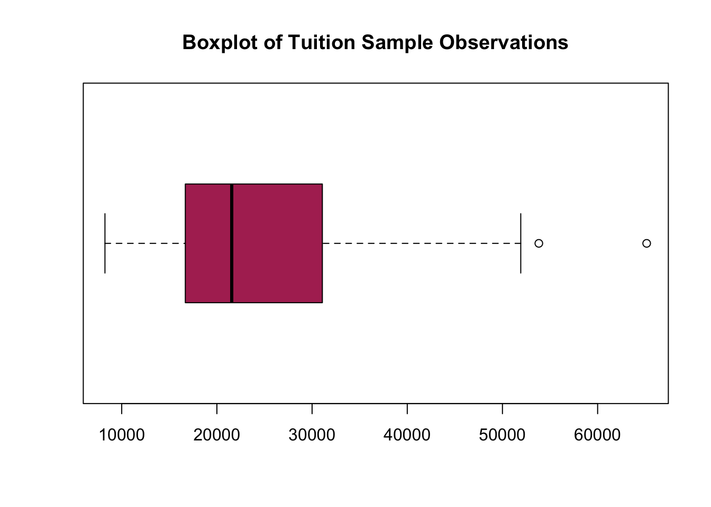
- Which of the following equations should be used to construct a 90% confidence interval?
- What value of \(\alpha\) is needed to construct the confidence interval?
- What value of Z/t should be used to create the confidence interval? Use the
qnormorqtfunction and round your answer to 4 decimal places. .
- Compute a 90% confidence interval for the average yearly (2 long semester) tuition at private US colleges. Do not round any intermediate calculations, use
qnormorqtas necessary, and round your answer to two decimal places. (, )
- Compute a 90% confidence interval for the average yearly (2 long semester) tuition at private US colleges. Do not round any intermediate calculations, use
#Create vector of observations
obs = c(16643.286,
19631.904,
48019.101,
22816.841,
23497.372,
51923.798,
27735.213,
11701.466,
15624.158,
17626.681,
40621.018,
26368.013,
26913.565,
23279.801,
16681.898,
53823.022,
28252.161,
8239.471,
31278.241,
17389.195,
12914.270,
19752.050,
13187.145,
15299.178,
16114.590,
9477.287,
33486.362,
23782.054,
12468.136,
41229.424,
27261.538,
19005.131,
34460.287,
34168.749,
33216.119,
31080.010,
29055.377,
21355.063,
18901.918,
18210.698,
15562.921,
19851.629,
11699.505,
65151.981,
40294.933,
12562.176,
18007.751,
17442.627,
32532.100,
21127.176,
25000.704,
21714.307,
21559.348)
#Compute sample mean
sample.mean = mean(obs)
#Sample size
n=53
#Compute t-statistic
t = qt(.05,
df=n-1,
lower.tail=F)
#Compute sample standard deviation
s = sd(obs)
#Compute lower bound
lower.bound = sample.mean - t*s/sqrt(n)
lower.bound## [1] 22072.08## [1] 27550.51- A brand of laundry detergent states that their bottles contain 1 liter of detergent. The Federal Trade Commission is opening an investigation into whether the true average amount of laundry detergent that the brand puts in their bottles is less than what is stated. A statistician for the FTC selected a random sample of 40 bottles of this brand's detergent from store shelves across the USA. The statistician then measured the liters of detergent in each bottle. The sample results are shown below. The statistician wants to make a 99% confidence interval for the average amount of detergent in this brand's bottles.
## [1] 0.9888531 0.9954070 1.0316652 1.0014112 1.0025891 1.0348964 1.0092609
## [8] 0.9750162 0.9863569 0.9911264 1.0247838 1.0072222 1.0080476 1.0022161
## [15] 0.9889447 1.0363846 1.0100067 0.9614311 1.0141260 0.9905887 0.9788700
## [22] 0.9956500 0.9796890 0.9855279 0.9875770 0.9668288 1.0168969 1.0030722
## [29] 0.9774944 1.0253934 1.0085658 0.9941159 1.0180637 1.0177178 1.0165674
## [36] 1.0138681 1.0111399 0.9987625 0.9938994 0.9924195- Which of the following equations should be used in the construction of a 99% confidence interval?
- What value of \(\alpha\) is needed to construct the confidence interval? .
- What value of Z/t should be used to create the confidence interval? Use the
qnormorqtfunction and round your answer to 4 decimal places. .
- Compute a 99% confidence interval for the true average amount of detergent in this brand's bottles. Do not round any intermediate calculations, use
qnormorqtas necessary, and round your answers to four decimal places. (, )
- Compute a 99% confidence interval for the true average amount of detergent in this brand's bottles. Do not round any intermediate calculations, use
#Create vector of observations
obs = c(0.9888531,
0.9954070,
1.0316652,
1.0014112,
1.0025891,
1.0348964,
1.0092609,
0.9750162,
0.9863569,
0.9911264,
1.0247838,
1.0072222,
1.0080476,
1.0022161,
0.9889447,
1.0363846,
1.0100067,
0.9614311,
1.0141260,
0.9905887,
0.9788700,
0.9956500,
0.9796890,
0.9855279,
0.9875770,
0.9668288,
1.0168969,
1.0030722,
0.9774944,
1.0253934,
1.0085658,
0.9941159,
1.0180637,
1.0177178,
1.0165674,
1.0138681,
1.0111399,
0.9987625,
0.9938994,
0.9924195)
#Compute sample mean
sample.mean = mean(obs)
#Sample size
n=40
#Compute t-statistic
t = qt(.005,
df=n-1,
lower.tail=F)
#Compute sample standard deviation
s = sd(obs)
#Compute lower bound
lower.bound = sample.mean - t*s/sqrt(n)
lower.bound## [1] 0.9933698## [1] 1.008753- From the confidence interval you calculated in part c., what should the statistician conclude about the amount of detergent in this brand's bottles?
- The American Wedding Study (AWS) conducted a survey of engaged couples to gather information on their wedding budgets. Last year, a sample of 1500 engaged couples were surveyed, and they were asked to give their wedding budget in dollars. The average budget reported by the couples was 26,500 dollars. Assume that the population standard deviation of wedding budgets is 4500 dollars and that the distribution of wedding budgets is normal. Answer the questions below with 98% confidence.
- Which of the following equations should be used in the construction of a 98% confidence interval for the average wedding budget of engaged couples?
- What level of significance, \(\alpha\), should you use to create a 98% confidence interval?
- What value of Z/t should you use to create a 98% confidence interval? Use the
qnormorqtfunction and round your answer to 4 decimal places.
- Compute a 98% confidence interval for the average wedding planning budget of engaged couples. Round your answer to one decimal place. Do not round any intermediate calculations and use
qnormas necessary. The 98% confidence interval is: (, )
- Compute a 98% confidence interval for the average wedding planning budget of engaged couples. Round your answer to one decimal place. Do not round any intermediate calculations and use
#Sample mean
sample.mean = 26500
#Sample size
n=1500
#Compute z-statistic
z = qnorm(.01,
lower.tail=F)
#Standard deviation
sigma = 4500
#Compute lower bound
lower.bound = sample.mean - z*sigma/sqrt(n)
lower.bound## [1] 26229.7## [1] 26770.3- One of your friends just got engaged and states that the average wedding planning budget is 22,000 dollars. From the confidence interval you calculated in part c., what can you conclude about your friend's statement?
- A meteorologist in College Station, Texas, wants to know whether the average temperature of asphalt in August is hot enough to fry an egg. To fry an egg, the pan must be at least 160 degrees Fahrenheit. The meteorologist knows that asphalt temperature readings in August are normally distributed, but does not know what the standard deviation is. The meteorologist took a simple random sample of 18 asphalt temperature readings for the month of August from the past 100 years of weather data. The meteorologist found that \(\bar{x}=156.2\) and \(S=42.1\).
- Which of the following equations should be used to create a 95% confidence interval for the true average temperature of asphalt in August in College Station, Texas?
- What level of significance, \(\alpha\), should you use to create a 95% confidence interval?
- What value of Z/t should the meteorologist use to create a 95% confidence interval? Use the
qnormorqtfunction and round your answer to 4 decimal places.
- What is a 95% confidence interval for the true average temperature of asphalt in August in College Station, Texas? (, )
#Sample mean
sample.mean = 156.2
#Sample size
n=18
#Compute t-statistic
t = qt(.025,
df=n-1,
lower.tail=F)
#Standard deviation
s = 42.1
#Compute lower bound
lower.bound = sample.mean - t*s/sqrt(n)
lower.bound## [1] 135.2642## [1] 177.1358- A College Station resident is watching the news and hears this confidence interval. What can they conclude?
- A STAT 211 professor wants to estimate the true average score that TAMU students earn on their first STAT 211 midterm. The professor took a random sample of 34 students who completed STAT 211 in the past ten years. The professor knows that the distribution of midterm I exam scores is normal, but does not know the population standard deviation. The professor knows the following quantities: \(t_{\alpha=.10,df=33}=1.3077\), \(t_{\alpha=.05,df=33}=1.6924\), \(t_{\alpha=.025,df=33}=2.0345\), and \(t_{\alpha=.005,df=33}=2.7333\).
- Which formula should the professor use to construct a 95% confidence interval for the true average score that TAMU students earn on their first midterm exam?
- Which formula should the professor use to construct a 90% confidence interval for the true average score that TAMU students earn on their first midterm exam?
- Which formula should the professor use to construct a 99% confidence interval for the true average score that TAMU students earn on their first midterm exam?
- Which formula should the professor use to construct a 80% confidence interval for the true average score that TAMU students earn on their first midterm exam?
- The professor analyzed the sample and found that \(\bar{x}=84.3\) and \(S=14.2\). Compute each of the confidence intervals for the true average score that TAMU students earn on their first midterm exam. Use the \(t_{\frac{\alpha}{2},df=33}\) values given above in your calculations. Round your answers to four decimal places.
- The professor analyzed the sample and found that \(\bar{x}=84.3\) and \(S=14.2\). Compute each of the confidence intervals for the true average score that TAMU students earn on their first midterm exam. Use the \(t_{\frac{\alpha}{2},df=33}\) values given above in your calculations. Round your answers to four decimal places.
- The 80% confidence interval is: (, )
- The 90% confidence interval is: (, )
- The 95% confidence interval is: (, )
- The 99% confidence interval is: (, )
- In May 2020, a study was conducted in a suburban area to investigate smartphone usage among teenagers (ages 13-18) during the Coronavirus pandemic. The researchers collected data on daily smartphone use during the pandemic (in minutes) for each teenager in a sample of 200 teenagers. The results revealed a mean of 222 minutes with a sample standard deviation of 45.8 minutes.
- Which of the following equations should be used to create a 95% confidence interval for the true average number of minutes that a teenager used their smartphone per day during the pandemic?
- What level of significance, \(\alpha\), should the researchers use to create a 78% confidence interval?
- What value of Z/t should the researchers use to create a 78% confidence interval? Use the
qnormorqtfunction and round your answer to 4 decimal places.
- Construct a 78% confidence interval for the true average number of minutes per day that a teenager used their phone during the Coronavirus pandemic. Round your answer to four decimal places and use
qnormorqtas necessary. (, )
- Construct a 78% confidence interval for the true average number of minutes per day that a teenager used their phone during the Coronavirus pandemic. Round your answer to four decimal places and use
#Sample mean
sample.mean = 222
#Sample size
n=200
#Compute z-statistic
t = qt(.11,
df=200-1,
lower.tail=F)
#Standard deviation
s = 45.8
#Compute lower bound
lower.bound = sample.mean - t*s/sqrt(n)
lower.bound## [1] 218.0153## [1] 225.9847- Select the proper interpretation of this interval.
- If 45.8 was the value of σ instead of S, how would the interval change?
- A school district in El Paso, Texas, wants to estimate the true proportion of people in El Paso that support a bond that will be voted on in the next local election. The school district randomly sampled 120 voters across El Paso. 45 respondents supported the bond. Answer the following questions to help the school board.
- Which of the following equations should be used to construct a 90% confidence interval for the true proportion of El Paso residents that support the proposed bond?
- What is the estimated proportion, \(\hat{p}\)? Round your answer to three decimal places.
- Compute a 90% confidence interval for \(p\)? Use
qnormas necessary and round your answer to four decimal places. (, )
- Compute a 90% confidence interval for \(p\)? Use
#Sample proportion
sample.prop = 0.375
#Sample size
n=120
#Compute z-statistic
z = qnorm(.05,
lower.tail=F)
#Standard error
s = sqrt(((0.375)*(1-.375))/n)
#Compute lower bound
lower.bound = sample.prop - z*s
lower.bound## [1] 0.3023071## [1] 0.4476929- Based on the confidence interval you constructed above, which of the following is a valid conclusion?
- What sample size would be necessary for the width of the 90% confidence interval for \(p\) to be 0.02 at the most ? Use
qnormas necessary and report a whole number.
- What sample size would be necessary for the width of the 90% confidence interval for \(p\) to be 0.02 at the most ? Use
Let \(a\) be the lower bound of the confidence interval and \(b\) be the upper bound of the confidence interval.
To have a confidence interval with a width of 0.02, it must be the case that \(b-a=0.02\).
\(b-a=0.02\)
\(\hat{p}+z_{.05}*\sqrt{\frac{\hat{p}(1-\hat{p})}{n}}-(\hat{p}-z_{.05}*\sqrt{\frac{\hat{p}(1-\hat{p})}{n}})=0.02\)
\(z_{.05}*\sqrt{\frac{\hat{p}(1-\hat{p})}{n}}+z_{.05}*\sqrt{\frac{\hat{p}(1-\hat{p})}{n}}=0.02\)
\(2*z_{.05}*\sqrt{\frac{\hat{p}(1-\hat{p})}{n}}=0.02\)
\(z_{.05}*\sqrt{\frac{\hat{p}(1-\hat{p})}{n}}=0.01\)
\(\frac{\hat{p}(1-\hat{p})}{n}=(\frac{.01}{z_{.05}})^2\)
\(n=\frac{\hat{p}(1-\hat{p})}{(\frac{.01}{z_{.05}})^2}\)
## [1] 6341.117\(n=6341.117\)
Round up since your sample must be a whole number and you want your width to be 0.02 at the most.
\(n=6342\)
- For each of the following scenarios, state whether it is most appropriate to create a prediction interval or confidence interval
- A history professor wants to estimate the true proportion of students who find introductory history courses offered at the professor's university to be applicable to their major.
- A pediatrician wants to estimate the weight, in pounds, of the next patient that visits the doctor's office.
- A food scientist wants to estimate the amount of riboflavin (Vitamin B2) present in the next bag of processed enriched cereal at a large cereal manufacturing facility.
- A biostatistician wants to estimate the average blood pressure, in millimeters of mercury, for the treatment group in a clinical trial before the trial starts.
- A police officer wants to estimate the speed of the next car that passes by the cop's radar detector.
- A teaching assistant for STAT 211 and STAT 212 at Texas A&M University decided to write down statements that statistics students commonly make about prediction intervals. Decide whether each of the following statements about prediction intervals is valid or invalid.
- A prediction interval will always be wider than a confidence interval, even if other factors like the significance level and sample size are different.
- A prediction interval provides a range of values that may capture a future realization of a random variable.
- As the sample size increases, the margin of error of the prediction interval will converge to zero.
- If a (1-0.05)*100% prediction interval for the next realization of a random variable is (0.75, 1.25), there is a 95% probability that the next realization is within the bounds of the prediction interval.
- Increasing the level of confidence for a prediction interval will increase the width of the interval.
- If the sample size, sample standard deviation, and confidence level are the same, the prediction interval will be wider than the confidence interval. The increased width reflects the prediction interval taking into account the variation of the mean and the variation of values around the mean.
- In the American stock market, the "Triple Witching" refers to the four days of the year in which stock options, index futures, and index options all expire on the same day. On the day before the Triple Witching, a statistician at a bulge bracket bank was asked to create a 95% prediction interval for the performance of the stock market on the Triple Witching day. The statistician randomly selected 50 of the last 200 Triple Witching days and knows that the returns are normally distributed. The sample is shown below.
## [1] -1.7970894 1.7371009 20.8781790 4.9544398 5.5833788 22.5511954
## [7] 9.1318034 -9.3361552 -3.1493255 -0.5685831 17.2976752 8.0500079
## [13] 8.4882545 5.3843051 -1.7475001 23.3199706 9.5270001 -16.8428036
## [19] 11.7045081 -0.8588681 -7.2257137 1.8676684 -6.7782476 -3.5991362
## [25] -2.4879202 -13.8476184 13.1643214 5.8410924 -7.9780652 17.6158197
## [31] 8.7631672 1.0427351 13.7778446 13.5960283 12.9909176 11.5684507
## [37] 10.1269189 3.5375447 0.9261995 0.1289603 -3.2333647 1.9752851
## [43] -9.3397410 27.4078288 17.1251934 -7.8172618 -0.1108677 -0.7932123
## [49] 12.5456268 3.3079510- Report \(\bar{x}\), \(s\), and the t-value that statistician should use in the construction of the interval. Use
qtas necessary and round your answers to four decimal places.
- \(\bar{x}=\)
- \(s=\)
- \(t_{\frac{0.05}{2}, 49}=\)
- Report \(\bar{x}\), \(s\), and the t-value that statistician should use in the construction of the interval. Use
#Create vector of returns
returns = c(-1.7970894,
1.7371009,
20.8781790,
4.9544398,
5.5833788,
22.5511954,
9.1318034,
-9.3361552,
-3.1493255,
-0.5685831,
17.2976752,
8.0500079,
8.4882545,
5.3843051,
-1.7475001,
23.3199706,
9.5270001,
-16.8428036,
11.7045081,
-0.8588681,
-7.2257137,
1.8676684,
-6.7782476,
-3.5991362,
-2.4879202,
-13.8476184,
13.1643214,
5.8410924,
-7.9780652,
17.6158197,
8.7631672,
1.0427351,
13.7778446,
13.5960283,
12.9909176,
11.5684507,
10.1269189,
3.5375447,
0.9261995,
0.1289603,
-3.2333647,
1.9752851,
-9.3397410,
27.4078288,
17.1251934,
-7.8172618,
-0.1108677,
-0.7932123,
12.5456268,
3.3079510)
#Compute sample mean
sample.mean = mean(returns)
sample.mean## [1] 4.568118## [1] 9.906809## [1] 2.009575- Report a 95% prediction interval for the stock market's performance during the next Triple Witching. Use
qtas necessary, round your answer to four decimal places, and do not round the t-value. (, )
- Report a 95% prediction interval for the stock market's performance during the next Triple Witching. Use
The prediction interval for a single observation is given by: \(\bar{x} \pm t_{.025,49}*s\sqrt{1 + \frac{1}{n}}\)
#Create vector of returns
returns = c(-1.7970894,
1.7371009,
20.8781790,
4.9544398,
5.5833788,
22.5511954,
9.1318034,
-9.3361552,
-3.1493255,
-0.5685831,
17.2976752,
8.0500079,
8.4882545,
5.3843051,
-1.7475001,
23.3199706,
9.5270001,
-16.8428036,
11.7045081,
-0.8588681,
-7.2257137,
1.8676684,
-6.7782476,
-3.5991362,
-2.4879202,
-13.8476184,
13.1643214,
5.8410924,
-7.9780652,
17.6158197,
8.7631672,
1.0427351,
13.7778446,
13.5960283,
12.9909176,
11.5684507,
10.1269189,
3.5375447,
0.9261995,
0.1289603,
-3.2333647,
1.9752851,
-9.3397410,
27.4078288,
17.1251934,
-7.8172618,
-0.1108677,
-0.7932123,
12.5456268,
3.3079510)
#Compute sample mean
sample.mean = mean(returns)
sample.mean## [1] 4.568118## [1] 9.906809#Get t value
t = qt(.025,
df=50-1,
lower.tail=F)
#Compute prediction interval
lower.bound = sample.mean - t*sample.sd*sqrt(1+1/50)
lower.bound## [1] -15.53846## [1] 24.67469- Now report a 95% confidence interval for the stock market's average performance during the Triple Witching. Use
qtas necessary, give your answers to four decimal places, and do not round the t-value. (, )
- Now report a 95% confidence interval for the stock market's average performance during the Triple Witching. Use
#Create vector of returns
returns = c(-1.7970894,
1.7371009,
20.8781790,
4.9544398,
5.5833788,
22.5511954,
9.1318034,
-9.3361552,
-3.1493255,
-0.5685831,
17.2976752,
8.0500079,
8.4882545,
5.3843051,
-1.7475001,
23.3199706,
9.5270001,
-16.8428036,
11.7045081,
-0.8588681,
-7.2257137,
1.8676684,
-6.7782476,
-3.5991362,
-2.4879202,
-13.8476184,
13.1643214,
5.8410924,
-7.9780652,
17.6158197,
8.7631672,
1.0427351,
13.7778446,
13.5960283,
12.9909176,
11.5684507,
10.1269189,
3.5375447,
0.9261995,
0.1289603,
-3.2333647,
1.9752851,
-9.3397410,
27.4078288,
17.1251934,
-7.8172618,
-0.1108677,
-0.7932123,
12.5456268,
3.3079510)
#Compute sample mean
sample.mean = mean(returns)
sample.mean## [1] 4.568118## [1] 9.906809#Get t value
t = qt(.025,
df=50-1,
lower.tail=F)
#Compute prediction interval
lower.bound = sample.mean - t*sample.sd/sqrt(50)
lower.bound## [1] 1.752634## [1] 7.383602- Which of the following is a valid interpretation of the 95% prediction interval you created?
18.9 Hypothesis Testing
- State whether each of the following pairs of null and alternative hypotheses are valid or invalid.
- \(H_0\): \(\mu = 23.2\), \(H_a\): \(\mu \neq 23.2\)
- \(H_0\): \(\beta = 10\), \(H_a\): \(\beta \ge 23.2\)
- \(H_0\): \(\sigma \neq 52.1\), \(H_a\): \(\sigma = 23.2\)
- \(H_0\): \(\mu_1 - \mu_2 = 0\), \(H_a\): \(\mu_1 - \mu_2 \neq 19\)
- \(H_0\): \(\bar{x} = 115\), \(H_a\): \(\bar{x} \neq 115\)
This pair of hypotheses is invalid because hypothesis tests are done on population parameters, not on sample statistics. \(\bar{x}\) is a sample statistic.
- \(H_0\): \(\sigma = 110\), \(H_a\): \(\sigma \neq 50\)
- \(H_0\): \(p_2 - p_1 = 0\), \(H_a\): \(p_2 - p_1 > 0\)
- For each scenario, identify the null hypothesis (\(H_0\)) and the alternative hypothesis (\(H_a\))
- A pharmaceutical company wants to test whether its new diabetes drug is effective for weight loss. The principal investigator for the company believes that, on average, people on the drug lose 5.7 pounds within the first six months. He takes a random sample of 34 patients on the drug and finds that they lose an average of 5.2 pounds within the first six months, with a standard deviation of 2.6 pounds. Test whether the principal investigator's belief is correct.
- A high school baseball coach believes that an average high school baseball pitcher can throw more than 78.6 miles per hour. The coach took a sample of 55 high school pitchers from across his district and found that their average pitch speed is 79.2 miles per hour with a standard deviation of 2.3. The coach wants to test whether his belief is correct.
- A nutritionist tells her patient that the average amount of sugar in a specific protein bar is greater than 26 grams. Her patient wants to test this by sampling protein bars and estimating the number of grams of sugar in each bar through a formula based on bar weight. The patient found that the average amount of sugar in a bar in her sample was 24 grams. Is there enough evidence for the patient to prove the nutritionist wrong?
- A sample of 300 students enrolled in STAT 211 at Texas A&M University was taken to analyze how much time students spend doing homework. The average time spent on homework by students in the sample was 7.2 hours per week, with a standard deviation of 2.9 hours. Texas A&M University policy states that a student enrolled in a 3 credit hour course should do approximately 9 hours of homework per week on average. Test whether the STAT 211 students are doing less homework per week than they are supposed to.
- Below are four plots, each with a rejection region. Match each plot's rejection region to the corresponding test type.
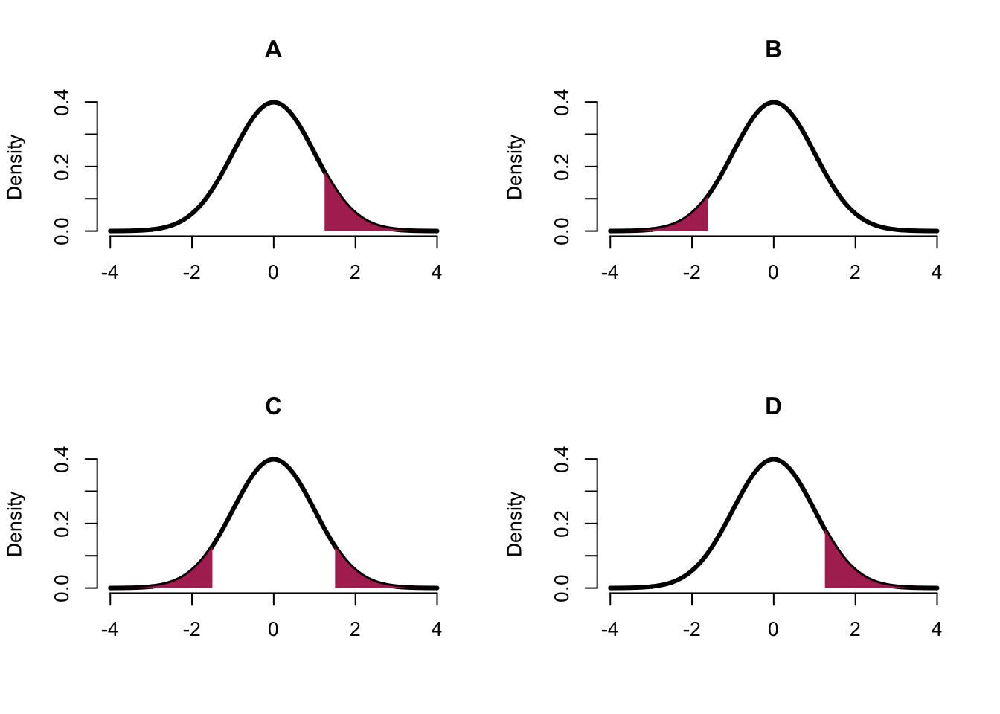
- A statistician for the NBA finds an old
Rfile that states that the distance from the hoop for made three point shots is normally distributed with a mean of 25 feet. The statistician takes a new sample of 30 made three point shots from last season and finds that the average distance from the hoop is 24.2 feet. The statistician knows that \(\sigma=1.3\), and wants to test the following hypotheses with 95% confidence: \(H_0: \mu = 25\), \(H_a: \mu > 25\).
- Compute the test statistic, \(z\). Round your answer to four decimal places.
#Sample mean
x.bar = 24.2
#Hypothesized mean
mu0 = 25
#Known population standard deviation
sigma=1.3
#Sample size
n=30
#Calculate Z
z = (x.bar-mu0)/(sigma/sqrt(n))
z## [1] -3.3706- Compute the p-value for this test statistic using the
pnormfunction in R. Round your answer to four decimal places
- Compute the p-value for this test statistic using the
- Is the p-value less than \(\alpha\)?
- Select the correct conclusion.
- Answer the following conception questions about errors and hypothesis testing.
- Type I error is:
- The hypothesis testing procedure controls the risk of a ____ by ensuring that the risk stays below a pre-determined threshold called α.
- Select the best description of a Type II error, β.
- Suppose a statistician at a large bank is performing a two-sided hypothesis test in which the population variance is known. The statistician obtains a p-value of 0.0001, and the rejection region starts with the quantile 2.575829 on the right tail and -2.575829 on the left tail. Correctly choose the distribution used by the statistician, the α used by the statistician, and what the statistician's conclusion should be.
The population standard deviation is known, so the statistician used a standard normal distribution since \(Z=\frac{\bar{x}-\mu}{\frac{\sigma}{\sqrt{n}}}\).
Use R to find the level of significance, \(\alpha\).
## [1] 0.01000001- Suppose a data scientist at an energy company wants to test whether natural gas from one supplier is significantly higher than the limit on natural gas prices set by the US government. The data scientist performs a hypothesis test using a sample of 67 natural gas purchases, but does not know the population variance. The data scientist obtains a p-value of 0.04, and the rejection region is given by the quantile 2.384186. Correctly choose the distribution used by the data scientist, the α used by the data scientist, and what the data scientist's conclusion should be.
The population standard deviation is not known, so the statistician used a t distribution since \(t=\frac{\bar{x}-\mu}{\frac{S}{\sqrt{n}}}\).
Use R to find the significance level, \(\alpha\).
#Do not multiply by 2 because it is a one-sided test
alpha = (1-pt(2.384186,
df=67-1))
round(alpha,
2)## [1] 0.01- A professional consultant working on a project has been accused of breaching a non-solicitation agreement with a previous employer. You have been asked to analyze the consultant's work and work history to see if the consultant broke the non-solicitation provision. If the consultant is accused of breaching the agreement, he/she will have to pay a fine of $5,000 and resign from their current position.
- What are your null and alternative hypotheses?
- What is the meaning of a Type I error in this scenario?
- What is the meaning of a Type II error in this scenario?
- Which of the following is a reason that you might choose a Type I error rate, α, that is not 0.05 when performing your test?
- A sports performance company is testing whether its new electrolyte drink is capable of decreasing time to exhaustion among Olympic swimmers. The company randomly selected 30 Olympic swimmers from across the world and had them continuously swim until they got tired. Each swimmer's time to exhaustion, in minutes, was recorded. It is assumed among the company's R&D team that the average time to exhaustion among Olympic swimmers is 25 minutes. The company is testing: \(H_0\): \(\mu=25\) vs. \(H_a\): \(\mu \neq 25\). For each p-value and significance level pair below, state whether the observed p-value would cause the sports performance company to reject the null hypothesis at the corresponding significance level.
- p-value= 0.01, \(\alpha\)= 0.05
- p-value= 0.10, \(\alpha\)= 0.08
- p-value= 0.25, \(\alpha\)= 0.05
- p-value= 0.001, \(\alpha\)= 0.01
- p-value= 0.01, \(\alpha\)= 0.002
- p-value= 0.19, \(\alpha\)= 0.12
- A coffee company wants to make the strongest ground coffee on the market. To be the strongest coffee, the coffee must contain more than an average of 140 mg of caffeine per cup. The coffee company's quality control team will test the following hypotheses: \(H_0\): \(\mu=140\), \(H_a\): \(\mu > 140\). Use the
pnormfunction inRto calculate the p-value for each of the following test statistic values. Round your answers to four decimal places.
- \(z= 2.023\)
- \(z= 1.853\)
- \(z= 0.581\)
- \(z= -1.025\)
#To find the p-value, calculate the #probability of getting a test statistic as #or more extreme than is reported.
#Since this is a right tailed test, we are not multiplying by 2.
#A
round(pnorm(2.023,
lower.tail=F),
4)## [1] 0.0215## [1] 0.0319## [1] 0.2806## [1] 0.8473- A pollster is conducting a poll to try to predict the winner of the next presidential election. There are two presidential candidates: candidate A and candidate B. Let \(A\) represent the number of people in the sample that support candidate A. The pollster took a simple random sample of 47 individuals and wants to test the following hypotheses: \(H_0: p_A = 0.6\), \(H_a: p_A \neq 0.6\).
- Which of the following rejection regions, stated in terms of the random variable A, should the pollster use to conduct the test?
The test is two-tailed, so you should have a rejection region on both tails.
- Describe what the Type I error, \(\alpha\), and the Type II error, \(\beta\), are in this problem.
The Type I error is the probability of rejecting the null hypothesis, given that the null hypothesis is true. In this case, it would be saying that \(p_A\) is not equal to 0.6, even though the proportion is actually true.
The Type II error is the probability of failing to reject the null hypothesis when the null hypothesis is false. In this case, it would be saying that you cannot reject that \(p_A\) is equal to 0.6, even though \(p_A\) is not actually equal to 0.6.
- Use the probability distribution of \(A\) under the null hypothesis and the rejection region you chose in part a. to compute the type I error rate of the test, \(\alpha\). Round your answer to four decimal places.
- \(\alpha=\)
The random variable \(A\), follows a binomial distribution. Use the pbinom function in R to calculate the answer.
#Under the null hypothesis, the probability
#of A being in the rejection region and a Type I error being made is:
#The pbinom function calculates P(X>x) when #lower.tail=F and P(X≤x) when lower.tail=T
alpha=pbinom(q=19,
size=47,
p=0.6)+
pbinom(q=40,
size=47,
p=0.6,
lower.tail=F)
round(alpha,
4)## [1] 0.0053- Compute the Type II error rate of the pollster's test for each of the following true values of \(p_A\). Round your answers to four decimal places.
- \(p_A=0.5\), \(\beta=\)
- \(p_A=0.65\), \(\beta=\)
- \(p_A=0.80\), \(\beta=\)
- \(p_A=0.30\), \(\beta=\)
#For each of the following true values of p,
#we must calculate the probability of A
#not being in the rejection region
#and a Type II error being made
#When p=0.3
beta=pbinom(q=40,
size=47,
prob=0.3,
lower.tail=T)-
pbinom(q=19,
size=47,
prob=0.3,
lower.tail=T)
round(beta,
4)## [1] 0.0458- The pollster finds that of the 47 people surveyed, 27 support candidate A. Using the rejection region you chose in part a., what can the pollster conclude?
- The hockey stick flex rating indicates the amount of force, in pounds, required to bend a hockey stick by one inch. A hockey stick manufacturer claims that their new hockey sticks--made of composite and carbon fiber material--are easier to flex than conventional hockey sticks. The NHL will only allow these hockey sticks to be used in games if there is strong evidence that the average flex rating is less than 78. Assume that the flex rating of hockey sticks from this manufacturer follows a normal distribution with \(\sigma=8.5\).
- What null and alternative hypotheses should be used to conduct this test?
- A statistician at the NHL took a simple random sample of 15 hockey sticks produced by the manufacturer and recorded their flex rating. The statistician will reject \(H_0\) if \(\bar{x} \le 74\). What is the value of the standardized test statistic corresponding to \(\bar{x} = 74\)? Round your answer to four decimal places.
- \(z=\)
#Null hypothesis
H0 = 78
#Sample mean that starts rejection region
x.bar = 74
#Standard error
st.error = 8.5/sqrt(15)
Z = (x.bar-H0)/st.error
round(Z,4)## [1] -1.8226- What is the probability of a type I error, \(\alpha\), using the rejection region described in part b.? Round your answer to four decimal places and use the
pnormfunction inR.
- What is the probability of a type I error, \(\alpha\), using the rejection region described in part b.? Round your answer to four decimal places and use the
- Assume that the true average strength rating, \(\mu\), is equal to 73. What is the probability that the statistician will fail to reject \(H_0\), even though \(H_0\) is false (i.e., type II error rate). Use the
pnormfunction inRand round your answer to four decimal places.
- Assume that the true average strength rating, \(\mu\), is equal to 73. What is the probability that the statistician will fail to reject \(H_0\), even though \(H_0\) is false (i.e., type II error rate). Use the
- The statistician now wants a type I error rate, \(\alpha\), of 0.01. What should the new value of \(\bar{x}\) be such that values below \(\bar{x}\) result in a rejection of the null hypothesis? Use the
qnormfunction inRand round your answer to four decimal places.
- Reject \(H_0\) when \(\bar{x} \le\)
- How will this impact the Type II error rate in part d.?
- The statistician now wants a type I error rate, \(\alpha\), of 0.01. What should the new value of \(\bar{x}\) be such that values below \(\bar{x}\) result in a rejection of the null hypothesis? Use the
#Get the Z value that corresponds to a level of significance of 0.01.
z = qnorm(0.01)
#Now multiply Z by the standard error of #x-bar, and add the mean of x-bar under the #null hypothesis.
H0 = 78
st.error = 8.5/sqrt(15)
rej = z*st.error + H0
round(rej,4)## [1] 72.8944The Type I error rate, \(\alpha\), and the Type II error rate, \(\beta\), have an inverse relationship.
- An automotive company is thinking of implementing a newly designed engine component in its upcoming car. The component is said to improve both speed and fuel efficiency. The head of sales at the company wants to sell the vehicle with an 80,000 mile warranty on the part, but can only do so if it can be shown conclusively that the part lasts for more than 80,000 miles on average. The head of sales took a random sample of 20 car components and ran the components on a machine until they failed. The miles until failure are given below:
## [1] 78973.43 80757.04 90417.02 82380.75 82698.15 91261.35 84488.95 75168.67
## [9] 78290.99 79593.43 88610.04 83942.99 84164.17 82597.69 78998.46 91649.33
## [17] 84688.39 71380.27 85787.32 79446.93- What pair of hypotheses does the head of sales want to test?
- Assume that the miles until failure for this component is normally distributed with a standard deviation of 5400. Use the sample data to calculate \(\bar{x}\) and the test statistic for the hypothesis test.
- \(\bar{x}=\)
- \(z=\) (round your answer to four decimal places)
- Use the test statistic you found in part b. to calculate the p-value. Use the
pnormfunction inRand round your answer to three decimal places.
- p-value:
- Use the test statistic you found in part b. to calculate the p-value. Use the
- The head of sales wants to be 95% confident that the part has a lifespan greater than 80,000 miles before insuring the part with a warranty. Given the test statistic and p-value you found in parts b. and c., should the head of sales implement a warranty for the engine part?
- Use the
qnormfunction in R to calculate the critical value, \(z_{0.05}\), associated with the rejection region for the test. Then, determine the probability of computing a Type II error, \(\beta\), given that the true average lifespan of the component is 82,000 miles. Round your answers to four decimal places.
- \(z_{0.05}=\)
- \(\beta(\mu = 82000)=\)
- Use the
#Part 1
crit.value = round(qnorm(.05,
lower.tail=T),
4)
#Part 2
##Under the assumption that the null
##hypothesis is true, the null will be
##rejected if the sample mean is greater than:
crit2 = 80000 + qnorm(.95)*(5400/sqrt(20))
crit2## [1] 81986.12##The probability of getting a sample mean
##smaller than this value when the true mean
##is 82000 is:
beta = pnorm(crit2,
mean=82000,
sd=(5400/sqrt(20)))
beta## [1] 0.495415- A barista at a local coffee shop wants to test whether a new procedure for brewing espresso is faster than the currently used procedure. The barista randomly sampled 55 brew times using the new procedure and found \(\bar{x}=33.37\) seconds and \(S=6.04\) seconds. The barista will only convert to the new method if it can be shown that the new method's average brew time is less than 32 seconds. The population standard deviation is unknown.
- Can we assume that the distribution of the sample mean follows a normal distribution?
- What null and alternative hypotheses should the barista test?
- Compute the test statistic and p-value to perform this test. Use the
ptfunction inRto calculate the p-value. Round your answers to four decimal places.
- \(t =\)
- p-value =
- Compute the test statistic and p-value to perform this test. Use the
#Sample mean
x.bar = 33.37
#Sample standard deviation
s=6.04
#Null hypothesis
H0 = 32
#Compute test statistic
t=(x.bar-32)/(s/sqrt(55))
t## [1] 1.682151## [1] 0.9508476- The barista is using a significance level, \(\alpha\), of 0.10.
- What critical value should the barista use for this test?
- What value of \(\bar{x}\) is needed to get this critical value (i.e., what value of \(\bar{x}\) starts the rejection region for this test)?
#Sample mean
x.bar = 33.37
#Sample standard deviation
s=6.04
#Null hypothesis
H0 = 32
#Significance level
alpha=0.10
#Critical value
crit.value = qt(alpha,
df=55-1)
crit.value## [1] -1.297426#To get this critical value, the sample
#mean must be
sample.mean = H0+crit.value*(s/sqrt(55))
sample.mean## [1] 30.94333- An electric car battery manufacturer produces large lithium-ion batteries. An electric car company wants to use these batteries in their cars, but only if they can be sure that the average range of the batteries is greater than 380 miles. To test this, the car company asked the manufacturer for 15 randomly selected batteries and tested the range of each battery. The electric car company has reason to believe that the distribution of the range of lithium-ion batteries is normal, but does not know the population standard deviation. The results from the sample are below.
## [1] 379.2831 382.6522 400.8988 385.7192 386.3187 402.4937 389.7013 372.0964
## [9] 377.9941 380.4542 397.4856 388.6701 389.0879 386.1290 379.3304- Calculate the mean and standard deviation of the sample. Round your answers to four decimal places.
- \(\bar{x}=\)
- \(S=\)
- Carry out a hypothesis test with a significance level, \(\alpha\), of 0.05. Report the test statistic, p-value, critical value, and decision. Round your answers to three decimal places. Use the
ptandqtfunctions inRwhen necessary.
- \(t=\)
- p-value =
- \(t_{0.05, 14} =\) (critical value)
- Decision:
- Carry out a hypothesis test with a significance level, \(\alpha\), of 0.05. Report the test statistic, p-value, critical value, and decision. Round your answers to three decimal places. Use the
- Assume that a different statistician at the electric car company performs a hypothesis test with \(\alpha=0.10\). The statistician knows that the population standard deviation, \(\sigma\), of lithium-ion battery lifespans is 10.2 miles. The statistician uses a sample with \(n=15\). Round your answers to four decimal places and use the
pnormandqnormfunctions when necessary.
With \(\alpha=0.10\), at what value of \(\bar{x}\) would the statistician begin rejecting the null hypothesis?
The true average range is \(\mu= 382\) miles. Calculate the probability of the statistician correctly rejecting the null hypothesis, given that \(\mu=382\).
The true average range is \(\mu= 382\) miles. Calculate the probability of the statistician incorrectly failing to reject the null hypothesis, given that \(\mu=382\).
- Assume that a different statistician at the electric car company performs a hypothesis test with \(\alpha=0.10\). The statistician knows that the population standard deviation, \(\sigma\), of lithium-ion battery lifespans is 10.2 miles. The statistician uses a sample with \(n=15\). Round your answers to four decimal places and use the
- What is the value of n necessary such if \(\alpha=0.10\), the true mean is \(\mu=382\), and \(\sigma=10.2\), \(\beta(382)\) is 0.05 at the most? Do not round any intermediate calculations, and give your final answer as a whole number.
If \(\beta(382)\) is 0.05 at the most, then the power of the test is 0.95 at the least.
\(P(\bar{x}>\frac{\sigma}{\sqrt{n}}z_{.10}+\mu_0)>0.95\)
Standardize the left side. Let \(\mu_R\) be the true mean.
\(P(\frac{\bar{x}-\mu_R}{\frac{\sigma}{\sqrt{n}}}>z_{.10}+\frac{\mu_0-\mu_R}{\frac{\sigma}{\sqrt{n}}})>0.95\)
\(P(Z>z_{.10}+\frac{\mu_0-\mu_R}{\frac{\sigma}{\sqrt{n}}})>0.95\)
\(P(Z>-z_{.05})=0.95\).
Therefore, \(-z_{.05}=z_{.10}+\frac{\mu_0-\mu_R}{\frac{\sigma}{\sqrt{n}}}\)
Isolate \(n\).
\(n=(\frac{\sigma(z_{0.05}+z_{0.10})}{\mu_R-\mu_0})^2\)
Use R to solve:
#Get Z values
z.05 = qnorm(.05,
lower.tail=F)
z.10 = qnorm(.10,
lower.tail=F)
#Sigma
sigma=10.2
#Hypothesized mean
mu0 = 380
#True mean
muR = 382
#Calculate n
n=(sigma*(z.05+z.10)/
(muR-mu0))^2
round(n)## [1] 223- A video game company developed a new video game for mobile phones and wants to pitch the game to a marketing firm. The video game company claims that, on average, it takes 11 seconds for a person playing the game to click on an advertisement. To test this claim, the lead statistician for the marketing firm took a random sample of 33 video game players and recorded the time it took for them to click on an advertisement. The statistician is interested in determining whether the true average time it takes for a player to click on an advertisement is significantly different from 11 seconds, with \(\alpha=0.05\).
- Select the pair of hypotheses that the statistician is testing.
- Report the degrees of freedom and the lower and upper critical values for the statistician's test. Use
ptandqtas necessary and round your answers to four decimal places.
- Degrees of freedom:
- Lower critical value:
- Upper critical value:
- Report the degrees of freedom and the lower and upper critical values for the statistician's test. Use
- The statistician finds that \(\bar{x}=10.76\) and that \(S=6.8165\). Report the test statistic and p-value. Use
ptandqtas necessary and round your answers to four decimal places.
- \(t\):
- p-value (remember this is a two-tailed test):
- The statistician finds that \(\bar{x}=10.76\) and that \(S=6.8165\). Report the test statistic and p-value. Use
- Given the p-value and test statistic you found in part c., what should the statistician conclude regarding the true average time it takes for a player to click on an advertisement?
- Calculate \(\beta(11.8)\). That is, the probability of failing to reject \(H_0: \mu=11\) given that the true average time it takes for a player to click on an advertisement is 11.8 seconds. Use
ptandqtas necessary and round your answer to four decimal places.
- Calculate \(\beta(11.8)\). That is, the probability of failing to reject \(H_0: \mu=11\) given that the true average time it takes for a player to click on an advertisement is 11.8 seconds. Use
- A nutritional supplement company produces supplements of critical nutrients. One of these supplements is magnesium. The company claims that their supplement contains at least 450 mg of magnesium per capsule, with only a 5% failure rate. To investigate this claim, an independent quality control team randomly sampled 500 magnesium capsules produced by the company and found that 30 of the capsules failed (i.e., had less than 450 mg of magnesium). The company wants to know if the rate of capsules having less than 450 mg of magnesium is greater than what the company claims with 99% confidence.
- Which of the following is the proper interpretation of p?
- Select the pair of hypotheses that the quality control team should test.
- Compute \(n*p_0\), \(n*(1-p_0)\), and state whether \(\hat{p}\) is approximately normally distributed.
- \(n*p_0\):
- \(n*(1-p_0)\):
- \(\hat{p}\) is
Since \(n*p_0\) is greater than or equal to 5 and \(n*(1-p_0)\) is greater than or equal to 5, we can assume that \(\hat{p}\) is normally distributed.
- Compute the test statistic and p-value. Round your answers to three decimal places. Use
qnormandpnormas necessary.
- \(z=\)
- p-value =
- Compute the test statistic and p-value. Round your answers to three decimal places. Use
- What decision should the quality control team make regarding the supplement company's claim?
- An economist at a car loan servicing company believes that the proportion of customers who are at risk of defaulting on their loan has increased sharply since the onset of the Covid-19 pandemic. The economist wants to verify these beliefs through a hypothesis test with 99% confidence. The economist took a random sample of 672 customers and used an economic model to find that 81 of the customers in the sample are at risk of defaulting. Before the pandemic, the proportion of customers at risk of default was 9%.
- Select the pair of hypotheses that the economist wants to test.
- Compute \(n*p_0\), \(n*(1-p_0)\), and state whether \(\hat{p}\) is approximately normally distributed.
- \(n*p_0\):
- \(n*(1-p_0)\):
- \(\hat{p}\) is
- Compute \(n*p_0\), \(n*(1-p_0)\), and state whether \(\hat{p}\) is approximately normally distributed.
- Compute the test statistic and p-value. Round your answers to three decimal places. Use
qnormandpnormas necessary.
- \(z=\)
- p-value =
- Does the economist have enough evidence to reject the null hypothesis and state that the true proportion is greater than 9% with 99% confidence?
- Compute the test statistic and p-value. Round your answers to three decimal places. Use
- What is the probability that the economist does not conclude that the true proportion of customers that are at risk of defaulting on their loan is greater than 9% when the actual value is 9.8%? Round your answer to four decimal places. Use
qnormandpnormas necessary.
- First, give the critical value for this hypothesis test.
- Next, use the critical value to calculate \(\beta(0.098)\).
- What is the probability that the economist does not conclude that the true proportion of customers that are at risk of defaulting on their loan is greater than 9% when the actual value is 9.8%? Round your answer to four decimal places. Use
## [1] 2.326348#Now, find the value of p-hat
#that corresponds to the critical value
pcrit = p0 + crit*sqrt((p0*(1-p0))/672)
pcrit## [1] 0.1156822#True proportion
pT = 0.098
#Standardize the critical value
crit2 = (pcrit-pT)/sqrt((pT*(1-pT))/672)
pnorm(crit2)## [1] 0.9384286- A mattress store wants to understand consumer preferences when it comes to different bedding materials. The store wants to offer bedding sets that pair with their mattresses. The store is choosing between two types. The first type of bedding set is made with organic cotton, and the second type of bedding set is made with nylon. The store randomly selects 18 recent customers and supplies them with both a cotton and nylon bedding set. The customers must try both for a week, then record which one they prefer. Let \(p\) denote the proportion of customers that prefer organic cotton to nylon, and let \(C\) be the number of customers in the sample that prefer organic cotton. Organic cotton is much more expensive than nylon, so the store will only choose organic cotton bedding sets if they can be confident that most people (>50%) prefer cotton to nylon.
- Select the rejection region that is most appropriate for this test.
- Use the rejection region you found in part a. to answer the following questions:
- Is the assumption of normality satisfied?
- Compute the probability of a type I error. Round your answer to four decimal places.
## [1] 9## [1] 9#The conditions for normality are not met,
#so p-hat is not normally distributed.
#Calculate type I error
##This is the probability of having a realization
##of C in the rejection region given that
##the null hypothesis is true
p = 0
for (i in 14:18){
p = p + dbinom(x=i,
size=18,
prob=0.5)
}
p## [1] 0.01544189- Unbeknownst to the mattress store, the true proportion of customers that prefer organic cotton to nylon is 55%. Use the rejection region in part a. to calculate the probability that the mattress store will fail to reject the null hypothesis and sell nylon bedding. Round your answer to four decimal places.
- Repeat this calculation if the true proportion of customers that prefer organic cotton to nylon is 72%.
- The survey results are analyzed and it is found that 12 respondents prefer organic cotton bedding to nylon bedding, yielding a p-value 0f 0.1189. What can the mattress store conclude from this hypothesis test?
- A manufacturing company located in Pennsylvania produces tires. The defect rate for tires produced at the plant is 20%. The quality control team at the plant has invented a new tire creation process that they believe will decrease the defect rate. The new tire creation process is more expensive, and will only be implemented if it can be shown that the defect rate for new tires is below 20%. An experiment is done in which 20 tires are created using the new process. Each tire's defect rate is independent. The lead statistician states that if the number of defective tires in the sample is less than 2, the null hypothesis should be rejected.
- \(H_0: p =\)
- \(H_a: p<\)
- Based on the rejection region given by the lead statistician, what is \(\alpha\), the probability of rejecting \(H_0\) given that it is true? Use the
pbinomfunction and round your answer to four decimal places.
- Based on the rejection region given by the lead statistician, what is \(\alpha\), the probability of rejecting \(H_0\) given that it is true? Use the
- The lead engineer in the quality control group believes that the true defect rate for the new process is 9%. What is the type II error rate, \(\beta\), if \(p=0.09\). Round your answer to four decimal places.
- The lead engineer in the quality control group believes that the true defect rate for the new process is 9%. What is the type II error rate, \(\beta\), if \(p=0.09\). Round your answer to four decimal places.
- A different engineer believes that the actual defect rate for the new procedure is 0.02. What is the type II error rate, \(\beta\), if \(p=0.02\). Round your answer to four decimal places.
- Assume a statistician is doing a hypothesis test about a population mean, and that the population variance is known. Answer the following questions about the statistical power of the test.
- Which of the following choices gives the correct interpretation of statistical power?
- Which of the following answer choices lists all of the components of power?
- All else equal, what happens to statistical power when the sample size increases?
- All else equal, what happens to statistical power when the significance level decreases?
- All else equal, what happens to statistical power when the population variance decreases?
- All else equal, what happens to statistical power when the effect size increases?
- A personal trainer wants to implement a new resistance training program. The current training program results in an average of 5 pounds of muscle gain for the trainer's clients over a three month period. The trainer will only implement the new program if the average amount of muscle gained by the trainer's clients over a three month period is greater than 5 pounds. The trainer chose 32 clients at random to try the new training program. The trainer knows that the distribution of muscle gained by clients is normal with a standard deviation of 3.2 pounds. The sample showed that the average muscle gain from the new program was 6.2 pounds over three months. The trainer wants to be 99% confident in his/her conclusion.
- Say that the true average amount of muscle gained by clients who use the new training program is 7.2 pounds. What is the power of the trainer's test? Round your answer to two decimal places and use
pnormas needed.
- Say that the true average amount of muscle gained by clients who use the new training program is 7.2 pounds. What is the power of the trainer's test? Round your answer to two decimal places and use
- Use your answer from part a. to calculate \(\beta(7.2)\). Round your answer to two decimal places.
- What is the minimum sample size needed to have a power of at least 0.99 if the true average amount of muscle gained by clients who use the new training program is 7.2 pounds? Remember that the sample size must be a whole number. Do not round intermediate calculations.
- Last year, the Federal Aviation Administration revealed a new benchmark that states that the proportion of commercial flights in the sky at an altitude above 36,000 feet flying faster than 521 knots should be 0.38. The chief statistician for the FAA wants to test whether the proportion of flights flying above 36,000 feet and faster than 521 knots is significantly different from the benchmark. Answer the following questions related to this scenario.
- Select the pair of hypotheses that the FAA statistician wants to test.
- The probability of the statistician making a Type I error is equal to the probability that the statistician states that the proportion is different from 0.38, even though the proportion is not different from 0.38.
- The statistician wants to use a level of significance, α, of 0.10. What does this level of significance signify?
- The probability that the statistician will say that the proportion of flights flying above 36,000 feet and faster than 521 knots is not equal to 0.38, when the proportion is actually different from 0.38, is \(\beta\).
- Which of the following correctly describes a Type II error occurring in this problem?
- According to the National Institutes of Health, total lung capacity is the maximum volume of air that lungs can hold. The proportion of healthy adults with a total lung capacity above 7 liters is 0.15. You want to test whether the proportion of Olympic swimmers with a total lung capacity greater than 7 liters is greater than that of the healthy adult population. You take a random sample of 20 swimmers to perform your test. You will reject the null hypothesis if \(L\), the number of Olympic swimmers with a lung capacity greater than 7 liters, is greater than 6.
- Select the pair of hypotheses you should test
- Calculate the probability of committing a Type I error, \(\alpha\). Hint: use the
pbinomfunction and round your answer to four decimal places.
- Calculate the probability of committing a Type I error, \(\alpha\). Hint: use the
#Compute Type I Error
alpha = 0
for(i in 7:20){
alpha = alpha + dbinom(x=i,
size=20,
prob=0.15)
}
round(alpha,
4)## [1] 0.0219- Calculate the power of this test if the true proportion of Olympic swimmers with a lung capacity greater than 7 liters is 0.46. Hint: use the
pbinomfunction and round your answer to four decimal places.
- Calculate the power of this test if the true proportion of Olympic swimmers with a lung capacity greater than 7 liters is 0.46. Hint: use the
#Compute power
power = 0
for(i in 7:20){
power = power + dbinom(x=i,
size=20,
prob=0.46)
}
round(power,
4)## [1] 0.8881- Calculate the probability of committing a Type II error, \(\beta\), if the true proportion of Olympic swimmers with a lung capacity greater than 7 liters is 0.24. Hint: use the
pbinomfunction and round your answer to four decimal places.
- Calculate the probability of committing a Type II error, \(\beta\), if the true proportion of Olympic swimmers with a lung capacity greater than 7 liters is 0.24. Hint: use the
- You find additional resources that allow you to take a sample of 97 Olympic swimmers. You want to use a type I error rate, \(\alpha\), of 0.05. Compute the critical value, the probability of a Type II error, and the power of your test if the true proportion is 0.24. Use
pnormandqnormas necessary and round your answers to three decimal places.
- \(z=\)
- \(\beta(0.24)=\)
- Power:
- You find additional resources that allow you to take a sample of 97 Olympic swimmers. You want to use a type I error rate, \(\alpha\), of 0.05. Compute the critical value, the probability of a Type II error, and the power of your test if the true proportion is 0.24. Use
18.10 Comparing Two Populations
- Select the proper statistical test for each of the following scenarios.
- A statistician for the National Football League wants to see how the average height of top draft picks has changed over time. The statistician randomly selected 60 first round draft picks from the years 1970-1980 and 65 first round draft picks from the years 2010-2020 and computed the sample means. The statistician does not know what the population variance is for both groups but knows that they are not equal.
- A college counselor wants to test the effectiveness of a free, school sponsored SAT tutoring program on student test scores. The counselor randomly selected 30 students who completed all sessions of the tutoring program. She took the average of their test scores before they started the program and after they completed the program.
- The local police academy wants to test whether the average running speed of the newest class of recruits is different from the historical average of 7.6 miles per hour. The police chief took a random sample of 30 cadets and recorded their sample average speed and sample standard deviation.
- A high school baseball coach wants to know whether the average deadlift strength of a baseball player depends on whether the player is on the junior varsity or varsity team. The baseball coach randomly selected 7 players from each team and had them perform a max deadlift. He calculated a sample average for each team. The coach does not know anything about the population distribution of each team.
- The quality control group for a golf ball manufacturer wants to test whether the average weight of golf balls made at a new production facility differs from USGA standards. The quality control group knows that the weight of golf balls produced by the manufacturer is normally distributed with a standard deviation of 0.38 grams. They took a random sample of 15 golf balls for their analysis.
- A military recruiter wants to know whether the average height of recruits differs between the Air Force and Army. The recruiter took a random sample of 65 recruits from the Air force and 78 recruits from the Army. The recruiter than calculated the sample average height, in inches, for both groups. The recruiter knows from past experience that the population variances for both groups are different.
- A biostatistician wants to analyze how dietary cholesterol intake impacts serum cholesterol levels. The biostatistician randomly selects 40 people from the general population to participate in a study. The biostatistician records their serum cholesterol levels both before and after eating a high cholesterol diet.
- A horse trainer heard an advertisement for a new horse supplement on the radio. The trainer wants to see if this supplement actually has an impact on horse performance. The trainer randomly selects 30 horses and records their top speed both before and after taking the supplement for one month.
- A college success counselor wants to test whether first-generation college students call home more often than continuing-generation college students during their first semester of college. The counselor randomly selects 6 first-generation college students and 6 continuing-generation college students and records how often they called home during their first semester of college. The counselor then calculated the sample average number of calls home for each group.
- A civil engineer wants to test whether the amount of potholes on a road depends on whether the speed limit is 45 mph or 60 mph. The engineer took a random sample of 15 roads that have a speed limit of 45 mph and 15 roads that have a speed limit of 60 mph. The engineer then calculated the sample average number of potholes on both types of roads. The engineer assumes that the number of potholes on both types of roads is normally distributed with the same variance.
- A veterinarian wants to test whether the average bite strength of chihuahuas is different from the average bite strength of pit bulls. The veterinarian records the bite strength of 5 randomly selected chihuahuas and 3 randomly selected pit bulls. The veterinarian assumes the bite strength for both breeds is normally distributed but knows that the variance of bite strength differs between the two breeds.
- Select the proper statistical test for each of the following scenarios.
- A car company is testing whether the engine failure rate over 150,000 miles is different between its car model and SUV model, despite both models having the same type of engine. A random sample of 50 cars and 67 SUVs with odometer readings over 150,000 miles was taken. It is found that 10 of the cars had engine failures and 12 of the SUVs had engine failures. Assume that the population variances are the same.
- An academic advisor at a college wants to test whether students who attend voluntary academic advising seminars have higher GPAs than students who do not attend such seminars. The advisor randomly selected 12 students who voluntarily attended more than 3 academic advising seminars last semester and 15 students who did not attend any seminars. The advisor calculated the sample average GPA for both groups, knows that grade averages follow a normal distribution, and knows from prior experience that the population variances are the same for both groups.
- A researcher randomly selected 15 pairs of twins to test whether consumption of Vitamin D affects bone density. In each pair of twins, one twin took a vitamin D supplement for one month and the other twin took a sugar pill. Bone density was measured before and after for both twins in the pair.
- The counseling center at a major university wants to see whether the administration of a certain antidepressant affects women differently from men, as measured by Beck's Depression Inventory. A counselor randomly selects 200 women and 150 men and administers the same dose of the antidepressant medication to both groups for 90 days. It is assumed that both groups' depression inventory score has the same standard deviation.
- An athletic trainer for a major college football program wants to test whether a certain diet and training regiment influences the number of yards ran after a catch for wide receivers on the football team. The trainer randomly selected 3 wide receivers and placed them on the diet and training regiment for 3 months. Yards after catch statistics were recorded both before and after the regiment. The trainer believes that the distribution of the difference in yards after catch for receivers before vs. after the undergoing the regiment is normally distributed.
- An aerospace engineer wants to investigate whether there is a difference in fuel efficiency between two types of wing tips. The two types of wing tips have been installed on different fleets across different airlines. The engineer took a random sample of 10 airplanes for each wing tip and calculated the average fuel efficiency for each group. The engineer knows nothing about the underlying distribution of fuel efficiency.
- Select the best answer choice for each of the questions below. Assume \(E[X]=\mu_x\), \(Var(X)=\sigma^2_x\), \(E[Y]=\mu_y\), and \(Var(Y)=\sigma^2_y\).
- What is the expected value of x̄-ȳ?
\(E[\bar{x}-\bar{y}]\)
\(=E[\bar{x}]-E[\bar{y}]\)
\(=\frac{1}{n_x}\sum E[x_i]-\frac{1}{n_y}\sum E[y_i]\)
\(=\frac{n_x*\mu_x}{n_x}-\frac{n_y*\mu_y}{n_y}\)
\(=\mu_x-\mu_y\)
- What is the variance of x̄-ȳ?
\(Var(\bar{x}-\bar{y})\)
\(=Var(\bar{x})+Var(\bar{y})\)
\(=\frac{1}{n^2_x}\sum Var[x_i]+\frac{1}{n^2_y}\sum Var[y_i]\)
\(=\frac{n_x*\sigma^2_x}{n^2_x}+\frac{n_y*\sigma^2_y}{n^2_y}\)
\(=\frac{\sigma^2_x}{n_x} + \frac{\sigma^2_y}{n_y}\)
- When conducting a hypothesis test for the difference between two means, you report a p-value that is lower than your chosen level of significance. Assume all assumptions have been satisfied. What can you conclude about the population means of the two populations?
- Select the assumptions necessary to conduct a hypothesis test for the difference between two means using either the unequal variance two sample t test or the pooled variance two sample t test.
- A statistician wants to conduct hypothesis tests using confidence intervals. For each of the confidence intervals below, use what you know about the difference between two population means and confidence intervals to state whether there is enough evidence to reject the null hypothesis. All confidence intervals were created with \(\alpha=0.05\).
- \(H_0: \mu_1 - \mu_2 = 0\)
- \(H_a: \mu_1 - \mu_2 \neq 0\)
- CI: (1.0, 4.0)
- Is there enough evidence to reject the null hypothesis?
- \(H_0: \mu_1 - \mu_2 = 7\)
- \(H_a: \mu_1 - \mu_2 \neq 7\)
- CI: (7.25, 8)
- Is there enough evidence to reject the null hypothesis?
- \(H_0: \mu_1 - \mu_2 = -1.5\)
- \(H_a: \mu_1 - \mu_2 \neq 1.5\)
- CI: (-1.09, -0.41)
- Is there enough evidence to reject the null hypothesis?
- \(H_0: \mu_1 - \mu_2 = -2.3\)
- \(H_a: \mu_1 - \mu_2 < -2.3\)
- CI: (-6.843, -4.417)
- Is there enough evidence to reject the null hypothesis?
- \(H_0: \mu_1 - \mu_2 = 5.7\)
- \(H_a: \mu_1 - \mu_2 > 5.7\)
- CI: (4.079, 7.543)
- Is there enough evidence to reject the null hypothesis?
- \(H_0: \mu_1 - \mu_2 = 0\)
- \(H_a: \mu_1 - \mu_2 \neq 0\)
- CI: (-1.623, 2.623)
- Is there enough evidence to reject the null hypothesis?
- A Major League Baseball television announcer is preparing some interesting statistics to keep the audience engaged throughout the upcoming season. The announcer wants to test whether the average pitch speed in the American League is different from the average pitch speed in the National League. The announcer took a random sample of pitches from last season from each league. The results are shown below. Assume that the underlying distribution of pitch speeds for both leagues is normal and that both distributions share the same standard deviation.
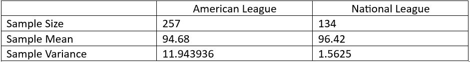
- What degrees of freedom should be used for the t-distribution in the broadcaster's hypothesis test?
- What is pooled variance should be used in the broadcaster's hypothesis test (\(S^2_p\))? Round your answer to four decimal places.
- What is the value of \(S_p\)? Round your answer to four decimal places.
#American League
nA = 257
Abar = 94.68
Avar=11.943936
#National League
nN = 134
Nbar = 96.42
Nvar = 1.5625
#Degree of Freedom
dof = nN + nA - 2
dof## [1] 389## [1] 8.394499## [1] 2.897326- People with potassium deficiency, known as hypokalemia, often suffer from painful cramps. A doctor wants to study the difference in potassium levels, measured in millimoles per liter, between those who suffer from chronic cramps and those who do not. The doctor randomly selected 20 patients who had been to the doctor's office within the last 5 years for cramps. The doctor then randomly selected 15 patients who had been to the doctor's office within the last 5 years who did not have cramps. Assume that the distributions of blood potassium levels for both groups are normal and that both distributions share the same variance. Let 1 be the population with cramps and 2 be the population without cramps.
- The doctor wants to test Ho: μ1 - μ2 = -1.2 versus Ha: μ1 - μ2 < -1.2 with 95% confidence. Which of the following best describes the alternative hypothesis, Ha?
- The doctor finds that \(\bar{x}_1=3.6\), \(S^2_1=0.567\), \(\bar{x}_2=5.0\), and \(S^2_2=0.981\). Compute the test statistic and the p-value for the doctor's test. Round both answers to four decimal places.
- Test statistic:
- p-value (use
ptand the test statistic you calculated above):
#Cramp sample
x1 = 3.6
var1 = 0.567
n1=20
#No cramp sample
x2 = 5
var2 = 0.981
n2=15
#Pooled variance
sp = (var1*(n1-1) + var2*(n2-1))/(n1+n2-2)
sp## [1] 0.7426364## [1] -0.6794672## [1] 0.2507902- Which of the following conclusions to the hypothesis test is valid?
- What is the probability of a Type II error when the true difference in blood potassium levels between patients with cramps and patients without cramps is -1.21? Remember that \(\alpha=0.05\). Do not round any intermediate calculations, use
ptandqtas necessary, and round your answer to four decimal places.
- What is the probability of a Type II error when the true difference in blood potassium levels between patients with cramps and patients without cramps is -1.21? Remember that \(\alpha=0.05\). Do not round any intermediate calculations, use
#Cramp sample
x1 = 3.6
var1 = 0.567
#No cramp sample
x2 = 5
var2 = 0.981
#Pooled variance
sp = (var1*(20-1) + var2*(15-1))/(15+20-2)
sp## [1] 0.7426364#Standardized critical value under the null
crit1 = qt(0.05,
df=15+20-2,
lower.tail=T)
#Non-standardized critical value under the null
crit2 = sqrt(sp*(1/15 + 1/20))*crit1
#Calculate the probability of getting a difference greater than crit2 when the true difference is -1.21
type2=pt((crit2-(-1.21))/sqrt(sp*(1/15 + 1/20)),
df=15+20-2,
lower.tail=F)
type2## [1] 0.01063401- A Christmas tree retailer is trying to determine whether there is a difference in height between artificial trees and natural Evergreen trees. The retailer took a random sample of 50 of both types of trees and found that the sample average height for artificial trees was 7.4 feet and the sample average height for Evergreen trees was 7.13 feet. The retailer also found that \(S^2_A=0.72\) feet\(^2\) and \(S^2_E=0.24\) feet\(^2\). The retailer knows that the population variances are equal.
- Calculate a point estimate for \(\mu_A-\mu_E\), the difference between the average height of artificial and Evergreen trees.
- Which pair of hypotheses is the retailer interested in testing?
- Conduct a hypothesis test for the Christmas tree retailer. Report the test statistic and p-value. Round your answers to four decimal places.
- Test statistic:
- p-value (remember this is a two-sided test):
#Evergreen Sample
evergreen.bar = 7.13
evergreen.var = 0.24
#Artificial Sample
artificial.bar = 7.4
artificial.var = 0.72
#Sample size
n=50
#Calculate pooled variance
sp = ((n-1)*evergreen.var + (n-1)*artificial.var)/(n+n-2)
sp## [1] 0.48## [1] 1.948557## [1] 0.05420834- The retailer wants the test to have a significance level of 0.01. Select the appropriate conclusion for the retailer.
- Create a 98% confidence interval for \(\mu_A-\mu_E\).
- (, )
- Is 0 included in the interval?
#Evergreen Sample
evergreen.bar = 7.13
evergreen.var = 0.24
#Artificial Sample
artificial.bar = 7.4
artificial.var = 0.72
#Sample size
n=50
#Calculate pooled variance
sp = ((n-1)*evergreen.var + (n-1)*artificial.var)/(n+n-2)
sp## [1] 0.48#t value for confidence interval
t=qt(.01,
df=n+n-2,
lower.tail=F)
#Compute confidence interval
lower = (7.4-7.13)-t*sqrt(sp*(1/n+1/n))
lower## [1] -0.05770435## [1] 0.5977043- A golf course in South Bend, Indiana, wants to see how the speed of grass growth differs depending on the type of fertilizer applied in the spring. On the first day of spring, the greenskeeper fertilized the first nine holes of the golf course with only lime and the last nine holes with a generic fertilizer. The greenskeeper than took a random sample of 42 patches of grass from both the front nine and back nine on the first day of summer. Let \(\bar{x_1}=0.274\) millimeters/day and \(s_1=0.02\) be the sample average and sample standard deviation for the patches fertilized with lime. Let \(\bar{x_2}=0.3\) millimeters/day and \(s_2=0.06\) be the sample average and sample standard deviation for the patches fertilized with generic fertilizer. The greenskeeper has reason to believe that the standard deviation of the distribution of grass growth is the same for the front and back nine holes. Assume that the rate of grass growth for the front nine and back nine are independent.
- Select the appropriate pair of null and alternative hypotheses for the greenskeeper's test.
- Which of the two-sample tests will you perform?
- What is the pooled standard deviation that should be used in the greenskeeper's test. If a pooled standard deviation should not be used, type NA. Round your answer to four decimal places.
- Perform the hypothesis test and report the test statistic and p-value. Round your answers to four decimal places, use
ptto calculate your p-value, and remember that this is a two-sided test.
- Test statistic:
- p-value (remember that this is a two tailed test):
- Perform the hypothesis test and report the test statistic and p-value. Round your answers to four decimal places, use
- The greenskeeper wants to be 95% confident in his/her conclusion. Select the appropriate conclusion for the greenskeeper.
- A major airline wants to move their operations hub from Houston, Texas, to a different city. The board of directors has narrowed down the list of possible hubs to two cities: Denver, Colorado, and Orlando, Florida. The board wants to test whether the average amount of airplane traffic at the Denver airport is larger than the average amount of traffic at the Orlando airport with 99% confidence. A statistician for the airline took a random sample of 50 days of traffic at the Denver airport and 60 days of traffic at the Orlando airport. The statistician found that \(\bar{x_d}= 1700\), \(s_d=485\) in Denver and \(\bar{x_o}= 1542\), \(s_o=150\) in Orlando. The statistician knows that the standard deviation of flights per day in both airport is the same.
- Select the appropriate null and alternative hypothesis.
- Which two sample test should the statistician perform?
- What is the pooled standard deviation that should be used in the statistician's test. Round your answer to four decimal places.
- What degrees of freedom should be used for the t-distribution in the statistician's hypothesis test?
- Perform the hypothesis test and report the test statistic and p-value. Round your answers to four decimal places, ensure that the order of subtraction is correct, and use your rounded test statistic to calculate the p-value with
pt.
- Test statistic:
- p-value:
- Perform the hypothesis test and report the test statistic and p-value. Round your answers to four decimal places, ensure that the order of subtraction is correct, and use your rounded test statistic to calculate the p-value with
#Denver
denver.bar=1700
denver.sd=485
nD = 50
#Orlando
orlando.bar=1542
orlando.sd=150
nO = 60
#Pooled variance
sP = ((nD-1)*denver.sd^2 + (nO-1)*orlando.sd^2)/(nD+nO-2)
sP## [1] 119014.1## [1] 2.391785## [1] 0.009247537- Which of the following conclusions should the board of directors make?
- An executive at Starbucks wants to test whether the wait times at two different Starbucks locations on the campus of Texas A&M University are significantly different. The two locations on campus are at the Evans Library (subscript E) and the Zachry Engineering Education Complex (subscript Z). For each of the combinations of \(n_E\), \(n_Z\), \(\bar{x_E}\), \(\bar{x_Z}\), \(S_E\), \(S_Z\), and \(\alpha\), report the pooled standard deviation and confidence interval for \(\mu_E - \mu_Z\). Assume that the distribution of wait times at both locations is normal and that both locations share the same standard deviation. Round your answers to four decimal places when possible.
- \(n_E=\) 10, \(n_Z=\) 15, \(\bar{x}_E=10.2\) minutes, \(\bar{x}_Z=\) 8.9 minutes, \(S_E=\) 4.7 minutes, \(S_Z=\) 3.8 minutes, and \(\alpha=\) 0.05.
- \(S_p=\)
- CI: (, )
- \(n_E=\) 10, \(n_Z=\) 15, \(\bar{x}_E=10.2\) minutes, \(\bar{x}_Z=\) 8.9 minutes, \(S_E=\) 4.7 minutes, \(S_Z=\) 3.8 minutes, and \(\alpha=\) 0.05.
- \(n_E=\) 22, \(n_Z=\) 50, \(\bar{x_E}=\) 6.75 minutes, \(\bar{x_Z}=\) 9.2 minutes, \(S_E=\) 1.2 minutes, \(S_Z=\) 5.4 minutes, and \(\alpha=\) 0.05. Use
qtas necessary.
- \(S_p=\)
- CI: (, )
- \(n_E=\) 22, \(n_Z=\) 50, \(\bar{x_E}=\) 6.75 minutes, \(\bar{x_Z}=\) 9.2 minutes, \(S_E=\) 1.2 minutes, \(S_Z=\) 5.4 minutes, and \(\alpha=\) 0.05. Use
- \(n_E=\) 156, \(n_Z=\) 251, \(\bar{x_E}=\) 7.82 minutes, \(\bar{x_Z}=\) 11.8 minutes, \(S_E=\) 1.1 minutes, \(S_Z=\) 2.8 minutes, and \(\alpha=\) 0.10. Use
qtas necessary.
- \(S_p=\)
- CI: ( , )
- \(n_E=\) 156, \(n_Z=\) 251, \(\bar{x_E}=\) 7.82 minutes, \(\bar{x_Z}=\) 11.8 minutes, \(S_E=\) 1.1 minutes, \(S_Z=\) 2.8 minutes, and \(\alpha=\) 0.10. Use
- \(n_E=\) 76, \(n_Z=\) 81, \(\bar{x_E}=\) 11.2 minutes, \(\bar{x_Z}=\) 10.78 minutes, \(S_E=\) 3.13 minutes, \(S_Z=\) 4.12 minutes, and \(\alpha=\) 0.01. Use
qtas necessary.
- \(S_p=\)
- CI: (, )
- \(n_E=\) 76, \(n_Z=\) 81, \(\bar{x_E}=\) 11.2 minutes, \(\bar{x_Z}=\) 10.78 minutes, \(S_E=\) 3.13 minutes, \(S_Z=\) 4.12 minutes, and \(\alpha=\) 0.01. Use
- A global shipping company wants to test whether continental shipping by air is faster than shipping by train. The shipping company analyzed shipments from New York City, New York to Los Angeles, California. The company randomly selected \(n_a\) air shipments and \(n_t\) train shipments. Assume that the two populations have equal variances (\(\sigma^2_A = \sigma^2_B\)). The results are as follows:
Transport Type Sample Mean (days) Sample Standard Deviation (days) Air 3.75 1.25 Train 3.89 0.75
- Select the appropriate pair of null and alternative hypotheses.
- Compute the hypothesis test if \(n_a=45\) and \(n_t=53\). Report the pooled variance, test statistic, degrees of freedom for the t distribution, and p-value. Round your answers to four decimal places.
- \(S^2_p=\)
- Test statistic:
- Degrees of freedom:
- p-value (use the
ptfunction inR):
#Air
a.n = 45 #Sample size
a.bar = 3.75 #Sample mean
a.s = 1.25 #Sample standard deviation
#Train
t.n = 53 #Sample size
t.bar = 3.89 #Sample mean
t.s = 0.75 #Sample standard deviation
#Pooled variance
s.pooled = ((a.n-1)*(a.s^2) + (t.n-1)*(t.s^2))/(a.n+t.n-2)
s.pooled## [1] 1.020833## [1] -0.6835681## [1] 96## [1] 0.2479473- Compute the hypothesis test if \(n_a=\) 256 and \(n_t=\) 342. Report the pooled variance, test statistic, degrees of freedom for the t distribution, and p-value. Round your answers to four decimal values.
- \(S^2_p=\)
- Test statistic:
- Degrees of freedom:
- p-value (use the
ptfunction inR):
#Air
a.n = 256 #Sample size
a.bar = 3.75 #Sample mean
a.s = 1.25 #Sample standard deviation
#Train
t.n = 342 #Sample size
t.bar = 3.89 #Sample mean
t.s = 0.75 #Sample standard deviation
#Pooled variance
s.pooled = ((a.n-1)*(a.s^2) + (t.n-1)*(t.s^2))/(a.n+t.n-2)
s.pooled## [1] 0.9903523## [1] -1.70222## [1] 596## [1] 0.04461783- Analyze how the p-value changed with the sample size. Select the answer that best summarizes this change.
- In the aerospace industry, the strength of composite materials is crucial for designing lightweight and durable components for aircraft. Engineers at an aerospace engineering firm are investigating the tensile strength of composite materials composed of a high-strength (HS) fiber and a low-strength (LS) fiber. The engineering team took a random sample of ten tensiles comprised of high-strength fiber and recorded their maximum strength before breaking. The team then took a random sample of twelve tensiles comprised of low-strength fiber and recorded their maximum strenth before breaking. The results are below (LS results shown first). All readings are in megapascals. It is known that the distribution of maximum strength readings for both types of fiber is normal.
## [1] "LS"## [1] 80.40410 83.11254 97.78141 85.57817 86.06016 99.06353 88.77951 74.62650
## [9] 79.36781 81.34557 95.03747 87.95047## [1] "HS"## [1] 87.40410 90.11254 104.78141 92.57817 93.06016 106.06353 95.77951
## [8] 81.62650 86.36781 88.34557- Construct a point estimate for \(\mu_{HS} - \mu_{LS}\), then calculate \(s^2_{HS}\) and \(s^2_{LS}\) using the
varfunction inR. Round your answers to four decimal places.
- Point estimate for \(\mu_{HS} - \mu_{LS}\):
- \(s^2_{HS}\):
- \(s^2_{LS}\):
- Construct a point estimate for \(\mu_{HS} - \mu_{LS}\), then calculate \(s^2_{HS}\) and \(s^2_{LS}\) using the
#Make vector for LS observations
LS = c(80.40410,
83.11254,
97.78141,
85.57817,
86.06016,
99.06353,
88.77951,
74.62650,
79.36781,
81.34557,
95.03747,
87.95047)
#Make vector for HS observations
HS = c(87.40410,
90.11254,
104.78141,
92.57817,
93.06016,
106.06353,
95.77951,
81.62650,
86.36781,
88.34557)
#Sample mean of LS
LS.bar = mean(LS)
LS.bar## [1] 86.59227## [1] 92.61193## [1] 6.01966## [1] 57.5721## [1] 61.16849- Use R to create a side-by-side box plot of the two datasets.
#Box plot
##Create list with both samples
list1 = list("LS" = LS,
"HS" = HS)
##Create side-by-side box plot
boxplot(list1,
main = "LS and HS Observations",
xlab = "Type",
ylab = "Max Strength (MPa)",
col = c("lightblue","lightgreen"))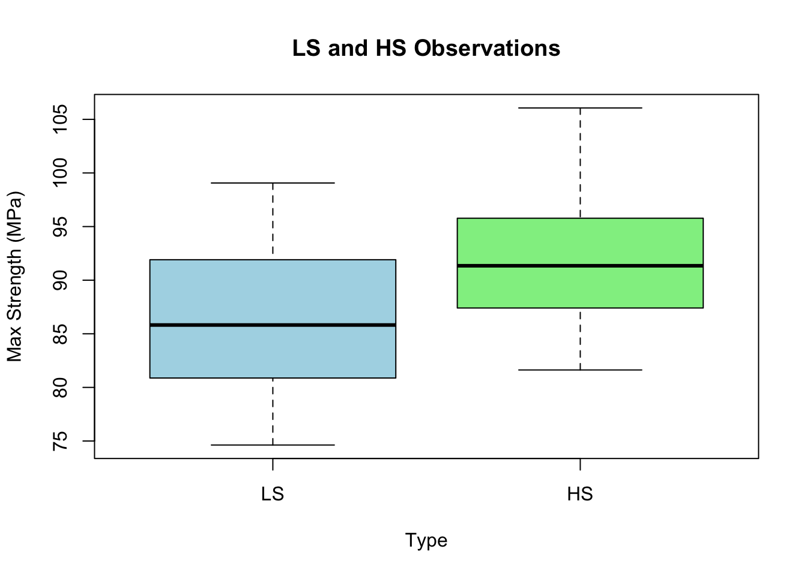
- The engineering team wants to test whether the tensile strength of composite materials composed of high-strength fiber is higher than the tensile strength of composite materials composed of low-strength fiber. Which pair of hypotheses should the engineering team test?
- Using the sample variances you calculated in part a. and the box plot you created in part b., can the engineering team assume that \(\sigma^2_{HS}=\sigma^2_{LS}\) when conducting their hypothesis test?
The box plot shows that both samples have a nearly equal variance. The calculated sample variances are also nearly equal. Thus, we can assume that the population variances are equal.
- Use the
t.testfunction in R to test the hypothesis you chose in part c. Make sure that yourxargument is equal to the High Strength group, and youryargument is equal to the Low Strength group.
What should the argument
alternativeequal?What should the argument
var.equalequal?What should the argument
muequal?Test statistic (round answer to four decimal places):
p-value (round answer to four decimal places):
- Use the
##
## Two Sample t-test
##
## data: HS and LS
## t = 1.8274, df = 20, p-value = 0.0413
## alternative hypothesis: true difference in means is greater than 0
## 95 percent confidence interval:
## 0.3381367 Inf
## sample estimates:
## mean of x mean of y
## 92.61193 86.59227- Which of the following conclusions can the engineering team make regarding the difference in strength between the two tensile types with 95% confidence?
- A biostatistician for the FDA was asked to help decide whether a new drug for colon cancer patients should be approved. The biostatistician conducted a clinical trial in which 68 patients with colon cancer were randomly selected. Half were randomly placed in the placebo group, and half were randomly placed in the treatment group. Tumor size, in millimeters, was recorded at the end of the trial (three months) and shown below.
## [1] "Treatment Group Results:"## [1] 23.138007 27.299764 49.839725 31.088406 31.829025 51.809819 36.007544
## [8] 14.260228 21.545654 24.584659 45.623431 34.733654 35.249720 31.594602
## [15] 23.196402 52.715106 36.472916 5.420624 39.037084 24.242828 16.745421
## [22] 27.453516 17.272344 21.015971 22.324505 8.947664 40.756117 32.132501
## [29] 15.859475 45.998068 35.573449 26.482099 41.478583 41.264482## [1] "Placebo Group Results:"## [1] 33.234440 39.873432 75.830037 45.917219 47.098683 78.972806 53.764416
## [8] 19.072269 30.694258 35.542194 69.104044 51.732258 52.555506 46.724723
## [15] 33.327593 80.416954 54.506795 4.970995 58.597254 34.996893 23.036744
## [22] 40.118704 23.877311 29.849286 31.936711 10.597464 61.339520 47.582800
## [29] 21.623448 69.701680 53.071931 38.569063 62.492026 62.150483- Use R to create a side-by-side box plot of the two datasets.
#Create a vector of the treatment group observations
trt = c(23.138007,
27.299764,
49.839725,
31.088406,
31.829025,
51.809819,
36.007544,
14.260228,
21.545654,
24.584659,
45.623431,
34.733654,
35.249720,
31.594602,
23.196402,
52.715106,
36.472916,
5.420624,
39.037084,
24.242828,
16.745421,
27.453516,
17.272344,
21.015971,
22.324505,
8.947664,
40.756117,
32.132501,
15.859475,
45.998068,
35.573449,
26.482099,
41.478583,
41.264482)
#Create a vector of the placebo group observations
placebo = c(33.234440,
39.873432,
75.830037,
45.917219,
47.098683,
78.972806,
53.764416,
19.072269,
30.694258,
35.542194,
69.104044,
51.732258,
52.555506,
46.724723,
33.327593,
80.416954,
54.506795,
4.970995,
58.597254,
34.996893,
23.036744,
40.118704,
23.877311,
29.849286,
31.936711,
10.597464,
61.339520,
47.582800,
21.623448,
69.701680,
53.071931,
38.569063,
62.492026,
62.150483)
#Box plot
##Create list with both samples
list2 = list("TRT" = trt,
"PLACEBO" = placebo)
##Create side-by-side box plot
boxplot(list2,
main = "Treatment and Placebo Observations",
xlab = "Group",
ylab = "Tumor Size at End of Trial (mm)",
col = c("orange","gray"))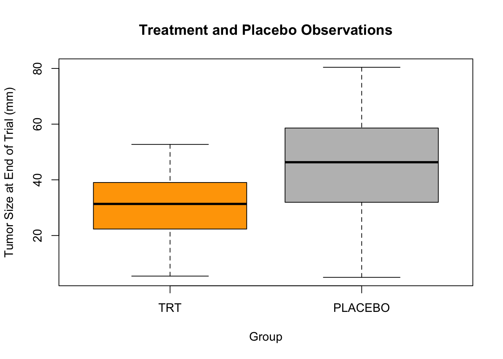
- Use the
varfunction inRto calculate the sample variance for each group. Round your answers to four decimal places.
- Treatment group variance, \(s^2_{T}\), \(=\)
- Placebo group variance, \(s^2_{P}\), \(=\)
- Use the
- The FDA will only approve the drug if it can be shown that the average tumor size in the treatment group is less than the average tumor size in the placebo group at the end of the trial. From the box plot you created in part a. and the sample variances you calculated in part b., should the biostatistician assume that \(\sigma^2_{T}=\sigma^2_{P}\) when conducting the hypothesis test?
The calculated sample variances show that the variance of the treatment group is much less than the variance of the control group. This is corroborated by the box plot, in which the plot of the placebo group is much longer than the plot of the treatment group. Thus, it is not safe to assume that the population variances are equal.
- Use the
t.testfunction in R to test \(H_0: \mu_{T}-\mu_{P}=0\) versus \(H_a: \mu_{T}-\mu_{P}<0\). Make sure that yourxargument is equal to the treatment group, and youryargument is equal to the placebo group.
What should the argument
alternativeequal?What should the argument
var.equalequal?What should the argument
muequal?Test statistic (give answer to four decimal places):
p-value (give answer to four decimal places):
- Use the
- Which of the following conclusions is valid regarding whether the treatment should be approved. Be 99% confident in your answer.
- The College Football Playoff (CFP) system is a three game, end-of-year, single-elimination tournament that decides the NCAA Division 1 football champion. Critics of the CFP system claim that the CFP has harmed attendance at bowl games. A sports journalist wants to write an article about these claims. The journalist took a random sample of fifteen bowl games from 2000-2014 and recorded their attendance. The journalist then took a random sample of twelve bowl games from 2014-2022 and recorded their attendance. The attendance data is below. Assume that the distribution of attendance for both eras is normal.
## [1] "Pre-CFP Attendance: "## [1] 29066 32369 50258 35376 35964 51822 39280 22020 27802 30214 46912 38269
## [13] 38679 35778 29113## [1] "CFP Era Attendance:"## [1] 23464 28418 55252 32929 33810 57597 38785 12895 21568 25186 50232 37268- Use R to create a side-by-side box plot of the two datasets.
#Make a vector for pre-CFP era attendance
pre.cfp = c(29066,
32369,
50258,
35376,
35964,
51822,
39280,
22020,
27802,
30214,
46912,
38269,
38679,
35778,
29113)
#Make a vector for CFP era attendance
cfp = c(23464,
28418,
55252,
32929,
33810,
57597,
38785,
12895,
21568,
25186,
50232,
37268)
#Box plot
##Create list with both samples
list3 = list("Pre-CFP" = pre.cfp,
"CFP" = cfp)
##Create side-by-side box plot
boxplot(list3,
main = "Pre-CFP and CFP Era Attendance",
xlab = "Era",
ylab = "Attendance",
col = c("maroon","white"))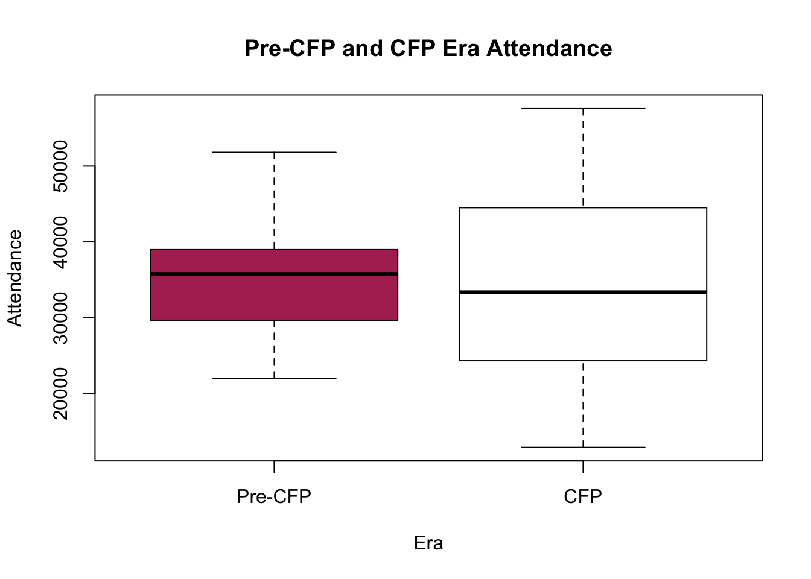
- Use the
varfunction inRto calculate the sample variance for each group.
- Variance in pre-CFP era attendance, \(s^2_{Pre-CFP}\), \(=\)
- Variance in CFP era attendance, \(s^2_{CFP}\), \(=\)
- Use the
- The website that the journalist works for will only publish the article if the journalist can show that the average attendance at bowl games in the CFP era is more than 5000 less than the average attendance at bowl games in the pre-CFP era. Should the journalist assume that \(\sigma^2_{P-CFP}=\sigma^2_{CFP}\) when conducting the relevant hypothesis test?
The calculated sample variances show that the variance of attendance in the CFP era is much greater than the variance of attendance in the pre-CFP era. This is corroborated by the box plot, in which the plot of attendance for the CFP era is much longer than the plot of attendance in the pre-CFP era. Thus, it is not safe to assume that the population variances are equal.
- Use the
t.testfunction in R to test \(H_0: \mu_{CFP}-\mu_{P-CFP}=-5000\) versus \(H_a: \mu_{CFP}-\mu_{P-CFP}<-5000\). Make sure that yourxargument is equal to attendance in the CFP era, and youryargument is equal to attendance in the pre-CFP era.
What should the argument
alternativeequal?What should the argument
var.equalequal?What should the argument
muequal?Test statistic (round answer to four decimal places):
p-value (round answer to four decimal places):
- Use the
##
## Welch Two Sample t-test
##
## data: cfp and pre.cfp
## t = 0.78656, df = 17.3, p-value = 0.7789
## alternative hypothesis: true difference in means is less than -5000
## 95 percent confidence interval:
## -Inf 6518.288
## sample estimates:
## mean of x mean of y
## 34783.67 36194.80- What is the fate of the journalist's article? Assume that the website is using a significance level of 0.01.
- A high school counselor wants to study the effectiveness of a free online AP Statistics playlist on the AP Statistics test scores of students. The counselor randomly selected 25 students who are enrolled in the high school's AP Statistics course and had them take a past AP statistics exam. She then had the same students watch the online playlist and take a different past AP statistics exam. Assume that the distribution of exam scores both before and after watching the playlist is normal.
- Is this an example of paired data?
- The counselor wants to know whether the average score on the AP exam is higher after watching the online playlist than it is before watching the playlist. Which pair of hypotheses should the counselor test? μB is the average test score before watching the playlist, μA is the average test score after watching the playlist, and μD=μB-μA.
- The counselor finds that \(\bar{X}_B= 3.7\), \(\bar{X}_A=3.9\), and \(S_d=0.52\). Report \(\hat{\sigma}_{\bar{D}}\), the test statistic, the degrees of freedom for the t distribution, and the p-value. Round your answers to three decimal places when possible.
- \(\hat{\sigma_\bar{D}}\)
- Test Statistic:
- Degrees of freedom:
- p-value:
#Sample size
n=25
#Sample standard deviation of D
S.D = 0.52
#Standard error of Dbar
sigma.Dbar = 0.52/sqrt(n)
sigma.Dbar## [1] 0.104## [1] -1.923077## [1] 0.03320682- Which of the following conclusions to the hypothesis test you performed is valid?
- A medical imaging provider with locations across Texas performs diagnostic imaging services for physicians. These imaging services include magnetic resonance imaging (MRI) and computed tomography (CT) scans. The CEO of the imaging center wants to test whether a new calibration process will result in images with a different resolution. The CEO took a random sample of 12 MRI machines and recorded the spacial resolution of images created by each machine before and after the machines were calibrated. The greater the spacial resolution (in millimeters), the more detailed the image. The data is shown below. Assume the distribution of spacial resolution before and after calibration is normal. Let \(\mu_D=\mu_{\text{BEFORE}}-\mu_{\text{AFTER}}\)
## [1] "Before"## [1] 2.632743 2.672379 2.887045 2.708461 2.715515 2.905808 2.755310 2.548193
## [9] 2.617578 2.646521 2.846890 2.743178## [1] "After"## [1] 2.956108 2.915496 2.822182 3.150168 2.969699 2.624674 2.998190 2.833809
## [9] 2.750505 2.869484 2.756359 2.797955- Report the following values. Round your answers to three decimal places.
- The sum of the differences in spacial resolution before and after the calibration:
- \(\bar{D}=\)
#Resolution before calibration
before = c(2.632743,
2.672379,
2.887045,
2.708461,
2.715515,
2.905808,
2.755310,
2.548193,
2.617578,
2.646521,
2.846890,
2.743178)
#Resolution after calibration
after = c(2.956108,
2.915496,
2.822182,
3.150168,
2.969699,
2.624674,
2.998190,
2.833809,
2.750505,
2.869484,
2.756359,
2.797955)
n=12
#The sum of the differences in spacial resolution
#before and after the calibration
sumD = sum(before-after)
sumD## [1] -1.765008## [1] -0.147084- Calculate the sample variance of the difference between spacial resolution before and after the calibration, \(S^2_D\). Round your answer to three decimal places.
- \(S^2_D=\)
- Calculate the standard error of \(\bar{D}\). Round your answer to three decimal places.
The sample variance of \(D\) is \(S^2_D=\frac{\sum_{i=1}^n{(D_i-\bar{D})^2}}{n-1}\)
#Compute the sample variance of D
##First, calculate the differences
differences = before-after
##Next, calculate the sum of squared deviations
##from the sample mean
sumsquares = sum((differences-D.bar)^2)
##Now, calculate the sample variance of D
sd2 = sumsquares/(n-1)
sd2## [1] 0.0423791## [1] 0.0594272- Test the hypotheses: \(H_0: \mu_D=0\), \(H_a: \mu_D \neq 0\). Report the test statistic, the degrees of freedom for the t distribution, and the p-value. Round all answers to four decimal places.
- Test Statistic:
- Degrees of freedom:
- p-value (use
ptand remember that this is a two-tailed test):
- Which of the following is a valid conclusion to this hypothesis test?
- A petroleum refining company has patches of oil wells in four different areas across the continental United States. The board of directors for the company wants to analyze how pump production changed after structural changes were made to the pump to meet updated EPA standards. A statistician for the petroleum refinery took a random sample of pumps at each well and recorded production before and after the change was made. The statistician generated summary reports for the difference between pump production before and after the regulations took place. For each of the locations below, create a confidence interval for \(\mu_{D}\). Assume the distribution of oil pump production before and after the regulation took place is normal. Round the bounds to three decimal places.
- The sample from Van Horn, Texas, shows that \(\bar{D}=-50\), \(S^2_D=17490.06\), \(n_d=50\). The 95% CI for \(\mu_{D}\) is:
- (, )
- The sample from Casper, Wyoming, shows that \(\bar{D}=20.2\), \(S^2_D=22575.06\), \(n_d=112\). The 90% CI for \(\mu_{D}\) is:
- (, )
- The sample from Baton Rouge, Louisiana, shows that \(\bar{D}=-43.7\), \(S^2_D=23140.49\), \(n_d=11\). The 99% CI for \(\mu_{D}\) is: (, )
- The sample from Galveston, Texas, shows that \(\bar{D}=-11.2\), \(S^2_D=2523.053\), \(n_d=245\). The 80% CI for \(\mu_{D}\) is: (, )
The \((1-\alpha)100\%\) confidence interval for \(\mu_D\) is \(\bar{D}\pm t_{\frac{\alpha}{2},n-1}*\sqrt{\frac{S^2_D}{n}}\)
The following R code gives the answer for the Galveston well. A similar process can be followed for other locations.
##Sample average difference
D.bar = -11.2
##Sample variance of difference
SD2 = 2523.053
##Sample size
n = 245
##Significance level
alpha=0.2
###Upper bound
upper.bound = D.bar + qt(p=alpha/2,
df=n-1,
lower.tail=F) * sqrt(SD2/n)
upper.bound## [1] -7.076237## [1] -15.32376- Ozempic is a drug approved by the Food and Drug Administration for use in lowering blood sugar levels in adults with type II diabetes. The main active ingredient in Ozempic, semaglutide, has been found to also be an effective aid for those trying to lose weight, but it is not approved by the FDA for this purpose. Say you are a biostatistician interested in replicating the results of previous studies showing that Ozempic is an effective weight loss aid. You take a random sample of 14 people with a body mass index (BMI) over 30.0. You record their weight before taking semaglutide for a period of 36 weeks. You then record their weight at the end of the period. You want to know whether the average loss in weight is greater than fifteen pounds (weight before-weight after).
- Which of the following assumptions is necessary for you to be able to conduct a paired t test? Make this assumption for the rest of the problem.
- Which pair of hypotheses should you test?
- You find that average weight of study participants before the treatment was 218.20 pounds, the average weight of study participants after the treatment was 200.15 pounds, and \(S_{D}=5.7\). Report the test statistic, the degrees of freedom for the t distribution, and the p-value. Round all answers to four decimal places. Do not round any intermediate calculations.
- Test Statistic:
- Degrees of freedom:
- p-value (use
pt):
#Average weight before
before.bar = 218.2
#Average weight after
after.bar = 200.15
#Sample sd of difference
D.sd = 5.7
#Sample size
n = 14
#Test statistic
t = ((218.2-200.15)-15)/(D.sd/sqrt(n))
t## [1] 2.002115## [1] 0.03329383- Which of the following conclusions can you make about how the weight of patients changes after taking semaglutide for 36 weeks?
- A horse training company in Sunland Park, New Mexico, trains race horses from birth. The company is interested in knowing whether its race horses are faster when running on dry dirt compared to grass. The lead trainer randomly selected 15 horses and ran them on dry dirt and grass, recording their 1 mile times in seconds. The data is shown below.
| dry_dirt | grass | difference |
|---|---|---|
| 89.72267 | 89.96339 | -0.2407135 |
| 93.42201 | 93.16728 | 0.2547338 |
| 113.45753 | 110.51947 | 2.9380625 |
| 96.78969 | 96.08393 | 0.7057626 |
| 97.44802 | 96.65409 | 0.7939316 |
| 115.20873 | 112.03613 | 3.1725975 |
| 101.16226 | 99.87089 | 1.2913743 |
| 81.83131 | 83.12891 | -1.2975919 |
| 88.30725 | 88.73753 | -0.4302793 |
| 91.00859 | 91.07708 | -0.0684930 |
| 109.70972 | 107.27359 | 2.4361227 |
| 100.02991 | 98.89019 | 1.1397207 |
| 100.48864 | 99.28748 | 1.2011572 |
| 97.23965 | 96.47362 | 0.7660241 |
| 89.77458 | 90.00834 | -0.2337617 |
- Which of pair of hypotheses should the trainer test? μD is the average mile time on the dirt track and μG is the average mile time on the grass track?
- Assume that the difference in mile time between tracks for each horse is independent of the difference in mile times for all other horses and that the distribution of the difference in times is normal. Use the
t.testfunction in R to test the appropriate hypothesis.
What should the argument
alternativeequal?What should the argument
pairedequal?What should the argument
muequal?Test statistic (ensure that the
xargument is equal to dirt times, theyargument is equal to grass times, and round answer to four decimal places):p-value (round answer to three decimal places):
- Assume that the difference in mile time between tracks for each horse is independent of the difference in mile times for all other horses and that the distribution of the difference in times is normal. Use the
#Create a vector for dry dirt times
dry.dirt = c(89.72267,
93.42201,
113.45753,
96.78969,
97.44802,
115.20873,
101.16226,
81.83131,
88.30725,
91.00859,
109.70972,
100.02991,
100.48864,
97.23965,
89.77458)
#Create a vector for grass times
grass=c(89.96339,
93.16728,
110.51947,
96.08393,
96.65409,
112.03613,
99.87089,
83.12891,
88.73753,
91.07708,
107.27359,
98.89019,
99.28748,
96.47362,
90.00834)
#Perform t test
t.test(x=dry.dirt,
y=grass,
alternative = "less",
mu=0,
paired=T)##
## Paired t-test
##
## data: dry.dirt and grass
## t = 2.5308, df = 14, p-value = 0.988
## alternative hypothesis: true mean difference is less than 0
## 95 percent confidence interval:
## -Inf 1.405227
## sample estimates:
## mean difference
## 0.828576- Use the
t.testfunction to report a two-sided 80% confidence interval for \(\mu_D\). Round your bounds to four decimal places.
- The 80% confidence interval is: (, )
- Use the
Use the conf.level argument to change the default confidence level
#Perform t test
t.test(x=dry.dirt,
y=grass,
alternative = "two.sided",
mu=0,
paired=T,
conf.level=.80)##
## Paired t-test
##
## data: dry.dirt and grass
## t = 2.5308, df = 14, p-value = 0.02399
## alternative hypothesis: true mean difference is not equal to 0
## 80 percent confidence interval:
## 0.3882144 1.2689376
## sample estimates:
## mean difference
## 0.828576- Using the results you reported in part b. and a significance level of α=0.05, which of the following is a valid conclusion.
- In a presidential election year, the first two notable events that select the future presidential candidates are the Iowa Caucuses and the New Hampshire Primary. A potential nominee for president wants to analyze whether there is a difference in voter turnout (the proportion of the population that votes) between the two states during their respective events. The nominee took a random sample of 300 Iowans and 275 New Hampshirites. The nominee found that 57 Iowans voted in the last Iowa Caucus and 72 New Hampshirites voted in the last New Hampshire Primary. Assume that the voter turnout in Iowa and New Hampshire are independent.
- Which pair of hypotheses should the candidate test?
- Calculate \(\hat{p}_I\) and \(\hat{p}_{NH}\).
- \(\hat{p}_I\) (round to two decimal places):
- \(\hat{p}_{NH}\) (round to four decimal places):
- Calculate the pooled estimator of \(p\), test statistic, and p-value for the candidate's hypothesis test. Round your answers to four decimal places and use
qnormandpnormas necessary.
- Pooled estimator of \(p\):
- \(z=\):
- p-value (remember that this is a two-tailed test):
- Calculate the pooled estimator of \(p\), test statistic, and p-value for the candidate's hypothesis test. Round your answers to four decimal places and use
## [1] 0.19## [1] 0.2618182## [1] 0.2243478## [1] -2.062211## [1] 0.03918769- Which of the following conclusions can the candidate make about voter turnout in Iowa and New Hampshire?
- The president of Texas A&M University want to better understand how students are adopting artificial intelligence for use in classes. Specifically, the president wants to know whether the proportion of students using AI in liberal arts and humanities fields is greater than the proportion using artificial intelligence in STEM fields. The president's office randomly selected 150 students that are majoring in liberal arts and humanities fields and 167 students that are majoring in STEM fields. The results are below.
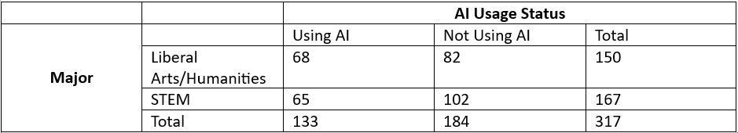
- Which pair of hypotheses should the president test? LH stands for liberal arts and humanities and S stands for STEM.
- Calculate \(\hat{p}_{LH}\) and \(\hat{p}_{S}\), where \(p\) is the proportion of students using AI. Round your answers to four decimal places.
- \(\hat{p}_{LH}\):
- \(\hat{p}_{S}\):
- Calculate the pooled estimator of \(p\), test statistic, and p-value for the candidate's hypothesis test. Round your answers to four decimal places and use
qnormandpnormas necessary.
- Pooled estimator of \(p\):
- \(z\):
- p-value:
- Calculate the pooled estimator of \(p\), test statistic, and p-value for the candidate's hypothesis test. Round your answers to four decimal places and use
## [1] 0.4533333## [1] 0.3892216## [1] 0.4195584## [1] 1.154879## [1] 0.1240699- Which of the following conclusions can the president of Texas A&M make about the difference in proportion of AI use between liberal arts/humanities majors and STEM majors?
- In February of 2021, three large winter storms swept through North America. These storms caused unprecedented stress on the Texas power grid, resulting in a power crisis. A data scientist working in the Division of Student Affairs took a random sample of 87 students who lived on campus and 94 students who lived off campus at the time of the crisis. The results showed that 15 on-campus residents lost heat while 21 off-campus residents lost heat. Use the
prop.testfunction inRto answer the following questions. Ensure that thecorrectargument equalsFALSEso that the test is the mathematical equivalent of the z test.
- Test whether the proportion of on-campus residents that lost heat is greater than the proportion of off-campus residents that lost heat with \(\alpha=0.05\). Round your answer to four decimal places.
- p-value:
- Report the confidence interval: (, )
- Test whether the proportion of on-campus residents that lost heat is greater than the proportion of off-campus residents that lost heat with \(\alpha=0.05\). Round your answer to four decimal places.
#Number of on campus residents in sample
nON=87
#Number of off campus residents in sample
nOFF=94
#Number of on campus residents that lost power
nONL = 15
#Number of off campus residents that lost power
nOFFL = 21
#Perform test for equality of proportions
prop.test(x=c(nONL,
nOFFL),
n=c(nON,
nOFF),
alternative="greater",
correct=FALSE)##
## 2-sample test for equality of proportions without continuity correction
##
## data: c(nONL, nOFFL) out of c(nON, nOFF)
## X-squared = 0.73728, df = 1, p-value = 0.8047
## alternative hypothesis: greater
## 95 percent confidence interval:
## -0.1481033 1.0000000
## sample estimates:
## prop 1 prop 2
## 0.1724138 0.2234043- Test whether the proportion of on-campus residents that lost heat is less than the proportion of off-campus residents that lost heat with \(\alpha=0.20\). Round your answer to four decimal places.
- p-value:
- Report the appropriate confidence interval: (, )
##
## 2-sample test for equality of proportions without continuity correction
##
## data: c(nONL, nOFFL) out of c(nON, nOFF)
## X-squared = 0.73728, df = 1, p-value = 0.1953
## alternative hypothesis: less
## 80 percent confidence interval:
## -1.000000000 -0.001300779
## sample estimates:
## prop 1 prop 2
## 0.1724138 0.2234043- Test whether the proportion of on-campus residents that lost heat is different from the proportion of off-campus residents that lost heat with \(\alpha=0.01\). Round your answer to four decimal places.
- p-value:
- Report the appropriate confidence interval: (, )
prop.test(x=c(nONL,
nOFFL),
n=c(nON,
nOFF),
alternative="two.sided",
conf.level=0.99,
correct=FALSE)##
## 2-sample test for equality of proportions without continuity correction
##
## data: c(nONL, nOFFL) out of c(nON, nOFF)
## X-squared = 0.73728, df = 1, p-value = 0.3905
## alternative hypothesis: two.sided
## 99 percent confidence interval:
## -0.2030685 0.1010876
## sample estimates:
## prop 1 prop 2
## 0.1724138 0.2234043- From the three tests you conducted above, which of the following conclusions is correct.
- A meteorologist for the National Weather Service is interested in knowing whether far west Texas experiences a different proportion of sunny days than far east Texas. The meteorologist took a random sample of 567 days from the past 10 years from a weather station in Houston, Texas, and found that there were 389 sunny days. The meteorologist took a random sample of 640 days from the past 10 years from a weather station in El Paso, Texas, and found that there were 490 sunny days. Help the meteorologist by creating confidence intervals for \(p_{H}-p_{EP}\), where \(p_{H}\) is the proportion of sunny days in Houston and \(p_{EP}\) is the proportion of sunny days in El Paso. Round all answers to four decimal places.
- Calculate \(\hat{p}_{H}-\hat{p}_{EP}\). You will use this answer in your confidence interval calculations.
- Create a 99% confidence interval for \(p_{H}-p_{EP}\) by hand. Use
qnormas necessary and do not round any intermediate calculations. (, )
- Create a 99% confidence interval for \(p_{H}-p_{EP}\) by hand. Use
## [1] 0.686067## [1] 0.765625## [1] -0.07955798#z value
z=qnorm(.005,
lower.tail=F)
#Confidence Interval "by hand"
##Lower Bound
lower.bound=point.estimate-z*sqrt(((pH*(1-pH))/567)+((pEP*(1-pEP))/640))
lower.bound## [1] -0.1457441## [1] -0.01337182- Use the
prop.testfunction in R to create a 99% confidence interval for \(p_{H}-p_{EP}\). Ensure thatcorrect=Fand adjust the confidence level usingconf.level. (, )
- Use the
- Your answers in part b. and c. should be nearly identical. Given your 99% confidence intervals for pH-pEP, what can the meteorologist conclude about the proportion of sunny days in west versus east Texas?
18.11 Comparing More Than Two Populations
- Select the correct answer for each of the following multiple choice questions.
- Select the list of assumptions necessary to test the equality of k means using the ANOVA F test.
- The assumption that the k populations being compared are normally distributed is not necessary when:
- What does the assumption of homoscedasticity mean?
- Which of the following best describes the null and alternative hypotheses tested using the ANOVA procedure?
- For each of the assumptions below, select the appropriate tool used to check the assumption.
- What is used to check the assumption of homoscedasticity?
- What is used to check the assumption of normality?
- What is used to check the independence assumption?
- A statistical consultant at Texas A&M University has just received four inquiries, each from a different researcher. Each researcher is trying to conduct a \(k\)-sample test for the equality of means. Each researcher has created plots to test for the required ANOVA assumptions, but does not know how to proceed. Review each researcher's plots and decide whether the assumptions for a valid ANOVA test are met.
- The first proposal is comparing \(k=3\) populations. The samples used in the experiment were taken at random from each population.
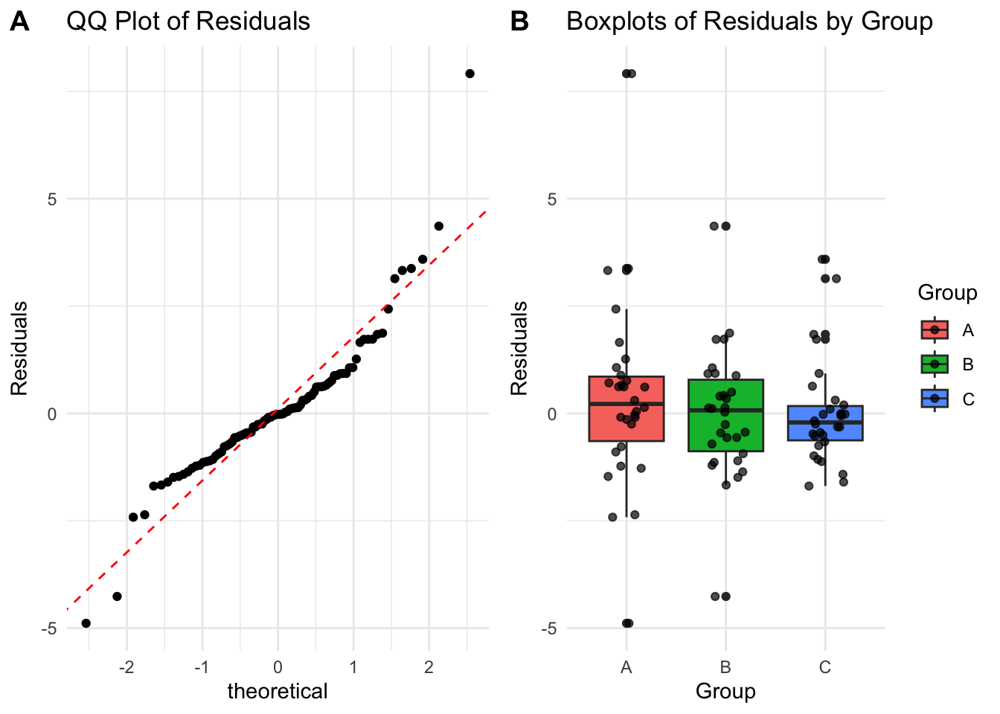
- The first proposal is comparing \(k=3\) populations. The samples used in the experiment were taken at random from each population.
- Should the researcher assume that the three populations are normally distributed?
- Should the researcher assume that each population has the same variance (homoscedasticity)?
- Should the researcher assume that the observations within groups are independent?
- The second proposal is comparing \(k=5\) populations. The samples used in the experiment were taken at random from each population.
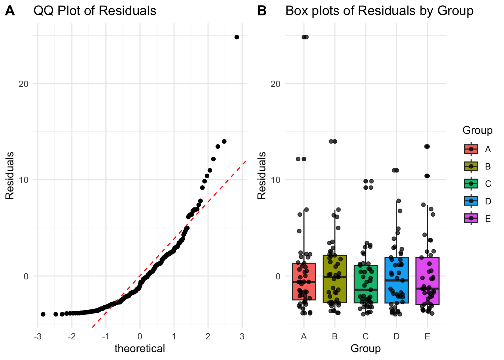
- The second proposal is comparing \(k=5\) populations. The samples used in the experiment were taken at random from each population.
- Should the researcher assume that the five populations are normally distributed?
- Should the researcher assume that each population has the same variance (homoscedasticity)?
- Should the researcher assume that the observations within groups are independent?
- The third proposal is comparing \(k=3\) populations. The samples used in the experiment were not taken at random. Rather, the researcher chose experimental units that he/she deemed were best fit for the experiment.
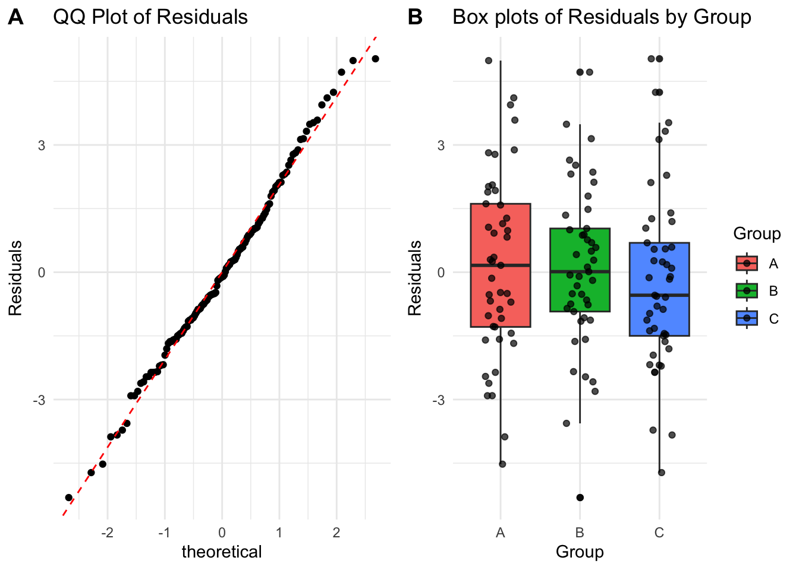
- The third proposal is comparing \(k=3\) populations. The samples used in the experiment were not taken at random. Rather, the researcher chose experimental units that he/she deemed were best fit for the experiment.
- Should the researcher assume that the three populations are normally distributed?
- Should the researcher assume that each population has the same variance (homoscedasticity)?
- Should the researcher assume that the observations within groups are independent?
- The fourth proposal is comparing \(k=4\) populations. The samples used in the experiment were taken at random from each population.
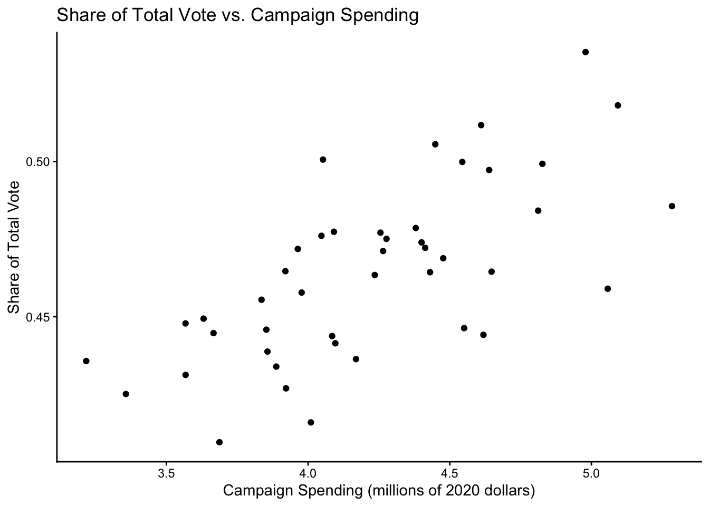
- The fourth proposal is comparing \(k=4\) populations. The samples used in the experiment were taken at random from each population.
- Should the researcher assume that the four populations are normally distributed?
- Should the researcher assume that each population has the same variance (homoscedasticity)?
- Should the researcher assume that the observations within groups are independent?
- Answer the following multiple choice questions about the intuition underlying the ANOVA procedure.
- The total sum of squares, SST, can be decomposed into SST= SSG + SSE. What does SST measure?
- The total sum of squares, SST, can be decomposed into SST= SSG + SSE. What does SSE measure?
- The total sum of squares, SST, can be decomposed into SST= SSG + SSE. What does SSG measure?
- Select the appropriate degrees of freedom for the measurement of each component of variation.
- An e-commerce site is preparing to launch a new line of athletic wear and wants to perform multiple ANOVA tests to ensure that their advertising campaign maximizes sales. The ANOVA tests are for whether average clickthrough rates differ across major advertising platforms, whether average cost per completed view differs across major television networks, whether average website traffic differs across different e-commerce platforms, and whether the average open rate of email advertisements differs across different email marketing firms. The e-commerce site hired a data scientist to conduct each of these ANOVA tests, but he/she is unsure of whether the data in each test violates the homoscedasticity assumption.
- What plot(s) can the data scientist use to see whether it is safe to assume homoscedasticity across groups (i.e., the assumption of equal variance across treatment groups)?
- The plot below shows the scatterplot of residuals vs. fitted values from the ANOVA test of whether average clickthrough rates differ across major advertising platforms.
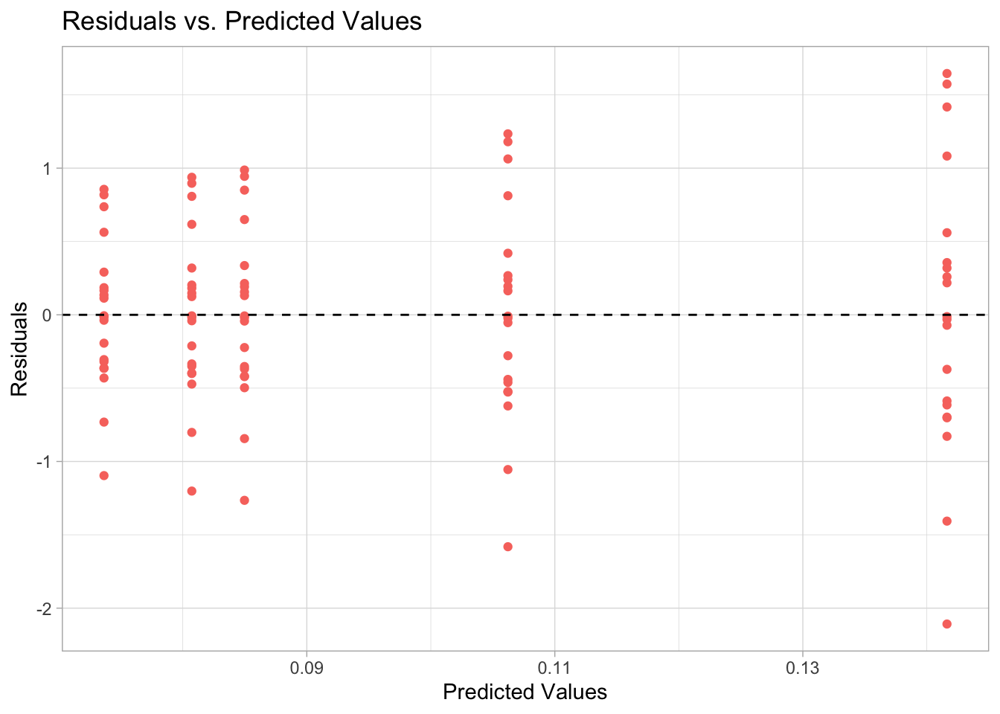
- What pattern does the ANOVA residuals vs. ANOVA fitted values plot display? Is the homoscedasticity assumption violated?
- The plot below shows the scatterplot of residuals vs. fitted values from the ANOVA test of whether average clickthrough rates differ across major advertising platforms.
- The plot below shows the scatterplot of residuals vs. fitted values from the ANOVA test of whether the average cost per completed view differs across major television networks.
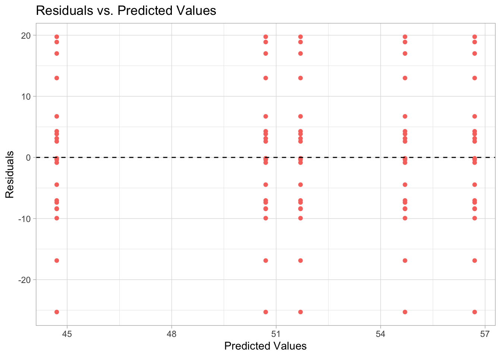
- What pattern does the ANOVA residuals vs. ANOVA fitted values plot display? Is the homoscedasticity assumption violated?
- The plot below shows the scatterplot of residuals vs. fitted values from the ANOVA test of whether the average cost per completed view differs across major television networks.
- The plot below shows the scatterplot of residuals vs. fitted values from the ANOVA test of whether average website traffic differs across different e-commerce platforms.
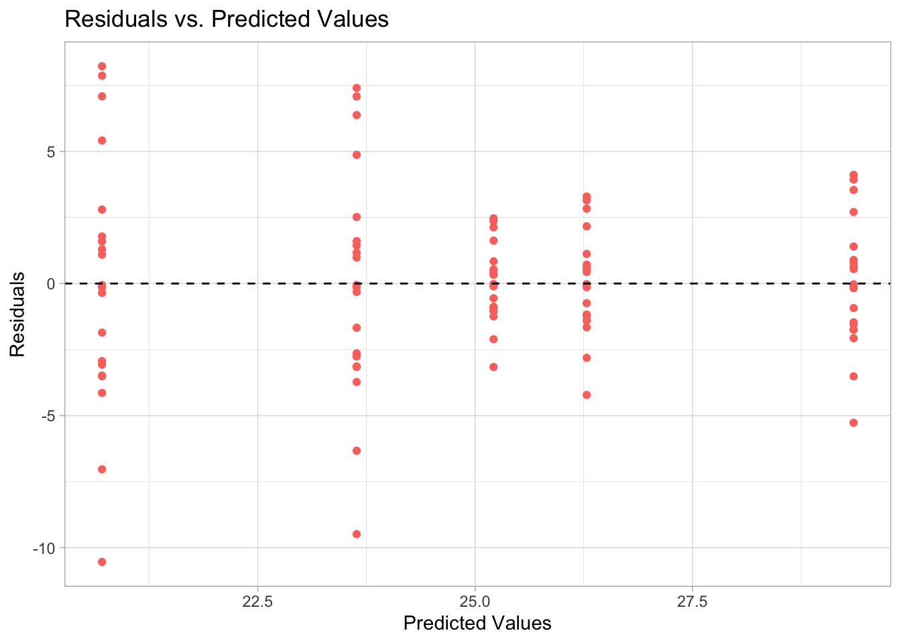
- What pattern does the ANOVA residuals vs. ANOVA fitted values plot display? Is the homoscedasticity assumption violated?
- The plot below shows the scatterplot of residuals vs. fitted values from the ANOVA test of whether average website traffic differs across different e-commerce platforms.
- The plot below shows the scatterplot of residuals vs. fitted values from the ANOVA test of whether the average open rate of email advertisements differs across different email marketing firms.
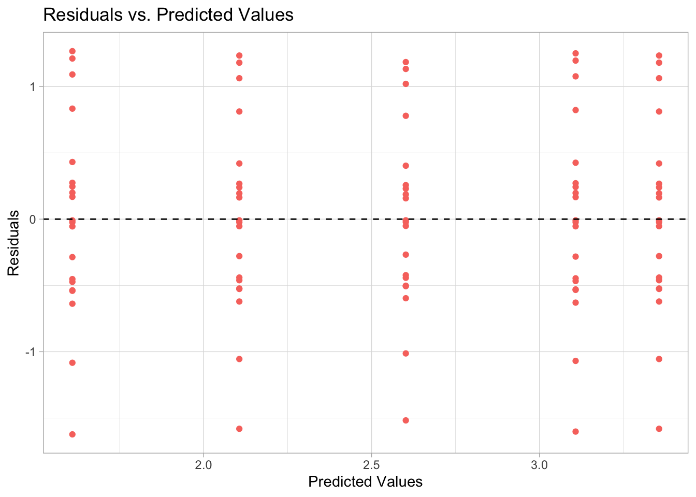
- What pattern does the ANOVA residuals vs. ANOVA fitted values plot display? Is the homoscedasticity assumption violated?
- The plot below shows the scatterplot of residuals vs. fitted values from the ANOVA test of whether the average open rate of email advertisements differs across different email marketing firms.
- A florist is researching whether different fertilizers impact the speed of sunflower growth. The florist randomly assigned 30 batches of sunflower seeds to one of three groups such that there are 10 seeds per group. The florist grew the sunflowers under the same conditions, then recorded their height after two weeks. The height data is shown below. Assume the distribution of heights for each group is normal and that all groups have the same population variance. Note that Group 1 received fertilizer A, Group 2 received fertilizer B, and Group 3 received fertilizer C.
Fertilizer A Fertilizer B Fertilizer C 10.70 11.94 12.96 11.47 12.74 13.69 15.62 17.07 17.66 12.16 13.47 14.36 12.30 13.61 14.49 15.98 17.45 18.01 13.07 14.42 15.22 9.07 10.24 11.39 10.41 11.64 12.68 10.97 12.22 13.21
- Calculate the group means and grand mean.
- \(\bar{x}_{1\cdot}=\) (round answer to three decimal places)
- \(\bar{x}_{2\cdot}=\) (round answer to two decimal places)
- \(\bar{x}_{3\cdot}=\) (round answer to three decimal places)
- \(\bar{x}_{\cdot\cdot}=\) (round answer to three decimal places)
- What is the sum of squared errors (SSE)? Perform this calculation by hand and use the means you reported above. Round your answer to four decimal places.
- SSE\(=\)
- What is the sum of squares between groups (SSG)? Perform this calculation by hand and use the means you reported above. Round your answer to four decimal places.
- SSG\(=\)
- What is the total sum of squares? Round your answer to four decimal places. (Hint: use your answers to b. and c.).
- SST\(=\)
- Calculate the mean squared error and mean squared group values (MSE and MSG). Use the SSE and SSG values you reported above in your calculations and round to three decimal places.
- MSE\(=\)
- MSG\(=\)
- Report the test statistic, \(F_{H_0}\), and the p-value for the ANOVA F test. Round your answers to four decimal places and use the
pffunction inR.
- test statistic:
- p-value\(=\)
- Report the test statistic, \(F_{H_0}\), and the p-value for the ANOVA F test. Round your answers to four decimal places and use the
- Select the appropriate conclusion to the one-way ANOVA test you performed above.
- A basketball coach wants to analyze whether implementing different practice routines would impact his team's average shooting percentage. The coach randomly broke up the basketball team into three groups of five. He randomly assigned a practice routine to each group. Group 1 was assigned the team's normal practice routine, Group 2 was assigned the team's normal practice routine plus ten minutes of shooting drills, and Group 3 was assigned the team's normal practice routine plus ten minutes of sprinting drills. The coach started the routines at the beginning of the season and recorded each player's shooting percentage at the conclusion of the season. Assume that the distribution of shooting percentage for each group is normal and that all groups have the same population variance. The data is shown below.
Group 1 Group 2 Group 3 0.50 0.54 0.49 0.54 0.59 0.52 0.76 0.85 0.68 0.58 0.63 0.55 0.59 0.64 0.55
- Select the pair of hypotheses that the basketball coach wants to test?
- Calculate the group means and grand mean.
- \(\bar{x}_{1\cdot}=\) (round answer to three decimal places)
- \(\bar{x}_{2\cdot}=\) (round answer to two decimal places)
- \(\bar{x}_{3\cdot}=\) (round answer to three decimal places)
- \(\bar{x}_{\cdot\cdot}=\) (round answer to four decimal places)
- What is the sum of squared errors (SSE)? Perform this calculation by hand and use the means you reported above. Round your answer to four decimal places.
- SSE\(=\)
- What is the sum of squares between groups (SSG)? Perform this calculation by hand and use the means you reported above. Give your answer to four decimal places.
- SSG\(=\)
- What is the total sum of squares? Give your answer to four decimal places. (Hint: use your answers to b. and c.).
- SST\(=\)
- Calculate the mean squared error and mean squared group values (MSE and MSG). Use the SSE and SSG values you reported above in your calculations and round to four decimal places.
- MSE\(=\)
- MSG\(=\)
- Under the null hypotheses, the test statistic has a distribution with \(v_1=\) and \(v_2=\) degrees of freedom.
Report the value of the test statistic. Use the mean square values you reported above in your calculations and round your answer to three decimal places.
Report the p-value associated with the test statistic you reported above. Round your answer to two decimal places. (Hint: use
pf)
- What conclusion can the coach come to regarding the effectiveness of the different practice routines?
- Fortified foods are those that contain added vitamins and minerals. Foods that are commonly consumed among humans, such as grains and milk, are often fortified. A food scientist conducted an experiment to determine whether the nutrient content of fortified foods depends on the fortification method. The scientist randomly took 44 samples of cereal dough from a cereal production plant (each sample is one serving). The scientist then assigned the samples to one of four fortification methods: pre-made blends (group 1), spraying (group 2), extrusion cooking (group 3), and coating (group 4). The dough in each sample was then turned into fortified cereal using the assigned process, and the scientist measured the amount of zinc present in each serving of cereal (in milligrams). Assume that the distribution of zinc amounts in each sample is normal. The results are below.
Pre-Made Blend Spraying Extrusion Cooking Coating 3.64 4.14 3.08 2.72 3.70 4.18 3.18 2.88 4.06 4.36 3.72 3.78 3.76 4.21 3.27 3.04 3.78 4.21 3.29 3.06 4.09 4.37 3.76 3.86 3.84 4.25 3.39 3.23 3.50 4.07 2.87 2.37 3.61 4.13 3.04 2.66 3.66 4.16 3.12 2.78 3.99 4.32 3.62 3.61
- Use R to create a side-by-side box plot of the data to check the assumption of equal population variance across the four treatment groups.
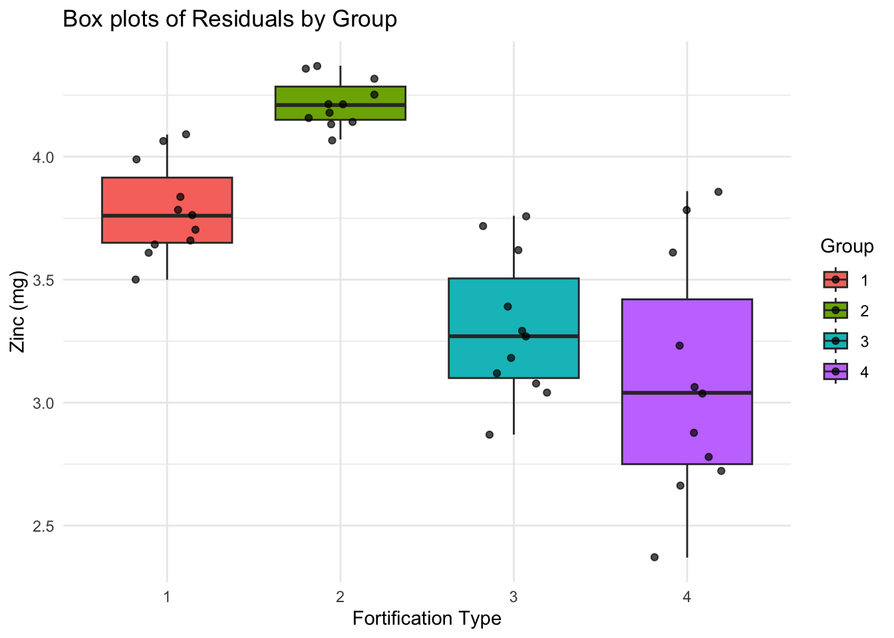
- From the box plot above, should the scientist assume that the population variance is equal for all treatment groups?
- The scientist analyzed the box plots you made and decided to continue with the experiment by assuming that the variances are equal. Calculate the group means and grand mean for the scientist. Round your answers to four decimal places when possible.
- \(\bar{x}_{1\cdot}=\)
- \(\bar{x}_{2\cdot}=\)
- \(\bar{x}_{3\cdot}=\)
- \(\bar{x}_{4\cdot}=\)
- \(\bar{x}_{\cdot\cdot}=\)
- What is the sum of squared errors (SSE)? Perform this calculation by hand and use the means you reported above. Round your answer to four decimal places.
- SSE\(=\)
- What is the sum of squares between groups (SSG)? Perform this calculation by hand and use the means you reported above. Give your answer to four decimal places.
- SSG\(=\)
- What is the total sum of squares? Give your answer to four decimal places. (Hint: use your answers to d. and e.).
- SST\(=\)
- Calculate the mean squared error and mean squared group values (MSE and MSG). Use the SSE and SSG values you reported above in your calculations and round to four decimal places.
- MSE\(=\)
- MSG\(=\)
- Under the null hypotheses, the test statistic has a distribution with \(v_1=\) and \(v_2=\) degrees of freedom.
- Report the value of the test statistic. Use the mean square values you reported above in your calculations and round to four decimal places.
- The ratio of omega-6 polyunsaturated fatty acids (PUFAs) to omega-3 PUFAs is a topic of growing interest among public health researchers. Omega-6 PUFAs generally contain precursors to pro-inflammatory molecules, while Omega-3 PUFAs generally contain precursors to anti-inflammatory molecules. A longevity researcher wanted to test whether the ratio of omega-6 to omega-3 PUFAs affects the lifespan of rats. The researcher has access to 24 rats and randomly assigned each rat to one of four diets: Low Ratio (2:1), Medium Ratio (4:1), High Ratio (8:1), and Extreme Ratio (10:1). The lifespan of the rats (in days) in each group are shown below. Assume that each treatment population shares the same variance and that the lifespans in each group are normally distributed.
| Group 1: Low Ratio (2:1) | Group 2: Medium Ratio (4:1) | Group 3: High Ratio (8:1) | Group 4: Extreme Ratio (10:1) |
|---|---|---|---|
| 719 | 693 | 680 | 648 |
| 725 | 703 | 692 | 661 |
| 761 | 757 | 755 | 732 |
| 731 | 712 | 702 | 673 |
| 733 | 714 | 705 | 675 |
| 764 | 761 | 760 | 739 |
- Calculate the group means and grand mean for the researcher. Round all answers to four decimal places when possible.
- \(\bar{x}_{1\cdot}=\)
- \(\bar{x}_{2\cdot}=\)
- \(\bar{x}_{3\cdot}=\)
- \(\bar{x}_{4\cdot}=\)
- \(\bar{x}_{\cdot\cdot}=\)
- What is the sum of squared errors (SSE)? Perform this calculation by hand and use the means you reported above. Round your answer to one decimal place.
- SSE\(=\)
- What is the sum of squares between groups (SSG)? Perform this calculation by hand using the means you reported above. Round your answer to one decimal place.
- SSG\(=\)
- What is the total sum of squares? Give your answer to one decimal place. (Hint: use your answers to b. and c.).
- SST\(=\)
- Calculate the mean squared error and mean squared group values (MSE and MSG). Use the SSE and SSG values you reported above in your calculations.
- MSE\(=\) (round answer to three decimal places)
- MSG\(=\) (round answer to one decimal place)
- Under the null hypotheses, the test statistic has a distribution with \(v_1=\) and \(v_2=\) degrees of freedom.
- Report the value of the test statistic and its p-value. Use the mean square values you reported above in your calculations and round your answers to four decimal places.
- Test statistic:
- p-value:
- Which of the following is a valid conclusion regarding whether the ratio of omega-6 to omega-3 PUFAs impacts lifespan in rats? Assume the researcher wants to use a significance level, α, of 0.10.
- The Santa Claus Rally is the name of a seasonal trend in the stock market during which stock prices generally rise on boosted sentiment and consumer spending between Christmas and New Year's Day. A stock trader at a large trading firm wants to see if an edge can be gained by trading a certain sector of the market during the Santa Claus Rally. The trader is specifically interested in five industries that he/she knows display outsized returns during this period: technology, finance, energy, industrials, and health care. The trader gathered the performance of each sector during the Santa Claus Rally for the past 75 years and randomly selected 15 years for analysis. The results are shown below. Assume that the population variance is the same across all sectors and that returns for each sector are normally distributed.
Technology Finance Energy Industrials Health Care 0.64 0.71 1.01 0.56 0.59 0.70 0.77 1.07 0.62 0.65 1.06 1.13 1.43 0.98 1.01 0.76 0.83 1.13 0.68 0.71 0.78 0.85 1.15 0.70 0.73 1.09 1.16 1.46 1.01 1.04 0.84 0.91 1.21 0.76 0.79 0.50 0.57 0.87 0.42 0.45 0.61 0.68 0.98 0.53 0.56 0.66 0.73 1.03 0.58 0.61 0.99 1.06 1.36 0.91 0.94 0.82 0.89 1.19 0.74 0.77 0.83 0.90 1.20 0.75 0.78 0.77 0.84 1.14 0.69 0.72 0.64 0.71 1.01 0.56 0.59
- Select the pair of hypotheses that the trader wants to test.
- Calculate the group means and grand mean for the researcher. Group 1 is technology, group 2 is finance, group 3 is energy, group 4 is industrials, and group 5 is health care. Round your answers to four decimal places when possible.
- \(\bar{x}_{1\cdot}=\)
- \(\bar{x}_{2\cdot}=\)
- \(\bar{x}_{3\cdot}=\)
- \(\bar{x}_{4\cdot}=\)
- \(\bar{x}_{5\cdot}=\)
- \(\bar{x}_{\cdot\cdot}=\)
- What is the sum of squared errors (SSE)? Perform this calculation by hand using the means you reported above. Round your answer to four decimal places.
- SSE\(=\)
- What is the sum of squares between groups (SSG)? Perform this calculation by hand and using the means you reported above. Round your answer to four decimal places.
- SSG\(=\)
- What is the total sum of squares? Give your answer to four decimal places. (Hint: use your answers to b. and c.).
- SST\(=\)
- Calculate the mean squared error and mean squared group values (MSE and MSG). Use the SSE and SSG values you reported above in your calculations and round to three decimal places.
- MSE\(=\)
- MSG\(=\)
- Under the null hypotheses, the test statistic has a distribution with \(v_1=\) and \(v_2=\) degrees of freedom.
- Report the value of the test statistic and the critical value of the test if \(\alpha=0.05\). Use the mean square values you reported above in your calculations and round your answers to one decimal places.
- Test statistic (use the
pffunction inR): - Critical value (use the
qffunction inR):
- Which of the following conclusions can the trader make regarding the difference in performance of different sectors during the Santa Claus Rally? Assume the trader wants to be 95% confident in his/her conclusion.
- Fill in the blank spaces in each of the tables below.
Table 18.1: ANOVA Table Source DF Sum of Squares Mean Square F P Treatments 5 A2 A3 A5 A6 Error A1 4.3752 A4 Total 179 4.9823
- A1 =
- A2 (round to four decimal places) =
- A3 (round to four decimal places) =
- A4 (round to four decimal places) =
- A5 (round to four decimal places, using the rounded values of A3 and A4 that you reported above) =
- A6 (round to four decimal places and use the
pffunction) =
Table 18.2: ANOVA Table Source DF Sum of Squares Mean Square F P Treatments B1 B3 0.3912 B5 B6 Error B2 10.4210 0.0755 Total 140 B4
- B1 =
- B2 (round to nearest integer) =
- B3 (round to four decimal places) =
- B4 (round to four decimal places) =
- B5 (round to four decimal places) =
- B6 (round to four decimal places and use the
pffunction) =
Table 18.3: ANOVA Table Source DF Sum of Squares Mean Square F P Treatments C1 96.3546 C5 1.63 C6 Error C2 C3 11.8227 Total 119 C4
- C1 (round to the nearest integer) =
- C2 =
- C3 (round to four decimal places) =
- C4 (round to four decimal places) =
- C5 (round to three decimal places) =
- C6 (round to four decimal places and use the
pffunction) =
Table 18.4: ANOVA Table Source DF Sum of Squares Mean Square F P Treatments 4 D2 D4 3.7234 D6 Error 195 97.8705 D5 Total D1 D3
- D1 =
- D2 (round to four decimal places) =
- D3 (round to four decimal places) =
- D4 (round to four decimal places) =
- D5 (round to four decimal places) =
- D6 (round to three decimal places and use the
pffunction) =
- A golf equipment manufacturer is preparing its next line of drivers. The manufacturer tests four different types of materials (metal, composite, carbon fiber, and titanium) to see if driving distance differs depending on the composition of the club head. There are 42 distance measurements for each material type. Assume that the distribution of driving distance for each material type is normal and that each group has the same population variance.
- Select the appropriate pair of hypotheses for this test.
- Fill in the ANOVA table for golf equipment manufacturer.
Table 18.5: ANOVA Table Source DF Sum of Squares Mean Square F P Treatments B1 B4 B6 B7 B8 Error B2 B5 14.5721 Total B3 2497.03
- B1 =
- B2 =
- B3 =
- B4 (round to four decimal places) =
- B5 (round to four decimal places) =
- B6 (round to four decimal places) =
- B7 (round to four decimal places) =
- B8 (round to four decimal places and use the
pffunction) =
- Fill in the ANOVA table for golf equipment manufacturer.
- Using your answers to part b., what conclusion can the golf equipment manufacturer come to regarding the difference in average driving distance for different driver materials? Assume the manufacturer wants to be 90% confident in their conclusion.
- A statistician for a Major League Baseball team is looking into whether average batting average differs across the eight defensive positions that are not the pitcher. The statistician took a random sample of 50 batting averages for each of the eight positions. The batting averages came from players who played the entire season at that position.
- Select the pair of hypotheses that the statistician wants to test.
- The statistician started filling out an ANOVA table to test the hypotheses you selected above, but got stuck. Fill out the rest of the table for the statistician.
Table 18.6: ANOVA Table Source DF Sum of Squares Mean Square F P Treatments B1 B4 B7 2.3199 B8 Error B2 B5 21.9840 Total B3 B6
- B1 =
- B2 =
- B3 =
- B4 (round to four decimal places) =
- B5 (round to three decimal places) =
- B6 (round to four decimal places) =
- B7 (round to four decimal places) =
- B8 (round to four decimal places) =
- The statistician started filling out an ANOVA table to test the hypotheses you selected above, but got stuck. Fill out the rest of the table for the statistician.
- The statistician wants you to check whether the data satisfy the assumptions necessary for a valid ANOVA analysis.
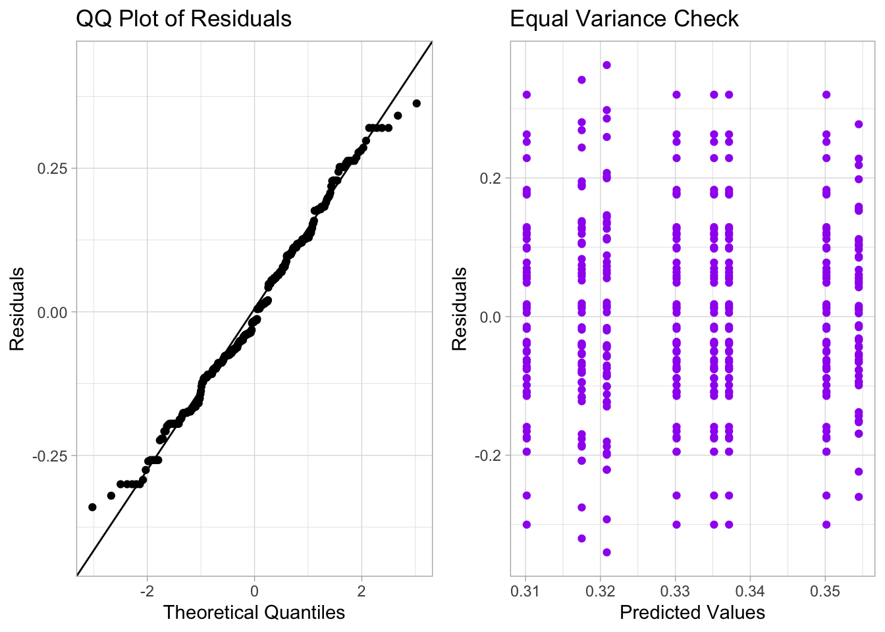
- Do the plots show evidence that the ANOVA assumptions are satisfied?
- The statistician wants you to check whether the data satisfy the assumptions necessary for a valid ANOVA analysis.
- What conclusion can the statistician come to regarding whether average batting average differs across the eight defensive positions that are not pitcher? Assume the statistician wants to be 99% confident in his/her answer?
PlantGrowthis a built-in dataset inR. The dataset shows the results of an experiment to compare plant yields (measured by the dry weight of plants) between a control group and two treatment groups. You will use this dataset andRfunctions to perform a one-way ANOVA test for the equality of means of the different groups in the dataset.
- Load the
PlantGrowthdataset in R using thedatafunction. Report the dimensions of the dataset and the names of the different factor levels.
- Dimensions: rows x columns
- What is the control group called?
- What is the first treatment group called?
- What is the second treatment group called?
- What is the response variable called?
- Load the
#Load Data
data(PlantGrowth)
#Analyze structure of dataset
##This gives the dimensions of the data,
##the response variable (group),
##and the names of the different treatment groups
str(PlantGrowth)## 'data.frame': 30 obs. of 2 variables:
## $ weight: num 4.17 5.58 5.18 6.11 4.5 4.61 5.17 4.53 5.33 5.14 ...
## $ group : Factor w/ 3 levels "ctrl","trt1",..: 1 1 1 1 1 1 1 1 1 1 ...#This is another way of looking at the names of the
#different treatment groups
levels(PlantGrowth$group)## [1] "ctrl" "trt1" "trt2"- Create a side-by-side box plot of the response variable for each treatment group.
# Load the PlantGrowth dataset
data(PlantGrowth)
# Create a side-by-side box plot
boxplot(weight ~ group,
data = PlantGrowth,
col = "maroon",
main = "Weight by Group",
xlab = "Group",
ylab = "Weight")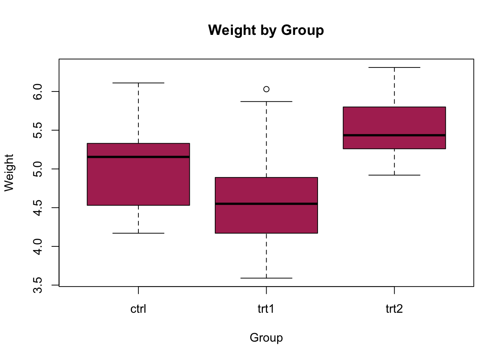
- Select the appropriate pair of hypotheses for a one-way ANOVA test for whether average plant yield varies across the groups.
- Use
Rto perform a one way ANOVA test for the pair of hypotheses you selected above. Use theaovandanovafunctions as necessary and report the values from yourRoutput.
- \(v_1=\)
- \(v_2=\)
- SSG\(=\)
- SSE\(=\)
- MSG\(=\)
- MSE\(=\)
- F\(=\)
- p-value\(=\)
- Use
#Create the one-way ANOVA model
pgmodel = aov(weight ~ group, data = PlantGrowth)
#View output by running
anova(pgmodel)| Df | Sum Sq | Mean Sq | F value | Pr(>F) | |
|---|---|---|---|---|---|
| group | 2 | 3.76634 | 1.8831700 | 4.846088 | 0.01591 |
| Residuals | 27 | 10.49209 | 0.3885959 | NA | NA |
- Create a QQ plot of the residuals from the ANOVA model you created in part d. Hint: use the
residualsfunction.
- Create a QQ plot of the residuals from the ANOVA model you created in part d. Hint: use the
#Create the one-way ANOVA model
pgmodel = aov(weight ~ group, data = PlantGrowth)
#Extract the residuals
pgres = residuals(pgmodel)
#Create the QQ plot
qqnorm(pgres)
qqline(pgres)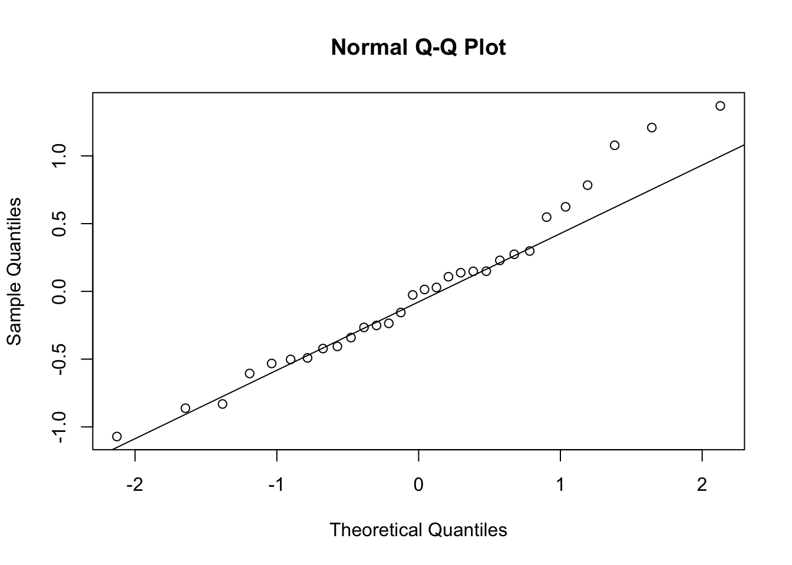
- From the side-by-side box plots in part b. and QQ plot of the residuals in part e., what is a reasonable conclusion regarding the ANOVA assumptions?
- What conclusion can you make regarding whether plant yield varies across the different treatment groups with α=0.05.
irisis a built-in dataset in R. The dataset shows measurements for four features of the Iris flower--sepal length, sepal width, petal length, and petal width--for three different species. You will use this dataset and R functions to test whether mean sepal width differs between the three iris species.
- Load the
irisdataset inRusing thedatafunction. Report the dimensions of the dataset and the names of the different factor levels.
- Dimensions: rows x columns
- In the
Speciescolumn, which species is listed first? - In the
Speciescolumn, which species is listed second? - In the
Speciescolumn, which species is listed third? - What is the title of the column that contains the measurements for the response variable you will use in your analysis?
- Load the
## 'data.frame': 150 obs. of 5 variables:
## $ Sepal.Length: num 5.1 4.9 4.7 4.6 5 5.4 4.6 5 4.4 4.9 ...
## $ Sepal.Width : num 3.5 3 3.2 3.1 3.6 3.9 3.4 3.4 2.9 3.1 ...
## $ Petal.Length: num 1.4 1.4 1.3 1.5 1.4 1.7 1.4 1.5 1.4 1.5 ...
## $ Petal.Width : num 0.2 0.2 0.2 0.2 0.2 0.4 0.3 0.2 0.2 0.1 ...
## $ Species : Factor w/ 3 levels "setosa","versicolor",..: 1 1 1 1 1 1 1 1 1 1 ...## [1] "setosa" "versicolor" "virginica"- Create a side-by-side box plot of the response variable for each treatment group.
# Load the iris dataset
data(iris)
# Create a side-by-side box plot
boxplot(Sepal.Width ~ Species,
data = iris,
col = "orange",
main = "Sepal Width by Species",
xlab = "Species",
ylab = "Sepal Width")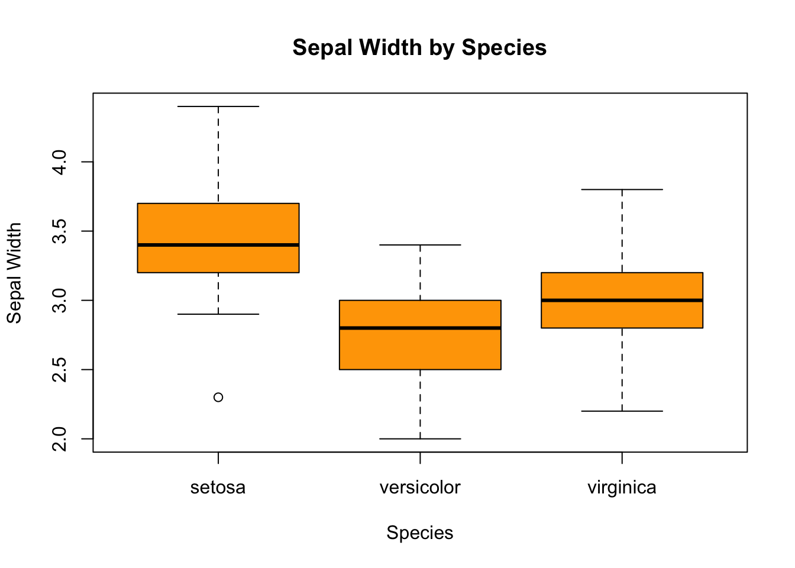
- Select the appropriate pair of hypotheses for a one-way ANOVA test for whether average sepal width varies across the iris species.
- Use R to perform a one way ANOVA test for the pair of hypotheses you selected above. Report the values from your R output. Hint: use the
aovandanovafunctions as necessary.
- \(v_1=\)
- \(v_2=\)
- SSG\(=\)
- SSE\(=\)
- MSG\(=\)
- MSE\(=\)
- F\(=\)
- p-value\(=\) \(*10^{-16}\)
- Use R to perform a one way ANOVA test for the pair of hypotheses you selected above. Report the values from your R output. Hint: use the
#Create the one-way ANOVA model
irismodel = aov(Sepal.Width ~ Species, data = iris)
#View output by running
anova(irismodel)| Df | Sum Sq | Mean Sq | F value | Pr(>F) | |
|---|---|---|---|---|---|
| Species | 2 | 11.34493 | 5.6724667 | 49.16004 | 0 |
| Residuals | 147 | 16.96200 | 0.1153878 | NA | NA |
- Create a QQ plot of the residuals from the ANOVA model you created in part d. Hint: use the
residualsfunction.
- Create a QQ plot of the residuals from the ANOVA model you created in part d. Hint: use the
#Create the one-way ANOVA model
irismodel = aov(Sepal.Width ~ Species, data = iris)
#Extract the residuals
irisres = residuals(irismodel)
#Create the QQ plot
qqnorm(irisres)
qqline(irisres)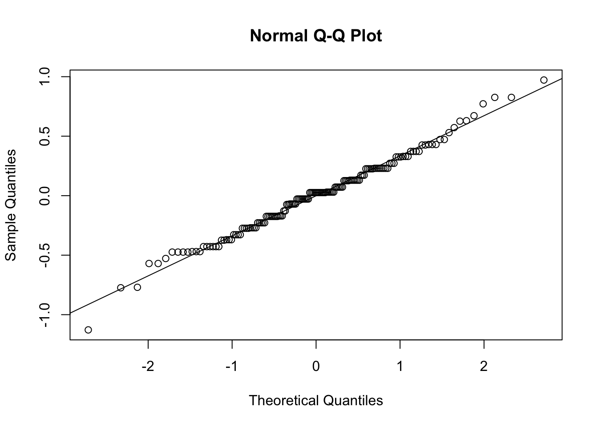
- From the side-by-side box plots in part b. and QQ plot of the residuals in part e., what is a reasonable conclusion regarding the ANOVA assumptions?
- What conclusion can you make regarding whether sepal width differs between the three iris species with α=0.01.
mtcarsis a built-in dataset inR. The dataset contains data extracted from the 1974 edition of Motor Trend Magazine, which includes performance measures and physical characteristics for 32 different automobiles. You will use this dataset andRfunctions to test whether average mpg differs between the cylinder types recorded in the data.
- Load the
mtcarsdataset inRusing thedatafunction. Report the dimensions of the dataset and the names of the different factor levels.
- Dimensions: rows x columns
- In the
cylcolumn, how many different cylinder numbers are there? - In the
cylcolumn, what is the highest number of cylinders a car can have? - In the
cylcolumn, what is the lowest number of cylinders a car can have? - What is the title of the column that contains the measurements for the response variable you will use in your analysis?
- Load the
## 'data.frame': 32 obs. of 11 variables:
## $ mpg : num 21 21 22.8 21.4 18.7 18.1 14.3 24.4 22.8 19.2 ...
## $ cyl : num 6 6 4 6 8 6 8 4 4 6 ...
## $ disp: num 160 160 108 258 360 ...
## $ hp : num 110 110 93 110 175 105 245 62 95 123 ...
## $ drat: num 3.9 3.9 3.85 3.08 3.15 2.76 3.21 3.69 3.92 3.92 ...
## $ wt : num 2.62 2.88 2.32 3.21 3.44 ...
## $ qsec: num 16.5 17 18.6 19.4 17 ...
## $ vs : num 0 0 1 1 0 1 0 1 1 1 ...
## $ am : num 1 1 1 0 0 0 0 0 0 0 ...
## $ gear: num 4 4 4 3 3 3 3 4 4 4 ...
## $ carb: num 4 4 1 1 2 1 4 2 2 4 ...#Get the different cylinder values from the cyl column
##Ensure that the cyl column is treated as a factor
levels(as.factor(mtcars$cyl))## [1] "4" "6" "8"- Create a side-by-side box plot of the response variable for each treatment group.
# Load the mtcars dataset
data(mtcars)
# Create a side-by-side box plot
boxplot(mpg ~ cyl,
data = mtcars,
col = "red",
main = "MPG by Number of Cylinders",
xlab = "Number of Cylinders",
ylab = "MPG")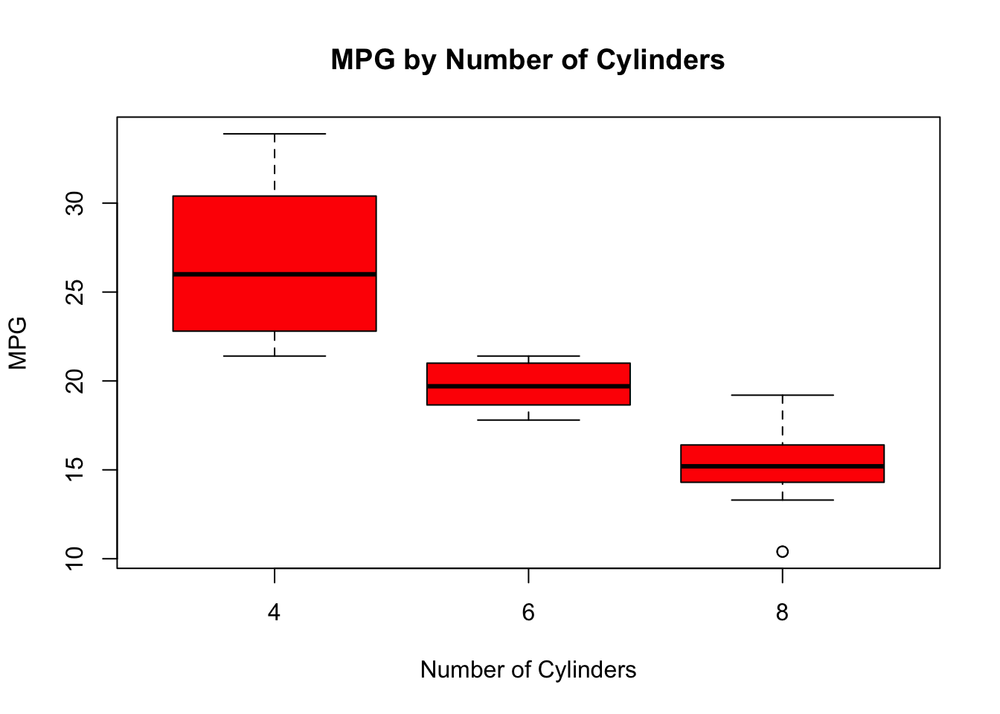
- Select the appropriate pair of hypotheses for a one-way ANOVA test for whether average mpg changes depending on whether a car has 4, 6, or 8 cylinders.
- Use
Rto perform a one way ANOVA test for the pair of hypotheses you selected above. use theaovandanovafunctions as necessary and report the values from yourRoutput.
- \(v_1=\)
- \(v_2=\)
- SSG\(=\)
- SSE\(=\)
- MSG\(=\)
- MSE\(=\)
- F\(=\)
- p-value\(=\) \(*10^{-9}\)
- Use
#Create the one-way ANOVA model
carsmodel = aov(mpg ~ as.factor(cyl), data = mtcars)
#View output by running
anova(carsmodel)| Df | Sum Sq | Mean Sq | F value | Pr(>F) | |
|---|---|---|---|---|---|
| as.factor(cyl) | 2 | 824.7846 | 412.39229 | 39.69752 | 0 |
| Residuals | 29 | 301.2626 | 10.38837 | NA | NA |
- Create a QQ plot of the residuals from the ANOVA model you created in part d. Hint: use the
residualsfunction.
- Create a QQ plot of the residuals from the ANOVA model you created in part d. Hint: use the
#Create the one-way ANOVA model
carsmodel = aov(mpg ~ as.factor(cyl), data = mtcars)
#Extract the residuals
carsres = residuals(carsmodel)
#Create the QQ plot
qqnorm(carsres)
qqline(carsres)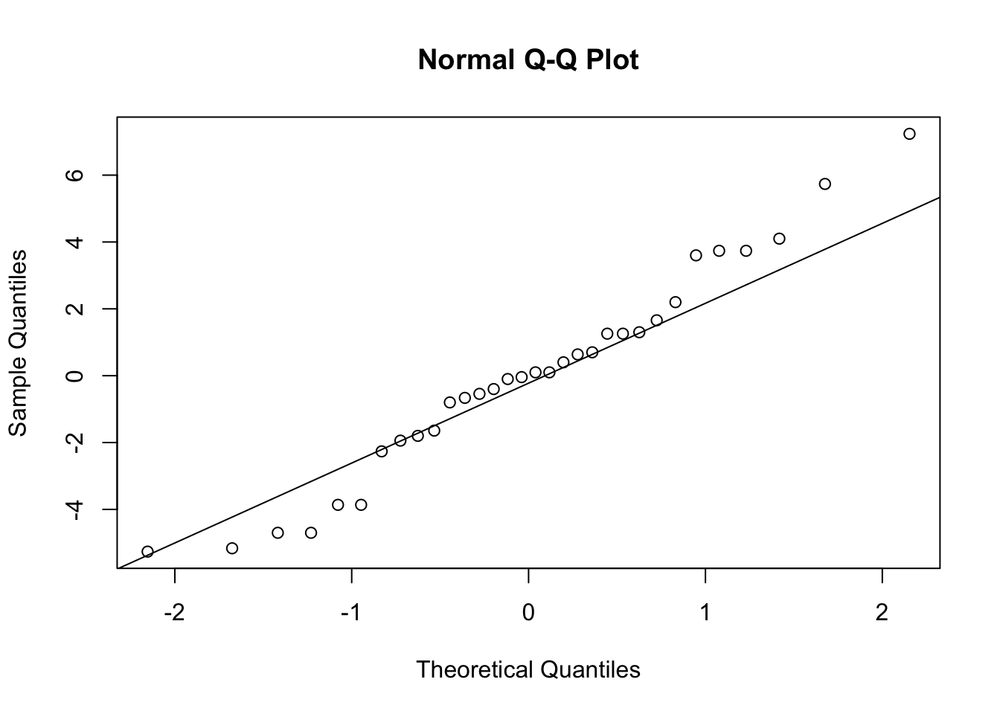
- From the side-by-side box plots in part b. and QQ plot of the residuals in part e., what is a reasonable conclusion regarding the ANOVA assumptions?
- What conclusion can you make regarding how average mpg differs between the three treatment groups (different cylinder numbers) with α=0.10.
The
InsectSpraysdataset contains data from a 1942 article in Biometrika titled "The Transformation of data from entomological field experiments." Thecountcolumn displays the number of insects killed by a given insecticide during the agricultural experiment. Thespraycolumn displays the types of insecticides tested. You will use this dataset andRfunctions to test whether the average number of insects killed varies for different insecticides.- Load the
InsectSpraysdataset in R using thedatafunction. Report the dimensions of the dataset and the number of levels in thesprayfactor.
- Load the
- Dimensions: rows x columns
- In the
spraycolumn, how many different types of insecticides are there? - How many observations/experimental runs are there for each type of insecticide?
- Which column will be your response variable in your ANOVA model?
- Which column will be your treatment variable in your ANOVA model?
## 'data.frame': 72 obs. of 2 variables:
## $ count: num 10 7 20 14 14 12 10 23 17 20 ...
## $ spray: Factor w/ 6 levels "A","B","C","D",..: 1 1 1 1 1 1 1 1 1 1 ...## [1] "A" "B" "C" "D" "E" "F"- Which of the following hypotheses can be tested using the one-way ANOVA procedure?
- Use
Rto perform a one way ANOVA test for the pair of hypotheses you selected above. Use theaovandanovafunctions as necessary and report the values from yourRoutput.
- \(v_1=\)
- \(v_2=\)
- SSG\(=\)
- SSE\(=\)
- MSG\(=\)
- MSE\(=\)
- F\(=\)
- p-value\(=\) \(*10^{-16}\)
- Use
- Create a QQ plot of the ANOVA residuals and a plot of the ANOVA residuals vs. ANOVA predicted values.
#Extract ANOVA residuals
res = residuals(a) #a is the ANOVA model
#Extract predicted values
preds = fitted(a)
#Create QQ plot of residuals
qqnorm(res)
qqline(res)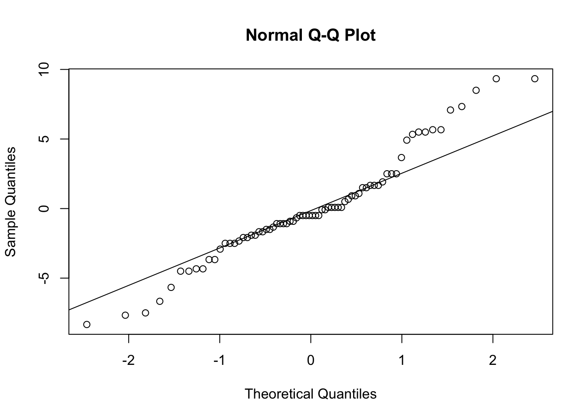
#Create scatterplot of residuals vs. fitted values
plot(preds,
res,
main="ANOVA Residuals vs. ANOVA Fitted Values",
xlab = "Predicted Values",
ylab = "Residuals")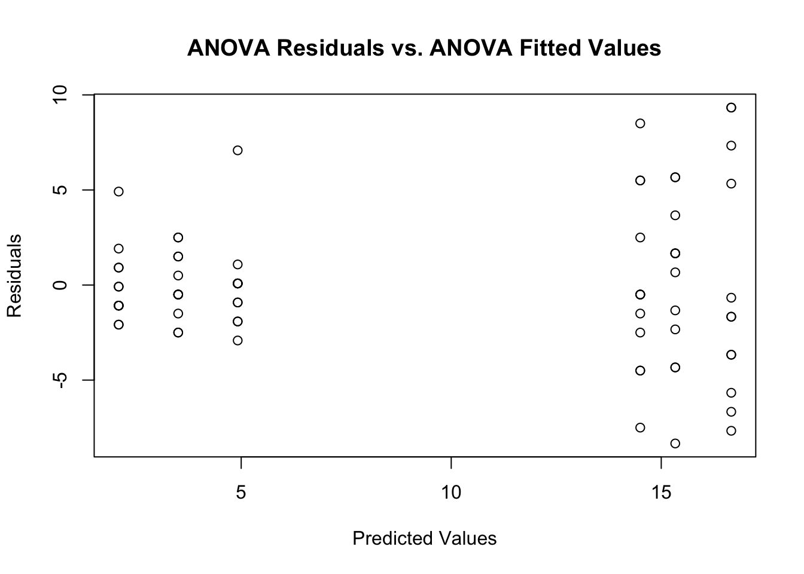
- What conclusion can you make about the ANOVA assumptions from the plots you made above?
- What conclusion can you make regarding how the average number of insects killed differs across insecticides with a significance level, α, 0.10?
- In exercise 9 you tested whether the average lifespan of rats changed depending on whether they are fed a diet with a low, medium, high, or extreme ratio of omega-6 to omega-3 polyunsaturated fatty acids. Now, you will perform the same test using
Rto see if your hand calculations match theaovfunction calculations. The data from the experiment is shown below.Group 1: Low Ratio (2:1) Group 2: Medium Ratio (4:1) Group 3: High Ratio (8:1) Group 4: Extreme Ratio (10:1) 719 693 680 648 725 703 692 661 761 757 755 732 731 712 702 673 733 714 705 675 764 761 760 739
- Create a data frame that contains each observation and its corresponding group. You will use this data frame to create your ANOVA model.
#First, create a vector for each diet/treatment group
group_1 = c(719, 725, 761, 731, 733, 764)
group_2 = c(693, 703, 757, 712, 714, 761)
group_3 = c(680, 692, 755, 702, 705, 760)
group_4 = c(648, 661, 732, 673, 675, 739)
#Now, create a data frame using the vectors. One column will contain the observations, and the other column will contain the group that each observation belongs to.
PUFA_data = data.frame(Observations = c(group_1,
group_2,
group_3,
group_4),
Group = c(rep(1, 6),
rep(2, 6),
rep(3, 6),
rep(4, 6)))- Fit an ANOVA model to the data using
R. (Hint, use theaovfunction)
- Fit an ANOVA model to the data using
- Use the
anovafunction to display the output from your ANOVA model. Report the exact values from theRoutput.
- \(v_1=\)
- \(v_2=\)
- SSG\(=\)
- SSE\(=\)
- MSG\(=\)
- MSE\(=\)
- F\(=\)
- p-value\(=\)
- Use the
- Create a side-by-side box plot of the observations for each diet/treatment group.
#Create a side-by-side box plot
boxplot(Observations ~ as.factor(Group),
data = PUFA_data,
col = "yellow",
main = "Lifespan (in days) For Each Diet", xlab = "Treatment Group",
ylab = "Lifespan (in days)")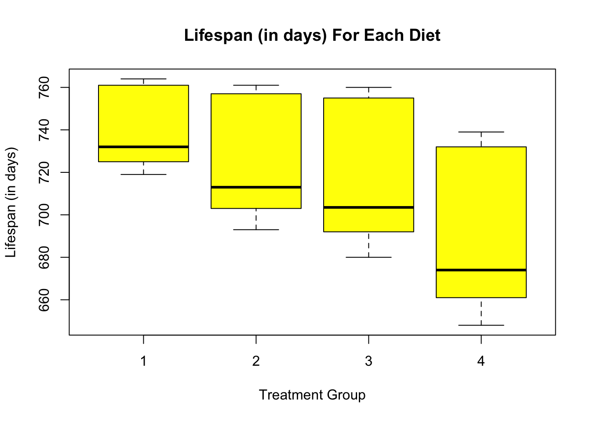
- Use
Rto create a QQ plot of the residuals from your ANOVA model.
- Use
#Save residuals
PUFA_residuals = resid(PUFA_model)
#Create QQ Plot
qqnorm(PUFA_residuals)
qqline(PUFA_residuals, col=3)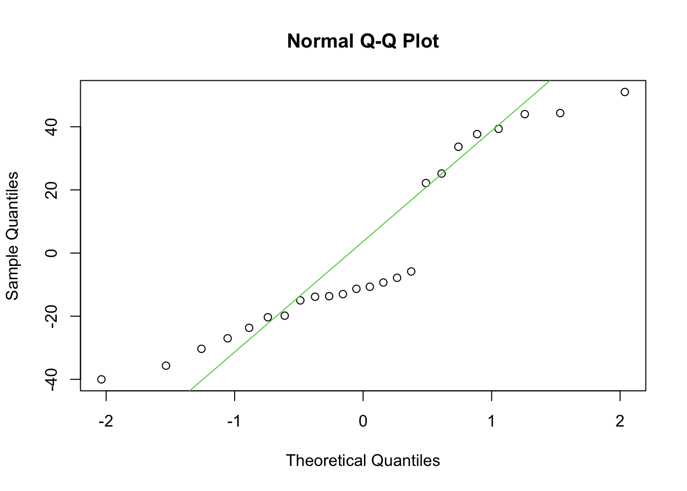
- Which of the following statements best describes the state of the assumptions underlying the ANOVA model you fit to the PUFA data?
- In exercise 10 you conducted an ANOVA F test by hand to see if the average return during the Santa Claus rally was the same for the technology, finance, energy, industrials, and health care sectors of the stock market. Now, you will perform the same test using
Rto see if your hand calculations match theaovfunction calculations. The data from the trader's random sample is shown below.Technology Finance Energy Industrials Health Care 0.64 0.71 1.01 0.56 0.59 0.70 0.77 1.07 0.62 0.65 1.06 1.13 1.43 0.98 1.01 0.76 0.83 1.13 0.68 0.71 0.78 0.85 1.15 0.70 0.73 1.09 1.16 1.46 1.01 1.04 0.84 0.91 1.21 0.76 0.79 0.50 0.57 0.87 0.42 0.45 0.61 0.68 0.98 0.53 0.56 0.66 0.73 1.03 0.58 0.61 0.99 1.06 1.36 0.91 0.94 0.82 0.89 1.19 0.74 0.77 0.83 0.90 1.20 0.75 0.78 0.77 0.84 1.14 0.69 0.72 0.64 0.71 1.01 0.56 0.59
- Create a data frame that contains the Santa Claus Rally returns in one column, and the sector corresponding to each return in another column. You will use this data frame to create your ANOVA model.
#First, create a vector for each stock market sector
technology= c(0.64, 0.70, 1.06, 0.76, 0.78, 1.09, 0.84, 0.50, 0.61, 0.66, 0.99, 0.82, 0.83, 0.77, 0.64)
finance = c(0.71, 0.77, 1.13, 0.83, 0.85, 1.16, 0.91, 0.57, 0.68, 0.73, 1.06, 0.89, 0.90, 0.84, 0.71)
energy = c(1.01, 1.07, 1.43, 1.13, 1.15, 1.46, 1.21, 0.87, 0.98, 1.03, 1.36, 1.19, 1.20, 1.14, 1.01)
industrials = c(0.56, 0.62, 0.98, 0.68, 0.70, 1.01, 0.76, 0.42, 0.53, 0.58, 0.91, 0.74, 0.75, 0.69, 0.56)
healthcare = c(0.59, 0.65, 1.01, 0.71, 0.73, 1.04, 0.79, 0.45, 0.56, 0.61, 0.94, 0.77, 0.78, 0.72, 0.59)
#Now, create a data frame using the vectors. One column will contain the returns, and the other column will contain the sector that each return belongs to.
santa_data = data.frame(Returns = c(technology,
finance,
energy,
industrials,
healthcare),
Sector = c(rep("Technology",
15),
rep("Finance",
15),
rep("Energy",
15),
rep("Industrials",
15),
rep("Healthcare",
15)))- Fit an ANOVA model to the data using R. (Hint, use the
aovfunction)
- Fit an ANOVA model to the data using R. (Hint, use the
- Use the
anovafunction to display the output from your ANOVA model. Report the exact values from theRoutput.
- \(v_1=\)
- \(v_2=\)
- SSG\(=\)
- SSE\(=\)
- MSG\(=\)
- MSE\(=\)
- F\(=\)
- p-value\(=\) \(*10^{-10}\)
- Use the
- Extract the residuals and fitted values from your ANOVA model. Then, create a plot of your ANOVA residuals vs. fitted values.
#Extract residuals using residuals function
Residuals = residuals(santa_model)
#Extract predicted values using fitted function
PredictedValues = fitted(santa_model)
#Create data frame
plot_data <- data.frame(Residuals =
Residuals,
PredictedValues =
fitted(santa_model))
#Scatterplot (using GGPLOT2 package)
resplot = ggplot(plot_data,
aes(x = PredictedValues,
y = Residuals)) +
geom_point(color="maroon") +
labs(
title = "Equal Variance Check",
x = "Predicted Values",
y = "Residuals")+
theme_light()
print(resplot)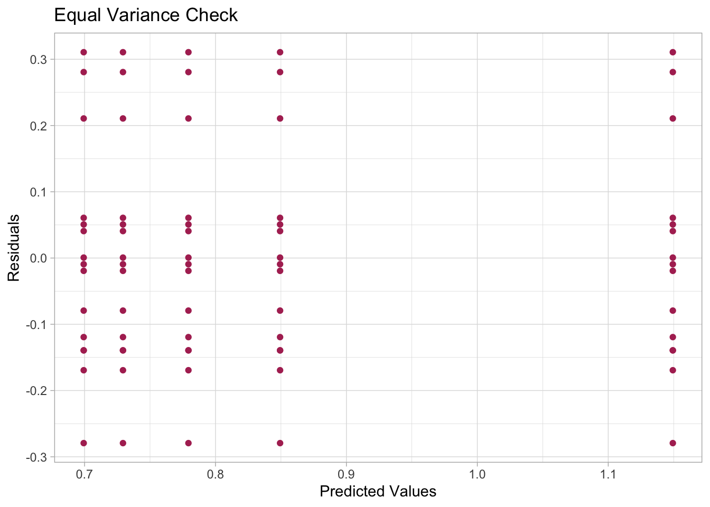
- Use the residuals you found in part d. to create a QQ plot of the residuals.
#QQ plot (using GGPLOT2 package)
qqplot = ggplot(plot_data,
aes(sample = Residuals)) +
stat_qq() +
stat_qq_line() +
labs(title = "QQ Plot of Residuals")+
theme_light()+
labs(title = "QQ Plot of Residuals",
x = "Theoretical Quantiles",
y = "Residuals")
print(qqplot)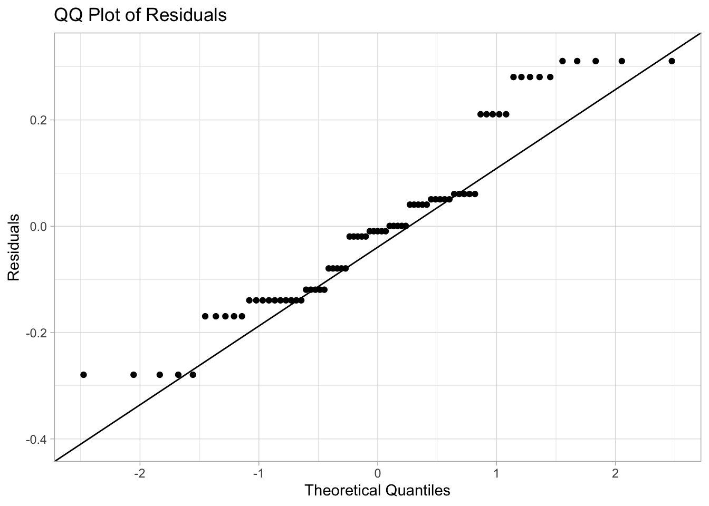
- Which of the following statements best describes the state of the assumptions underlying the ANOVA model you fit to the Santa Claus Rally return data?
- A public health professor at Texas A&M University received a grant from the National Institutes of Health to research how the BMI of Texas residents differs across groups with different exercise habits. The professor sent out a survey to 500 random people living in Texas. The survey asked respondents what their BMI was and to categorize their exercise habits into one of five categories: No Exercise (0 minutes per week), Light Exercise (30 minutes per week), Moderate Exercise (60 minutes per week), Intense Exercise (90 minutes per week), and Highly-Intense Exercise (120 minutes or more per week). The researcher randomly selected 20 respondents from each group to conduct the analysis. The results are shown below.
Group 1: No Exercise Group 2: Light Exercise Group 3: Moderate Exercise Group 4: Intense Exercise Group 5: Highly-Intense Exercise 26.97 25.60 24.30 22.00 23.30 30.94 28.90 27.60 25.30 26.60 52.40 46.79 45.49 43.19 44.49 34.55 31.91 30.61 28.31 29.61 35.25 32.49 31.19 28.89 30.19 54.28 48.35 47.05 44.75 46.05 39.23 35.81 34.51 32.21 33.51 18.52 18.55 17.25 14.95 16.25 25.46 24.33 23.03 20.73 22.03 28.35 26.74 25.44 23.14 24.44 48.39 43.44 42.14 39.84 41.14 38.02 34.80 33.50 31.20 32.50 38.51 35.21 33.91 31.61 32.91 35.03 32.31 31.01 28.71 30.01 27.03 25.64 24.34 22.04 23.34 55.14 49.07 47.77 45.47 46.77 39.67 36.18 34.88 32.58 33.88 10.10 11.53 10.23 7.93 9.23 42.12 38.21 36.91 34.61 35.91 28.03 26.47 25.17 22.87 24.17
- Create a data frame that contains each observation and its corresponding group. You will use this data frame to create your ANOVA model.
#Create a vector for each classification
no_exercise = c(26.97, 30.94, 52.40, 34.55, 35.25, 54.28, 39.23, 18.52,25.46, 28.35, 48.39, 38.02,38.51, 35.03, 27.03,55.14,39.67, 10.10, 42.12, 28.03)
light_exercise = c(25.60, 28.90, 46.79, 31.91, 32.49, 48.35, 35.81, 18.55, 24.33, 26.74, 43.44, 34.80, 35.21, 32.31, 25.64, 49.07, 36.18, 11.53, 38.21, 26.47)
moderate_exercise = c(24.30, 27.60, 45.49, 30.61, 31.19, 47.05, 34.51, 17.25, 23.03, 25.44, 42.14, 33.50, 33.91, 31.01, 24.34, 47.77, 34.88, 10.23, 36.91, 25.17)
intense_exercise = c(22.00, 25.30, 43.19, 28.31, 28.89, 44.75, 32.21, 14.95, 20.73, 23.14, 39.84, 31.20, 31.61, 28.71, 22.04, 45.47, 32.58, 7.93, 34.61, 22.87)
highlyintense_exercise = c(23.30, 26.60, 44.49, 29.61, 30.19, 46.05, 33.51, 16.25, 22.03, 24.44, 41.14, 32.50, 32.91, 30.01, 23.34, 46.77, 33.88, 9.23, 35.91, 24.17)
#Create data frame
experiment_data = data.frame(BMI=c(no_exercise,
light_exercise,
moderate_exercise,
intense_exercise,
highlyintense_exercise),
Group = c(rep("No Exercise",
20),
rep("Light Exercise",
20),
rep("Moderate Exercise",
20),
rep("Intense Exercise",
20),
rep("Highly Intense Exercise",
20)))- Fit an ANOVA model to your data using
aovfunction. Then, use theanovafunction to display the corresponding ANOVA table. Report the values you obtained below.
- \(v_1=\)
- \(v_2=\)
- SSG\(=\)
- SSE\(=\)
- MSG\(=\)
- MSE\(=\)
- F\(=\)
- p-value\(=\)
- Fit an ANOVA model to your data using
- Create a side-by-side box plot of BMI for each exercise category.
#Create a side-by-side box plot
boxplot(BMI ~ as.factor(Group),
data = experiment_data,
col = "lightgreen",
main = "BMI For Each Exercise Category",
xlab = "Exercise Category",
ylab = "BMI")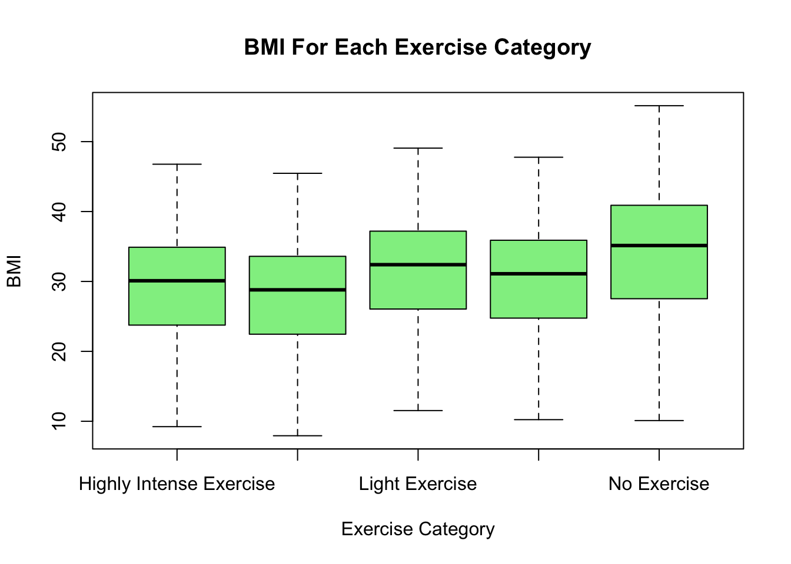
- Create a QQ plot of the residuals from your ANOVA model.
#Save residuals
experiment_residuals = resid(experiment_model)
#Create QQ Plot
qqnorm(experiment_residuals)
qqline(experiment_residuals, col=2)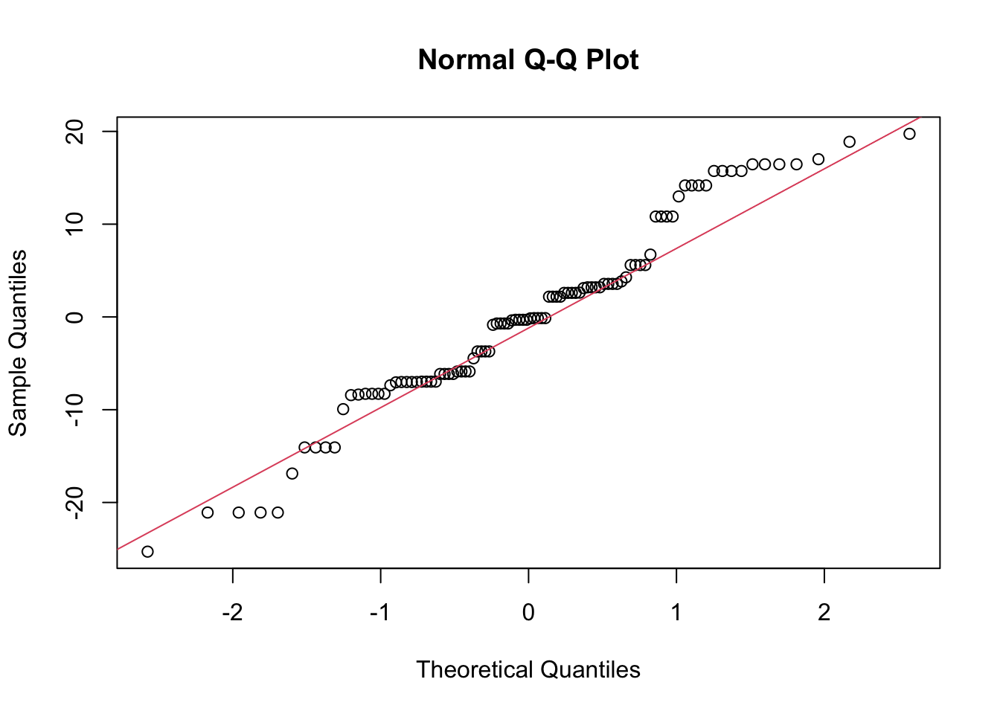
- Which of the following statements best describe the state of the assumptions underlying the ANOVA model you fit?
- Which of the following conclusions can the professor make regarding whether average BMI changes depending on exercise habits? Assume that the professor is using a significance level, α, of 0.10.
- Answer the following questions regarding the form and intuition behind the ANOVA "model equation."
- Which of the following is the correct ANOVA "model equation"?
- In the "model equation", what does Xij represent?
- In the "model equation", what does μ represent?
- In the "model equation", what does αi represent?
- In the "model equation", what assumptions are placed on eij?
- Hyperbaric oxygen therapy involves breathing oxygen in a pressurized chamber. The air pressure within a hyperbaric oxygen chamber can climb to two to three times the amount of normal air pressure, making it easier for the lungs to inhale oxygen. It is known in the medical literature that the increased oxygen intake from lying in a hyperbaric chamber can drive the production of growth hormone in humans. However, it is not known whether this increase in growth hormone is time dependent. A medical researcher decided to test whether the average concentration of growth hormone after being exposed to a hyperbaric chamber differs between subjects who stay in the chamber for different periods of time. To do this, the researcher randomly selected 125 healthy subjects from the general American population and randomly assigned 25 of them to each treatment group. The blood concentration of growth hormone for each patient, measured in nanograms per milliliter (ng/mL), is shown below.
Group 1: 0 Minutes Group 2: 1 Hour Group 3: 2 Hours Group 4: 4 Hours Group 5: 6 Hours 5.03 5.36 5.97 4.82 3.51 5.42 5.85 6.69 5.40 4.21 7.57 8.54 10.63 8.53 8.00 5.78 6.31 7.36 5.92 4.85 5.86 6.39 7.48 6.03 4.97 7.76 8.77 10.97 8.80 8.34 6.25 6.89 8.21 6.61 5.68 4.18 4.30 4.42 3.59 2.02 4.88 5.17 5.69 4.60 3.24 5.17 5.53 6.22 5.02 3.76 7.17 8.04 9.89 7.94 7.30 6.13 6.74 7.99 6.43 5.46 6.18 6.80 8.08 6.50 5.55 5.83 6.37 7.44 5.99 4.93 5.03 5.37 5.98 4.83 3.52 7.84 8.88 11.13 8.93 8.49 6.30 6.95 8.30 6.67 5.76 3.34 3.25 2.87 2.36 0.53 6.54 7.25 8.74 7.03 6.19 5.13 5.49 6.16 4.97 3.70 4.42 4.60 4.85 3.93 2.44 5.44 5.87 6.72 5.42 4.24 4.47 4.66 4.94 4.00 2.52 4.83 5.11 5.60 4.52 3.15 4.95 5.26 5.82 4.71 3.37
- Which of the following is an appropriate pair of hypotheses for the researcher to test using the notation found in the ANOVA "model equation"?
- Create a data frame that contains each observation and its corresponding treatment group. You will use this data frame to create your ANOVA model.
#Create a vector for each classification
zeromin = c(5.03, 5.42, 7.57, 5.78, 5.86, 7.76, 6.25, 4.18, 4.88, 5.17, 7.17, 6.13, 6.18, 5.83, 5.03, 7.84, 6.30, 3.34, 6.54, 5.13, 4.42, 5.44, 4.47, 4.83, 4.95)
onehour = c(5.36, 5.85, 8.54, 6.31, 6.39, 8.77, 6.89, 4.30, 5.17, 5.53, 8.04, 6.74, 6.80, 6.37, 5.37, 8.88, 6.95, 3.25, 7.25, 5.49, 4.60, 5.87, 4.66, 5.11, 5.26)
twohours = c(5.97, 6.69, 10.63, 7.36, 7.48, 10.97, 8.21, 4.42, 5.69, 6.22, 9.89, 7.99, 8.08, 7.44, 5.98, 11.13, 8.30, 2.87, 8.74, 6.16, 4.85, 6.72, 4.94, 5.60, 5.82)
fourhours = c(4.82, 5.40, 8.53, 5.92, 6.03, 8.80, 6.61, 3.59, 4.60, 5.02, 7.94, 6.43, 6.50, 5.99, 4.83, 8.93, 6.67, 2.36, 7.03, 4.97, 3.93, 5.42, 4.00, 4.52, 4.71)
sixhours = c(3.51, 4.21, 8.00, 4.85, 4.97, 8.34, 5.68, 2.02, 3.24, 3.76, 7.30, 5.46, 5.55, 4.93, 3.52, 8.49, 5.76, 0.53, 6.19, 3.70, 2.44, 4.24, 2.52, 3.15, 3.37)
#Create data frame
growth_data = data.frame(Level=c(zeromin,
onehour,
twohours,
fourhours,
sixhours),
Group = c(rep("Zero Minutes",
25),
rep("One Hour",
25),
rep("Two Hours",
25),
rep("Four Hours",
25),
rep("Six Hours",
25)))- Fit an ANOVA model to your data using
aovfunction. Then, use theanovafunction to display the corresponding ANOVA table. Report the values you obtained below.
- \(v_1=\)
- \(v_2=\)
- SSG\(=\)
- SSE\(=\)
- MSG\(=\)
- MSE\(=\)
- F\(=\)
- p-value\(=\) \(*10^{-5}\)
- Fit an ANOVA model to your data using
- Based on the results you found in part c., what conclusion can you make using a significance level, α, of 0.05.
18.12 Linear Regression
- Read the situations below, then correctly identify each variable as either the response or predictor.
- An archaeologist recently received a grant to travel to the Badlands, South Dakota, to study newly discovered dinosaur fossils. The archaeologist's first objective will be to date the fossils using radiocarbon dating. The archaeologist will measure the remaining amount of carbon-14 isotopes in each fossil, then estimate each fossil's age.
- The age of the fossil:
- The amount of carbon-14 isotopes remaining in the fossil:
- An epidemiologist wants to study the association between sedentary activity and telomere length in elderly males. The epidemiologist takes a random sample of elderly males and has them report the number of hours per day that they remain sedentary. The epidemiologist then records their telomere length using a blood sample. The epidemiologist hopes that sedentary time can be used to estimate telomere length in the future.
- Self-reported daily sedentary time:
- Telomere length:
- A college admissions counselor wants to see if there is a linear relationship between high school GPA and college GPA. The admissions counselor hopes that this relationship can be used to predict academic success for newly admitted college students.
- College GPA:
- High school GPA:
- Sir Francis Galton, the inventor of the simple linear regression technique, once used simple linear regression to find the association between parent height and child height. In a phenomenon called "regression to the mean", Galton found that tall parents often have children shorter than they are and short parents often have children taller than they are.
- Parent height:
- Child height:
- The simple linear regression model is predicated on the assumption that there is a linear relationship between the response variable and the predictor variable. For each of the following scatter plots, state whether the relationship between the response variable and the predictor variable appears to be linear.
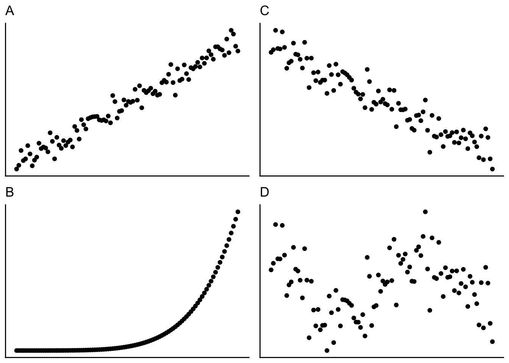
- Plot A
- Plot B
- Plot C
- Plot D
- The simple linear regression model is given by \(Y=\beta_0 + \beta_1X + \epsilon\). Answer the following questions about the \(\epsilon\) component of the SLR model equation.
- What does the variable ε represent in the SLR model equation?
- Why is the error term, ε, important in the SLR model?
- Which of the following assumptions are placed on the error term, ε, in the SLR model?
- What is the name of the regression line when ε is removed from the SLR model equation?
- Answer the following questions about the principle of least squares and least squares estimates.
- What is the principle of least squares?
- What is the measure of the goodness of fit of a line in linear regression?
- What is the line of "best fit" in light of the principle of least squares?
- The SLR regression coefficients are estimated such that...
- What is a residual in light of the principle of least squares?
- Let \(x\star\) represent a given value of the independent random variable, X. Use the SLR regression model \(Y=\beta_0 + \beta_1X + \epsilon\) and the properties of \(\epsilon\) to find \(\mu_{Y|x\star}\), the mean of \(Y\) when \(X=x\star\), and \(\sigma^2_{Y|x\star}\), the variance of \(Y\) when \(x=x\star\).
- Find \(\mu_{Y|x\star}\).
$$ \[\begin{gather*} \text{Remember that E[aX]=aE[X] and E[a] = a}\\\\ \text{Remember that } E[\epsilon]=0 \end{gather*}\] $$
$$
\[\begin{gather*} \text{Begin with the SLR Model equation}\\ Y=\beta_0 + \beta_1X + \epsilon\\\\ \text{Take the expected value of both sides given } X=x\star\\ E[Y|X=x\star]=E[\beta_0 + \beta_1X + \epsilon | X=x\star]\\\\ \text{Simplify using the properties of expectation}\\ E[Y|X=x\star]=E[\beta_0|X=x\star] + E[\beta_1x\star] + E[\epsilon | X=x\star] \\ E[Y|X=x\star]=\beta_0 + \beta_1E[x\star] + E[\epsilon | X=x\star] \\\\ \text{Simplify using the properties of } \epsilon \\ E[Y|X=x\star]=\beta_0 + \beta_1x\star \\ \end{gather*}\]
$$
- Find \(\sigma^2_{Y|x\star}\).
$$ \[\begin{gather*} \text{Remember that the variance of a constant, a, is Var[a] = 0.}\\\\ \text{Remember that } X \text{ is no longer a random variable once}\\ \text{it is observed as } x\star.\\\\ \text{Remember that Var} [\epsilon]=\sigma^2_{\epsilon}\\ \end{gather*}\] $$
$$
\[\begin{gather*} \text{Begin with the SLR Model equation}\\ Y=\beta_0 + \beta_1X + \epsilon\\\\ \text{Take the variance of both sides given } X=x\star\\ \text{Var}[Y|X=x\star]=\text{Var}[\beta_0 + \beta_1X + \epsilon | X=x\star] \\\\ \text{Simplify using the properties of variance}\\ \text{Var}[Y|X=x\star]=\text{Var}[\beta_0|X=x\star] + \text{Var}[\beta_1x\star] + \\ \text{Var}[\epsilon|X=x\star] \\\\ \text{Var}[Y|X=x\star]=\text{Var}[\epsilon|X=x\star] \\\\ \text{Simplify using the properties of } \epsilon \\ \text{Var}[Y|X=x\star]= \sigma^2_{\epsilon} \\ \end{gather*}\]
$$
- A researcher estimates the regression line between two variables as \(Y=21.4 + 7.2X + \epsilon\). It is known that \(\sigma^2_{\epsilon}= 4.7\).
- \(E[Y|X=2.1]=\)
- Var\([Y|X=2.1]=\)
- \(E[Y|X=10.2]=\)
- Var\([Y|X=10.2]=\)
- Say you work for a public health research firm that is trying to find the relationship between how much sugar a person eats per day and the number of minutes they exercise per week. Your boss is new to linear regression and wants to know the intuition behind the model. You show the derivations you performed in question 5. to your boss but he/she does not believe you. Instead, he/she wants to see these results in R. Use a simulation study to show your boss that the theoretical properties you derived about \(\mu_{Y|x\star}\) and \(\sigma^2_{Y|x\star}\) are true.
- In R, create two variables. The first variable is
sugar_intake, whose code is given below. These are sugar intake values for a hypothetical sample. Copy this code and enter it into your R Studio. The second variable is \(\epsilon\), which you can call "error," and should be generated using thernormfunction with a mean of 0 and a standard deviation of 20.2. This represents the true population error. Set your seed to 123 and generate 75 observations.
- In R, create two variables. The first variable is
#This is the code to generate the X variable. Copy it into your R Studio.
sugar_intake = rep(c(5:19),each=5)- After performing a literature review, you find that a group of researchers previously deduced the true relationship between weekly exercise minutes and daily sugar intake to be \(Y=120-3.5X + \epsilon\), where Y represents weekly exercise minutes and X represents daily sugar intake. In R, create a third variable, called
exercise_min, equal to120 - 3.5*sugar_intake + error. In this case, \(\beta_0=120\), \(\beta_1=-3.5\), andexercise_mincontains hypothetical observations generated from true data generating process.
- After performing a literature review, you find that a group of researchers previously deduced the true relationship between weekly exercise minutes and daily sugar intake to be \(Y=120-3.5X + \epsilon\), where Y represents weekly exercise minutes and X represents daily sugar intake. In R, create a third variable, called
- Create a data frame with
sugar_intakein one column and the correspondingexercise_minvalues in another column.
- Create a data frame with
- Use the true population line given in part b. to calculate \(\mu_{Y|X=x\star}\) when \(x\star=\) 5, 12, 16, and 19.
- \(\mu_{Y|X=5}\) =
- \(\mu_{Y|X=12}\) =
- \(\mu_{Y|X=16}\) =
- \(\mu_{Y|X=19}\) =
- Now, take the average value of
exercise_minwhensugar_intake= 5, 12, 16, and 19. Round your answers to four decimal places.
- Now, take the average value of
#To subset a column based on the values of another column, use the [] operator.
#For example, the average weekly exercise minutes when sugar intake is 5 is:
mean(df1$Exercise.Minutes[df1$Sugar.Intake==5])## [1] 106.4101- Mean of
exercise_minwhensugar_intakeis 5: - Mean of
exercise_minwhensugar_intakeis 12: - Mean of
exercise_minwhensugar_intakeis 16: - Mean of
exercise_minwhensugar_intakeis 19:- Do the results from your simulated sample provide evidence for the theoretical properties of E[Y] you found in question 5?
- Use the true population line given in part b. along with what you know of \(\epsilon\) to calculate the true standard deviation of Y, weekly exercise minutes, at each value of X, daily sugar intake.
- \(\sigma_Y=\)
- Now, use the hypothetical sample that you generated to calculate the variance of
exercise_minwhensugar_intake= 5, 12, 16, and 19. Round your answers to four decimal places.
- Now, use the hypothetical sample that you generated to calculate the variance of
#To subset a column based on the values of another column, use the [] operator.
#For example, the variance of weekly exercise minutes when sugar intake is 5 is:
sd(df1$Exercise.Minutes[df1$Sugar.Intake==5])## [1] 16.38264- Standard deviation of
exercise_minwhensugar_intakeis 5: - Standard deviation of
exercise_minwhensugar_intakeis 12: - Standard deviation of
exercise_minwhensugar_intakeis 16: - Standard deviation of
exercise_minwhensugar_intakeis 19:- Do the results from your simulated sample provide evidence for the theoretical properties of Var[Y] you found in question 5?
- A food scientist wants to study the relationship between the omega-3 content of chicken's eggs (in mg), \(Y\), and the chicken's average daily omega-3 consumption (in mg), \(X\). An in-depth literature review revealed that the relationship between \(Y\) and \(X\) can be explained via a simple linear regression model with the population regression line \(Y=24 + 0.8X + \epsilon\), where \(\epsilon \sim N(0,31.36)\)
Use the pnorm function when calculating p-values.
- For any given value of X=x*, what is the distribution of Y?
- Find the probability that a hen's egg will have more than 92 mg of omega-3 if the hen consumed an average of 75 mg of omega-3 per day. Round your answers to four decimal places.
- What is the test statistic value?
- What is the p-value? Use the rounded test statistic value you reported above.
- Find the probability that a hen's egg will have more than 92 mg of omega-3 if the hen consumed an average of 82 mg of omega-3 per day. Round your answers to four decimal places.
- What is the test statistic value?
- What is the p-value? Use the rounded test statistic value you reported above.
- Find the probability that a hen's egg will contain less than than 175 mg of omega-3 if the hen consumed an average of 200 mg of omega-3 per day. Round your answers to four decimal places.
- What is the test statistic value?
- What is the p-value? Use the rounded test statistic value you reported above.
- Let \(Y_1\) be the omega-3 content of a hen's egg when the hen consumes an average of 151 mg of omega-3 per day (\(X=151\)), and let \(Y_2\) be the omega-3 content of a hen's egg when the hen consumes an average of 152 mg of omega-3 per day (\(X=152\)). Round all answers to four decimal places.
- What distribution does \(Y_2-Y_1\) follow?
- What is the mean of \(Y_2-Y_1\)?
- What is the variance of \(Y_2-Y_1\)?
- What is the probability that \(Y_2\) is greater than \(Y_1\)? That is, \(P(Y_2-Y_1>0)\)?
- Report the test statistic:
- Report the p-value. Use the rounded test statistic value you reported above.
- The Texas A&M football team's strength and conditioning coach wants to study the relationship between a player's body weight (X) and the maximum weight the player can squat for one repetition (Y). It is known that the true regression line explaining the relationship between Y and X is \(Y=50+1.25X+\epsilon\).
- What is the expected value of a player's one-rep squat max if the player weighs 213 pounds?
- What is the correct interpretation of the true regression line slope, B_1?
- By how much can the strength and conditioning coach expect a player's one rep squat max to change if the player gains 100 pounds?
- By how much can the strength and conditioning coach expect a player's one rep squat max to change if the player loses 60 pounds?
- Referring to exercise 8., assume that \(\sigma^2_\epsilon=418.2025\). Round all answers to four decimal places.
Use the pnorm function when calculating p-values.
- What is the probability that the maximum weight that a player can squat for one rep is greater than 310 pounds when the player weighs 180 pounds.
Report the test statistic:
Report the p-value. Use the rounded test statistic value you reported above.
- What is the probability that the maximum weight that a player can squat for one rep is less than 330 pounds when the player weighs 210 pounds.
Report the test statistic:
Report the p-value. Use the rounded test statistic value you reported above.
- At the beginning of the football season, two students want to try out for the team. One student weighs 180 pounds while the other student weighs 200 pounds. What is the probability that the student that weighs 200 pounds will be able to squat 75 pounds more than the student that weighs 180 pounds? Assume the two observations are independent and round all answers to four decimal places.
\(E(Y_{X=200}-Y_{X=180})=\)
\(Var(Y_{X=200}-Y_{X=180})\) =
Report the test statistic. Do not round the standard deviation of \(Y_{X=200}-Y_{X=180}\) in your denominator:
Report the p-value. Use the rounded test statistic value you reported above.
- Let \(Y_{x_1}\) and \(Y_{x_2}\) be max squat observations at two different weights, \(x_1\) and \(x_2\). By how much would \(x_1\) have to exceed \(x_2\) for \(P(Y_1>Y_2)=0.90\)?
$$ \[\begin{gather*} P(Y_{x_1}>Y_{x_2})= 0.90 \\ = P(Y_{x_1} - Y_{x_2} > 0)= 0.90 \\ \text{Standardize both sides}\\ = P(\frac{Y_{x_1} - Y_{x_2} - E(Y_{x_1} - Y_{x_2})}{\sigma_{Y_{x_1} - Y_{x_2}}} > \frac{0-E(Y_{x_1} - Y_{x_2})}{\sigma_{Y_{x_1} - Y_{x_2}}})\\ = P(Z>\frac{0-E(Y_{x_1} - Y_{x_2})}{\sigma_{Y_{x_1} - Y_{x_2}}})\\ = P(Z>\frac{0-1.25(x_1-x_2)}{\sqrt{836.405}})\\ \\ \text{Find the z value corresponding with 0.90}\\ \text{qnorm(0.90, lower.tail=FALSE)}= -1.281552 \\\\ -1.281552 = \frac{0-1.25(x_1-x_2)}{\sqrt{836.405}} \\\\ (x_1-x_2) = \frac{-1.281552*\sqrt{836.405}}{-1.25} \end{gather*}\] $$
- A political scientist is researching the link between campaign spending and share of the total vote in United States presidential elections since 1844. The scientist found data containing campaign spending (in millions of 2020 adjusted dollars) in the 24 months prior to each presidential election for all major party nominees and the share of the vote total that each major party nominee received. A scatterplot of the data, with campaign spending in millions of dollars on the x-axis and share of total vote on the y-axis, is shown below.

- Which of the following best describes the relationship between share of the total vote and campaign spending? Is the share of the total vote completely determined by campaign spending?
- After an extensive literature review, the political scientist uncovered that the true relationship between the share of the total vote and campaign spending. It is \(Y=0.25+0.05X+\epsilon\), where \(Y\) is the share of the vote total, \(X\) is campaign spending in millions of 2020 dollars, and \(\epsilon\) is the true error with \(\sigma^2_\epsilon = 0.01\).
- What is the expected change in the share of the vote total if a candidate spends an additional one million dollars on their campaign?
- What is the expected change in the share of the vote total if a candidate spends an additional 2.25 million dollars on their campaign?
- Suppose that 7 candidates in 7 different elections independently decide to spend 4 million dollars on their campaign. What is the probability that all 7 candidates will lose their election (i.e., share of the total vote is less than 0.5)?
- What is the relevant test statistic (i.e., the test statistic if you were only calculating the probability for one candidate)?
- What is the probability that all 7 candidates lose? Give your answer to four decimal places.
Remember that if events A and B are independent, then \(P(A \cap B) = P(A) * P(B)\).
- Suppose that the political scientist is specifically interested in analyzing a candidate that ran for president in 2000 and 2004. If the candidate's campaign spent $1 million more in 2004 than 2000, what is the probability that the candidate will have a higher share of the total vote in 2004 than 2000. Round all answers to four decimal places.
- Select the probability that the political scientist is trying to solve for.
- \(E(Y_{2004}-Y_{2000})=\)
- \(Var(Y_{2004}-Y_{2000})=\)
- What is the relevant test statistic? Round your answer to four decimal places.
- What is the probability? Use
pnormand the rounded test statistic you entered above.
- What is the probability? Use
- The least squares estimate of the true regression slope, \(\hat{\beta}_1\), is equal to \(\frac{S_{xy}}{S_{xx}}\). The least squares estimate of the true regression intercept, \(\hat{\beta}_0\), is equal to \(\bar{y}-\hat{\beta}_1\bar{x}\). For each of the following situations, use the information given to calculate \(\hat{\beta}_0\) and \(\hat{\beta}_1\). Round all answers to four decimal places.
- It is known that \(n=34\), \(\sum{x_i}=780\), \(\sum{y_i}=578\), \(\sum{x_i}^2 = 54231\), \(\sum{y_i}^2=34778\), and \(\sum{x_iy_i}=45239\).
- \(\hat{\beta}_1=\)
- \(\hat{\beta}_0=\) (use the value of \(\hat{\beta}_1\) you reported above in your calculation)
- It is known that \(n=12\), \(\sum{x_i}=120\), \(\sum{y_i}=340\), \(\sum{x_i}^2 = 15980\), \(\sum{y_i}^2=43682\), and \(\sum{x_iy_i}=37175\).
- \(\hat{\beta}_1=\)
- \(\hat{\beta}_0=\) (use the value of \(\hat{\beta}_1\) you reported above in your calculation)
- It is known that \(n=150\), \(\sum{x_i}=500\), \(\sum{y_i}=980\), \(\sum{x_i}^2 = 56240\), \(\sum{y_i}^2=80976\), and \(\sum{x_iy_i}=68128\).
- \(\hat{\beta}_1=\)
- \(\hat{\beta}_0=\) (use the value of \(\hat{\beta}_1\) you reported above in your calculation)
- It is known that \(n=89\), \(\sum{x_i}=700\), \(\sum{y_i}=412\), \(\sum{x_i}^2 = 14890\), \(\sum{y_i}^2=34712\), and \(\sum{x_iy_i}=2578\).
- \(\hat{\beta}_1=\)
- \(\hat{\beta}_0=\) (use the value of \(\hat{\beta}_1\) you reported above in your calculation)
- Thyroglobulin is a protein that is created in and used by cells in the thyroid. Thyroglobulin plays a critical role in the creation of the thyroid and is the building block of all thyroid hormones. A medical doctor wants to see if there is a linear relationship between iodine concentration and thyroglobulin levels in the general population. The doctor took a random sample of 14 people from across the country, and knows that the distribution of thyroglobulin in the population is normal. The sample data is shown below.
Iodine Concentration (mcg/L) Thyroglobulin Level (ng/mL) 56.12 28.340 59.58 30.730 78.37 43.705 62.74 32.910 63.36 33.340 80.01 44.835 66.84 35.740 48.72 23.230 54.79 27.425 57.32 29.170 74.85 41.275 65.78 35.010 66.21 35.305 63.16 33.200
- Make a scatter plot of the data in R. Use Thyroglobulin Level as your response variable and Iodine Concentration as your predictor variable.
Use the plot function with x=Iodine Concentration and y=Thyroglobulin Level.
- What can you say of the apparent relationship between thyroglobulin level and iodine concentration from the scatter plot you created?
- Calculate the least squares estimate of the slope of the true regression line (\(\hat{\beta}_1\)). Do this using the equations for \(\hat{\beta}_1\) that can be derived from the "normal" equations.
- Compute \(\sum_{i=1}^{14} x_{i}y_{i}\)
- Compute \(\frac{(\sum_{i=1}^{14} x_{i}) (\sum_{i=1}^{14} y_{i})}{14}\)
- Using the past two values, compute \(S_{xy}\)
- Compute \(\sum_{i=1}^{14} x_i^2\)
- Compute \(\frac{(\sum_{i=1}^{14} x_i)^2}{14}\)
- Using the past two values, compute \(S_{xx}\)
- Finally, compute \(\hat{\beta}_1\). Hint: \(\hat{\beta}_1 = \frac{S_{xy}}{S_{xx}}\). Round your answer to four decimal places.
- Calculate the least squares estimate of the intercept of the true regression line (\(\hat{\beta}_0\)). Do this using the equations for \(\hat{\beta}_0\) that can be derived from the "normal" equations.
- Use the
meanfunction in R to compute \(\bar{y}\). Round your answer to four decimal places. - Use the
meanfunction in R to compute \(\bar{x}\). Round your answer to four decimal places. - Finally, compute \(\hat{\beta}_0\). Hint: \(\hat{\beta}_0=\bar{y}-\hat{\beta}_1\bar{x}\). Use the past values you reported and round your answer to four decimal places.
- The doctor sees four new patients. Estimate each patient's thyroglobulin level based on their observed iodine concentration. Round your answers to four decimal places and use the estimates for \(\hat{\beta}_0\) and \(\hat{\beta}_1\) you calculated above.
- Patient 1 has an iodine concentration of 52 mcg/L. Patient 1's estimated thyroglobulin level is ng/mL.
- Patient 2 has an iodine concentration of 68 mcg/L. Patient 2's estimated thyroglobulin level is ng/mL.
- Patient 3 has an iodine concentration of 74 mcg/L. Patient 3's estimated thyroglobulin level is ng/mL.
- Patient 4 has an iodine concentration of 82 mcg/L. Patient 4's estimated thyroglobulin level is ng/mL.
- Use the least squares estimates you calculated to superimpose the least squares regression line over the data in your scatter plot.
Use the abline function, where a=\(\hat{\beta}_0\) and b=\(\hat{\beta}_1\)
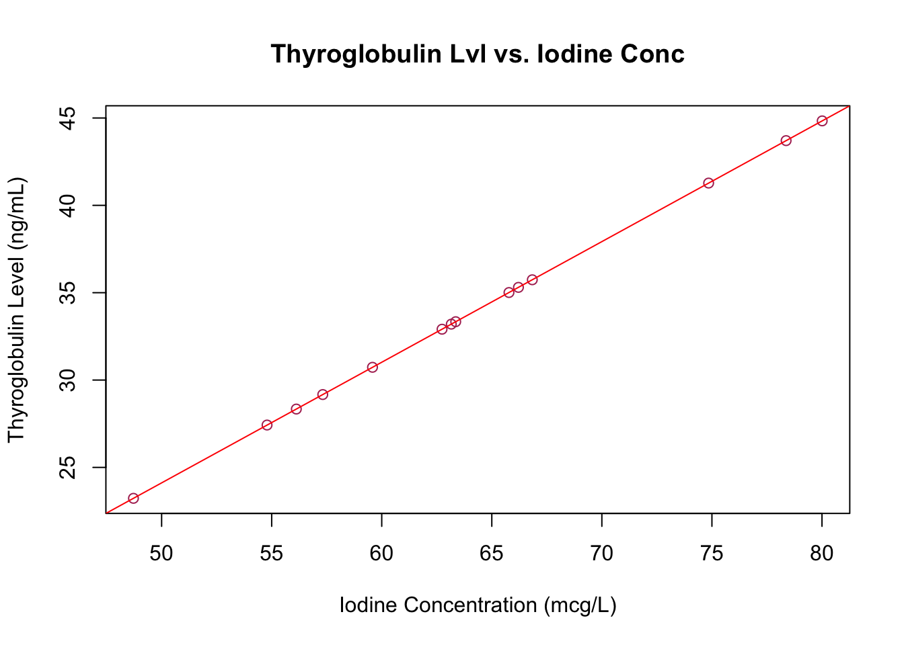
- An economist in the Texas government wants to see if there is a linear relationship between per-year tuition costs and ACT scores at public institutions of higher education in Texas. The economist believes that higher ACT scores should result in more grants and scholarships, and thus less per-year tuition costs. The economist took a survey of 18 students attending public universities in Texas and asked them what they paid for tuition per year and what their highest ACT score was. The economist knows that the population distributions of tuition costs and ACT scores are normal. The results of the survey are shown below.
ACT Score Per-Year Tuition 20 16719.76 22 15084.91 31 7879.35 23 14335.25 24 13464.64 32 7057.53 25 12730.46 17 19067.47 20 16656.57 21 15877.17 29 9512.04 25 12679.91 25 12700.39 24 13455.34 20 16722.08 32 7093.46 25 12748.93 13 22316.69
- Make a scatter plot of the data in R. Use Per-Year Tuition as your response variable and ACT Score as your predictor variable.
Use the plot function with x=ACT Score and y=Per-Year Tuition.
- Calculate the least squares estimate of the slope of the true regression line (\(\hat{\beta}_1\)). Do this using the equations for \(\hat{\beta}_1\) that can be derived from the "normal" equations. In this case
- Compute \(\sum_{i=1}^{18} x_{i}y_{i}\)
- Compute \(\frac{(\sum_{i=1}^{18} x_{i}) (\sum_{i=1}^{18} y_{i})}{18}\)
- Using the past two values, compute \(S_{xy}\)
- Compute \(\sum_{i=1}^{18} x_i^2\)
- Compute \(\frac{(\sum_{i=1}^{18} x_i)^2}{18}\)
- Using the past two values, compute \(S_{xx}\)
- Finally, compute \(\hat{\beta}_1\). Hint: \(\hat{\beta}_1 = \frac{S_{xy}}{S_{xx}}\). Round your answer to four decimal places.
- Calculate the least squares estimate of the intercept of the true regression line (\(\hat{\beta}_0\)). Do this using the equations for \(\hat{\beta}_0\) that can be derived from the "normal" equations.
- Use the
meanfunction in R to compute \(\bar{y}\). Round your answer to four decimal places. - Use the
meanfunction in R to compute \(\bar{x}\). Round your answer to four decimal places. - Finally, compute \(\hat{\beta}_0\). Hint: \(\hat{\beta}_0=\bar{y}-\hat{\beta}_1\bar{x}\). Use the past values you reported and round your answer to four decimal places.
- Below is a table of the point estimate of per-year tuition and the actual per-year tuition for each observed ACT score. The estimates were calculated using the regression coefficients you estimated above.
Observed ACT Observed Tuition Predicted Tuition 18 13 22316.69 22302.557 8 17 19067.47 19099.586 1 20 16719.76 16697.358 9 20 16656.57 16697.358 15 20 16722.08 16697.358 10 21 15877.17 15896.616 2 22 15084.91 15095.873 4 23 14335.25 14295.130 5 24 13464.64 13494.388 14 24 13455.34 13494.388 7 25 12730.46 12693.645 12 25 12679.91 12693.645 13 25 12700.39 12693.645 17 25 12748.93 12693.645 11 29 9512.04 9490.674 3 31 7879.35 7889.189 6 32 7057.53 7088.446 16 32 7093.46 7088.446
- Below is a table of the point estimate of per-year tuition and the actual per-year tuition for each observed ACT score. The estimates were calculated using the regression coefficients you estimated above.
Calculate the sum of squared residuals (SSE). (Hint: create a vector for actual and predicted tuition scores in R). Round your answer to four decimal places. \(\sum_{i=1}^{18} y_i-\hat{y}_i=\)
Calculate the estimate of \(\sigma_{e}^2\). Round your answer to four decimal places. \(\hat{\sigma}_{e}^2=\)
- What is \(\hat{\sigma}_{e}\)? Round your answer to four decimal places.
- Use the least squares estimates you calculated above to predict the value of the per-year tuition for students with the following ACT scores (round all answers to four decimal places):
- With an ACT score of 23:
- With an ACT score of 27:
- With an ACT score of 30:
- With an ACT score of 18:
- Each of the following tables below has three columns. The first column contains values from a predictor variable. The second column contains values from a response variable. The third column contains the predicted value of the response from a linear regression model. The fourth column contains the residuals. Compute the residuals, SSE, and \(\hat{\sigma_\epsilon}^2\) for each table. Assume that \(\epsilon \sim N(0, \sigma^2_\epsilon)\)
| Predictor | Response | Predicted Value | Residual |
|---|---|---|---|
| 1.00 | -2.02 | 4.33 | A |
| 3.25 | -8.25 | -4.36 | B |
| 5.50 | 7.69 | -13.06 | C |
| 7.75 | -26.18 | -21.75 | D |
| 10.00 | -36.53 | -30.45 | E |
- Calculate the residuals using the table above.
- Residual A:
- Residual B:
- Residual C:
- Residual D:
- Residual E:
- Calculate the SSE (error sum of squares). Round your answer to four decimal places.
- SSE =
- Calculate \(\hat{\sigma_\epsilon}^2\). Round your answer to four decimal places.
- \(\hat{\sigma_\epsilon}^2\) =
| Predictor | Response | Predicted Value | Residual |
|---|---|---|---|
| 1.00 | 46.27 | 52.95 | A |
| 4.29 | 51.37 | 55.32 | B |
| 7.57 | 68.15 | 57.69 | C |
| 10.86 | 58.71 | 60.07 | D |
| 14.14 | 61.64 | 62.44 | E |
| 17.43 | 76.79 | 64.81 | F |
| 20.71 | 69.22 | 67.19 | G |
| 24.00 | 57.88 | 69.56 | H |
- Calculate the residuals using the table above.
- Residual A:
- Residual B:
- Residual C:
- Residual D:
- Residual E:
- Residual F:
- Residual G:
- Residual H:
- Calculate the SSE (error sum of squares). Round your answer to four decimal places.
- SSE =
- Calculate \(\hat{\sigma_\epsilon}^2\). Round your answer to four decimal places.
- \(\hat{\sigma_\epsilon}^2\) =
| Predictor | Predicted Value | Response | Residual |
|---|---|---|---|
| 1 | -37.98 | -41.99 | A |
| 12 | 19.45 | 17.08 | B |
| 23 | 76.87 | 81.98 | C |
| 34 | 134.29 | 133.78 | D |
| 45 | 191.71 | 191.77 | E |
| 56 | 249.13 | 255.86 | F |
| 67 | 306.56 | 308.59 | G |
| 78 | 363.98 | 359.44 | H |
| 89 | 421.40 | 419.50 | I |
| 100 | 478.82 | 478.22 | J |
- Calculate the residuals using the table above.
- Residual A:
- Residual B:
- Residual C:
- Residual D:
- Residual E:
- Residual F:
- Residual G:
- Residual H:
- Residual I:
- Residual J:
- Calculate the SSE (error sum of squares). Round your answer to four decimal places.
- SSE =
- Calculate \(\hat{\sigma_\epsilon}^2\). Round your answer to four decimal places.
- \(\hat{\sigma_\epsilon}^2\) =
- Answer the following questions about the coefficient of determination, \(r^2\).
- Select the correct interpretation of the coefficient of determination.
- Match each of the plots below with its corresponding \(r^2\) value.
- Plot 1 has an r-squared of:
- Plot 2 has an r-squared of:
- Plot 3 has an r-squared of:
- Plot 4 has an r-squared of:
- An exercise scientist wants to see if there is a linear relationship between the number of hours spent in the gym and the amount of muscle mass gained over a period of one year. The scientist recruited 7 random people for the study and assigned each of them to either workout 0, 2, 4, 6, 8, 10, or 12 hours per week for one year. At the end of the year, the scientist recorded the gain in muscle mass for each participant. The results are shown below.
Predictor Response 0 1.71 2 4.07 4 9.79 6 7.96 7 8.90 10 14.94 12 13.66
- Calculate the least squares estimate of the slope of the true regression line (\(\hat{\beta}_1\)). Do this using the equations for \(\hat{\beta}_1\) that can be derived from the "normal" equations. Round all answers to four decimal places.
- Compute \(\sum_{i=1}^{7} x_{i}y_{i}\)
- Compute \(\frac{(\sum_{i=1}^{7} x_{i}) (\sum_{i=1}^{7} y_{i})}{7}\)
- Using the past two values, compute \(S_{xy}\)
- Compute \(\sum_{i=1}^{7} x_i^2\)
- Compute \(\frac{(\sum_{i=1}^{7} x_i)^2}{7}\)
- Using the past two values, compute \(S_{xx}\)
- Finally, compute \(\hat{\beta}_1\). Hint: \(\hat{\beta}_1 = \frac{S_{xy}}{S_{xx}}\).
- Calculate the least squares estimate of the intercept of the true regression line (\(\hat{\beta}_0\)). Do this using the equations for \(\hat{\beta}_0\) that can be derived from the "normal" equations.
- Use the
meanfunction in R to compute \(\bar{y}\). Round your answer to four decimal places. - Use the
meanfunction in R to compute \(\bar{x}\). Round your answer to four decimal places. - Finally, compute \(\hat{\beta}_0\). Use the past values you reported and round your answer to four decimal places.
| Predictor | Response | Predicted Value |
|---|---|---|
| 0 | 1.71 | 2.63 |
| 2 | 4.07 | 4.71 |
| 4 | 9.79 | 6.79 |
| 6 | 7.96 | 8.87 |
| 7 | 8.90 | 9.91 |
| 10 | 14.94 | 13.03 |
| 12 | 13.66 | 15.11 |
- Calculate \(SSR\), \(SSE\), and \(SST\). Round your answers to four decimal places. Hint: Use the
sumfunction.
- \(SSR=\)
- \(SSE=\)
- \(SST=\)
- Calculate \(SSR\), \(SSE\), and \(SST\). Round your answers to four decimal places. Hint: Use the
- Calculate \(\hat{\sigma^2}_\epsilon\). Use the \(SSE\) value you reported above in your calculation. Round your answer to three decimal places.
- \(\hat{\sigma^2}_\epsilon=\)
- Calculate \(r^2\). Use the \(SSE\), \(SSR\), or \(SST\) values you reported above in your calculation. Round your answer to four decimal places.
- \(r^2=\)
- You will now use R to verify your answers to question 16. Use the sports scientist's sample results and R to answer the following questions.
Predictor Response 0 1.71 2 4.07 4 9.79 6 7.96 7 8.90 10 14.94 12 13.66
- Create two vectors. One vector will contain the predictor variable values and one vector will contain the response variable values.
predictor = c(values); response = c(values)
- Fit linear regression model to the data using the
lm()function.
- Fit linear regression model to the data using the
lm(response~predictor)
- Apply the
summaryfunction to the model object to view the estimated regression coefficients and properties.
- \(\hat{\beta}_1\) =
- \(\hat{\beta}_0\) =
- \(r^2=\) (Report the
Multiple R-squaredvalue) - \(\hat{\sigma}_\epsilon\) =
- Apply the
- Apply the
anovafunction to the model object to view the ANOVA breakdown of the model.
- \(SSR=\)
- \(SSE=\)
- \(\hat{\sigma^2}_\epsilon\) =
- Apply the
- The total sum of squares in a simple linear regression model, \(\sum(y_i-\bar{y})^2\), can be decomposed into the sum of squares explained by the regression model and the sum of squares that are not unexplained by the regression model (i.e., error). This is similar to the decomposition of the total sum of squares you saw in the ANOVA procedure. Complete the following ANOVA tables for simple linear regression using the information provided. Round all answers to four decimal places. Use the
pffunction in R to find the probabilities.
Table 18.7: ANOVA Table for Simple Linear Regression Source of Variation DF Sum of Squares Mean Square F P Regression A1 A3 5400 2.25 A7 Error 198 A4 A6 Total A2 A5
- A1 =
- A2 =
- A3 =
- A4 =
- A5 =
- A6 =
- A7 =
Table 18.8: ANOVA Table for Simple Linear Regression Source of Variation DF Sum of Squares Mean Square F P Regression B1 50234 B4 B6 B7 Error B2 B3 B5 Total 553 38871069
- B1 =
- B2 =
- B3 =
- B4 =
- B5=
- B6 =
- B7 =
Table 18.9: ANOVA Table for Simple Linear Regression Source of Variation DF Sum of Squares Mean Square F P Regression C1 C4 C6 4.5 C7 Error C2 22575 150.5 Total C3 C5
- C1 =
- C2 =
- C3 =
- C4 =
- C5 =
- C6 =
- C7 =
Table 18.10: ANOVA Table for Simple Linear Regression Source of Variation DF Sum of Squares Mean Square F P Regression D1 D3 49256 D7 0.1586938 Error D2 D4 D6 Total 224 D5
- D1 =
- D2 =
- D3 =
- D4 =
- D5 =
- D6 =
- D7 (Hint: use
qfin R) =
- Answer the following multiple choice questions regarding the properties of the least squares estimate of the true regression slope, \(\hat{\beta}_1\).
- Which of the following correctly describes the mean of the least squares estimate of the true regression slope?
- Which of the following correctly describes the variance of the least squares estimate of the true regression slope?
- Which of the following correctly describes the distribution of the least squares estimate of the true regression slope?
- The neutrality of money theory states that changes in the supply of money in an economy will not affect the output of an economy over the long run. In other words, the theory states that there is no relationship between money supply and the output of an economy. To test this theory, an economist collected data from 15 countries. The dataset contains the money supply and the real GDP per capita for each country's economy in 2020. Assume that \(\epsilon\sim N(0, 250000)\).
| Money Supply | GDP per Capita |
|---|---|
| 8674.69 | 36716.86 |
| 11565.74 | 42788.05 |
| 12197.62 | 44115.01 |
| 12220.79 | 44163.67 |
| 12771.69 | 45320.55 |
| 13849.11 | 47583.14 |
| 15352.54 | 50740.34 |
| 15553.41 | 51162.17 |
| 15646.44 | 51357.52 |
| 16799.07 | 53778.05 |
| 17003.86 | 54208.10 |
| 17304.58 | 54839.62 |
| 21120.41 | 62852.86 |
| 22793.54 | 66366.44 |
| 23575.32 | 68008.18 |
## Warning in summary.lm(l): essentially perfect fit: summary may be unreliable- Calculate the least squares estimate of the slope of the true regression line (\(\hat{\beta}_1\)). Do this using the equations for \(\hat{\beta}_1\) that can be derived from the "normal" equations. Round all answers to four decimal places.
- Compute \(\sum_{i=1}^{15} x_{i}y_{i}\)
- Compute \(\frac{(\sum_{i=1}^{15} x_{i}) (\sum_{i=1}^{15} y_{i})}{15}\)
- Using the past two values, compute \(S_{xy}\)
- Compute \(\sum_{i=1}^{15} x_i^2\)
- Compute \(\frac{(\sum_{i=1}^{15} x_i)^2}{15}\)
- Using the past two values, compute \(S_{xx}\)
- Finally, compute \(\hat{\beta}_1\).
- Calculate \(\sigma_{\hat{\beta}_1}\). Use the \(S_{xx}\) value you reported in part a. and round your answer to four decimal places.
- Assume that the true value of \(\beta_1\) is 2. What is the probability that an estimate of \(\beta_1\) based on the sample data would fall between 1.96 and 2.04? Use the rounded value of \(\sigma_{\hat{\beta}_1}\) you reported in part b., use the
pnormfunction in R, and round your answer to four decimal places.
- Assume that the true value of \(\beta_1\) is 2. What is the probability that an estimate of \(\beta_1\) based on the sample data would fall between 1.96 and 2.04? Use the rounded value of \(\sigma_{\hat{\beta}_1}\) you reported in part b., use the
- Now calculate \(s_{\hat{\beta}_1}\) using \(\hat{\sigma_\epsilon}\). Round your answers to four decimal places.
- \(\hat{\sigma_\epsilon}=\)
- \(s_{\hat{\beta}_1}=\) (use the value of \(\hat{\sigma_\epsilon}\) you reported above)
- Assume that the true value of \(\beta_1\) is 2, but you do not know \(\sigma_{\hat{\beta}_1}\). Calculate the probability that an estimate of \(\beta_1\) based on the sample data would fall between 1.96 and 2.04 using the value of \(s_{\hat{\beta}_1}\) you calculated above. (Hint: use the \(t\) distribution instead of the standard normal distribution).
- Say you work as a data scientist for a popular clothing brand. The marketing department asks you to see if there is a link between the dollar amount of online purchases made in a day and the number of social media advertisements posted in a day (across all platforms). There are 12 observations (days) in the dataset they give you. The dataset is shown below.
Posts Purchases 5 442.47 7 824.76 7 761.57 7 882.17 8 1004.91 8 1155.25 8 1184.64 9 1365.46 9 1314.91 10 1762.04 11 1944.35 11 2022.53
- Fit a linear model to the data using the
lmfunction in R, then report the values below.
- Fit a linear model to the data using the
Create two vectors, one for posts and one for purchases.
Then, regress purchases on posts using lm().
To view regression estimates, use summary(model)
\(\hat{\beta}_1=\)
\(\hat{\beta}_0=\)
\(s_{\hat{\beta}_1}=\)
- The marketing department wants to know whether there is a linear relationship between the dollar amount of clothes purchased online in a day and the number of advertisements posted on social media in a day. Which of the following pairs of hypotheses should you test?
- Conduct a hypothesis test for the pair of hypotheses you selected above. Use a significance level, \(\alpha\), of 0.05. Round all answers to four decimal places.
- Test Statistic, \(t=\)
- P-value (use the
ptfunction in R) = \(*10^{-9}\)
- Construct a 95% confidence interval for \(\beta_{1}\). Use the
qtfunction in R to get the proper \(t\) value and round your answers to two decimal places.
- Lower limit:
- Upper limit:
- Construct a 95% confidence interval for \(\beta_{1}\). Use the
- Based on your hypothesis test and 95% confidence interval, what can you tell the marketing department regarding the relationship between the dollar amount of clothes purchased online in a day and the number of advertisements posted on social media in a day?
- After returning your results to the marketing department, you find that the head marketer is dissatisfied with the results. Specifically, the marketer is skeptical of the distribution of \(\hat{\beta}_1\). Your goal is to convince the marketer of the distributional qualities of \(\hat{\beta}_1\) using a simulation study in R.
- Create a vector that will contain the estimates of \({\beta}_1\).
To create an empty vector, use c().
- Assume that the true relationship between online purchases and advertising posts is \(Y=1000 + 15 * X + \epsilon\), with \(\epsilon \sim N(0, 250000)\). Create and run a
forloop with 1000 iterations. Each iteration should contain the following steps:
- Set your seed equal to the number of the current iteration. (IMPORTANT)
- Generate 12 error terms using the distribution of \(\epsilon\).
- Generate \(Y\) using the true regression line \(Y=1000 + 15 * X + \epsilon\). The values of \(X\) are those used in problem 21.
- Fit a linear regression model to the new data.
- Extract the estimate of the true regression slope and add it to the vector you created in part a. In the end, you should have 1000 estimates of the true regression slope.
- Assume that the true relationship between online purchases and advertising posts is \(Y=1000 + 15 * X + \epsilon\), with \(\epsilon \sim N(0, 250000)\). Create and run a
- Create a histogram and a box plot of the vector that contains the true slope estimates.
- Report the mean the 1000 estimates. Use the
meanfunction in R and round your answers to five decimal places.
- mean:
- Report the mean the 1000 estimates. Use the
- Calculate the standard deviation of the 1000 estimates. Then, calculate the proportion of estimates that are within 2 standard deviations of the mean. For normal distributions, this value is around 95%.
- Standard deviation (round answer to four decimal places):
- Proportion of estimates within 2 standard deviations of the mean (use mean and sd values you reported above in your calculations):
- Modern automobile combustion engines are designed and manufactured to last for a certain amount of miles before needing substantial repairs. A local mechanic shop wants to advertise for routine car maintenance using statistics. They want to be able to say that for every oil change someone gets in a year, their car's lifespan will increase by 5,000 miles. The mechanic sent out a survey to 15 random customers and asked them how many times per year they changed the oil on their last car and how many miles their last car had before needing major repairs (repairs over $1500). The survey results are below:
Oil Changes Per Year Miles Before Major Repair 1 133598.8 1 134424.6 1 138896.8 1 135176.3 1 135323.2 2 143287.7 2 140152.3 2 135837.4 2 137282.9 2 137885.9 3 146060.2 3 143899.5 3 144001.9 3 143276.7 3 141610.4
- Create two vectors, one that contains the "Oil Changes Per Year" data and another that contains the "Miles Before Major Repair" data. Then, create a scatter plot with "Miles Before Major Repair" on the y-axis and "Oil Changes Per Year" on the x-axis.
- Fit a simple linear regression to the data using the
lmfunction in R. Report the estimates of \(\beta_0\) and \(\beta_1\), rounding your answers to one decimal place. (Hint: Apply thesummaryfunction to your linear model object)
- \(\hat{\beta}_0=\)
- \(\hat{\beta}_1=\)
- \(s_{\hat{\beta}_1}=\)
- Fit a simple linear regression to the data using the
- Apply the
anovafunction to your model and use the output to answer the following questions.
- \(SSR=\)
- \(SSE=\)
- \(SST=\)
- \(r^2=\) (round answer to four decimal places)
- \(\hat{\sigma^2}_\epsilon\) =
- Apply the
- Perform a hypothesis test for \(H_0:\beta_1 = 5000\), \(H_1:\beta_1 \neq 5000\) with \(90\%\) confidence. Round your answers to four decimal places.
- What is the test statistic, \(t\)? Use the \(\hat{\beta}_1\) and \(s_{\hat{\beta}_1}\) values you reported in part b. in your calculations.
- What is the p-value associated with this test statistic? (use the rounded value of \(t\) you reported above)
- Do your results refute the mechanic's belief that each additional oil change in a year increases a car's lifespan by 5000 miles?
- Perform a hypothesis test for \(H_0:\beta_1 = 5000\), \(H_1:\beta_1 \neq 5000\) with \(90\%\) confidence. Round your answers to four decimal places.
- Create a series of confidence intervals for \(\beta_1\) at different \(\alpha\)s using the values of \(\hat{\beta}_1\) and \(s_{\hat{\beta}_1}\) you found in part a. Round your bounds to four decimal places. Use
qtto find the relevant \(t\) values and do not round the \(t\) values in your calculations.
The 80% C.I. for \(\beta_1\) is: ( , )
The 90% C.I. for \(\beta_1\) is: ( , )
The 95% C.I. for \(\beta_1\) is: ( , )
The 99% C.I. for \(\beta_1\) is: ( , )
- Create a series of confidence intervals for \(\beta_1\) at different \(\alpha\)s using the values of \(\hat{\beta}_1\) and \(s_{\hat{\beta}_1}\) you found in part a. Round your bounds to four decimal places. Use
- Answer the following multiple choice questions regarding confidence intervals for \(\mu_{y|X=x\star}\) and prediction intervals for future \(Y\) values. In the questions, \(\hat{Y}\) refers to \(\hat{Y}=\hat{\beta}_0 + \hat{\beta}_1 * x\star\).
- What is the expected value of Ŷ?
- Which of the following is a property of the variance of Ŷ?
- Which of the following statements is correct regarding the confidence interval for Ŷ?
- Which of the following statements is correct regarding the prediction interval for a future value of Y?
- What happens to the prediction interval for a future value of Y as n→∞?
- A team of material scientists at a large automotive manufacturer want to see if the percentage of an alloy that is composed of iron (Fe) will affect its corrosion rate, measured in millimeters per year. The team created 12 batches of alloy on the same day using the same machine, but used a random permutation to order the iron concentration with which each batch was made. The team then placed each alloy in an extreme environment laboratory, where they left it for one year. They measured the amount of metal lost, in mm, after one year. The results are shown below:
Iron Concentration Corrosion Rate 88 0.072 88 0.082 88 0.142 91 0.089 91 0.089 91 0.139 94 0.096 94 0.046 94 0.066 97 0.073 97 0.123 97 0.093
- Use the
lmfunction to fit Corrosion Rate to Iron Concentration. Apply thesummaryfunction to your simple linear regression object, then report the following values. Report the full values from the output (i.e., do not round).
- \(\hat{\beta}_1=\)
- \(\hat{\beta}_0=\)
- \(s_{\hat{\beta}_1}=\)
- \(\hat{\sigma}_\epsilon\) =
- Use the
- Calculate \(S_{xx}\). Round your answer to four decimal places.
- \(S_{xx}=\)
- Compute confidence intervals for \(\mu_{Y|X=x\star}\) at the given \(x\star\) and \(\alpha\) values. Use the values of \(\hat{\beta}_1\), \(\hat{\beta}_0\), \(\hat{\sigma}_\epsilon\), and \(S_{xx}\) you reported in parts a. and b. in your calculations. Round all answers to four decimal places.
- \(x\star=88\) and \(\alpha=0.05\)
- \(\hat{y}=\)
- \(s_{\hat{y}}=\)
- CI (do not round \(t\) values and use the values for \(\hat{y}\) and \(s_{\hat{y}}\) that you reported above): ( , )
- \(x\star=93\) and \(\alpha=0.10\)
- \(\hat{y}=\)
- \(s_{\hat{y}}=\)
- CI (do not round \(t\) values and use the values for \(\hat{y}\) and \(s_{\hat{y}}\) that you reported above): ( , )
- \(x\star=97\) and \(\alpha=0.05\)
- \(\hat{y}=\)
- \(s_{\hat{y}}=\)
- CI (do not round \(t\) values and use the values for \(\hat{y}\) and \(s_{\hat{y}}\) that you reported above): ( , )
- \(x\star=92.5\) and \(\alpha=0.01\)
- \(\hat{y}=\)
- \(s_{\hat{y}}=\)
- CI (do not round \(t\) values and use the values for \(\hat{y}\) and \(s_{\hat{y}}\) that you reported above): ( , )
- Compute \(100(1-\alpha)\%\) prediction intervals for a future Y at the given \(x\star\) values. Use the values of \(\hat{\beta}_1\), \(\hat{\beta}_0\), \(\hat{\sigma}_\epsilon\), and \(S_{xx}\) you reported in parts a. and b. in your calculations. Round all answers to four decimal places.
- \(x\star=89\) and \(\alpha=0.005\)
- \(\hat{y}=\)
- \(s_{\hat{y}}=\)
- PI (do not round \(t\) value and use the values for \(\hat{y}\) and \(s_{\hat{y}}\) that you reported above): ( , )
- \(x\star=92.5\) and \(\alpha=0.01\)
- \(\hat{y}=\)
- \(s_{\hat{y}}=\)
- PI (do not round \(t\) value and use the values for \(\hat{y}\) and \(s_{\hat{y}}\) that you reported above): ( , )
- \(x\star=97\) and \(\alpha=0.20\)
- \(\hat{y}=\)
- \(s_{\hat{y}}=\)
- PI (do not round \(t\) value and use the values for \(\hat{y}\) and \(s_{\hat{y}}\) that you reported above): ( , )
- \(x\star=95\) and \(\alpha=0.10\)
- \(\hat{y}=\)
- \(s_{\hat{y}}=\)
- PI (do not round \(t\) value and use the values for \(\hat{y}\) and \(s_{\hat{y}}\) that you reported above): ( , )
- The
mtcarsdataset contains data from the 1974 edition of Motor Trend magazine. You will use this data to see if there is a linear trend between the fuel efficiency of a car and the number of cylinders in a car's engine. You will also predict fuel efficiency for a given number of cylinders. Load the data into your R Studio using thedata(mtcars)command, then answer the following questions.
- Extract the
mpgcolumn and thecylcolumn from themtcarsdataset. Store each column in a vector.
- Extract the
- Regress
mpgoncylusing thelmfunction. Apply thesummaryfunction to your simple linear regression object and report the output below. Report all values without rounding.
- \(\hat{\beta}_0=\)
- \(\hat{\beta}_1=\)
- \(\hat{\sigma}_\epsilon=\)
- Regress
- Use the
predictfunction to create a \(100(1-\alpha)\%\) confidence interval for \(\mu_{Y|X=x\star}\) at each of the following \(x\star\) values. Report all values without rounding.
- Use the
#Need to create a data frame that contains the cyl value you want to create a confidence interval at (i.e., your x*)
xstar = data.frame(cyl = x*)
#Then, use the predict function to create a confidence interval at the specified significance level
predict(mpgreg, newdata=xstar, level=(1-α), interval = 'confidence')
#Your output will contain the estimated value of ŷ along with the confidence interval for the average value of Y at x*. - \(x\star=4\) and \(\alpha=0.05\)
- \(\hat{\mu}_{Y|X=4}=\)
- CI: ( , )
- \(x\star=6\) and \(\alpha=0.01\)
- \(\hat{\mu}_{Y|X=6}=\)
- CI: ( , )
- \(x\star=8\) and \(\alpha=0.20\)
- \(\hat{\mu}_{Y|X=8}=\)
- CI: ( , )
- \(x\star=4\) and \(\alpha=0.10\)
- \(\hat{\mu}_{Y|X=4}=\)
- CI: ( , )
- Use the
predictfunction to create a \(100(1-\alpha)\%\) prediction interval for a future value of Y at each of the following \(x\star\) values. Report all values without rounding.
- Use the
#Need to create a data frame that contains the cyl value you want to create a prediction interval at (i.e., your x*)
xstar = data.frame(cyl = x*)
#Then, use the predict function to create a prediction interval at the specified significance level
predict(mpgreg, newdata=xstar, level=(1-α), interval = 'prediction')
#Your output will contain the estimated value of ŷ along with the prediction interval for a future value of Y at x*. - \(x\star=6\) and \(\alpha=0.05\)
- PI: ( , )
- \(x\star=8\) and \(\alpha=0.20\)
- PI: ( , )
- \(x\star=4\) and \(\alpha=0.01\)
- PI: ( , )
- \(x\star=4\) and \(\alpha=0.07\)
- PI: ( , )
- You will now use the
mtcarsdataset to make a scatter plotmpgvs.cyl. You will then superimpose the fitted line, confidence intervals, and prediction intervals you found in question 26.
- First, create a scatter plot of the data. Place
cylon the x-axis andmpgon the y-axis.
- First, create a scatter plot of the data. Place
- Now, extract the fitted line and superimpose it onto the scatter plot using the
ablinefunction.
- Now, extract the fitted line and superimpose it onto the scatter plot using the
- Next, use the
predictfunction to extract the 95% confidence intervals. Store these confidence intervals in an object, then superimpose them onto your scatter plot using thelinesfunction.
- Next, use the
#Need to create a sequence of cyl values to create confidence intervals for.
cyl2 = seq(min(cyl), max(cyl), by=0.01)
#Now, create confidence intervals using cyl2.
confintervals = predict(mpgreg,
newdata=data.frame(cyl=cyl2),
interval = 'confidence',
level=0.95)
#Now, superimpose the lower and upper bounds of the confidence interval
#For lower bound
lines(cyl2,
confintervals[,2], #Lower bound
col='blue',
lty=2) #To make a dashed line
#For upper bound
lines(cyl2,
confintervals[,3], #Upper bound
col='blue',
lty=2) #To make a dashed line- Next, use the
predictfunction to extract the 95% prediction intervals. Store these prediction intervals in an object, then superimpose them onto your scatter plot using thelinesfunction.
- Next, use the
#Need to create a sequence of cyl values to create prediction intervals for.
cyl2 = seq(min(cyl), max(cyl), by=0.01)
#Now, create prediction intervals using cyl2.
predintervals = predict(mpgreg,
newdata=data.frame(cyl=cyl2),
interval = 'prediction',
level=0.95)
#Now, superimpose the lower and upper bounds of the confidence interval
#For lower bound
lines(cyl2,
predintervals[,2], #Lower bound
col='purple',
lty=2) #To make a dashed line
#For upper bound
lines(cyl2,
predintervals[,3], #Upper bound
col='purple',
lty=2) #To make a dashed line- Check your finished product with the correct plot below.
- Inspect the plot of the data that you made. Which of the following characteristics of the data could invalidate your intervals and requires further analysis?
- Answer the following questions about the properties of the sample correlation coefficient, \(r\).
- Which of the following is true regarding the sample correlation coefficient's sensitivity to the units in which x and y are measured?
- Which of the following correctly summarizes the range of values that r can take?
- Which of the following conclusion can be made when r = 0?
- A researcher found the sample correlation coefficient between x and y to be 0.56. If the researcher found that he/she accidentally made the wrong variable the response variable, and switched x be the response variable and y to be the predictor variable, what would happen to r?
- A botanist wants to analyze the link between the amount of sunlight a sunflower receives per day in the first month of growth and the maximum height of the sunflower in its lifespan. The botanist randomly selects six sunflower seeds from a sunflower seed warehouse and then randomly assigns each seed to receive a certain amount of sunlight. The botanist carried out the experiment and recorded his/her results. The sunlight (in hours per day) and maximum height (in feet) of the sunflowers is shown below.
Hrs of Sunlight Per Day Maximum Height in Feet 2 5.03 4 5.92 6 7.28 8 7.86 10 8.57 12 10.26
- Calculate the following values. Round your answers to four decimal places.
- \(S_{xy}=\)
- \(S_{xx}=\)
- \(S_{yy}=\)
- The sample correlation coefficient, \(r\), equals: (use the values you reported in part a. in your calculation; round your answer to four decimal places)
- If one sunflower receives a smaller amount of sunlight than another sunflower, what is generally true of the difference in height of the two sunflowers?
- If the sunflower height was measured in centimeters, rather than feet, what would happen to r?
- If a simple linear regression of maximum sunflower height on hours of sunlight was fit to this data, what proportion of the variation in maximum sunflower height would be explained by the variation in hours of sunlight. Use your answer to part b. in your calculation and round your answer to four decimal places.
18.13 More Flexible Regression Methods
- Answer the following multiple choice questions about model diagnostic plots.
- What best summarizes the plot of residuals or standardized residuals against the predictor or fitted values?
- What best summarizes the normal probability plot (Q-Q plot) of residuals?
- What best summarizes the plot of predicted response values versus observed response values?
- When you plot the standardized residuals against the predictor or fitted values, what would you expect to see if the model you estimated is appropriate?
- Petroleum engineers often use simple linear regression to make rate of penetration (ROP) predictions. In such a model, the rate at which a drill bit is able to penetrate rock (calculated by measuring the time, in hours, that it takes to drill 1 foot into the ground) is the response variable and the rotary speed of the drill bit is the explanatory variable. Use \(\sigma_\epsilon = 5\). Round your answers to four decimal places.
- A petroleum engineer wants to use simple linear regression to make ROP predictions at a well in Odessa, Texas. The engineer takes measures of ROP at four different drill bit speeds (all in rmp): 50, 75, 100, and 125. Ten ROP measurements are taken at each speed. Calculate the variance of the residuals at each speed.
- \(Var(Y_{x=50}-\hat{Y}_{x=50})=\)
- \(Var(Y_{x=75}-\hat{Y}_{x=75})=\)
- \(Var(Y_{x=100}-\hat{Y}_{x=100})=\)
- \(Var(Y_{x=125}-\hat{Y}_{x=125})=\)
- Now compute the variance of the residuals if the measures of ROP were instead taken at the drill bit speeds 10, 75, 100, and 125. There are still 40 observations (10 at each drill speed).
- \(Var(Y_{x=10}-\hat{Y}_{x=10})=\)
- \(Var(Y_{x=75}-\hat{Y}_{x=75})=\)
- \(Var(Y_{x=100}-\hat{Y}_{x=100})=\)
- \(Var(Y_{x=125}-\hat{Y}_{x=125})=\)
- Compare the variance of the residual for the lowest drill speed in part a. to the variance of the residual for the lowest drill speed in part b. How are they different?
- A data scientist at a utility company has access to monthly data from the past year on average water usage (in gallons) and average water charges (i.e., water bill costs) for all customers. The data scientist regressed average water charges onto average water usage to see if a customer's water bill could be explained through a linear relationship with water usage. The data below shows average monthly water usage, average monthly water charges, and estimated average monthly water charges from the fitted SLR model.
Avg Monthly Water Usage Avg Monthly Water Bill Predicted Avg Water Bill 8 156 168.58 150.35 9 167 226.12 222.63 1 170 242.06 242.35 10 172 253.71 255.49 2 176 277.28 281.78 4 182 313.64 321.21 5 184 325.17 334.35 12 188 351.70 360.63 7 190 364.94 373.78 11 205 471.87 472.35 3 212 525.91 518.35 6 215 550.34 538.06
- Calculate the residuals and store them as a vector in R. Then, plot the residuals against x (gallons).
#Store the average monthly bill values in one vector
bill = c(168.58, 226.12, 242.06, 253.71, 277.28, 313.64, 325.17, 351.70, 364.94, 471.87, 525.91, 550.34)
#Store predicted average monthly usage in one vector
preds = c(150.35, 222.63, 242.35, 255.49, 281.78, 321.21, 334.35, 360.63, 373.78, 472.35, 518.35, 538.06)
#Store the average monthly gallons used in one vector
gallons = c(156, 167, 170, 172, 176, 182, 184, 188, 190, 205, 212, 215)
#Create vector of residuals
residuals = bill-preds #(actual - predicted)
#Plot residuals vs. x
plot(gallons,
residuals,
xlab = "Gallons",
ylab = "Residuals",
main = "Residual Plot")- What shape do the residuals show? Is a simple linear regression model appropriate for describing the relationship between average monthly bill and average gallons consumed?
- Report the residual, \(Y-\hat{Y}\), and standardized residual, \(e^\star_{X=x}\), for \(x=156, 176,\) and \(215\). Use \(s=9.357\). Round your answers to two decimal places.
- For \(x=156\):
- \(Y-\hat{Y}=\)
- \(e^\star_{X=156}=\)
- For \(x=176\):
- \(Y-\hat{Y}=\)
- \(e^\star_{X=176}=\)
- For \(x=215\):
- \(Y-\hat{Y}=\)
- \(e^\star_{X=215}=\)
- Finish calculating the rest of the standardized residuals and store them in a vector. Then, plot the standardized residuals against the x (gallons) values.
- Does the plot of standardized residuals produce the same shape as the residuals you plotted in part b.?
- This problem will give you some practice in creating regression diagnostic plots using real world data. Say an engineer at an automobile manufacturer wants to assess whether there is a relationship between a car's horsepower and a car's fuel efficiency (measured in miles per gallon). The engineer's boss asked the engineer to regress
mpgonhpin themtcarsdataset to assess the linear relationship between the two variables.
- Load the
mtcarsdataset in R usingdata(mtcars). Then, regressmpgonhpand report the model estimates. Round your answers to four decimal places.
- \(\hat{\beta}_0=\)
- \(\hat{\beta}_1=\)
- Load the
- Create two residual plots. One plot will show the residuals against the
hpvalues, and the other plot will show the standardized residuals against thehpvalues.
- Create two residual plots. One plot will show the residuals against the
To extract residuals, run modelname$residuals.
To get standardized residuals, run rstandard(model)
- Create a plot with your model's predicted values of mpg on the y axis and the observed values of mpg on the x axis.
To get predicted values, run model$fitted.values
- Create a qq plot of your model's residuals.
Apply the functions qqnorm and qqline to your residuals.
- Match each of the following standardized residual plots with the problem that its corresponding model has.
- Plot A:
- Plot B:
- Plot C:
- Plot D:
- Plot E:
- Plot F:
- Answer the following questions regarding intrinsically linear models.
- Which of the following is the best definition of an intrinsically linear model?
- Correctly identify each of the following models. \(\theta_1\) and \(\theta_2\) are constants.
- \(y = \theta_1 e ^ {\theta_2 x}\)
- The model is:
- \(y = \theta_1 + \theta_2log(x)\)
- The model is:
- \(y = \theta_1x^{\theta_2}\)
- \(y = \theta_1 + {\theta_2}\frac{1}{x}\)
- An intrinsically linear model is one in which, after the transformation, the form of the model is \(y\star = \beta_0 + \beta_1*x\star\), where \(y\star\) and \(x\star\) are the transformed x and y variables. For each of the models below, select the form of \(x\star\) and \(y\star\).
- For the model \(y = \theta_1 e ^ {\theta_2 x}\).
- \(y\star=\)
- \(x\star=\)
- For the model \(y = \theta_1 + \theta_2log(x)\)
- \(y\star=\)
- \(x\star=\)
- For the model \(y = \theta_1x^{\theta_2}\)
- \(y\star=\)
- \(x\star=\)
- For the model \(y = \theta_1 + {\theta_2}\frac{1}{x}\)
- \(y\star=\)
- \(x\star=\)
- Marketing teams often use data analytics to assess how consumers respond to different marketing strategies and investment. Say a marketing team wants to assess how user engagement on the company's website (measured by thousands of clicks) changes with company investment in marketing (measured in thousands of dollars). The marketing team randomly selects 20 years from the past century of company marketing data on consumer engagement and marketing investment. The results are below.
| Marketing Investment | Website Engagement |
|---|---|
| 1.78 | 8.19 |
| 6.62 | 17.29 |
| 0.29 | 0.96 |
| 3.33 | 11.87 |
| 8.67 | 19.05 |
| 4.24 | 14.65 |
| 0.70 | 4.92 |
| 0.26 | 1.16 |
| 6.75 | 17.43 |
| 3.95 | 14.69 |
| 4.06 | 14.70 |
| 3.28 | 13.49 |
| 1.79 | 9.85 |
| 7.01 | 16.43 |
| 5.36 | 15.01 |
| 2.87 | 11.58 |
| 1.95 | 10.13 |
| 2.49 | 10.29 |
| 1.01 | 9.22 |
| 2.79 | 13.34 |
- a). In R, create two vectors. One vector will store the marketing investment values, and the other vector will store the website engagement values. Then, regress website engagement on marketing investment using the
lmfunction. Apply thesummaryfunction to your model, then report the estimated model coefficients below. Give all answers to four decimal places.- \(\hat{\beta}_0=\)
- \(\hat{\beta}_1=\)
- \(\hat{\sigma_\epsilon}=\)
- Create a plot of your model's residuals against the observed marketing investment values.
- In R, transform your data such that \(x\star= log(x)\). Then, run a simple linear regression of \(y = \hat{\beta}_0 + \hat{\beta_1}x\star\). Apply the
summaryfunction to your model, then report the estimated model coefficients below. Give all answers to four decimal places.
- \(\hat{\beta}_0=\)
- \(\hat{\beta}_1=\)
- \(\hat{\sigma_\epsilon}=\)
- In R, transform your data such that \(x\star= log(x)\). Then, run a simple linear regression of \(y = \hat{\beta}_0 + \hat{\beta_1}x\star\). Apply the
- Create a plot of the transformed model's residuals against the transformed marketing investment values (log of marketing investment).
- The power function model is used in biology and medicine to model the relationship between metabolic rate and body mass for various organisms. This model, known as allometric scaling, is written as \(M=a*W^b\), where W is the metabolic rate and M is the mass of the organism. A biologist at Texas A&M wants to estimate the metabolic rate of a certain spider found in southeast Texas. The biologist randomly selects 12 spiders and collects data on their metabolic rate (oxygen/g/hr) and weight (g). The data is shown below.
Table 18.12: Biologist's Sample Metabolic Rate (oxygen/g/hr) Weight (g) 8.52 3.59 12.49 8.09 8.52 4.68 14.85 8.95 18.02 9.46 4.42 1.41 11.74 5.75 15.79 9.03 10.61 5.96 12.88 5.11 17.12 9.61 7.20 5.08
- Can the biologist use the raw data to perform a linear regression of metabolic rate on weight?
- Transform the data by taking the log of weight and metabolic rate. Then use
lmto fit a linear regression to the transformed data. Report the model coefficients given by thesummaryfunction to your model. Round your answers to four decimal places.
- \(\hat{\beta}_0=\)
- \(\hat{\beta}_1=\)
- Now, back transform your regression estimates to get estimates of \(a\) and \(b\) in the power function model. Use the values of \(\hat{\beta}_0\) and \(\hat{\beta}_1\) you reported above.
- \(\hat{a}=\)
- \(\hat{b}=\)
- Transform the data by taking the log of weight and metabolic rate. Then use
- A research article about the metabolic rate of spiders suggests that \(b=0.78\). Test \(H_0: b = 0.78\) vs. \(H_1: b \neq 0.78\) using \(\alpha=0.05\). Report your answers to four decimal places. Use the \(s_{\hat{\beta_1}}\) given in the
summaryoutput of your model and the value of \(\hat{b}\) you reported above in your calculations.
- Test statistic:
- p-value (remember to multiply by 2):
- Do you reject or fail to reject the null hypothesis?
- A research article about the metabolic rate of spiders suggests that \(b=0.78\). Test \(H_0: b = 0.78\) vs. \(H_1: b \neq 0.78\) using \(\alpha=0.05\). Report your answers to four decimal places. Use the \(s_{\hat{\beta_1}}\) given in the
- During the peer review process, a colleague asks the biologist whether it is possible, given the model estimates, for a spider that weights 16 grams to have a metabolic rate 2 times higher than a spider that weighs 4 grams.
- What would \(b\) have to be for this relationship to hold?
- Carry out a hypothesis test for this value of \(b\) with \(\alpha=0.05\).
- Test statistic:
- p-value (remember to multiply by 2):
- What should the biologist say to the colleague?
- A financial analyst at a bulge bracket bank in New York, New York is trying to analyze how investments grow over time. The financial analyst's boss stated that a multiplicative exponential model can be used to how an investment grows over time, including interest. This model is \(I = a*e^{b*x}\), where I is the current amount of the investment and \(x\) is the original amount. The analyst wants to estimate the parameters of the model, a and b, using the following data.
Table 18.13: Sample Current Investment (thousands of $) Original Investment (thousands of $) 60 6 466 9 71 7 368 9 823 10 26 5 216 8 461 9 206 8 85 7
- Which of the following transformations do you have to perform before running a linear regression?
- Perform the appropriate transformation and fit a linear model using the
lmfunction. Apply thesummaryfunction to your model, then report the model coefficients. Round your answers to four decimal places.
- \(\hat{\beta}_0=\)
- \(\hat{\beta}_1=\)
- Back transform your regression estimates to get estimates of \(a\) and \(b\) in the multiplicative exponential model. Use the values of \(\hat{\beta}_0\) and \(\hat{\beta}_1\) you reported above.
- \(\hat{a}=\)
- \(\hat{b}=\)
- Perform the appropriate transformation and fit a linear model using the
- The financial analyst wants to test whether \(b=.68\), as this is the value used in many financial models. Perform this hypothesis test with \(\alpha=0.05\). Use the \(s_{\hat{\beta_1}}\) given in the
summaryoutput of your model, the value of \(\hat{b}\) you reported in part b., and round your answer to four decimal places.
- Test statistic:
- p-value (remember to multiply by 2):
- Do you reject or fail to reject the null hypothesis?
- The financial analyst wants to test whether \(b=.68\), as this is the value used in many financial models. Perform this hypothesis test with \(\alpha=0.05\). Use the \(s_{\hat{\beta_1}}\) given in the
- An automotive engineer located in Phoenix, Arizona, is interested in modeling the relationship between fuel efficiency and weight in cars. The engineer has reason to believe that the relationship between fuel efficiency and weight can be modeled with the multiplicative power model. That is, \(E=a*W^b\) where E represents miles per gallon and W represents weight. The engineer wants to use the
mtcarsdataset to build the model. To access themtcarsdata for this problem, rundata(mtcars)in R.
- Extract the mpg and wt (weight) columns from the
mtcarsdataset. Run a linear regression of mpg on weight and report the coefficients given through applying thesummaryfunction to your model. Round your answers to four decimal places.
- \(\hat{\beta}_0=\)
- \(\hat{\beta}_1=\)
- Extract the mpg and wt (weight) columns from the
To create the QQ plot, apply the functions qqnorm and qqline to your residuals.
- Assume that mpg is related to weight through the multiplicative exponential model. Perform the appropriate transformations on mpg and weight in order to get a linear model, then fit a linear model to the transformed data. report the coefficients given through applying the
summaryfunction to your model. Round your answers to four decimal places.
- \(\hat{\beta}_0=\)
- \(\hat{\beta}_1=\)
- Back transform your regression estimates to get estimates of \(a\) and \(b\) in the multiplicative exponential model. Use the values of \(\hat{\beta}_0\) and \(\hat{\beta}_1\) you reported above.
- \(\hat{a}=\)
- \(\hat{b}=\)
- Assume that mpg is related to weight through the multiplicative exponential model. Perform the appropriate transformations on mpg and weight in order to get a linear model, then fit a linear model to the transformed data. report the coefficients given through applying the
The appropriate transformation is log(mpg) and log(wt). Thus, your new model should be log(mpg)~log(wt).
- An AP Physics teacher at a high school in Austin, Texas, wants to show his/her students how the distance an object travels changes over time. The teacher decides to simulate data by dropping eggs from different heights 21 times (this ensures that the acceleration is constant for all observations). For each drop, the teacher recorded the height (distance traveled) and the time the egg spent falling. The teacher then fit a quadratic regression where \(x=\) time and \(y=\) distance in meters. The output from the teacher's regression is below.
##
## Call:
## lm(formula = distance ~ time + I(time^2))
##
## Residuals:
## Min 1Q Median 3Q Max
## -88.453 -27.844 -2.604 29.358 89.005
##
## Coefficients:
## Estimate Std. Error t value Pr(>|t|)
## (Intercept) -0.1796 29.7407 -0.006 0.9952
## time 9.1466 13.7826 0.664 0.5153
## I(time^2) 3.6897 1.3307 2.773 0.0125 *
## ---
## Signif. codes: 0 '***' 0.001 '**' 0.01 '*' 0.05 '.' 0.1 ' ' 1
##
## Residual standard error: 49.82 on 18 degrees of freedom
## Multiple R-squared: 0.9053, Adjusted R-squared: 0.8948
## F-statistic: 86.04 on 2 and 18 DF, p-value: 6.124e-10- Calculate a 95% confidence interval for the linear predictor (\(\hat{\beta_1}\)). Round your answers to four decimal places.
- \(t_{\frac{\alpha}{2}, n-(k+1)}=\) (Hint: use
qtin R) - \(s_{\hat{\beta}_1}=\)
- 95% CI (use the values of \(t\) and \(s\) your reported above): ( , )
- The teacher wants to know whether you can reject the hypothesis that \(\beta_1=0\). What is your answer?
- The teacher analyzes your answers to part b. and decides to fit a new regression model without the linear predictor. The summary output is below.
##
## Call:
## lm(formula = distance ~ I(time^2))
##
## Residuals:
## Min 1Q Median 3Q Max
## -88.909 -31.463 -7.778 31.363 93.044
##
## Coefficients:
## Estimate Std. Error t value Pr(>|t|)
## (Intercept) 16.4241 15.8406 1.037 0.313
## I(time^2) 4.5423 0.3416 13.298 4.48e-11 ***
## ---
## Signif. codes: 0 '***' 0.001 '**' 0.01 '*' 0.05 '.' 0.1 ' ' 1
##
## Residual standard error: 49.09 on 19 degrees of freedom
## Multiple R-squared: 0.903, Adjusted R-squared: 0.8979
## F-statistic: 176.8 on 1 and 19 DF, p-value: 4.485e-11What is the old model's adjusted \(R^2\)? What is the new model's adjusted \(R^2\)? *
- Create a 99% confidence interval for the quadratic predictor in the new model.
- \(t_{\frac{\alpha}{2}, n-(k+1)}=\) (Hint: use
qtin R) - \(s_{\hat{\beta}_1}=\)
- 99% CI (use the values of \(t\) and \(s\) your reported above): ( , )
- A chemical engineer wants to model reaction rates as a function of temperature. After fitting a cubic regression model to the data, the engineer estimated the relationship to be $Y = 0.10 + 3x -0.26x^2 + 0.87x^3. Answer the following questions related to the interpretation of this model.
- What is the correct interpretation of the linear coefficient, 3?
- What is the correct interpretation of the y-intercept, 0.10.?
- What is the correct interpretation of the quadratic coefficient, -0.26?
- What is the correct interpretation of the cubic coefficient, 0.87?
- In psychology, the learning curve represents how a subject's performance on a task changes with the number of times they attempt the task. A psychologist at Texas A&M wants to analyze how new statistics students improve on a coding challenge in R based on the number of attempts they make. The psychologist randomly selected 50 students for the study and had each student perform the challenge 50 times. The psychologist then fit a quadratic regression model to the data. The output from that model is below.
## Estimate Std. Error
## (Intercept) 2.004030e+01 4.273199e-01
## trials 5.716405e-03 7.184662e-02
## I(trials^2) 2.614326e-03 3.256115e-03
## I(trials^3) 4.929711e-04 4.199295e-05- What is the estimated relationship between performance on the R challenge and the number of attempts at the challenge? Round your answers to four decimal places.
- \(Y=\)
- \(x\)
- \(x^2\)
- \(x^3\)
- The psychologist finds that \(SSE=61061\) and \(SST=1065523\). Use these values to answer the following questions. Round your answers to four decimal places.
- What is the coefficient of determination, \(R^2\)?
- What is the adjusted coefficient of determination, \(R^2\)?
- What is estimated standard error, \(\hat{\sigma}=s\)? (Hint: find the MSE, then take the square root)
- A new student is admitted into the experiment. What is the student's expected performance on their 35th attempt? Round your answers to four decimal places and use the equation you gave in part a.
- \(\mu_{Y|x=35}=\)
- A new student is admitted into the experiment. What is the student's expected performance on their 35th attempt? Round your answers to four decimal places and use the equation you gave in part a.
- Give a 95% confidence interval for the student's expected performance on their 35th attempt. Round your answers to four decimal places and use the value of \(\mu_{Y|x=35}\) that you reported in part c.
- \(t_{\frac{\alpha}{2}, n-(k+1)}=\) (Hint: use
qtin R) - 95% CI (use the values of \(t\) you reported above and the value of \(s\) your reported in part b.): ( , )
- Give a 95% prediction interval for the performance of the student on their 35th attempt. The standard error of the fit, \(s_{\hat{Y}}=0.1756\) Round your answers to four decimal places and use the value of \(\mu_{Y|x=35}\) that you reported in part c.
- Report the standard error of your predictions, \(s_{\hat{\epsilon}} + s_{\hat{Y}}=\)
- 95% PI: (use the value of \(t\) you reported in part d.): ( , )
- The
faithfuldataset in R contains data on duration of different eruptions and the waiting times between eruptions at the Old Faithful geyser in Wyoming. A park ranger at Yellowstone National Park wants you to help analyze the relationship between waiting time and eruption duration at the geyser. Rundata(faithful)in R to access the dataset and answer the following questions.
- Make a scatter plot of the data with the waiting times between eruptions the x-axis and the eruption duration times the y-axis.
- Fit a cubic polynomial model to the data. Report the coefficients and the standard error given by applying the
summaryfunction to your model. Round your answers to four decimal places.
- \(\hat{\beta}_0 =\)
- \(\hat{\beta}_1 =\)
- \(\hat{\beta}_2 =\)
- \(\hat{\beta}_3 =\) \(* 10^{-4}\)
- \(\hat{\sigma}_{\epsilon} =\)
- Fit a cubic polynomial model to the data. Report the coefficients and the standard error given by applying the
- the park ranger often gives tours of the geyser and noticed that, when she gives tours, the waiting time between eruptions tends to be 76 minutes. The park ranger used the model you found above to estimate \(\mu_{Y|x=76}\) and found that \(\mu_{Y|x=76}=4.096\) Report a 95% confidence interval for expected eruption duration time if the wait time is 76 minutes. Assume \(s_{\hat{Y}}=0.0377\). Round your answers to four decimal places.
- \(t_{\frac{\alpha}{2}, n-(k+1)}=\) (Hint: use
qtin R and round to four decimal places) - 95% CI (use the values of \(t\) you reported above and the value of \(s\) your reported in part b.): ( , )
- Assume that the park ranger is giving a tour of the geyser and observes the wait time to be 76 minutes. Report a 95% prediction interval for the duration time of the next eruption, assuming \(s_{\hat{Y}}=\) 0.0377.
- Total standard error of prediction (Hint: \(s_{\hat{Y}} + s_{\epsilon}\))=
- 95% PI (use the values of \(t\) you reported above and the value of \(s\) your reported in part b.): ( , )
- A veterinarian wants to investigate the association between dog food composition (as measured by the % of dog food that is protein) and dog weight among large dogs (dogs that weigh at least 50 pounds). The veterinarian sent a survey to large dog owners that visited the vet clinic in the last five years and created a dataset composed of the survey results from 35 respondents. After analyzing the data, the veterinarian fit a quadratic polynomial model. Use the estimated model to answer the following questions. Round all answers to four decimal places.
\[ \hat{Y} = 67.88535 -2.23929x + 0.07645x^2 \]
- What is the expected weight of a large dog that eats dog food comprised of 31% protein?
- The computational formula for the sum of squared errors is given by \(SSE = \sum y^2_i - \hat{\beta_0}\sum y_i - \hat{\beta_1}\sum x_iy_i - \hat{\beta_2}\sum x^2_iy_i\). Compute the \(SSE\) given that \(\sum y^2_i=161393\), \(\sum y_i=2301.457\), \(\sum x_iy_i=61936.94\), and \(\sum x^2_iy_i=1854665\).
- \(SSE=\)
- The veterinarian found the \(SST\) to be 10058.51. Calculate the \(R^2\) and adjusted \(R^2\) for the veterinarian's model.
- \(R^2=\)
- Adjusted \(R^2=\) (Hint: Use the \(R^2\) value you reported above)
- The veterinarian wants to know if the linear predictor is necessary in the model. That is, whether or not \(\beta_1=0\). Test this hypothesis assuming that \(s_{\hat{\beta}_1}=0.97\).
- Test statistic:
- p-value (remember to multiply by 2):
- Select the correct decision.
- An economist for the U.S. Bureau of Economic Analysis wants to analyze the relationship between GDP per capita and state government spending in 2019. The economist took a random sample of government spending and GDP per capita in 20 states (to save costs). Use the economist's data to answer the following questions.
Table 18.14: Economist's Sample GDP per Capita ($) Government Spending (billions of $) 48462.45 21.50 98358.31 41.53 60832.98 26.36 117392.80 45.32 130316.44 47.62 50304.91 11.82 66587.55 31.12 115398.31 45.70 65357.19 32.06 58019.87 28.26 137454.91 48.27 60200.61 28.13 83206.23 37.10 69881.86 32.91 44040.94 14.12 126114.55 45.99 50208.11 19.84 39235.90 11.68 53932.20 23.12 131823.89 48.18
- After performing a literature review, the economist believes that a cubic polynomial model should be fit to the data. Use the
lmfunction in R to fit the data and report the model coefficients given by appling thesummaryfunction to your model. Round your answers to four decimal places.
- \(\hat{\beta}_0=\)
- \(\hat{\beta}_1=\)
- \(\hat{\beta}_2=\)
- \(\hat{\beta}_3=\)
- \(s_{\epsilon}=\)
- After performing a literature review, the economist believes that a cubic polynomial model should be fit to the data. Use the
- To get a better understanding of how the model behaves within the range of observed values, the economist wants to center the government values about their mean. Find the mean of the government spending values, then subtract each observed value by the mean, then re-run the cubic polynomial regression and report the model coefficients (Hint: use the
lmandsummaryfunctions in R). Round all answers to four decimal places.
- What is \(\bar{x}\)?
- Report the coefficients of the centered regression model.
- \(\hat{\beta}_0=\)
- \(\hat{\beta}_1=\)
- \(\hat{\beta}_2=\)
- \(\hat{\beta}_3=\)
- \(s_{\epsilon}=\)
- To get a better understanding of how the model behaves within the range of observed values, the economist wants to center the government values about their mean. Find the mean of the government spending values, then subtract each observed value by the mean, then re-run the cubic polynomial regression and report the model coefficients (Hint: use the
- A doctor at a world renowned cancer research institute in Houston, Texas, wants to model the relationship between blood cortisol levels and different factors that the doctor believes to cause stress in his/her patients. These factors are patient income (\(x_1\)), the number of medications prescribed to the patient (\(x_2\)), the average number of hours the patient sleeps (\(x_3\)), and the the amount of stress the patient perceives themself to be under on a scale from 1 to 10 (\(x_4\)). The doctor sampled 250 patients, recorded their blood cortisol levels and stress factors, and estimated the model found below. Use the estimated model to answer the following questions.
\[ \hat{Y} = 276.7 - 0.00571x_1 +0.09062x_2-0.02647x_3+0.08491x_4 \]
- A new patient comes into the doctor's office displaying signs of stress. The patient has an income of $43,252 per year, sleeps an average of 6.75 hours per night, takes three prescription medications, and perceives their stress to be an 8 out of 10. What is the patient's expected blood cortisol level? Round your answer to four decimal places.
- The doctor will deem the patient to have high cortisol if their blood cortisol level is measured above 32 micrograms per deciliter. What is the probability that the doctor will diagnose the patient in part c. with high cortisol? Assume that \(\sigma_{\epsilon}=4.502\). Round your answers to four decimal places.
- What is the relevant test statistic value?
- Report the probability (Hint: use the standard normal distribution function,
pnorm)
- The doctor will deem the patient to have high cortisol if their blood cortisol level is measured above 32 micrograms per deciliter. What is the probability that the doctor will diagnose the patient in part c. with high cortisol? Assume that \(\sigma_{\epsilon}=4.502\). Round your answers to four decimal places.
- Below are four different regression models. Each model is relating two independent variables, \(x_1\) and \(x_2\), to a dependent variable, \(Y\). The first model is a multiple linear regression model with no interaction effect or quadratic terms, the second model is a multiple linear regression model with interaction effect, the third model is a multiple linear regression model with quadratic terms, and the fourth model is a multiple linear regression model with an interaction effect and quadratic terms. For each model, interpret the change in Y that will occur with a one unit increase in \(x_1\), assuming \(x_1=52\) and \(x_2=47\).
\[ \text{(1): } Y = 47 + 24x_1 - 10x_2 + \epsilon \\ \text{(2): } Y = 47 + 24x_1 - 10x_2 +13x_1x_2 + \epsilon\\ \text{(3): } Y = 47 + 24x_1 - 10x_2 +9x_1^2 -5x_2^2 + \epsilon\\ \text{(4): } Y = 47 + 24x_1 - 10x_2 + 21x_1x_2 +9x_1^2 -5x_2^2 + \epsilon\\ \]
- If the true relationship between \(Y\), \(x_1\), and \(x_2\), is modeled by equation (1), how much can we expect \(Y\) to change if \(x_1\) increases by one unit?
- If the true relationship between \(Y\), \(x_1\), and \(x_2\), is modeled by equation (2), how much can we expect \(Y\) to change if \(x_1\) increases by one unit?
- If the true relationship between \(Y\), \(x_1\), and \(x_2\), is modeled by equation (3), how much can we expect \(Y\) to change if \(x_1\) increases by one unit?
- If the true relationship between \(Y\), \(x_1\), and \(x_2\), is modeled by equation (4), how much can we expect \(Y\) to change if \(x_1\) increases by one unit?
- The
swissdataset in R contains data on socioeconomic indicators for 47 French-speaking provinces in Switzerland in 1888. At the time, Switzerland was entering a demographic change in which fertility rates began to decline from those typically seen in developing countries. Use the dataset to investigate whether there is both a linear relationship and an interaction effect between the percentage of males employed in the agricultural sector of the economy (the response), the percentage of military draftees that attended school after primary school (first predictor), and the infant mortality rate (second predictor). Round all answers to four decimal places.
- Fit the model using the
lmfunction in R. Apply thesummaryfunction to your model, then report the coefficients.
- \(\hat{\beta_0}=\)
- \(\hat{\beta_1}=\)
- \(\hat{\beta_2}=\)
- \(\hat{\beta_3}=\)
- Fit the model using the
- Say you find a French-speaking area in Switzerland whose information is not recorded in the dataset. It is known that 7% of army draftees in this area received schooling past primary school and that the infant mortality rate there was 19.2% in 1888. What is the expected proportion of the male population that works in the agricultural industry?
- \(\hat{Y}=\)
- You soon discover that the true proportion of the male population that works in the agricultural industry is 75%. Calculate the \(\hat{\epsilon}\):
- If the percentage of draftees that receives schooling past primary school increases by 1%, by what amount do you expect the percentage of males that work in the agricultural industry to increase? Assume that the infant mortality rate is 18%.
- Test whether there is a statistically significant relationship between the response variable and all three predictors (Hint: look at the output from applying the
summaryfunction to your model).
- What is the value of the test statistic?
- What is the p-value? \(*10^{-7}\)
- What is your decision, using \(\alpha=0.05\)?
- Test whether there is a statistically significant relationship between the response variable and all three predictors (Hint: look at the output from applying the
- Say that you leave both education and infant mortality in the model. Perform a test on whether you should leave the interaction term in your model. That is, \(H_0:\beta_3=0\) vs. \(H_a:\beta_3\neq0\) (Hint: look at the output from applying the
summaryfunction to your model).
- What is the value of the test statistic?
- What are the degrees of freedom associated with the test statistic?
- What is the p-value?
- What is your decision, using \(\alpha=0.05\)?
- Say that you leave both education and infant mortality in the model. Perform a test on whether you should leave the interaction term in your model. That is, \(H_0:\beta_3=0\) vs. \(H_a:\beta_3\neq0\) (Hint: look at the output from applying the
- A professor at a renowned college in Cambridge, Massachusetts, wants to know whether a college degree and/or intelligence play a role in predicting income. The professor randomly sampled 30 people from a public database, all of which graduated from high school in 1986. The professor recorded each person's income, whether or not they went to college, and their senior year SAT score. The data is below.
Table 18.15: Income College Degree SAT 27658.67 0 1507 298791.35 1 1250 26628.03 0 757 310499.90 1 1290 259969.89 1 1055 29503.96 0 936 270538.36 1 1106 237651.39 1 945 253921.81 1 1004 28422.69 0 1025 215401.41 1 813 25625.74 0 1318 287677.84 1 1181 233459.56 1 922 31251.82 0 1401 298078.92 1 1235 27857.03 0 1091 29316.38 0 1329 27248.27 0 1326 309840.63 1 1314 308662.59 1 1288 303588.63 1 1261 277311.01 1 1138 269922.80 1 1089 270246.25 1 1074 249770.91 1 1011 264104.49 1 1108 231005.22 1 897 29208.40 0 1584 28503.97 0 1392
- Use the
lmfunction in R to regress income on the college degree "dummy" variable and SAT score. Apply thesummaryfunction to your model and report the coefficients below. Round your answers to four decimal places.
- \(\hat{\beta}_0=\)
- \(\hat{\beta}_1=\)
- \(\hat{\beta}_2=\)
- Use the
- The professor wants to know if there is an interaction effect between SAT score and whether one has a college degree. Fit a new model with an interaction effect and report the model coefficients.
- \(\hat{\beta}_0=\)
- \(\hat{\beta}_1=\)
- \(\hat{\beta}_2=\)
- \(\hat{\beta}_3=\)
- Use the
predsfunction in R to create two sets of predictions using the interaction effect model. First, predict income for every SAT score while the college dummy variable is 0 (no college degree). Then, predict income for every SAT score while the college dummy variable is 1 (college degree).
- Use the
#To create predictions for college = 0
##First, create a sequence of SAT scores
newsat = seq(min(SAT), max(SAT), length=1000)
##Then, create a sequence of college values
nocollege = rep(0, length=1000)
#Predictions for no college degree
nocollegepred = predict(model,
newdata=data.frame("SAT"=newsat, "college"=nocollege))
#To create predictions for college = 1
##Create a sequence of college values
yescollege = rep(1, length=1000)
#Predictions for those with college degree
##Will use the same SAT values
collegepred = predict(model, newdata = data.frame("SAT" = newsat,
"college" = yescollege))
#Now, plot the two predictions on the same graph
plot(x=SAT[order(SAT)],
y = income[order(SAT)],
main = "Comparing Income vs. SAT for College Grad vs. Non-college Grad",
xlab = "SAT Score",
ylab = "Income")
#Plot no college predictions
lines(x=newsat,
y=nocollegepred,
col="blue")
#Plot college grad predictions
lines(x=newsat,
y=collegepred,
col="red")- The
airqualitydataset in R contains 153 air quality measurements in New York City taken from May to September of 1973. An environmental scientist is interested in whether the amount of ozone in the atmosphere can be predicted by the amount of solar radiation, the wind speed, the temperature, and the month. The scientist fit this model. The estimated regression coefficients along and the ANOVA table are displayed below.
## (Intercept) Solar.R Wind Temp Month
## -58.05383883 0.04959683 -3.31650940 1.87087379 -2.99162786| Df | Sum Sq | Mean Sq | F value | Pr(>F) | |
|---|---|---|---|---|---|
| Solar.R | 1 | 14779.679 | 14779.6794 | 33.835673 | 0.0000001 |
| Wind | 1 | 39969.499 | 39969.4989 | 91.503669 | 0.0000000 |
| Temp | 1 | 19049.941 | 19049.9411 | 43.611743 | 0.0000000 |
| Month | 1 | 1701.184 | 1701.1838 | 3.894584 | 0.0510449 |
| Residuals | 106 | 46301.607 | 436.8076 | NA | NA |
- The researcher is interested in whether the predictors
MonthandSolar.Rare needed in the model. The researcher fit a new model withoutMonthandSolar.R. The results displayed below. Conduct a F test to see if these predictors are statistically significant. Round all answers to four decimal places.
- The researcher is interested in whether the predictors
## (Intercept) Wind Temp
## -71.033218 -3.055491 1.840179| Df | Sum Sq | Mean Sq | F value | Pr(>F) | |
|---|---|---|---|---|---|
| Wind | 1 | 45284.05 | 45284.0460 | 94.80847 | 0 |
| Temp | 1 | 25886.02 | 25886.0206 | 54.19600 | 0 |
| Residuals | 113 | 53972.99 | 477.6371 | NA | NA |
What is the reduced model SSE?
What is the full model SSE?
What is the test statistic value (Hint: \(n-(k+1)=106\))
What is the critical value assuming \(\alpha=0.05\)?
What is your decision?
- Use the full model. Assume that the standard error for the Solar.R wind regression coefficient, \(s_{\hat{\beta}_1}\), is 0.02346. Create a 95% confidence interval for \(\beta_1\). Round your answers to four decimal places. Remember that \(n=111\).
- What is the appropriate t-value? (use the
qtfunction in R) - What is the lower bound? Use the rounded t-value you reported above in your calculations.
- What is the upper bound? Use the rounded t-value you reported above in your calculations.
- A New Yorker wants to predict the Ozone concentration in the atmosphere on a warm July day. The temperature outside is 90 degrees Fahrenheit, the wind is blowing at 6.5 mpg, and the solar radiation is 226 Langleys.
- What is \(\hat{Y}\)? (round to five decimal places)
- The standard error of the prediction is 21.21156. Compute a 99% prediction interval for \(\hat{Y}\).
- What is the appropriate t-value? (use the
qtfunction in R and round to four decimal places) - Use the two values you reported above to compute the confidence interval: ( , )
- What is the appropriate t-value? (use the
- Calculate the adjusted \(R^2\) values for the full and reduced models (\(n\) differs between models due to missing values).
- Full model adjusted \(R^2\):
- Reduced model adjusted \(R^2\):
18.14 Categorical Data Analysis
- A veterinarian wants to be able to predict whether a dog has arthritis based on the dog's age. The veterinarian selected a random sample of 200 dogs that had visited the vet's clinic in the past year. The doctor recorded the age of each dog and whether or not they were diagnosed with arthritis (1 if diagnosed, 0 otherwise). The doctor ran a logistic regression model in R and got the following estimates: \(\hat{\beta}_0=12.50\) and \(\hat{\beta}_1=0.15\). Use this model to answer the following questions.
- Is the veterinarian correct in fitting a logistic model to the data instead of a simple linear regression model?
- Select the correct interpretation of the estimated slope, 0.15, in this model.
- What is the significance of the estimate of the slope, B1, being positive?
- Select the correct definition of the logit function.
- An auto insurance agent in College Station, Texas, is trying to create a new model to determine car insurance rates for different drivers in the area. The agent took a random sample of 500 customers and looked at their 10 year driving record and personal characteristics. Use the following table to answer the following questions for the agent.
## Accident
## 0 1
## 458 42- What is the probability of being in an accident (accident = 1)?
- What is the probability of not being in an accident (accident = 0)?
- What are the odds and log-odds of being in an accident?
- Odds:
- Log-odds:
- The insurance agent fit a logistic regression model to the data without any predictors. The output is below.
##
## Call:
## glm(formula = Accident ~ 1, family = binomial(link = "logit"),
## data = insurance)
##
## Coefficients:
## Estimate Std. Error z value Pr(>|z|)
## (Intercept) -2.3892 0.1612 -14.82 <2e-16 ***
## ---
## Signif. codes: 0 '***' 0.001 '**' 0.01 '*' 0.05 '.' 0.1 ' ' 1
##
## (Dispersion parameter for binomial family taken to be 1)
##
## Null deviance: 288.43 on 499 degrees of freedom
## Residual deviance: 288.43 on 499 degrees of freedom
## AIC: 290.43
##
## Number of Fisher Scoring iterations: 5- The insurance agent from problem 2. now has access to the gender of every customer in the sample. This variable is coded as a 1 if the customer is male, and 0 if the customer is female. The frequency of crashes for males and females is below. Use the table to answer the following questions.
## Accident
## Gender 0 1
## 0 227 28
## 1 231 14- What is the probability of being in an accident, given that you are female? Round your answer to four decimal places.
- What are the odds and log-odds of being in an accident, given that you are female? Round your answers to four decimal places.
- Odds:
- Log-odds (use rounded odds value):
- What is the probability of being in an accident, given that you are male? Round your answer to four decimal places.
- What are the odds and log-odds of being in an accident, given that you are male? Round your answers to four decimal places.
- Odds:
- Log-odds (use rounded odds value):
- Report the odds ratio and log-odds ratio of getting in a car accident given that you are a male. Round your answer to four decimal places. Use the rounded values you reported above in your calculations.
- Odds ratio:
- Log-odds ratio:
- The insurance agent fit a logistic regression model to the data using the dummy variable
maleas a predictor. The output is below.
- The insurance agent fit a logistic regression model to the data using the dummy variable
##
## Call:
## glm(formula = Accident ~ Male, family = binomial(link = "logit"),
## data = insurance)
##
## Coefficients:
## Estimate Std. Error z value Pr(>|z|)
## (Intercept) -2.09 0.20 -10.4 <2e-16 ***
## Male1 -0.71 0.34 -2.1 0.04 *
## ---
## Signif. codes: 0 '***' 0.001 '**' 0.01 '*' 0.05 '.' 0.1 ' ' 1
##
## (Dispersion parameter for binomial family taken to be 1)
##
## Null deviance: 288.43 on 499 degrees of freedom
## Residual deviance: 283.84 on 498 degrees of freedom
## AIC: 287.8
##
## Number of Fisher Scoring iterations: 5- Continuing from problem 3., the insurance agent now wants to include age, a continuous variable into the model. The agent collects the age for every person in the sample and updates the dataset. The agent re-fit the logistic model after adding age as a predictor. Use the model output to answer the following questions. Round your answers to four decimal places.
##
## Call:
## glm(formula = Accident ~ Male + Age, family = binomial(link = "logit"),
## data = insurance)
##
## Coefficients:
## Estimate Std. Error z value Pr(>|z|)
## (Intercept) 3.15486 0.69689 4.527 5.98e-06 ***
## Male1 -0.96543 0.39132 -2.467 0.0136 *
## Age -0.14700 0.02325 -6.321 2.59e-10 ***
## ---
## Signif. codes: 0 '***' 0.001 '**' 0.01 '*' 0.05 '.' 0.1 ' ' 1
##
## (Dispersion parameter for binomial family taken to be 1)
##
## Null deviance: 288.43 on 499 degrees of freedom
## Residual deviance: 183.33 on 497 degrees of freedom
## AIC: 189.33
##
## Number of Fisher Scoring iterations: 8- Report the log-odds, odds, and probability of getting into a car accident for a 29 year old female.
- Log-odds:
- Odds (use the log-odds value you reported above):
- Probability (use the odds value you reported above):
- Report the log-odds, odds, and probability of getting in a car accident for a 30 year old female.
- Log-odds:
- Odds (use the log-odds value you reported above):
- Probability (use the odds value you reported above):
- What is the difference in the log-odds and the odds of getting into an accident for a female age 30 versus a female age 29?
- Difference in the log-odds:
- Difference in the odds (Hint: you cannot simply subtract the odds):
- By what percent will the odds of getting into a car accident decrease for every one unit increase in age, holding gender constant? Round your answer to two decimal places.
- Compare the regression coefficient estimates to the answers you gave in parts a-c. What does B2, the regression estimate for the quantitative variable age, represent?
- Continuing from problem 4., the insurance agent now believes that there may be an interaction effect between gender and age. The agent re-fit the logistic model after adding the interaction effect as a predictor. Use the model output to answer the following questions. Round your answers to four decimal places.
##
## Call:
## glm(formula = Accident ~ Male + Age + Male * Age, family = binomial(link = "logit"),
## data = insurance)
##
## Coefficients:
## Estimate Std. Error z value Pr(>|z|)
## (Intercept) 2.30626 0.73744 3.127 0.00176 **
## Male1 2.19692 1.61677 1.359 0.17420
## Age -0.11754 0.02370 -4.960 7.06e-07 ***
## Male1:Age -0.12393 0.06448 -1.922 0.05462 .
## ---
## Signif. codes: 0 '***' 0.001 '**' 0.01 '*' 0.05 '.' 0.1 ' ' 1
##
## (Dispersion parameter for binomial family taken to be 1)
##
## Null deviance: 288.43 on 499 degrees of freedom
## Residual deviance: 178.62 on 496 degrees of freedom
## AIC: 186.62
##
## Number of Fisher Scoring iterations: 9- Report the log-odds of getting into a car accident for a 55 year old male.
- Report the log-odds of getting into a car accident for a 56 year old male.
- Report the difference in the log-odds of getting into an accident for a male age 56 versus a male age 55?
- Report the log-odds of getting into a car accident for a 55 year old female.
- Report the log-odds of getting into a car accident for a 56 year old female.
- Report the difference in the log-odds of getting into an accident for a female age 56 versus a female age 55?
- For every one unit increase in age for a male, the insurance agent should expect a \(\%\) decrease in the odds of getting into an accident.
- For every one unit increase in age for a female, the insurance agent should expect a \(\%\) decrease in the odds of getting into an accident.
- Compare the regression coefficient estimates to the answers you gave in parts a-c. Which combination of coefficients represents the expected change in the log-odds of a male getting into an accident if age increases by one unit.
- A banker wants to know how the probability of a customer defaulting on their credit card changes depending on whether the client is a student, how much they make per year, and their average credit card balance. The
Defaultdataset in theISLRpackage in R contains the financial records of ten thousand past bank customers and whether or not they defaulted on their credit card. To load the dataset, run the following code.
- Before running a logistic regression, you must convert the
defaultandstudentvariables from character variables to binary variables (0 and 1). Do this by applying theifelsefunction to both columns.
- Before running a logistic regression, you must convert the
- Now that you have cleaned the dataset, you are ready to fit a model. Use the
glmfunction in R to fit a logistic regression model to the data. Specifyfamily = binomial(link = "logit")in theglmfunction and report the coefficients. Round your answers to four decimal places.
- \(\hat{\beta}_0=\)
- \(\hat{\beta}_1=\) (student)
- \(\hat{\beta}_2=\) (balance)
- \(\hat{\beta}_3=\) (income) \(*10^{-6}\)
- Which variable is not significant at the \(\alpha=0.05\) significance level?
- Now that you have cleaned the dataset, you are ready to fit a model. Use the
- Remove the statistically insignificant variable you found in part b. from your model. Then, refit your model and report the regression coefficients. Remember to specify
family = binomial(link = "logit")in theglmfunction and to round your answers to four decimal places.
- \(\hat{\beta}_0=\)
- \(\hat{\beta}_1=\) (student)
- \(\hat{\beta}_2=\) (balance)
- Remove the statistically insignificant variable you found in part b. from your model. Then, refit your model and report the regression coefficients. Remember to specify
- Use the model coefficients you reported in part c. to answer the following questions. Give your answers to two decimal places.
- The banker gets a new statement and realizes that one of the bank's customers increased their credit card balance by 100 dollars. All else equal, the odds of the customer defaulting on their debt increased by \(\%\).
- The banker has gets a new statement and realizes that one of the bank's customers just enrolled in college. All else equal, the odds of the customer defaulting on their debt increased by \(\%\).
- The banker is trying to decide whether to open a new line of credit for a customer. The customer is not a student and currently has 1520 dollars of credit card debt. What is the probability that this customer will default on his/her credit card debt. .
- A statistician working for the NBA wants to analyze how shot distance (i.e., how are away a player is from the basket when they shoot) affects the probability that the shot is made. The statistician took a random sample of 1000 NBA shot attempts from the past ten seasons and recorded the distance and result for each attempt. The statistician then fit a binomial regression model to the data, with the summary results printed below.
## Made Basket
## 0 1
## 566 434## Estimate Std. Error
## (Intercept) 8.6120 0.62551
## Distance -0.5417 0.03866- Compute the odds, log-odds, and probability of a NBA player making a basket if he shoots from 19 feet away. Round your answers to four decimal places.
- Log-odds:
- Odds (use the log-odds value you reported above in your calculations):
- Probability (use the odds value you reported above in your calculations)::
- Compute the odds, log-odds, and probability of a NBA player making a basket if he shoots from 19 feet away. Round your answers to four decimal places.
- Compute a 95% confidence interval for \(\beta_1\), the regression coefficient for distance.
- Critical value (round to two decimal places and use
qnorm): - Lower bound:
- Upper bound:
- Can you reject \(\beta_1=0\) at the 95% confidence level?
- Compute a 95% confidence interval for the log-odds of a NBA player making a basket if he shoots from 19 feet away. Assume the relevant standard error is 0.1748 and use the value you reported in part a. in your calculations.
- Lower Bound:
- Upper Bound:
- Compute a 95% confidence interval for the log-odds of a NBA player making a basket if he shoots from 19 feet away. Assume the relevant standard error is 0.1748 and use the value you reported in part a. in your calculations.
- Compute a 95% confidence interval for the odds of a NBA player making a basket if he shoots from 19 feet away. Assume the relevant standard error is 0.1748 and use the value you reported in part c. in your calculations.
- Lower Bound:
- Upper Bound:
- Compute a 95% confidence interval for the odds of a NBA player making a basket if he shoots from 19 feet away. Assume the relevant standard error is 0.1748 and use the value you reported in part c. in your calculations.
Compute the confidence intervals using endpoint transformation.
Step 1: Compute confidence interval for log-odds, (\(L_1\), \(U_1\)).
Step 2: Perform endpoint transformation (\(e^{L_1}\), \(e^{U_1}\)).
- Compute a 95% confidence interval for the probability of a NBA player making a basket if he shoots from 19 feet away. Assume the relevant standard error is 0.1748 and use the values you reported in part d. in your calculations.
- Lower Bound:
- Upper Bound:
Compute the confidence intervals using endpoint transformation.
Step 1: Compute confidence interval for log-odds, (\(L_1\), \(U_1\)).
Step 2: Perform endpoint transformation to compute the confidence interval for the probability (\(\frac{e^{L_1}}{e^{L_1}+1}\), \(\frac{e^{U_1}}{e^{U_1}+1}\)).
- This exercise will give you practice on using the
pchisqandqchisqfunctions in R. Both of these functions will be helpful in extracting p-values and test statistics for \(\chi^2\) tests (Chi-squared test). Round your answers to four decimal places
- For parts 1-3, use
qchisqto determine the correct conclusion to the \(\chi^2\) test (Hint: checklower.tailargument).
- \(\chi^2=123.2\), \(\alpha=0.05\), df\(=132\).
- Critical value:
- Conclusion:
- \(\chi^2=22.56\), \(\alpha=0.01\), df\(=7\).
- Critical value:
- Conclusion:
- \(\chi^2=18.14\), \(\alpha=0.10\), df\(=15\).
- Critical value:
- Conclusion:
- For parts 1-3, use
- For parts 3-6, use
pchisqto determine the correct conclusion to the \(\chi^2\) test (Hint: checklower.tailargument).
- \(\chi^2=3.1\), \(\alpha=0.05\), df\(=3\).
- p-value:
- Conclusion:
- \(\chi^2=35.4\), \(\alpha=0.01\), df\(=15\).
- p-value:
- Conclusion:
- \(\chi^2=11.42\), \(\alpha=0.10\), df\(=7\).
- p-value:
- Conclusion:
- For parts 3-6, use
- A geneticist at Texas A&M University wants to test whether Mendel's law of segregation can be applied to trees. Mendel's law of segregation states that, since alleles segregate independently during gamete formation, we should expect each gamete to receive one allele from each parent. This means that, in a dihybrid cross, we should expect a genotypic ratio of 2:1:1. (Two heterozygotes, one homozygous dominant, and one homozygous recessive). The geneticist performed a dihybrid cross simulation on trees 500 times. The results are below.
Table 18.16: Mendelian Inheritance Test Counts Homozygous Dominant Heterozygous Homozygous Recessive Expected c1_0 c2_0 c3_0 Observed 140 225 135
- Use the 2:1:1 ratio to compute the hypothesized probabilities for each category.
- Probability of being homozygous dominant (\(p_1\)):
- Probability of being heterozygous (\(p_2\)):
- Probability of being homozygous recessive (\(p_3\)):
- Report the expected counts from the dihybrid cross simulation repeated 500 times.
Expected homozygous dominant count (\(c1_0\)):
Expected heterozygous count (\(c2_0\)):
Expected homozygous recessive count (\(c3_o\)):
- Report each category's contribution to the \(\chi^2\) test statistic.
- Homozygous dominant:
- Heterozygous count:
- Homozygous recessive:
- Report the degrees of freedom of the test, p-value, and the \(\chi^2\) test statistic.
- \(\chi^2=\) (Hint: sum your answers to part c.)
- Degrees of freedom:
- p-value:
- Should the geneticist conclude that Mendel's law of segregation can be applied to trees? The geneticist wants to be 95% confident in his/her conclusion.
Contribution \(=\frac{(O_i - E_i)^2}{E_i}\), where \(O_i\) is the observed category count and \(E_i\) is the expected category count
- A pizza restaurant owner notices a startling pattern: 80 percent of the restaurant's customers order pepperoni pizza, while only 20% order cheese pizza. The restaurant owner wants to see if this distribution of preferences is true for the general American population. The pizza owner randomly surveyed 1660 Americans and asked which pizza they prefered. The results are below.
Table 18.17: Pizza Preferences Counts Pepperoni Pizza Cheese Pizza Expected c1_0 c2_0 Observed 1292 368
- Out of the 1660 people in the sample, how many should the pizza restaurant owner expect to prefer pepperoni pizza?
- How many people should the pizza restaurant owner expect to prefer cheese pizza?
- Perform a chi-squared test for whether the general American population has similar pizza preferences to those of the restaurant customers. Use \(\alpha=0.05\).
- \(\chi^2=\) (round your answer to four decimal places)
- Degrees of freedom:
- \(\chi^2_{\alpha=0.05,df}=\) (round your answer to four decimal places)
- What is your conclusion?
- Perform a z-test for the proportion of the general population that prefers pepperoni pizza. Round your answers to four decimal places.
- What is the sample proportion, \(\hat{p}\)?
- What is the hypothesized proportion, \(p_0\)?
- Compute the test statistic (Use the value of \(\hat{p}\) you reported above in your calculation). \(Z=\)
- Report the critical value. \(Z_{\frac{\alpha=0.05}{2}}=\)
- What is your conclusion?
- Why do the z-test and chi-squared test yield equivalent results when k, the number of categories being tested, is equal to two?
| Counts | Splash Pad | Grill Area | Soccer Field | Baseball Field | Dog Park |
|---|---|---|---|---|---|
| Expected | c1_0 | c2_0 | c3_0 | c4_0 | c5_0 |
| Observed | c1 | c2 | c3 | c4 | c5 |
- Select the appropriate null hypothesis for the city council's test.
- Report the expected counts for each category.
- Expected count for splash pad:
- Expected count for grill area:
- Expected count for soccer field:
- Expected count for baseball field:
- Expected count for dog park:
- The city council survey results are shown below. Calculate the contribution of each category to the \(\chi^2\) test statistic. Round your answers to four decimal places.
Table 18.19: Counts Splash Pad Grill Area Soccer Field Baseball Field Dog Park Expected c1_0 c2_0 c3_0 c4_0 c5_0 Observed 50 20 25 45 60
- The city council survey results are shown below. Calculate the contribution of each category to the \(\chi^2\) test statistic. Round your answers to four decimal places.
Splash Pad contribution:
Grill Area contribution:
Soccer Field contribution:
Baseball Field contribution:
Dog Park contribution:
- Report the \(\chi^2\) test statistic, degrees of freedom, and critical value for an \(\alpha=0.05\) test. Round your answers to four decimal places.
- \(\chi^2=\) (Hint: sum your answers to part c.)
- Degrees of freedom:
- \(\chi^2_{\alpha=0.05,4}=\)
- What conclusion should the city council make regarding the preferences of the city residents?
- A quality control engineer working on a factory assembly line wants to find a suitable distribution to model the number of successful products out of four test products in a quality control test. Each of the four test products are placed in the production line at random times throughout the day. At the end of the day, the number of test products that meet quality control standards are checked. The engineer gathered the daily quality control test results from the past 500 days and wants you to test whether a binomial distribution with a probability of success for each product of 0.65 is a good fit to the data.
Table 18.20: Counts 0 Products Meet Standards 1 Product Meets Standards 2 Products Meet Standards 3 Products Meet Standards 4 Products Meet Standards Expected c1_0 c2_0 c3_0 c4_0 c5_0 Observed 26 88 183 170 33
- Report the hypothesized probabilities for each of the categories. Round your answers to four decimal places. (Hint: use the
dbinomfunction in R)
- Probability of 0 products meeting standards:
- Probability of 1 product meeting standards:
- Probability of 2 products meeting standards:
- Probability of 3 products meeting standards:
- Probability of 4 products meeting standards:
- Report the hypothesized probabilities for each of the categories. Round your answers to four decimal places. (Hint: use the
- Use the rounded probabilities you reported in part a. to calculate the expected counts for each category. Round your answer to four decimal places.
- Expected number of times that 0 products meet standards:
- Expected number of times that 1 product meets standards:
- Expected number of times that 2 products meet standards:
- Expected number of times that 3 products meet standards:
- Expected number of times that 4 products meet standards:
- Now that you have the expected counts for each category, calculate the contribution of each category to the \(\chi^2\) goodness of fit test statistic.
- Contribution from category with 0 products:
- Contribution from category with 1 product:
- Contribution from category with 2 products:
- Contribution from category with 3 products:
- Contribution from category with 4 products:
- Sum the contributions in part c. and report the total \(\chi^2\) test statistic. Then report the degrees of freedom and critical value for a \(\alpha=0.10\) test. Round your answers to four decimal places.
- \(\chi^2=\)
- Degrees of freedom:
- \(\chi^2_{\alpha=0.10,4}=\)
- What conclusion should the quality control engineer make regarding whether the binomial distribution can be used to model the the number of successful products out of four test products in a quality control test?
- The chief of the Houston, Texas, Fire Department wants to assess the likelihood of fires occurring within the next hour, at any given hour. The chief took a random sample of 789 hours from the fire department records and recorded the number of fires per hour in those 789 hours. The sample results are below.
| Number of Fires | Observed Count |
|---|---|
| 0 | 236 |
| 1 | 289 |
| 2 | 169 |
| 3 | 65 |
| 4 | 24 |
| 5 | 5 |
| 6 | 1 |
- The fire chief wants to test whether the data can be modeled using a poisson distribution with \(\lambda=1.15\) (an average of 1.15 fires per hour). Report the hypothesized probabilities for each category. Round your answers to four decimal places. (Hint: use the
dpoisfunction in R)
- Probability of 0 fires occurring in an hour:
- Probability of 1 fire occurring in an hour:
- Probability of 2 fires occurring in an hour:
- Probability of 3 fires occurring in an hour:
- Probability of 4 fires occurring in an hour:
- Probability of 5 fires occurring in an hour:
- Probability of 6 fires occurring in an hour:
- The fire chief wants to test whether the data can be modeled using a poisson distribution with \(\lambda=1.15\) (an average of 1.15 fires per hour). Report the hypothesized probabilities for each category. Round your answers to four decimal places. (Hint: use the
- Use the rounded probabilities you reported in part a. to calculate the expected counts for each category. Round your answer to four decimal places.
- Expected number of times that 0 fires occur in an hour:
- Expected number of times that 1 fire occurs in an hour:
- Expected number of times that 2 fires occur in an hour:
- Expected number of times that 3 fires occur in an hour:
- Expected number of times that 4 fires occur in an hour:
- Expected number of times that 5 fires occur in an hour:
- Expected number of times that 6 fires occur in an hour:
- Which of the following steps must be taken before moving on to the next step in the goodness of fit testing procedure?
- Now that you have the expected counts for each category, calculate the contribution of each category to the \(\chi^2\) goodness of fit test statistic.
- Contribution from category with 0 fires:
- Contribution from category with 1 fire:
- Contribution from category with 2 fires:
- Contribution from category with 3 fires:
- Contribution from category with 4, 5, and 6 fires:
- Compute the \(\chi^2\) test statistic by summing the rounded contribution values you reported in part d. Then report the degrees of freedom, p-value, and the test's conclusion.
- \(\chi^2=\)
- Degrees of freedom:
- p-value:
- Decision (use \(\alpha=0.05\)):
- A high school counselor in Katy, Texas, wants to analyze the distribution of ACT scores for students at the high school. The counselor took a random sample of 100 senior students and recorded their most recent ACT score. After reading many books, the counselor believes that a normal distribution helpful in explaining variation in the test score data. The counselor's sample results are below. Help the counselor test whether a normal distribution is a good fit to the data.
## [1] 7 9 11 12 13 13 14 14 14 15 15 15 15 15 17 17 17 17 17 17 17 17 18 18 18
## [26] 18 18 18 18 19 19 19 19 19 19 19 19 20 20 20 20 20 20 20 20 21 21 21 21 21
## [51] 21 22 22 22 22 22 22 22 23 23 23 23 23 23 23 24 24 24 24 24 24 24 25 25 25
## [76] 25 26 26 26 26 26 27 27 27 27 28 28 28 28 29 29 29 30 30 30 31 32 33 34 34- Performing a \(\chi^2\) test for a continuous distribution requires the partitioning of the distribution into categories. For this test, you will partition the normal distribution into 5 categories, where each category has an equal probability (0.2) of containing the random variable (SAT score). Report the 4 Z values (Z1-Z4) that split the standard normal distribution into 5 categories. Round your answer to four decimal places and use the
qnormfunction in R.
- Z1 =
- Z2 =
- Z3 =
- Z4 =
- Performing a \(\chi^2\) test for a continuous distribution requires the partitioning of the distribution into categories. For this test, you will partition the normal distribution into 5 categories, where each category has an equal probability (0.2) of containing the random variable (SAT score). Report the 4 Z values (Z1-Z4) that split the standard normal distribution into 5 categories. Round your answer to four decimal places and use the
- The counselor wants to test whether the ACT scores follow a normal distribution with \(\mu=23\) and \(\sigma=5\). Convert the Z values you reported in part a. to values of the normal distribution that the counselor wants to test. These values will be called X1, X2, X3, and X4. Round your answers to four decimal places.
- X1 =
- X2 =
- X3 =
- X4 =
\[ \text{How to find }X1\text{:}\\ Z1 = \frac{(X1-\mu)}{\sigma}\\ -0.8416 = \frac{(X1-23)}{5}\\ X1 = (-0.8416*5)+23\\ X1 = 18.792 \]
| Partition | Observed Count | Hypothesized Probability | Expected Count | Chi-squared Contribution |
|---|---|---|---|---|
| (-∞,X1) | C1 | 0.2 | EC1 | CH1 |
| (X1,X2) | C2 | 0.2 | EC2 | CH2 |
| (X2,X3) | C3 | 0.2 | EC3 | CH3 |
| (X3,X4) | C4 | 0.2 | EC4 | CH4 |
| (X4,∞) | C5 | 0.2 | EC5 | CH5 |
- Use the counselor's dataset to fill in the missing values in the table above.
- What are the observed counts for each partition of the hypothesized normal distribution?
- C1:
- C2:
- C3:
- C4:
- C5:
- What are the expected counts for each partition of the hypothesized normal distribution?
- EC1:
- EC2:
- EC3:
- EC4:
- EC5:
- Calculate each partition's contribution to the \(\chi^2\) test statistic. Round your answers to four decimal places.
- CH1:
- CH2:
- CH3:
- CH4:
- CH5:
- Calculate the \(\chi^2\) test statistic by summing the rounded contribution values you reported above. Then report the degrees of freedom and p-value.
- \(\chi^2=\)
- Degrees of freedom:
- p-value (round your answer to four decimal places):
- Select the correct conclusion for the chi-squared test. Be 90% confident in your answer.
- The operations manager at a major international airport received a complaint about the distribution of departure flights across the day. The complaint alleges that the distribution of flights between 6:00 am and 2:00 pm does not follow a continuous uniform distribution because there are more flights leaving in the morning than during the lunch hour. This is against the airport policy, which states that departures must be evenly distributed throughout the day. The manager wants to perform a goodness of fit test to see if the airport departures are uniformly distributed. A random sample of 1800 departures that occurred between 6:00 am and 2:00 pm is taken and the hour they departed is recorded.
Table 18.23: Departure Hour Counts Departure Hour Observed Count 6:00 am - 7:00 am 217 7:00 am - 8:00 am 203 8:00 am - 9:00 am 215 9:00 am - 10:00 am 283 10:00 am - 11:00 am 215 11:00 am - 12:00 pm 231 12:00 pm - 1:00 pm 205 1:00 pm - 2:00 pm 231
- The manager assumes that the departure times follow a uniform distribution between 6:00 am and 2:00 pm. Report the hypothesized probability of a departure for each hour interval (Hint: since the hypothesized distribution is a uniform distribution, each hour interval has the same probabiliy of "containing" a departure).
- Probability of departure occurring for each of the 8 one hour time intervals:
- Given that the departure times between 6:00 am and 2:00 pm follow a uniform distribution, what are the expected number of departures in each hour interval?
- Under the uniform distribution we would expect there to be departures in each time interval.
- Report each one hour time interval's contribution to the \(\chi^2\) goodness of fit test statistic. Round your answers to four decimal places.
- 6:00 am - 7:00 am:
- 7:00 am - 8:00 am:
- 8:00 am - 9:00 am:
- 9:00 am - 10:00 am:
- 10:00 am - 11:00 am:
- 11:00 am - 12:00 pm:
- 12:00 pm - 1:00 pm:
- 1:00 pm - 2:00 pm:
- Report the \(\chi^2\) test statistics by summing the rounded values you reported in part c. Then, report the degrees of freedom and the critical value for the test. Round your answers to four decimal places. Use \(\alpha=0.05\).
- \(\chi^2=\)
- Degrees of freedom:
- \(\chi^2_{\alpha=0.05,df}=\)
- Report the \(\chi^2\) test statistics by summing the rounded values you reported in part c. Then, report the degrees of freedom and the critical value for the test. Round your answers to four decimal places. Use \(\alpha=0.05\).
- Which of the following conclusions should the operations manager come to regarding the validity of the complaint, with 95% confidence?
- A casino in Las Vegas, Nevada, is worried that a patron may be using an unfair die. To test the die, the casino will roll the die 500 times and record the result of each roll. A goodness of fit test will then be performed to see if the discrete uniform distribution with P(X=x)=\(\frac{1}{6}\) for x=1, 2, 3, 4, 5, 6, is a good fit to the data. The results from the 500 rolls are below.
| Die Roll | Observed Count |
|---|---|
| 1 | 127 |
| 2 | 138 |
| 3 | 46 |
| 4 | 48 |
| 5 | 77 |
| 6 | 64 |
- In R, create a vector titled
obs. Enter the observed die toll counts into this vector.
- In R, create a vector titled
- Now, create a vector that stores the hypothesized probability value for each die roll result. Remember the the hypothesized distribution is a discrete uniform distribution. Name this vector
probs.
- Now, create a vector that stores the hypothesized probability value for each die roll result. Remember the the hypothesized distribution is a discrete uniform distribution. Name this vector
- Now use the
chisq.testfunction to perform a \(\chi^2\) goodness of fit test. Report the \(\chi^2\) test statistic value, the degrees of freedom, and the p-value. Round your answers to four decimal places.
- \(\chi^2=\)
- Degrees of freedom:
- p-value: \(*10^{-16}\)
- Now use the
- Use the chisq.test output to select the correct conclusion to the chi-squared goodness of fit test using 90% confidence.
- When given the frequency of two qualitative variables, a \(\chi^2\) test can be used to test for homogeneity or independence. Answer the following question about the difference between a test for homogeneity and a test for independence. Then, select the appropriate test for each of the four scenarios.
- Which of the following correctly describes the difference between a chi-squared test for homogeneity and a chi-squared test for independence.
- A doctor at a major hospital in Houston, Texas, wants to see whether the indidence of cancer is the same for those who never visit a doctor, visit a doctor once a year, or visit a doctor every month. The doctor takes three random samples for each category of doctor visit frequency.
- A professor wants to see whether final exam scores are related to review session attendance. The professor took a random sample of his/her class, and marked down the final grade for each student and whether or not the student attended the review session.
- An economist wants to investigate whether income class is related to education status. The economist took a random sample of 500 Americans and categorized them as either low income, middle income, or high income and as either college educated or not college educated.
- A disk jockey in New York wants to know whether one's perception of New York as "amazing," "favorable," or "unfavorable," depends on whether they are from the East Coast, Midwest, or West Coast. The commentator took a random sample of 200 people from each geographic region. The respondents then classified their perception of New York into one of the three categories.
- A major North American car manufacturer produces three types of vehicles: a car, a sports utility vehicle (SUV), and a truck. The car manufacturer separates vehicle maintenance issues into three categories:
- 1. Engine problems- these are problems related to the engine, including loss of power or problems related to emissions.
- 2. Electrical problems- these are problems related to the vehicle's battery, electrical components, and infotainment system.
- 3. Drivetrain problems- these are problems related to the vehicle's transmission and/or suspension.
| Engine Problem | Electrical Problem | Drivetrain Problem | |
|---|---|---|---|
| Car | 125 | 210 | 170 |
| SUV | 150 | 200 | 190 |
| Truck | 130 | 175 | 150 |
- Select the appropriate null and alternative hypotheses for the vehicle manufacturer's test.
- Find the estimated population proportions, \(\hat{p}_j\), for \(j=1, 2, 3\). Round your answers to two decimal places.
- \(\hat{p}_1=\)
- \(\hat{p}_2=\)
- \(\hat{p}_3=\)
- Compute the expected count, \(\hat{e}_{ij}\), for \(i=1,2,3\) and \(j=1,2,3\). Remember that \(i\) refers to the rows and \(j\) refers to the columns in the table. Round your answers to four decimal places.
- \(\hat{e}_{11}=\)
- \(\hat{e}_{12}=\)
- \(\hat{e}_{13}=\)
- \(\hat{e}_{21}=\)
- \(\hat{e}_{22}=\)
- \(\hat{e}_{23}=\)
- \(\hat{e}_{31}=\)
- \(\hat{e}_{32}=\)
- \(\hat{e}_{33}=\)
- Calculate the contribution of each cell, \(i,j\), to the \(\chi^2\) test statistic. Round you answers to four decimal places.
- \(\chi^2_{11}=\)
- \(\chi^2_{12}=\)
- \(\chi^2_{13}=\)
- \(\chi^2_{21}=\)
- \(\chi^2_{22}=\)
- \(\chi^2_{23}=\)
- \(\chi^2_{31}=\)
- \(\chi^2_{32}=\)
- \(\chi^2_{33}=\)
- Calculate the total \(\chi^2\) test statistic by summing up the rounded contribution values you repored above. Then, report the degrees of freedom, p-value, and conclusion. Rond your answers to four decimal places.
- \(\chi^2=\)
- Degrees of freedom:
- p-value:
- Conclusion: (use \(\alpha=0.05\))
- A registrar has recently received complaints about grade inflation in various colleges across the university he/she works for. The registrar wants to conduct a test to see if the proportion of students that average an A, B, C, D, or F, on their GPA differs between colleges. The registrar took a random sample of 625 students from the college of science, 500 students from the college of arts, 800 students from the college of business, and 575 students from the college of engineering. Help the registrar by using R to conduct a test for homogeneity.
| A Average GPA | B Average GPA | C Average GPA | D Average GPA | F Average GPA | |
|---|---|---|---|---|---|
| Science | 75 | 225 | 150 | 125 | 50 |
| Arts | 50 | 175 | 125 | 100 | 50 |
| Business | 280 | 160 | 120 | 150 | 90 |
| Engineering | 46 | 276 | 115 | 60 | 78 |
- The
chisq.testfunction is capable of performing tests of homogeneity, but the data must be in amatrixformat. To begin processing the data, create a 4x5 matrix in R and enter the data shown above. Call the matrixgradematrix.
- The
#Create a 4x5 matrix with the registrar's grade data
#The matrix fills down the columns by default, so enter the data by going down the first row, then second row, then third row, then fourth row, then fifth row.
gradematrix = matrix(c(75, #Start column 1
50,
280,
46, #End of column 1
225, #Start column 2
175,
160,
276, #End of column 2
150, #Start column 3
125,
120,
115, #End of column 3
125, #Start column 4
100,
150,
60, #End of column 4
50, #Start column 5
50,
90,
78),
nrow = 4, # 4 rows
ncol = 5) #5 columns- Now that you have created the
gradematrixmatrix, you must name the rows and columns. Use the row and column names that the registrar used in his/her sample above. (Hint: use thecolnamesandrownamesfunctions)
- Now that you have created the
- Now, use the
chisq.testfunction to perform the test for homogeneity. Report the test statistic, degrees of freedom, and p-value from the function output. Round your answers to four decimal places. (Hint: thegradematrixmatrix should be your only argument).
- \(\chi^2=\)
- Degrees of freedom:
- p-value: \(*10^{-16}\)
- Now, use the
- What can the registrar conclude about the state of grade inflation at the university?
- A biostatistician for the U.S. Food and Drug Administration has been tasked with determining whether smokeless tobacco products are a danger to human health, particularly in people aged 18-21. The biostatistician took a random sample of 500 18-21 year olds in the United States. The biostatistician gave each person a heart monitor to wear for one month. At the end of the month, the statistician asked each participant whether they used smokeless tobacco products daily, and recorded their average resting heart rate. In this case, the resting heart rate is being used as a proxy measurement for overall cardiovascular health. The results are shown below.
Table 18.27: Smokeless Tobacco Usage Survey Low average resting heart rate (< 55 bpm) Normal average resting heart rate (55-85 BPM) High average resting Heart Rate (>85 BPM) Use Daily 33 55 62 Do Not Use Daily 52 196 102
- Select the appropriate null and alternative hypotheses for biostatistician's test.
- For each cell, \(i,j,\), in \(i=1,2\) and \(j=1,2,3\), report the probability of a respondent being classified in that cell under the null hypothesis. Round your answer to four decimal places.
- \(\hat{p}_{11}=\)
- \(\hat{p}_{12}=\)
- \(\hat{p}_{13}=\)
- \(\hat{p}_{21}=\)
- \(\hat{p}_{22}=\)
- \(\hat{p}_{23}=\)
- For each cell, \(i,j\), in \(i=1,2\) and \(j=1,2,3\), report the expected number of respondents you expect to be classified in that cell under the null hypothesis. Round your answer to four decimal places.
- \(\hat{e}_{11}\) =
- \(\hat{e}_{12}\) =
- \(\hat{e}_{13}\) =
- \(\hat{e}_{21}\) =
- \(\hat{e}_{22}\) =
- \(\hat{e}_{23}\) =
- For each cell, \(i,j\), in \(i=1,2\) and \(j=1,2,3\), report the contribution of that cell to the \(\chi^2\) test statistic. Round your answer to four decimal places.
- \(\chi^2_{11}=\)
- \(\chi^2_{12}=\)
- \(\chi^2_{13}=\)
- \(\chi^2_{21}=\)
- \(\chi^2_{22}=\)
- \(\chi^2_{23}=\)
- Calculate the \(\chi^2\) test statistic by summing the rounded contribution values you reported above. Report the degrees of freedom and the p-value for the test. Round your answers to four decimal places.
- \(\chi^2=\)
- Degrees of freedom:
- p-value:
- What should the biostatistician conclude from this test with 95% confidence?
- The principal of a high school in Bryan, Texas, wants to see whether there is a relationship between teaching method and scores on a state standardized math test. The principal is specifically interested in three common teaching methods:
- No technology: no technology is used in the classroom or for homework assigments.
- Outside technology: no technology is used in the classroom but technology is used for homework assignments.
- Mostly technology: technology is used to deliver content in the classroom and for homework assignments.
The principal randomly surveyed 300 students and asked them how their teacher instructs their class. The principal then recorded the students' standardized exam scores after they took the exam. The scores are categorized as unsatifactory, satisfactory, or commended. The data is shown below. Help the principal by using R to conduct a test for independence.
| Unsatisfactory | Satisfactory | Commended | |
|---|---|---|---|
| No technology | 8 | 60 | 15 |
| Outside technology | 15 | 110 | 25 |
| Mostly technology | 12 | 45 | 13 |
- The
chisq.testfunction is capable of performing tests of independence, but the data must be in amatrixformat. To begin processing the data, create a 3x3 matrix in R and enter the data shown above. Call the matrixscorematrix.
- The
#Create a 3x3 matrix with the principal's classroom technology and math score survey data
#The matrix fills down the columns by default, so enter the data by going down the first row, then second row, then third row, then fourth row, then fifth row.
scorematrix = matrix(c(8, #Start column 1
15,
12, #End of column 1
60, #Start column 2
110,
45, #End of column 2
15, #Start column 3
25,
13), #End of column 3
nrow = 3, # 3 rows
ncol = 3) #3 columns- Now that you have created the
scorematrixmatrix, you must name the rows and columns. Use the row and column names that the principal used in his/her sample above. (Hint: use thecolnamesandrownamesfunctions)
- Now that you have created the
- Now, use the
chisq.testfunction to perform the test for independence. Report the test statistic, degrees of freedom, and p-value from the function output. Round your answers to four decimal places. (Hint: thescorematrixmatrix should be your only argument).
- \(\chi^2=\)
- Degrees of freedom:
- p-value:
- Now, use the
- Which of the following conclusions can the principal come to with 90% confidence?
18.15 Nonparametric Methods
- Answer the following questions about the Wilcoxon Signed-Rank test and its procedure.
- Which of the following correctly lists the assumptions necessary to perform the Wilcoxon signed-rank test?
- What does it mean for a null hypothesis to state that the median of a distribution is equal to a hypothesized value, μ_o?
- Match the step with the order in which the step comes in the Wilcoxon signed-rank testing procedure.
- Apply signs to the ranks of the absolute differences.
- Create null and alternative hypotheses about the median of the population distribution.
- Fail to reject or reject null hypothesis with a given level of confidence, \(\alpha\).
- Calculate the absolute differences between each data point and the hypothesized median (\(|x_i-\mu_0|\) for \(i=1,2,...,n\)).
- Sum the ranks corresponding to positive absolute differences between data points and the hypothesized median (i.e., positive ranks) to calculate the test statistic, \(s_+\).
- Calculate the p-value or compare the test statistic to the critical value.
- Rank the absolute differences from smallest to largest.
- A data scientist for a Major League Baseball team in the Pacific Northwest wants to test whether or not the four best pitchers on the team have an average pitch speed that is greater than 97 miles per hour. The data scientist wants to have a type I error rate of 0.10, but is unsure of what the rejection region should be. Use the Wilcoxon signed-rank test assumptions to calculate the proper rejection region.
- Select the appropriate null and alternative hypotheses.
- The data scientist has collected the data, calculated the absolute deviation of each data point from \(\mu_0\), and ranked the deviations from smallest to largest. How many different ways can the four ranks be signed?
Each rank is either positive or negative. Therefore, there are two ways to sign each rank. Since there are 4 ranks, there are \(2^4\) possible ways to sign the four ranks.
- Calculate the probability of obtaining each test statistic, \(s+\), assuming that the null hypothesis is true. Round your answers to four decimal places.
- \(P(s_+=0)=\)
- \(P(s_+=1)=\)
- \(P(s_+=2)=\)
- \(P(s_+=3)=\)
- \(P(s_+=4)=\)
- \(P(s_+=5)=\)
- \(P(s_+=6)=\)
- \(P(s_+=7)=\)
- \(P(s_+=8)=\)
- \(P(s_+=9)=\)
- \(P(s_+=10)=\)
Under \(H_0\), each rank has an equal chance of being assigned a positive or negative sign. Therefore, each possible combination of signed ranks has the same chance of occurring.
\(\\\)
To calculate the probability for each test statistic, \(s_+\), you must first find all of the possible ways in which signs may be applied to the ranks.
\(\\\)
\(\text{1. -1 -2 -3 -4; } s_+=0\\\) \(\text{2. 1 -2 -3 -4; } s_+=1\\\) \(\text{3. -1 2 -3 -4; } s_+=2\\\) \(\text{4. 1 2 -3 -4; } s_+=3\\\) \(\text{5. -1 -2 3 -4; } s_+=3\\\) \(\text{6. 1 -2 3 -4; } s_+=4\\\) \(\text{7. -1 -2 -3 4; } s_+=4\\\) \(\text{8. 1 -2 -3 4; } s_+=5\\\) \(\text{9. -1 2 3 -4; } s_+=5\\\) \(\text{10. -1 2 -3 4; } s_+=6\\\) \(\text{11. 1 2 3 -4; } s_+=6\\\) \(\text{12. 1 2 -3 4; } s_+=7\\\) \(\text{13. -1 -2 3 4; } s_+=7\\\) \(\text{14. 1 -2 3 4; } s_+=8\\\) \(\text{15. -1 2 3 4; } s_+=9\\\) \(\text{16. 1 2 3 4; } s_+=10\\\)
\(\\\)
The probability of each combination of signed ranks is 1/16. The probability of each test statistic, \(s_+\), depends on how many combinations result in that test statistic value. The probability that \(s_+=10\) is 1/16, while the probability that \(s_+=6\) is 1/16 + 1/16 = 2/16.
- Report the rejection region necessary for the Wilcoxon sign-rank test to have a type I error rate of approximately 0.10.
- Reject \(H_0\) whenever \(s_+ \ge\)
The Type I error rate is the probability of rejecting the null hypothesis given that the null hypothesis is true. Since the probability of getting a \(s_+\) value of 9 or 10 is 0.125 (0.0625+0.0625), which is approximately 0.1, the rejection region includes 9 and 10. That is, \(R = \{s_+ : s_+ \ge 9\} = \{9, 10\}\)
- A child psychiatrist wants to know how often her patients use screens--whether it be watching TV, surfing the web, or playing video games--to better tune his/her treatment methods. The psychiatrist recently read an article which stated that the average child in America uses screens for 3.5 hours per day. The psychiatrist hypothesizes that her patients' average screen time is greater than 3.5 hours per day. Four of the psychiatrist's patients recorded their screen usage below. Assume that the distribution of screen time for the psychiatrist's patients is symmetric.
| Child ID Number | Child Self-Reported Screen Time |
|---|---|
| 1 | 4.5 |
| 2 | 5.5 |
| 3 | 2.0 |
| 4 | 3.0 |
- Select the appropriate null hypothesis for the psychiatrist's experiment.
- Calculate the absolute deviation from the hypothesized median for each child.
- ID Number 1:
- ID Number 2:
- ID Number 3:
- ID Number 4:
- Assign a rank to the absolute deviation from the hypothesized median for each child. For example, the smallest deviation would receive a rank of 1.
- ID Number 1:
- ID Number 2:
- ID Number 3:
- ID Number 4:
- Now apply signs to the ranks. For example, if the rank is 1 and the deviation is negative, the signed rank is -1. If the deviation is positive, the signed rank does not change.
- ID Number 1:
- ID Number 2:
- ID Number 3:
- ID Number 4:
- Report the test statistic, \(s_+\), by summing the positive signed ranks. Then, use your answers to question 2. to calculate the p-value.
- \(s_+=\)
- p-value:
- Use the rejection region corresponding with a type I error rate of 0.10 to draw a conclusion for the psychiatrist. Hint: you found this rejection region in question 2.
- A personal trainer has a collection of 15 clients. As part of the trainer's workout plan, all 15 clients must complete a sprint training session each week. The trainer wants to know whether his clients have an average sprint speed that is equal to the average human sprint speed of 13 miles per hour. The trainer collected and recorded each client's sprint speed. It is not known whether the distribution of the clients' sprint speeds are normal, but it is known that it is symmetric. Use R to answer the trainer's question.
Table 18.30: Sprint Speeds Client Sprint Speeds (mph) 14.00 7.46 5.42 8.28 14.55 13.90 11.93 11.41 14.94 11.56 12.09 10.44 10.94 7.89 6.47
- Select the appropriate null and alternative hypotheses for the trainer's test.
- Create a vector in R that contains the clients' sprint speeds. Name the vector
speed.
- Create a vector in R that contains the clients' sprint speeds. Name the vector
- Use the
wilcox.testfunction in R to carry out the Wilcoxon signed-rank test of the personal trainer's hypothesis. The first argument in the function is the vector of data values, the second argument is the hypothesized median, and the third argument is the type of alternative hypothesis ("less", "greater", or "two.sided")
- Use the
- Report the test statistic and p-value as is given by the
wilcox.testoutput. (Hint: in thewilcox.testoutput, the test statistic is "V").
- \(s_+=\)
- p-value:
- Report the test statistic and p-value as is given by the
- Assume the personal trainer wants to be 95% confident in his/her conclusion. What should the personal trainer conclude?
- A nutritionist is interested in whether protein-only meals result in greater satiety than carbohydrate-only meals. The nutritionist will measure satiety by the amount of ghrelin (the hormone that prompts hunger) in the blood six hours after the meal. The greater the amount of ghrelin, the less satiety the previous meal induced. The nutritionist randomly sampled 5 young adults from a large group of people. He/she then had them eat an eight ounce protein-only meal and measured their ghrelin six hours later. After fasting for 16 hours, the participants then ate an eight ounce carbohydrate-only meal and again measured their ghrelin six hours later. The ghrelin measurements in picograms per milliliter (pg/mL) are shown below. The nutritionist believes that the distribution of ghrelin for both meals is continuous, and that both distributions only differ by their means.
| Meal Type | Participant 1 | Participant 2 | Participant 3 | Participant 4 | Participant 5 |
|---|---|---|---|---|---|
| Protein Only | 550 | 553 | 657 | 513 | 571 |
| Carbohydrate Only | 632 | 712 | 546 | 698 | 723 |
- Let D be the distribution of differences between the ghrelin measurements after the protein-only meal and the ghrelin measurements after the carbohydrate-only meal. What are the properties of D?
- Calculate the differences between the ghrelin measurement after the protein only meal and the ghrelin measurement after the carbohydrate only meal for each participant. That is, \(D_i = X_i - Y_i\) for \(i=1, 2, 3, 4, 5\) where \(X\) is the ghrelin measurement after the protein only meal and \(Y\) is the ghrelin measurement after the carbohydrate only meal.
- \(D_1=\)
- \(D_2=\)
- \(D_3=\)
- \(D_4=\)
- \(D_5=\)
- The hypotheses that the nutritionist wants to test are \(H_0: \mu_d=0\) versus \(H_a: \mu_d\neq0\). Report the signed ranks of the difference between the \(D_i\)s and \(0\). Remember to first rank the absolute differences before applying the signs.
- \(D_1\) signed rank
- \(D_2\) signed rank
- \(D_3\) signed rank
- \(D_4\) signed rank
- \(D_5\) signed rank
- Report the test statistic, \(S_+\), the critical value, and the p-value for the test. Use the
qsignrankandpsignrankfunction in R and round your answers to four decimal places. Assume the nutritionist wants to use \(\alpha=0.10\).
- \(S_+=\)
- p-value:
- Critical value, \(c=\)
- Report the test statistic, \(S_+\), the critical value, and the p-value for the test. Use the
- What can the nutritionist conclude from the Wilcoxon signed-rank test?
- In R, certain functions related to the Wilcoxon sign-rank test, like
wilcox.test,qsignrank, andpsignrank, use the large-sample normal approximation to describe the distribution of \(S_+\) under the null hypothesis. For each of the following sample sizes, test statistic values, and alternative hypotheses, find \(\mu_{s_+}\), \(\sigma^2_{s_+}\), \(Z\), and the p-value usingpnorm. Round your answers to four decimal places.
- \(n=56\), \(s_+=1039\), and \(H_a: \mu > 5500\)
- \(\mu_{s_+}=\)
- \(\sigma^2_{s_+}=\)
- \(Z=\)
- p-value (use the rounded Z value you reported above):
- \(n=27\), \(s_+=136\), and \(H_a: \mu < 15\)
- \(\mu_{s_+}=\)
- \(\sigma^2_{s_+}=\)
- \(Z=\)
- p-value (use the rounded Z value you reported above):
- \(n=77\), \(s_+=1668\), and \(H_a: \mu > 57\)
- \(\mu_{s_+}=\)
- \(\sigma^2_{s_+}=\)
- \(Z=\)
- p-value (use the rounded Z value you reported above):
- \(n=189\), \(s_+=7920\), and \(H_a: \mu \neq 93\)
- \(\mu_{s_+}=\)
- \(\sigma^2_{s_+}=\)
- \(Z=\)
- p-value (use the rounded Z value you reported above and remember that this alternative hypothesis is two-tailed):
\(\text{Step 1: Calculate the mean: }\\\) \(\text{ }\mu_{S_+}=\frac{(27)(27+1)}{4}=189\\\) \(\text{Step 2: Calculate the variance: }\\\) \(\text{ }\sigma^2_{S_+}=\frac{(27)(27+1)((2*27)+1)}{24}=1732.5\\\) \(\text{Step 3: Compute Z, the standardized test statistic: }\\\) \(\text{ }Z=\frac{136-189}{\sqrt{1732.5}}=-1.2733\\\) \(\text{Step 4: Calculate the pvalue using pnorm: }\\\) \(\text{ pnorm(-1.2733)=0.1015}\\\)
- Answer the following questions about the Wilcoxon Rank-Sum test and its procedure.
- Which of the following is the main difference between the Wilcoxon rank-sum test and the Wilcoxon signed-rank test?
- Which of the following lists of assumptions is necessary to perform the Wilcoxon rank-sum test?
- When doing the Wilcoxon rank-sum test, the sample with the least number of observations, X, has t observations. The sample with the largest number of observations, Y, has x observations. What is the maximum and minimum value of the test statistic, W?
- A data scientist at a regional bank wants to perform a Wilcoxon rank-sum test on financial data, but is unsure of the steps involved. For each of the steps in the Wilcoxon rank-sum test procedure below, assign the order in which the step comes in the testing procedure.
- Get the critical value for the test based on the pre-selected type I error rate. For a left tailed test, the critical value will be \(n(n+m+1)-c\). For a right tailed test, the critical value will be \(c\). \(c\) is the critical value from Wilcoxon signed-rank test.
- Create the null and alternative hypotheses regarding the difference betweeen the medians of the two independent populations. That is, \(H_0: \mu_1-\mu_2= \delta_0, H_a: \mu_1-\mu_2 (\neq, >, <) \delta_0\).
- For the smaller sample \(X\), subtract \(\delta_0\) from each \(X\). The \(X\) sample becomes (\(X_i-\delta_0\)) for \(i=1, 2, ..., n\).
- Order the combined sample from smallest to largest.
- Reject the null hypothesis or fail to reject the null hypothesis depending on whether the test statistic, \(w\), is greater than the critical value.
- Pool the \(n\) (\(X-\delta_0\)) observations and the \(m\) \(Y\) observations into one sample of size \(n+m\).
- Calculate the test statistic, \(w\), by summing the ranks corresponding to the (\(X-\delta_0\)) observations in the pooled sample.
- Label the smaller sample \(X\) and the larger sample \(Y\). That is, if one sample has \(m\) observations and another sample has \(n\) observations, and \(n<m\), label the sample with \(n\) observations as \(X\) and the sample with \(m\) observations as \(Y\).
- Rank the observations in the combined sample from smallest to largest.
- An ecologist in Houston, Texas, is trying to analyze how bird weights vary across the region. The ecologist hypothesizes that birds closer to the coast weigh more because they have more choices of prey, whereas birds farther from the coast weigh less because they have less hunting options. The ecologist randomly selects 3 birds that live and hunt closer to the coast (within 10 miles) and 2 birds that live and hunt farther from the coast (10 to 20 miles away). The ecologist is unsure of what the rejection region should be for a Wilcoxon rank-sum test with a type I error rate of 0.20.
- Which of the following is the correct pair of null and alternative hypotheses for the ecologist's test? Let μ_1 be the population mean weight for birds closer to the coast and μ_2 be the population mean weight for birds farther from the coast.
- The ecologist labeled one sample \(X\) because it was the smaller sample, and one sample \(Y\) because it was the larger sample. The ecologist combined both samples into one sample of five observations, then ranked the observations from smallest to largest. How many different combinations of ranks can come from the observations in the \(X\) sample?
The sample labeled \(X\) is the sample with weights from birds that live farther from the coast. This means that this sample has 2 observations.
There are 5 total observations in the pooled sample, which means that there are 5 total possible ranks (1, 2, 3, 4, 5). Two ranks will belong to the \(X\) sample. Therefore, there are \(\binom{5}{2}=10\) possible combinations of ranks for the two observations in the \(X\) sample.
- The test statistic, \(w\), is the sum of the ranks of observations in the combined sample that belong to the smallest sample, \(X\). Calculate the probability that each of the following values of \(w\) will be realized assuming that \(H_0\) is true.
- \(P(w=3)=\)
- \(P(w=4)=\)
- \(P(w=5)=\)
- \(P(w=6)=\)
- \(P(w=7)=\)
- \(P(w=8)=\)
- \(P(w=9)=\)
To find the probability for each value of \(w\), you must first list out all of the possible combinations of the ranks that the two observations from \(X\) can take on. For each combination of ranks, calculate the test statistic value.
\(\\\)
\(\text{Combination 1: (1, 2); w=3}\\\) \(\text{Combination 2: (1, 3); w=4}\\\) \(\text{Combination 3: (1, 4); w=5}\\\) \(\text{Combination 4: (2, 3); w=5}\\\) \(\text{Combination 5: (1, 5); w=6}\\\) \(\text{Combination 6: (2, 4); w=6}\\\) \(\text{Combination 7: (2, 5); w=7}\\\) \(\text{Combination 8: (3, 4); w=7}\\\) \(\text{Combination 9: (3, 5); w=8}\\\) \(\text{Combination 10: (4, 5); w=9}\\\)
\(\\\)
Under the null hypothesis, each possible combination of ranks is equally likely.
\(\\\)
The probabilities under the null hypothesis are:
\(\\\)
\(P(w=3)=\frac{1}{10}=0.10\\\) \(P(w=4)=\frac{1}{10}=0.10\\\) \(P(w=5)=\frac{1}{10}+\frac{1}{10}=0.20\\\) \(P(w=6)=\frac{1}{10}+\frac{1}{10}=0.20\\\) \(P(w=7)=\frac{1}{10}+\frac{1}{10}=0.20\\\) \(P(w=8)=\frac{1}{10}=0.10\\\) \(P(w=9)=\frac{1}{10}=0.10\\\)
- Report the rejection region necessary for the Wilcoxon rank-sum test to have a type I error rate of approximately 0.20.
- Reject \(H_0\) whenever \(w \ge\)
The Type I error rate is the probability of rejecting the null hypothesis given that the null hypothesis is true. Since the probability of getting a test statistic value, \(w\), of 8 or 9 is 0.2 (0.1+0.1) the rejection region includes 8 and 9. That is, \(R = \{w : w \ge 8\} = \{8, 9\}\)
- Pepsin is an enzyme located in the stomach that plays a critical role in the digestion of protein. Pepsin typically functions best in very acidic environments, with an optimal pH between 1 and 3. A biostatistician wants to see if drinking alkaline water (pH greater than 9) improves digestion. The biostatistician randomly selected 3 patients to drink alkaline water while fasting and 2 patients to drink tap water while fasting. The biostatistician then took a stomach acid sample from both groups, and applied casein protein to each sample. Pepsin activity was measured using a spectrophotometer, with higher absorbance measurements indicated high amounts of digestion and low absorbance measurements indicating low amounts of digestion. It is not known whether the absorbance values are normally distributed for both groups. Let group 1 be the control group (tap water) and group 2 be the treatment group (alkaline water).
| ID Number | Group | Absorbance Reading |
|---|---|---|
| 1 | Treatment Group (Alkaline Water) | 0.70 |
| 2 | Treatment Group (Alkaline Water) | 0.90 |
| 3 | Treatment Group (Alkaline Water) | 0.60 |
| 4 | Control Group (Tap Water) | 0.40 |
| 5 | Control Group (Tap Water) | 0.55 |
- The biostatistician would like to see if the average absorbance value for the treatment group is more than 0.1 units larger than it is for the control group, as this would indicate a large increase in pepsin activity in the treatment group. Select the correct pair of null and alternative hypotheses for the biostatistician's test. The medians in this case represent the median absorbance measurements for each group.
- Which of the following testing procedures should the biostatistician use to test his/her hypotheses?
- Create a new sample for the control group, with each new observation being the difference between the original observation and the hypothesized deviation between the control and treatment means (\(X_i-\delta_0\) for \(i=1, 2\)).
- New observation for ID 4:
- New observation for ID 5:
- Create a new sample that has five observations. The observations will be the original observations from the treatment group and the new observations that you calculated in part c.
- ID Number 1 Rank:
- ID Number 2 Rank:
- ID Number 3 Rank:
- ID Number 4 Rank:
- ID Number 5 Rank:
- Compute the test statistic value, \(w\), and the p-value for the test. Hint: to compute the p-value, use the probability values you reported in question 8.
- \(w=\)
- p-value:
- The biostatistician wants the test to have a Type I error rate of 0.1. Which conclusion is correct given the biostatistician's preferred Type I error rate?
- Similar to the Wilcoxon sign-rank test statistic, \(S_+\), the Wilcoxon rank-sum test statistic, \(w\), can be approximated using the normal distribution if \(m\) and \(n\) are sufficiently large (\(m\ge 8\), \(n \ge 8\)). In each of the following problems, two sample sizes, a test statistic value, and an alternative hypothesis are given. Find \(\mu_{w}\), \(\sigma^2_{w}\), \(Z\), and the p-value using
pnorm. Round your answers to four decimal places.
- \(m=9\), \(n=10\), \(w=71\), \(H_a: \mu < 3\)
- \(\mu_{w}=\)
- \(\sigma^2_{w}=\)
- \(Z=\)
- p-value (use the rounded Z value you reported above):
- \(m=55\), \(n=70\), \(w=3723\), \(H_a: \mu > 0.5\)
- \(\mu_{w}=\)
- \(\sigma^2_{w}=\)
- \(Z=\)
- p-value (use the rounded Z value you reported above):
- \(m=12\), \(n=12\), \(w=179\), \(H_a: \mu_1 - \mu_2 \neq 0\)
- \(\mu_{w}=\)
- \(\sigma^2_{w}=\)
- \(Z=\)
- p-value (use the rounded Z value you reported above and remember that this is a two-tailed test):
- \(m=24\), \(n=216\), \(w=2798\), \(H_a: \mu_1 - \mu_2 > -0.5\)
- \(\mu_{w}=\)
- \(\sigma^2_{w}=\)
- \(Z=\)
- p-value (use the rounded Z value you reported above):
\(\text{Step 1: Calculate the mean: }\\\) \(\text{ }\mu_{w}=\frac{(12)(12+12+1)}{2}=150\\\) \(\text{Step 2: Calculate the variance: }\\\) \(\text{ }\sigma^2_{w}=\frac{(12)(12)(12+12+1)}{12}=300\\\) \(\text{Step 3: Compute Z, the standardized test statistic: }\\\) \(\text{ }Z=\frac{179-150}{\sqrt{300}}=1.6743\\\) \(\text{Step 4: Calculate the pvalue using pnorm.}\\\) \(\text{Since this is a two-tailed test, multiply the p-value by 2: }\\\) \(\text{ 2*pnorm(1.6743,lower.tail=F)=0.0941}\\\)
- The Kruskal-Wallis test is used as a nonparametric alternative to the ANOVA test for differences between group means. Answer the following questions about the Kruskal-Wallis test and its procedure.
- Which pair of null and alternative hypotheses can be tested using the Kruskal-Wallis Test?
- Select the most sound interpretation of the Kruskal-Wallis test.
- Which of the following distributions is used to approximate the distribution of H, the Kruskal-Wallis test statistic?
- What assumptions are needed to perform the Kruskal-Wallis test?
- For each of the following steps in the Kruskal-Wallis test, assign the correct order for the step in the testing procedure.
- Pool the independent samples into one sample and order the observations from smallest to largest.
- Use the chi-square distribution to calculate the approximate p-value for the test. You can also use the chi-square distribution to find the critical value and compare it with your test statistic.
- Create your null and alternative hypotheses for the test. The null hypothesis will be that the population medians for each sample are the same, while the alternative hypothesis will be that at least one of the population medians is different from the others.
- Reject or fail to reject your null hypothesis, depending on your p-value or critical value.
- Sum the ranks for each sample.
- Rank the observations in the pooled sample.
- Use the computational formula to calculate the test statistic, \(k\).
- A high school principal, disappointed with his/her school's performance on the mathematics section of the SAT, decided to pilot a new after school SAT prep program that is free of charge to all students. The principal wants to see if the after school program's effectiveness differs from other common SAT prep methods. The principal randomly selected 18 high school seniors that got the same grade on the math section of the SAT last year. The principal then randomly placed them into one of three groups. The first group participated in the after school program, the second group watched free online SAT prep videos, and the third group received paid math tutoring. The study lasted for three months before the students re-took the SAT. The new results for the math section of the SAT are below.
Table 18.33: SAT Math Study Student ID Number Program Type SAT Math Score 1 Free In-Person After School Tutoring 500 2 Free In-Person After School Tutoring 450 3 Free In-Person After School Tutoring 424 4 Free In-Person After School Tutoring 532 5 Free In-Person After School Tutoring 478 6 Free In-Person After School Tutoring 523 7 Free Online Videos 400 8 Free Online Videos 462 9 Free Online Videos 542 10 Free Online Videos 423 11 Free Online Videos 521 12 Free Online Videos 512 13 Paid In-Person Tutoring 543 14 Paid In-Person Tutoring 589 15 Paid In-Person Tutoring 452 16 Paid In-Person Tutoring 558 17 Paid In-Person Tutoring 491 18 Paid In-Person Tutoring 592
- Order the observations from smallest to largest. Then, rank each observation. Report each student's rank below.
- Student ID Number 1 Rank:
- Student ID Number 2 Rank:
- Student ID Number 3 Rank:
- Student ID Number 4 Rank:
- Student ID Number 5 Rank:
- Student ID Number 6 Rank:
- Student ID Number 7 Rank:
- Student ID Number 8 Rank:
- Student ID Number 9 Rank:
- Student ID Number 10 Rank:
- Student ID Number 11 Rank:
- Student ID Number 12 Rank:
- Student ID Number 13 Rank:
- Student ID Number 14 Rank:
- Student ID Number 15 Rank:
- Student ID Number 16 Rank:
- Student ID Number 17 Rank:
- Student ID Number 18 Rank:
- Report the sum of the ranks for each program type.
- Free In-Person After School Tutoring:
- Free Online Videos:
- Paid In-Person Tutoring:
- Calculate the Kruskal-Wallis test statistic, \(k\), the degrees of freedom, and the p-value for the test. Round your answers to four decimal places (Hint: use
pchisqto calculate the p-value).
- \(k=\)
- Degrees of freedom:
- p-value:
- Calculate the Kruskal-Wallis test statistic, \(k\), the degrees of freedom, and the p-value for the test. Round your answers to four decimal places (Hint: use
\(\text{Computing the test statistic value, } k: \\\) \(k=\frac{12}{N(N+1)} \sum_{i=1}^{k}\frac{R_i^2}{n_i}-3(N+1)\\\) \(k=\frac{12}{18(18+1)} (\frac{48^2}{6}+\frac{44^2}{6}+\frac{79^2}{6})-3(18+1)\\\) \(k=4.2924\\\) \(\text{Degrees of freedom: }k-1=3-1=2\\\) \(\text{p-value: pchisq(4.2924, 2, lower.tail=F)}=0.1169\)
- What conclusion can the principal come to regarding whether or not the median math score of the students who participated in the free after school program is different from that of the videos and paid tutoring? The principal wants a type I error rate of 0.05
- A housing economist wants to know if the median price of a home varies by region in the United States. The economist did not receive much funding for the project, but has enough funding to randomly select 5 houses from 5 separate regions: Southwest, Northeast, Southeast, Midwest, and West. The economist knows that the price of a home is a continuous random variable that is often skewed to the right. The data from the economist's sample is shown below.
Table 18.34: House Price Study House Sample Number Region House Price (in hundreds of thousands of dollars) 1 West 523 2 West 432 3 West 572 4 West 742 5 West 423 1 Southwest 341 2 Southwest 231 3 Southwest 567 4 Southwest 421 5 Southwest 273 1 Midwest 383 2 Midwest 178 3 Midwest 245 4 Midwest 325 5 Midwest 451 1 Northeast 678 2 Northeast 548 3 Northeast 411 4 Northeast 472 5 Northeast 478 1 Southeast 412 2 Southeast 256 3 Southeast 489 4 Southeast 213 5 Southeast 456
- Which statistical procedure should be used to test whether the median price of a home differs between the five regions of the US?
- Pool the five samples into one sample, then order the house prices from smallest to largest. Rank the house prices, then report the ranks below.
- Rank of house 1 in the West:
- Rank of house 2 in the West:
- Rank of house 3 in the West:
- Rank of house 4 in the West:
- Rank of house 5 in the West:
- Rank of house 1 in the Southwest:
- Rank of house 2 in the Southwest:
- Rank of house 3 in the Southwest:
- Rank of house 4 in the Southwest:
- Rank of house 5 in the Southwest:
- Rank of house 1 in the Midwest:
- Rank of house 2 in the Midwest:
- Rank of house 3 in the Midwest:
- Rank of house 4 in the Midwest:
- Rank of house 5 in the Midwest:
- Rank of house 1 in the Northeast:
- Rank of house 2 in the Northeast:
- Rank of house 3 in the Northeast:
- Rank of house 4 in the Northeast:
- Rank of house 5 in the Northeast:
- Rank of house 1 in the Southeast:
- Rank of house 2 in the Southeast:
- Rank of house 3 in the Southeast:
- Rank of house 4 in the Southeast:
- Rank of house 5 in the Southeast:
#Pool the five samples into one sample by creating a vector with all observations
pooled_sample = c(523,
432,
572,
742,
423,
341,
231,
567,
421,
273,
383,
178,
245,
325,
451,
678,
548,
411,
472,
478,
412,
256,
489,
213,
456)
#Use the 'rank' function to rank the observations.
#The 'rank' function ranks observations from smallest to largest by default
ranks = rank(pooled_sample)
#Print ranks
ranks## [1] 20 14 23 25 13 8 3 22 12 6 9 1 4 7 15 24 21 10 17 18 11 5 19 2 16- Report the sum of the ranks for each region.
- West:
- Southwest:
- Midwest:
- Northeast:
- Southeast:
- Calculate the Kruskal-Wallis test statistic, \(k\), the degrees of freedom, and the p-value for the test. Round your answers to four decimal places (Hint: use
pchisqto calculate the p-value).
- \(k=\)
- Degrees of freedom:
- p-value:
- Calculate the Kruskal-Wallis test statistic, \(k\), the degrees of freedom, and the p-value for the test. Round your answers to four decimal places (Hint: use
\(\text{Computing the test statistic value, } k: \\\) \(k=\frac{12}{N(N+1)} \sum_{i=1}^{k}\frac{R_i^2}{n_i}-3(N+1)\\\) \(k=\frac{12}{25(25+1)} (\frac{95^2}{5}+\frac{51^2}{5}+\frac{36^2}{5}+\frac{90^2}{5}+\frac{53^2}{5})-3(25+1)\\\) \(k=9.9914\\\) \(\text{Degrees of freedom: }k-1=5-1=4\\\) \(\text{p-value: pchisq(9.9914, 4, lower.tail=F)}=0.0406\)
- What conclusion can the housing economist make regarding the median price of a home across the five regions of the US? Assume that the housing economist wants a type I error rate of 0.05.
- Odontoblasts are cells located on the outer layer of a tooth's pulp that produce dentin and aid in tooth growth. An oral health researcher is studying whether ascorbic acid, a form of vitamin C, has a dose dependent effect on tooth growth as measured by odontoblast length (longer odontoblasts mean more tooth growth). The researcher has access to the
ToothGrowthdataset in R, which has the odontoblast lengths in guinea pigs who received different doses of ascorbic acid. Use this data to test the researcher's question.
- Access the
ToothGrowthdataset in R using thedatafunction. Then, subset the dataset to remove all guinea pigs that received orange juice instead of ascorbic acid. This will aid in performing data visualization and running tests. (Hint: in theToothGrowthdataset,VCrepresents ascorbic acid andOJrepresents orange juice)
- Access the
- Create a side-by-side box plot of the length of odontoblasts for each dose of ascorbic acid.
#Create a side by side box plot of the length of
#odontoblasts for each dose of ascorbic acid.
#Dose is the factor in the experiment,
#so we must use the as.factor() function
#to transform the dose column into a factor
#with three levels.
boxplot(len~as.factor(dose),
data=ToothGrowth,
main="Odontoblast Lengths by Dose",
xlab = "Dose of Ascorbic Acid",
ylab = "Length of Odontoblasts",
col = c("lightblue",
"darkblue",
"green"))- Select the appropriate pair of null and alternative hypotheses for the oral health researcher's test.
- Use the
kruskal.testfunction in R to perform a Kruskal-Wallis test for the oral health researcher. Report the test statistic value, degrees of freedom, p-value, and conclusion for the test. Report the values as they are shown in theRoutput.
- \(k=\)
- Degrees of freedom:
- p-value: \(*10^{-6}\)
- If α=0.05, what is the appropriate conclusion?
- Use the
- The Fisher's exact test is used to test whether two qualitative variables are independent. Unlike the Chi-squared test, which gives an approximate p-value that approaches the exact p-value as the sample size increases, the Fisher's exact test gives an exact p-value. Answer the following questions about the Fisher's exact test for independence.
- Select the list of assumptions necessary to perform the Fisher's exact test.
- What expected cell counts are needed to perform the Fisher's exact test.
- What distribution is used to calculate the p-value for a Fisher's exact test.
- When is it generally recommended to use the Fisher's exact test instead of the Chi-square test when testing for the independence between two qualitative variables?
- The Snowy owl is an endangered bird that lives in the northern regions of the North Pole. A zoo in southeast Texas is housing ten Snowy owls--four males and six females--as part of their owl conservation effort. The head zookeeper is unsure of what soil is best suited for nest building, and whether the owl's gender affects their preferred soil type. The zookeeper created five half-built nests on cold, hard soil and five half-built nests on cold, soft soil in the owls' enclosure. The zookeeper then released the ten birds into their enclosure and recorded which type of soil each owl chose to finish their nest. The zookeeper knows that each owl must choose one half-built nest for survival. The results are below.
##
## Hard Soil Soft Soil
## Female 4 2
## Male 1 3- Select the appropriate pair of null and alternative hypotheses for this test.
- Calculate the probability of each of the following events occurring. This is the first step in calculating the p-value. Round your answers to four decimal places.
- What is the probability that, of the female owls, 4 will select the hard soil and 2 will select the soft soil to build their nest?
- What is the probability that, of the female owls, 5 will select the hard soil and 1 will select the soft soil to build their nest (this scenario is more "extreme" than the previous scenario)?
- What is the probability that, of the male owls, 3 will select the hard soil and 1 will select the soft soil to build their nest (since this is a two-tailed test, we must check for extreme events in the opposite direction. That is, the direction in which most males select hard soil to build their nest).
- What is the probability that, of the male owls, 4 will select the hard soil and 0 will select the soft soil to build their nest (this scenario is more "extreme" than the previous scenario).
Each of these events represents a certain configuration of the contingency table. Since the row and column totals in the contingency table were fixed by the zookeeper at the start of the experiment, a change in the value of one cell will change the values in all other cells. Start with the probability of the result of the experiment: that 4 females select hard soil and 2 select soft soil. This means that 1 male must select hard soil and 3 must select soft soil. Use the hypergeometric distribution to solve for the probability. This probability is: \(P=\frac{\binom{5}{4}\binom{5}{2}}{\binom{10}{6}}=0.2381\\\) \(\\\) When calculating the p-value, you need to calculate the probability of events occurring that are as or more extreme than the observed event. A more extreme event would be if 5 females selected hard soil and 1 selected soft soil. Then, 0 males would select hard soil and 4 would select soft soil. This probability is: \(P=\frac{\binom{5}{5}\binom{5}{1}}{\binom{10}{6}}=0.0238\\\) \(\\\) Since this is a two-tailed test, we need to calculate the probability of extreme events occurring in the other direction. In this case, the "other direction" references events in which most male owls choose to build their nest on hard soil. The first event would be if 3 male owls selected the hard soil and 1 selected the soft soil. Then, 2 female owls would have to select the hard soil and 4 would select the soft soil. This probability is: \(P=\frac{\binom{5}{3}\binom{5}{1}}{\binom{10}{4}}=0.2381\\\) \(\\\) An even more extreme event in this direction would be if 4 male owls selected the hard soil and 0 selected the soft soil. Then, 1 female owl would have to select the hard soil and 5 would have to select the soft soil. This probability is: \(P=\frac{\binom{5}{4}\binom{5}{0}}{\binom{10}{4}}=0.0238\\\)
- Report p-value for the test (to calculate the p-value, sum the probability values for the events in part b.). Round your answer to four decimal places.
- p-value:
\(\text{p-value}=0.2381+0.0238+0.2381+ 0.0238=0.5238\\\)
- Assume that the zookeeper wants a type I error rate of 0.10. Which of the following conclusions can the zookeeper make?
- An infectious disease doctor at a prominent research university hypothesizes that the probability of a person catching the flu is related to whether that person uses mouthwash regularly. To test this hypothesis, the doctor randomly selected 16 people to participate in a study. Within the study, the doctor randomly selected 10 people and asked them to use mouthwash regularly (twice per day) for one month. The other 6 people were asked to not use mouthwash. After one month, all 16 people were exposed to a flu-like pathogen in a controlled environment. The doctor knows that a total of 7 people got symptoms, and 9 people did not get symptoms. The doctor created a contingency table, shown below, to match the mouthwash groups with the symptom groups.
##
## No Mouthwash Used Mouthwash
## No Symptoms 1 8
## Symptoms 5 2- Select the appropriate pair of null and alternative hypotheses for this test.
- Calculate the probability of the experimental result occurring under the null hypothesis. Then, calculate the probability of more extreme events occurring in both directions under the null hypothesis (hint: Use the hypergeometric distribution). Round your answers to four decimal places.
- What is the probability of the experimental result occurring under the null hypothesis? That is, what is the probability that, of those that regularly used mouthwash, 2 developed symptoms and 8 did not develop symptoms?
- What is the probability that, of those that regularly used mouthwash, 1 developed symptoms and 9 did not develop symptoms (this scenario is more "extreme" than the previous scenario)? \(*10^{-4}\)
- What is the probability that, of those that did not regularly use mouthwash, 0 developed symptoms and 6 did not develop symptoms (this scenario is as or more "extreme" than the previous scenarios, but in the opposite direction since this is a two-tailed test. The "other direction" refers to events in which more people in the mouthwash group get sick than in the no mouthwash group.).
Each of these events represents a certain configuration of the contingency table. The row and column totals were fixed by the doctor and by some of the experimental results (7 people developing symptoms and 9 not developing symptoms). When the row and column totals are fixed, a change in the value of one cell must change the values in all other cells so that the row and column totals do not change. Start with the probability of the result of the experiment: that of those that use mouthwash regularly, 2 get sick and 8 do not get sick. This means that of those not using mouthwash, 5 get sick and 1 does not get sick. Use the hypergeometric distribution to solve for the probability. This probability is: \(P=\frac{\binom{10}{2}\binom{6}{5}}{\binom{16}{7}}=0.0236\\\) \(\\\) A more extreme event would be if, in the mouthwash group, 1 person got sick and 9 people did not get sick. Then, 6 people in the no mouthwash group would get sick and 0 would not get sick. This probability is: \(P=\frac{\binom{10}{1}\binom{6}{6}}{\binom{16}{7}}=8.7413*10^{-4}\\\) \(\\\) Since this is a two-tailed test, we need to calculate the probability of extreme events occurring in the other direction. In this case, the "other direction" refers to events in which more people in the mouthwash group get sick than in the no mouthwash group. The only event in this direction that is as or more extreme than the previous two events would be if 0 members from the no mouthwash group got sick and 6 did not get sick. Then, 7 from the mouthwash group would get sick and 3 would not get sick. This probability is: \(P=\frac{\binom{10}{7}\binom{6}{0}}{\binom{16}{7}}=0.0105\\\) \(\\\)
- Report p-value for the test (to calculate the p-value, sum the probability values for the events in part b.). Round your answer to four decimal places.
- p-value:
\(\text{p-value}=0.0236+8.7413*10^{-4}+0.0105=0.035\\\)
- Which of the following conclusions is correct assuming that the doctor wants to use a type I error rate of 0.05?
- Texas A&M University offers a series of classes on mathematical statistics, called STAT 414 and 415. A professor that teaches STAT 415 wants to know whether a student's ability to earn an A in STAT 414 is independent of whether they attended the weekly recitation. The TA reports that 6 of the 23 students in the class regularly attended the recitation. It is known that 10 students earned an A in the class. The professor asked the 23 students whether they attended the recitation, and whether they got an A. The results are below. Use
Rto answer the professor's question.
##
## Attended Did Not Attend
## Earned A 4 6
## Did Not Earn A 2 11- To analyze a contingency table in
R, you must first create a data frame with the data that you want to analyze. Use the professor's contingency table to create a data frame inR.
- To analyze a contingency table in
#Create data frame and enter data
#from the provided contingency table
data = data.frame("Attended"=c(4,
2),
"Did Not Attend"=c(6,
11))
#Change row and column names
rownames(data)=c("Earned A",
"Did Not Earn A")
colnames(data)=c("Attended",
"Did Not Attend")
data| Attended | Did Not Attend | |
|---|---|---|
| Earned A | 4 | 6 |
| Did Not Earn A | 2 | 11 |
- A mosaic plot is a type of data visualization that displays the results of a contingency table. Use the
mosaicplotfunction to create a mosaic plot of the data frame you made in part a.
- A mosaic plot is a type of data visualization that displays the results of a contingency table. Use the
- Retrieve the expected cell counts using the
chisq.testfunction in R. Report the expected cell counts below. Round your answer to four decimal places.
- Expected number of students that attended the weekly recitation and earned an A:
- Expected number of students that attended the weekly recitation and did not earn an A:
- Expected number of students that did not attend the weekly recitation and earned an A:
- Expected number of students that did not attend the weekly recitation and did not earn an A:
- Do the expected cell counts indicate that the Fisher's exact test should be used instead of the chi-squared test?
- Retrieve the expected cell counts using the
## Warning in chisq.test(data): Chi-squared approximation may be incorrect## Attended Did Not Attend
## Earned A 2.608696 7.391304
## Did Not Earn A 3.391304 9.608696- Perform the Fisher's exact test using the
fisher.testfunction. Report the test's p-value. Round your answer to four decimal places.
- p-value:
- Perform the Fisher's exact test using the
##
## Fisher's Exact Test for Count Data
##
## data: data
## p-value = 0.3413
## alternative hypothesis: true odds ratio is not equal to 1
## 95 percent confidence interval:
## 0.3671134 49.0712477
## sample estimates:
## odds ratio
## 3.453131- What should you tell the professor regarding whether one's ability to earn an A in STAT 414 is independent of their attendance at the weekly recitation?
- A high school baseball coach wants to know whether a player's status as a starter is related to whether they attended pre-season workouts. There are 30 players on the junior varsity and varsity teams. The coach knows that 16 players attended pre-season workouts, and 14 players did not. The coach also knows that 18 players must be starters (9 for each team). A contingency table showing the number of players that fall into each category of workout participation and starter status is shown below.
##
## No Participation in Workouts Participated in Workouts
## Not Starter 8 4
## Starter 6 12- Select the correct pair of null and alternative hypotheses for the coach's test.
- Create a data frame in
Rthat contains the data in the coach's contingency table. Then, use thechisq.testfunction to find the expected cell counts. Report the expected cell counts below.
- Expected number of players that are not starters and did not participate in pre-season workouts:
- Expected number of players that are not starters and did participate in pre-season workouts:
- Expected number of players that are starters and did not participate in pre-season workouts:
- Expected number of players that are starters and did participate in pre-season workouts:
- Based on the expected cell counts, should the chi-squared test or Fisher's exact test be used to test the coach's hypotheses?
- Create a data frame in
#Create data frame
coach.data = data.frame("No Participation in Workouts"=c(8,
6),
"Participation in Workouts" = c(4,
12))
#Change row and column names
rownames(coach.data)=c("Not Starter",
"Starter")
colnames(coach.data)=c("No Participation in Workouts",
"Participation in Workouts")
coach.data| No Participation in Workouts | Participation in Workouts | |
|---|---|---|
| Not Starter | 8 | 4 |
| Starter | 6 | 12 |
## No Participation in Workouts Participation in Workouts
## Not Starter 5.6 6.4
## Starter 8.4 9.6- Use the
chisq.testfunction to perform a chi-squared test on the data. Report the test statistic, degrees of freedom, and p-value below. Round your answers to four decimal places.
- \(\chi^2:\)
- Degrees of freedom:
- p-value:
- Use the
##
## Pearson's Chi-squared test with Yates' continuity correction
##
## data: coach.data
## X-squared = 2.0145, df = 1, p-value = 0.1558- Use the
fisher.testfunction to perform a Fisher's exact test on the data. Report the p-value below. Round your answer to four decimal places.
- p-value:
- Use the
##
## Fisher's Exact Test for Count Data
##
## data: coach.data
## p-value = 0.1349
## alternative hypothesis: true odds ratio is not equal to 1
## 95 percent confidence interval:
## 0.6791492 25.3365380
## sample estimates:
## odds ratio
## 3.80478- With a type I error rate of 0.05, do the two tests come to the same conclusion? If so, what is the conclusion?